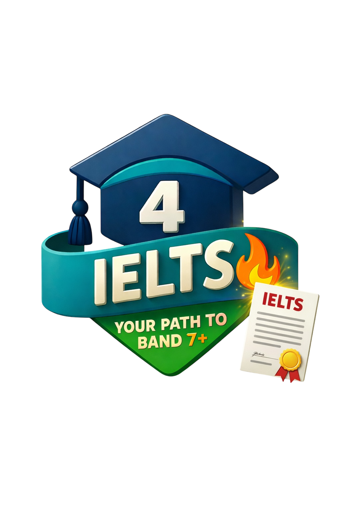

4ielts.com3,000 Essential IELTS Words · A2–C1 · Full Arabic Translations
قاموس مفردات الآيلتس · 3000 كلمة أساسية · من A2 إلى C1 · مع الترجمة العربية
© 2025 4IELTS.com • All Rights Reserved • جميع الحقوق محفوظة
| # | English | Arabic | Level | Type | Example | مثال |
|---|---|---|---|---|---|---|
| 1 | able | قادر | A2 | adj. | She is able to read and write in English. | هي قادرة على القراءة والكتابة باللغة الإنجليزية. |
| 2 | about | عن | A2 | prep. | Tell me about your family. | حدثني عن عائلتك. |
| 3 | above | فوق | A2 | prep. | The bird is flying above the clouds. | الطائر يحلق فوق السحب. |
| 4 | across | عبر | A2 | prep. | We walked across the bridge together. | مشينا عبر الجسر معاً. |
| 5 | add | يضيف | A2 | v. | Add two numbers to get the total. | أضف رقمين للحصول على المجموع. |
| 6 | address | العنوان | A2 | n. | Please write your address on the form. | يرجى كتابة عنوانك على النموذج. |
| 7 | after | بعد | A2 | prep. | We eat dinner after school every day. | نتناول العشاء بعد المدرسة كل يوم. |
| 8 | again | مرة أخرى | A2 | adv. | Please say that again — I did not hear. | يرجى قول ذلك مرة أخرى - لم أسمع. |
| 9 | age | العمر | A2 | n. | What is your age? | كم عمرك؟ |
| 10 | agree | يوافق | A2 | v. | I agree with your answer. | أوافق على إجابتك. |
| 11 | all | جميع | A2 | det. | All students must bring a pen today. | جميع الطلاب يجب أن يحضروا قلماً اليوم. |
| 12 | almost | تقريباً | A2 | adv. | I have almost finished my homework. | لقد انتهيت من واجبي تقريباً. |
| 13 | alone | وحدها | A2 | adv. | She lives alone in a small flat. | تعيش وحدها في شقة صغيرة. |
| 14 | always | دائماً | A2 | adv. | I always drink water in the morning. | أشرب الماء دائماً في الصباح. |
| 15 | animal | حيوان | A2 | n. | A dog is a friendly animal. | الكلب حيوان ودود. |
| 16 | answer | الإجابة | A2 | n. | Please write the answer in the box. | يرجى كتابة الإجابة في الصندوق. |
| 17 | any | أي | A2 | det. | Do you have any questions? | هل لديك أي أسئلة؟ |
| 18 | apple | تفاحة | A2 | n. | An apple is a healthy fruit. | التفاحة فاكهة صحية. |
| 19 | area | المنطقة | A2 | n. | This area has many shops and parks. | هذه المنطقة بها العديد من المتاجر والحدائق. |
| 20 | arm | الذراع | A2 | n. | She broke her arm playing football. | كسرت ذراعها وهي تلعب كرة القدم. |
| 21 | at | في | A2 | prep. | We meet at the library every Monday. | نلتقي في المكتبة كل يوم اثنين. |
| 22 | away | بعيداً | A2 | adv. | The school is not far away from here. | المدرسة ليست بعيدة جداً من هنا. |
| 23 | baby | الطفل الرضيع | A2 | n. | The baby is sleeping in the cot. | الطفل الرضيع ينام في السرير. |
| 24 | back | الظهر | A2 | n. | He has pain in his back. | يشعر بألم في ظهره. |
| 25 | bad | سيء | A2 | adj. | Eating too much sugar is bad for you. | تناول الكثير من السكر سيء لصحتك. |
| 26 | bag | الحقيبة | A2 | n. | Put your books in your bag. | ضع كتبك في حقيبتك. |
| 27 | ball | الكرة | A2 | n. | The children kicked the ball in the park. | ركل الأطفال الكرة في الحديقة. |
| 28 | bank | البنك | A2 | n. | I go to the bank to get money. | أذهب إلى البنك للحصول على المال. |
| 29 | bathroom | دورة المياه | A2 | n. | The bathroom is on the first floor. | دورة المياه في الطابق الأول. |
| 30 | because | لأن | A2 | conj. | I study hard because I want to pass. | أدرس بجد لأنني أريد أن أنجح. |
| 31 | bed | سرير | A2 | n. | Go to bed early before an exam. | اذهب إلى السرير مبكراً قبل الامتحان. |
| 32 | bedroom | غرفة نوم | A2 | n. | My bedroom has a window and a desk. | غرفة نومي فيها نافذة وطاولة. |
| 33 | before | قبل | A2 | prep. | Wash your hands before you eat. | اغسل يديك قبل أن تأكل. |
| 34 | behind | خلف | A2 | prep. | The park is behind the school. | الحديقة خلف المدرسة. |
| 35 | believe | يعتقد | A2 | v. | I believe that hard work leads to success. | أعتقد أن العمل الجاد يؤدي إلى النجاح. |
| 36 | below | تحت | A2 | prep. | The temperature is below zero today. | درجة الحرارة تحت الصفر اليوم. |
| 37 | between | بين | A2 | prep. | The shop is between the bank and the post office. | المتجر يقع بين البنك ومكتب البريد. |
| 38 | big | كبير | A2 | adj. | The city is very big and busy. | المدينة كبيرة جداً وصاخبة. |
| 39 | bird | طائر | A2 | n. | A bird is singing outside my window. | طائر يغني خارج نافذتي. |
| 40 | black | أسود | A2 | adj. | She has long black hair. | لديها شعر طويل أسود. |
| 41 | blue | أزرق | A2 | adj. | The sky is blue and clear today. | السماء زرقاء وصافية اليوم. |
| 42 | book | كتاب | A2 | n. | Please open your book to page ten. | من فضلك افتح كتابك في الصفحة العاشرة. |
| 43 | both | كلا | A2 | det. | Both students passed the exam with high marks. | كلا الطالبين نجحا في الامتحان بدرجات عالية. |
| 44 | box | صندوق | A2 | n. | Put your pens in the box on the table. | ضع أقلامك في الصندوق على الطاولة. |
| 45 | boy | ولد | A2 | n. | The boy is reading a story book. | الولد يقرأ كتاب قصة. |
| 46 | bread | خبز | A2 | n. | We eat bread and cheese for lunch. | نأكل الخبز والجبن على الغداء. |
| 47 | brother | أخ | A2 | n. | My brother is two years older than me. | أخي أكبر مني بسنتين. |
| 48 | brown | بني | A2 | adj. | He is wearing a brown jacket today. | هو يرتدي سترة بنية اليوم. |
| 49 | bus | حافلة | A2 | n. | I take the bus to school every morning. | أركب الحافلة إلى المدرسة كل صباح. |
| 50 | buy | يشتري | A2 | v. | I want to buy a new notebook. | أريد أن أشتري دفتر ملاحظات جديد. |
| 51 | by | بجانب | A2 | prep. | The school is by the river. | المدرسة بجانب النهر. |
| 52 | cake | كعكة | A2 | n. | We had cake and juice at the party. | أكلنا كعكة وعصير في الحفلة. |
| 53 | call | يتصل | A2 | v. | Please call me when you arrive home. | من فضلك اتصل بي عندما تصل إلى البيت. |
| 54 | can | يستطيع | A2 | moda. | She can speak three languages fluently. | هي تستطيع أن تتحدث ثلاث لغات بطلاقة. |
| 55 | car | سيارة | A2 | n. | My father drives his car to work. | والدي يقود سيارته إلى العمل. |
| 56 | card | بطاقة | A2 | n. | She sent me a birthday card. | أرسلت لي بطاقة عيد ميلاد. |
| 57 | carry | يحمل | A2 | v. | Can you help me carry these books? | هل يمكنك مساعدتي في حمل هذه الكتب؟ |
| 58 | cat | قطة | A2 | n. | The cat is sleeping on the sofa. | القطة تنام على الأريكة. |
| 59 | chair | كرسي | A2 | n. | Please sit on the chair in the corner. | من فضلك اجلس على الكرسي في الزاوية. |
| 60 | change | يغير | A2 | v. | I need to change my shoes before PE. | أحتاج إلى تغيير حذائي قبل حصة الرياضة. |
| 61 | check | يتحقق | A2 | v. | Always check your answers before submitting. | تحقق دائماً من إجاباتك قبل التسليم. |
| 62 | child | طفل | A2 | n. | Every child has the right to go to school. | لكل طفل الحق في الذهاب إلى المدرسة. |
| 63 | city | مدينة | A2 | n. | London is a very large city in England. | لندن مدينة كبيرة جداً في إنجلترا. |
| 64 | class | فصل | A2 | n. | The class starts at nine in the morning. | يبدأ الفصل في الساعة التاسعة صباحاً. |
| 65 | clean | نظيف | A2 | adj. | Keep your desk clean and tidy. | حافظ على مكتبك نظيفاً ومرتباً. |
| 66 | close | قريب | A2 | adj. | My house is close to the bus stop. | منزلي قريب من محطة الحافلات. |
| 67 | clothes | ملابس | A2 | n. | She is wearing warm clothes in winter. | إنها ترتدي ملابس دافئة في فصل الشتاء. |
| 68 | cloud | غيمة | A2 | n. | There is a large cloud in the sky. | هناك غيمة كبيرة في السماء. |
| 69 | cold | بارد | A2 | adj. | It is very cold outside today. | الجو بارد جداً خارجاً اليوم. |
| 70 | colour | لون | A2 | n. | What is your favourite colour? | ما هو لونك المفضل؟ |
| 71 | computer | حاسوب | A2 | n. | I use a computer to do my homework. | أستخدم حاسوباً لعمل واجباتي المدرسية. |
| 72 | cook | يطهو | A2 | v. | My mother cooks dinner every evening. | أمي تطهو العشاء كل مساء. |
| 73 | country | دولة | A2 | n. | France is a country in Europe. | فرنسا دولة في أوروبا. |
| 74 | cut | يقطع | A2 | v. | Please cut the paper into four pieces. | من فضلك اقطع الورقة إلى أربع قطع. |
| 75 | dark | مظلم | A2 | adj. | The room is very dark — turn on the light. | الغرفة مظلمة جداً — شغّل الضوء. |
| 76 | day | يوم | A2 | n. | Today is a sunny day in spring. | اليوم يوم مشمس في فصل الربيع. |
| 77 | dog | كلب | A2 | n. | My dog likes to run in the park. | كلبي يحب الركض في الحديقة. |
| 78 | door | باب | A2 | n. | Please close the door when you leave. | من فضلك أغلق الباب عندما تغادر. |
| 79 | down | أسفل | A2 | adv. | Please sit down and open your books. | من فضلك اجلس أسفل وافتح كتابك. |
| 80 | draw | يرسم | A2 | v. | Can you draw a picture of your family? | هل تستطيع أن ترسم صورة لعائلتك؟ |
| 81 | drink | يشرب | A2 | v. | You should drink eight glasses of water a day. | يجب أن تشرب ثماني أكواب من الماء يومياً. |
| 82 | drive | يقود | A2 | v. | My uncle can drive a car and a truck. | عمي يستطيع أن يقود سيارة وشاحنة. |
| 83 | dry | جاف | A2 | adj. | The weather has been very dry this summer. | الطقس كان جافاً جداً هذا الصيف. |
| 84 | during | أثناء | A2 | prep. | We must be quiet during the lesson. | يجب أن نكون هادئين أثناء الدرس. |
| 85 | each | كل | A2 | det. | Each student must bring their own pencil. | كل طالب يجب أن يحضر قلمه الخاص. |
| 86 | early | مبكر | A2 | adj. | I wake up early every morning for school. | أستيقظ مبكراً كل صباح للذهاب إلى المدرسة. |
| 87 | eat | يأكل | A2 | v. | We eat three meals a day. | نحن نأكل ثلاث وجبات في اليوم. |
| 88 | egg | بيضة | A2 | n. | I have an egg and toast for breakfast. | أتناول بيضة وخبزاً محمصاً على الإفطار. |
| 89 | end | نهاية | A2 | n. | Write your name at the end of the page. | اكتب اسمك في نهاية الصفحة. |
| 90 | enjoy | يستمتع | A2 | v. | I enjoy reading books in the evening. | أستمتع بقراءة الكتب في المساء. |
| 91 | enter | يدخل | A2 | v. | Please knock before you enter the room. | من فضلك اطرق الباب قبل أن تدخل الغرفة. |
| 92 | every | كل | A2 | det. | Every day is a new chance to learn. | كل يوم هو فرصة جديدة للتعلم. |
| 93 | eye | عين | A2 | n. | She has beautiful green eyes. | لديها عيون خضراء جميلة. |
| 94 | face | وجه | A2 | n. | Wash your face in the morning. | اغسل وجهك في الصباح. |
| 95 | fall | تسقط | A2 | v. | Leaves fall from trees in autumn. | أوراق الأشجار تسقط في فصل الخريف. |
| 96 | family | عائلة | A2 | n. | My family has four people: mum, dad, sister and me. | عائلتي تتكون من أربع أشخاص: الأم والأب والأخت وأنا. |
| 97 | far | بعيد | A2 | adj. | Is the supermarket far from here? | هل السوبرماركت بعيد من هنا؟ |
| 98 | fast | سريع | A2 | adj. | The fast train goes to the city in one hour. | القطار السريع يذهب إلى المدينة في ساعة واحدة. |
| 99 | father | والد | A2 | n. | My father is a teacher at a primary school. | والدي معلم في مدرسة ابتدائية. |
| 100 | feel | يشعر | A2 | v. | I feel happy when I get a good grade. | أشعر بالسعادة عندما أحصل على درجة جيدة. |
| 101 | few | قليل | A2 | det. | Only a few students came to school today. | عدد قليل فقط من الطلاب جاءوا إلى المدرسة اليوم. |
| 102 | finger | إصبع | A2 | n. | She cut her finger while cooking. | قطعت إصبعها أثناء الطهي. |
| 103 | finish | ينهي | A2 | v. | Please finish your work before the bell. | من فضلك أنهِ عملك قبل جرس الخروج. |
| 104 | fire | حريق | A2 | n. | The fire station is on the main road. | محطة الحريق تقع على الطريق الرئيسي. |
| 105 | fish | سمك | A2 | n. | We had fish and chips for dinner on Friday. | تناولنا السمك والبطاطس المقلية على العشاء يوم الجمعة. |
| 106 | floor | دور | A2 | n. | The classroom is on the ground floor. | الفصل الدراسي يقع في الدور الأرضي. |
| 107 | flower | زهرة | A2 | n. | She planted a red flower in the garden. | زرعت زهرة حمراء في الحديقة. |
| 108 | fly | يطير | A2 | v. | Birds fly south in the winter. | الطيور تطير جنوباً في فصل الشتاء. |
| 109 | food | طعام | A2 | n. | Healthy food is good for your body. | الطعام الصحي جيد لجسمك. |
| 110 | foot | قدم | A2 | n. | He hurt his foot during the football match. | أصاب قدمه أثناء مباراة كرة القدم. |
| 111 | for | لـ | A2 | prep. | This gift is for you from all of us. | هذه الهدية لك من كلنا. |
| 112 | friend | صديق | A2 | n. | My best friend lives next door to me. | أفضل صديق لي يسكن بجانبنا مباشرة. |
| 113 | from | من | A2 | prep. | She comes from a small town in the south. | تأتي من بلدة صغيرة في الجنوب. |
| 114 | fruit | فاكهة | A2 | n. | Fruit is a healthy snack between meals. | الفاكهة وجبة خفيفة صحية بين الوجبات. |
| 115 | full | ممتلئ | A2 | adj. | The glass is full of cold water. | الكأس ممتلئة بماء بارد. |
| 116 | fun | متعة | A2 | n. | Learning English can be great fun. | تعلم اللغة الإنجليزية يمكن أن يكون متعة رائعة. |
| 117 | game | لعبة | A2 | n. | We played a fun game in PE class today. | لعبنا لعبة ممتعة في درس التربية البدنية اليوم. |
| 118 | garden | حديقة | A2 | n. | We grow tomatoes in our garden. | نزرع الطماطم في حديقتنا. |
| 119 | girl | فتاة | A2 | n. | The girl is reading a book under the tree. | الفتاة تقرأ كتاباً تحت الشجرة. |
| 120 | good | جيد | A2 | adj. | He is a good student who always works hard. | هو طالب جيد يعمل بجد دائماً. |
| 121 | great | رائع | A2 | adj. | She had a great idea for the project. | كان لديها فكرة رائعة للمشروع. |
| 122 | green | أخضر | A2 | adj. | Eat green vegetables every day. | كل الخضروات الخضراء كل يوم. |
| 123 | group | مجموعة | A2 | n. | Work in your group to find the answer. | اعمل مع مجموعتك للعثور على الإجابة. |
| 124 | grow | ينمو | A2 | v. | Plants need water and sunlight to grow. | النباتات تحتاج الماء والضوء لكي تنمو. |
| 125 | hand | يد | A2 | n. | Raise your hand if you know the answer. | ارفع يدك إذا كنت تعرف الإجابة. |
| 126 | happy | سعيد | A2 | adj. | I feel happy when I learn something new. | أشعر بالسعادة عندما أتعلم شيئاً جديداً. |
| 127 | hard | صعب | A2 | adj. | The exam was hard but I did my best. | الامتحان كان صعباً لكنني بذلت قصارى جهدي. |
| 128 | head | الرأس | A2 | n. | Wear a helmet to protect your head. | ارتدِ خوذة لحماية رأسك. |
| 129 | hear | يسمع | A2 | v. | Can you hear the teacher at the back? | هل يمكنك سماع المعلم من الخلف؟ |
| 130 | help | يساعد | A2 | v. | Please help your classmate if they are stuck. | يرجى مساعدة زميلك إذا واجه صعوبة. |
| 131 | high | عالي | A2 | adj. | The mountain is very high and covered in snow. | الجبل عالي جداً ومغطى بالثلج. |
| 132 | home | البيت / المنزل | A2 | n. | I go home at three o'clock every day. | أذهب إلى البيت الساعة الثالثة كل يوم. |
| 133 | hot | حار | A2 | adj. | It is very hot in the desert. | الطقس حار جداً في الصحراء. |
| 134 | hour | ساعة | A2 | n. | The lesson lasts one hour. | الدرس يستمر ساعة واحدة. |
| 135 | house | بيت / منزل | A2 | n. | Their house has a red door and a garden. | منزلهم له باب أحمر وحديقة. |
| 136 | hungry | جوعان / جائع | A2 | adj. | I am hungry — can I have a snack please? | أنا جائع - هل يمكنني تناول وجبة خفيفة من فضلك؟ |
| 137 | in | في | A2 | prep. | The books are in the cupboard by the door. | الكتب موجودة في الخزانة بجانب الباب. |
| 138 | into | إلى / في | A2 | prep. | Pour the juice into the glass. | اسكب العصير في الكوب. |
| 139 | job | وظيفة | A2 | n. | She has a job at the local library. | لديها وظيفة في مكتبة البلدة. |
| 140 | jump | يقفز | A2 | v. | Can you jump over the rope? | هل يمكنك القفز فوق الحبل؟ |
| 141 | keep | يحافظ على / يبقي | A2 | v. | Keep your classroom clean and tidy. | حافظ على فصلك نظيفاً ومرتباً. |
| 142 | key | مفتاح | A2 | n. | I lost the key to my locker this morning. | فقدت مفتاح خزانتي هذا الصباح. |
| 143 | kind | طيب / لطيف | A2 | adj. | Be kind to everyone in your class. | كن طيباً مع الجميع في فصلك. |
| 144 | kitchen | مطبخ | A2 | n. | My mother cooks in the kitchen. | والدتي تطبخ في المطبخ. |
| 145 | large | كبير | A2 | adj. | The library has a large collection of books. | المكتبة لديها مجموعة كبيرة من الكتب. |
| 146 | last | الأسبوع الماضي | A2 | adj. | Last week we learned about plants. | الأسبوع الماضي تعلمنا عن النباتات. |
| 147 | late | متأخر / متأخرة | A2 | adj. | Please don't be late for the morning lesson. | من فضلك لا تتأخر عن درس الصباح. |
| 148 | learn | يتعلم | A2 | v. | We learn something new every day at school. | نتعلم شيئاً جديداً كل يوم في المدرسة. |
| 149 | leave | يترك / يضع | A2 | v. | Please leave your bag by the door. | من فضلك ضع حقيبتك بجانب الباب. |
| 150 | leg | ساق | A2 | n. | She hurt her leg during the race. | أصيبت ساقها أثناء السباق. |
| 151 | letter | حرف | A2 | n. | Write the first letter of your name. | اكتب الحرف الأول من اسمك. |
| 152 | light | ضوء | A2 | n. | Turn on the light — it is dark in here. | أشعل الضوء - الغرفة مظلمة هنا. |
| 153 | listen | يستمع | A2 | v. | Listen carefully to the instructions. | استمع بانتباه إلى التعليمات. |
| 154 | little | قليل | A2 | adj. | A little practice every day makes you better. | ممارسة قليلة كل يوم تجعلك أفضل. |
| 155 | live | يعيش | A2 | v. | We live in a small town near the sea. | نعيش في بلدة صغيرة بالقرب من البحر. |
| 156 | long | طويل | A2 | adj. | The river is very long and wide. | النهر طويل جداً وعريض. |
| 157 | look | ينظر | A2 | v. | Look at the picture and describe it. | انظر إلى الصورة واشرحها. |
| 158 | lot | الكثير من | A2 | n. | A lot of students enjoy reading in class. | الكثير من الطلاب يستمتعون بالقراءة في الفصل. |
| 159 | lunch | الغداء | A2 | n. | We have lunch at twelve thirty. | نتناول الغداء في الساعة الثانية عشرة والنصف. |
| 160 | man | رجل | A2 | n. | The man is reading a newspaper at the café. | الرجل يقرأ صحيفة في المقهى. |
| 161 | many | كم عدد | A2 | det. | How many books have you read this year? | كم عدد الكتب التي قرأتها هذا العام؟ |
| 162 | milk | الحليب | A2 | n. | Milk is a healthy drink for children. | الحليب مشروب صحي للأطفال. |
| 163 | minute | دقيقة | A2 | n. | We have five minutes before the lesson ends. | لدينا خمس دقائق قبل انتهاء الحصة. |
| 164 | money | المال | A2 | n. | Save your money to buy something useful. | ادخر أموالك لشراء شيء مفيد. |
| 165 | month | شهر | A2 | n. | December is the last month of the year. | ديسمبر هو آخر شهر في السنة. |
| 166 | more | أكثر | A2 | det. | I need more time to finish this exercise. | أحتاج إلى مزيد من الوقت لإكمال هذا التمرين. |
| 167 | morning | صباح | A2 | n. | Good morning — take out your books please. | صباح الخير — أخرجوا كتبكم من فضلكم. |
| 168 | mother | أم | A2 | n. | My mother helps me with my homework. | أمي تساعدني في واجباتي المدرسية. |
| 169 | mouth | فم | A2 | n. | Open your mouth and say 'ah'. | افتح فمك وقل 'آ'. |
| 170 | much | كم من | A2 | det. | How much water do you drink a day? | كم كمية الماء التي تشربها في اليوم؟ |
| 171 | music | موسيقى | A2 | n. | I love listening to music after school. | أحب الاستماع إلى الموسيقى بعد المدرسة. |
| 172 | name | اسم | A2 | n. | Write your name at the top of the page. | اكتب اسمك في أعلى الصفحة. |
| 173 | near | بالقرب من | A2 | prep. | The park is near the school. | الحديقة بالقرب من المدرسة. |
| 174 | new | جديد | A2 | adj. | She has a new pencil case with her name on it. | لديها حقيبة أقلام جديدة مكتوب عليها اسمها. |
| 175 | next | القادم | A2 | adj. | Next week we will study verbs. | الأسبوع القادم سندرس الأفعال. |
| 176 | nice | لطيف | A2 | adj. | It is nice to help your classmates. | من اللطيف أن تساعد زملاءك في الفصل. |
| 177 | night | ليل | A2 | n. | I do my homework in the evening before night. | أنجز واجباتي في المساء قبل الليل. |
| 178 | nose | أنف | A2 | n. | Cover your nose and mouth when you sneeze. | غطّ أنفك وفمك عندما تعطس. |
| 179 | number | رقم | A2 | n. | What is your lucky number? | ما هو رقمك المفضل؟ |
| 180 | of | من | A2 | prep. | The capital of France is Paris. | عاصمة فرنسا هي باريس. |
| 181 | off | إطفاء | A2 | adv. | Turn off the lights when you leave. | أطفئ الأضواء عندما تغادر. |
| 182 | often | غالباً | A2 | adv. | I often read before going to bed. | أقرأ غالباً قبل الذهاب إلى النوم. |
| 183 | old | كبير في السن | A2 | adj. | My grandmother is old and very wise. | جدتي كبيرة في السن وحكيمة جداً. |
| 184 | on | على | A2 | prep. | Put your pen on the desk. | ضع قلمك على المكتب. |
| 185 | once | مرة واحدة | A2 | adv. | I once visited the science museum with my class. | زرت متحف العلوم مع فصلي مرة واحدة. |
| 186 | only | فقط | A2 | adv. | There is only one answer that is correct. | هناك إجابة واحدة فقط صحيحة. |
| 187 | open | افتح | A2 | v. | Please open your books to page twelve. | من فضلك افتح كتابك على الصفحة الثانية عشرة. |
| 188 | other | الآخر | A2 | det. | Look at the other examples in the book. | انظر إلى الأمثلة الأخرى في الكتاب. |
| 189 | out | خارج | A2 | adv. | Go out and play in the fresh air. | اخرج والعب في الهواء الطلق. |
| 190 | outside | بالخارج | A2 | adv. | We eat lunch outside when it is sunny. | نتناول الغداء بالخارج عندما تكون الشمس مشرقة. |
| 191 | over | فوق | A2 | prep. | The rainbow appeared over the hill. | ظهر قوس قزح فوق التل. |
| 192 | page | صفحة | A2 | n. | Turn to page forty-seven please. | توجه إلى الصفحة السابعة والأربعين من فضلك. |
| 193 | paper | ورقة | A2 | n. | Write your answers on the paper. | اكتب إجاباتك على الورقة. |
| 194 | park | حديقة | A2 | n. | We played football in the park on Saturday. | لعبنا كرة القدم في الحديقة يوم السبت. |
| 195 | part | جزء | A2 | n. | This is the easy part of the test. | هذا هو الجزء السهل من الاختبار. |
| 196 | people | أشخاص | A2 | n. | Many people come to this market on weekends. | يأتي الكثير من الأشخاص إلى هذا السوق في نهاية الأسبوع. |
| 197 | phone | هاتف | A2 | n. | She uses her phone to call her parents. | تستخدم هاتفها للاتصال بوالديها. |
| 198 | picture | صورة | A2 | n. | Draw a picture of your favourite animal. | ارسم صورة لحيوانك المفضل. |
| 199 | place | مكان | A2 | n. | The library is a quiet place to study. | المكتبة مكان هادئ للدراسة. |
| 200 | plant | نبات | A2 | n. | This plant needs water and sunlight every day. | هذا النبات يحتاج إلى الماء وأشعة الشمس كل يوم. |
| 201 | play | يلعب | A2 | v. | Children play in the garden after school. | يلعب الأطفال في الحديقة بعد انتهاء الدراسة. |
| 202 | point | نقطة | A2 | n. | Each correct answer is worth one point. | كل إجابة صحيحة تساوي نقطة واحدة. |
| 203 | poor | فقير | A2 | adj. | They gave food to the poor people in the town. | أعطوا الطعام للأشخاص الفقراء في المدينة. |
| 204 | question | سؤال | A2 | n. | Ask a question if you do not understand. | اطرح سؤالاً إذا لم تفهم. |
| 205 | quick | سريع | A2 | adj. | Let's do a quick review before the test. | دعنا نقوم بمراجعة سريعة قبل الاختبار. |
| 206 | read | اقرأ | A2 | v. | Read the passage carefully before answering. | اقرأ النص بعناية قبل الإجابة. |
| 207 | ready | جاهز | A2 | adj. | Are you ready to begin the exercise? | هل أنت جاهز لبدء التمرين؟ |
| 208 | red | أحمر | A2 | adj. | She is wearing a red dress at the party. | ترتدي فستاناً أحمر في الحفلة. |
| 209 | remember | تذكر | A2 | v. | Remember to bring your homework tomorrow. | تذكر أن تحضر واجبك المنزلي غداً. |
| 210 | rice | أرز | A2 | n. | Rice is a staple food in many countries. | الأرز هو غذاء أساسي في كثير من الدول. |
| 211 | right | صحيح | A2 | adj. | That is the right answer — well done! | تلك هي الإجابة الصحيحة — عمل ممتاز! |
| 212 | river | نهر | A2 | n. | The river flows through the middle of the city. | يتدفق النهر عبر وسط المدينة. |
| 213 | room | غرفة | A2 | n. | The classroom is a large and bright room. | الفصل الدراسي غرفة كبيرة وساطعة. |
| 214 | run | يركض | A2 | v. | Run to the finish line as fast as you can. | اركض إلى خط النهاية بأسرع ما يمكن. |
| 215 | same | نفس | A2 | adj. | We all have the same textbook this year. | نحن جميعاً لدينا نفس الكتاب المدرسي هذا العام. |
| 216 | school | مدرسة | A2 | n. | I go to school five days a week. | أذهب إلى المدرسة خمسة أيام في الأسبوع. |
| 217 | sea | البحر | A2 | n. | We swam in the sea on our holiday. | سبحنا في البحر أثناء إجازتنا. |
| 218 | sentence | جملة | A2 | n. | Write a sentence using the new word. | اكتب جملة باستخدام الكلمة الجديدة. |
| 219 | short | قصير | A2 | adj. | Write a short paragraph about your weekend. | اكتب فقرة قصيرة عن نهاية أسبوعك. |
| 220 | show | يعرض/يريك | A2 | v. | Show me your work when you have finished. | أرِني عملك عندما تنتهي من الإجابة. |
| 221 | sing | يغني | A2 | v. | We sing a song at the start of class. | نحن نغني أغنية في بداية الحصة. |
| 222 | sister | أخت | A2 | n. | My sister is in the class above me. | أختي في الفصل الذي فوق فصلي. |
| 223 | sit | يجلس | A2 | v. | Please sit down and listen carefully. | من فضلك اجلس واستمع بانتباه. |
| 224 | sky | السماء | A2 | n. | The sky is very clear and blue today. | السماء صافية وزرقاء جداً اليوم. |
| 225 | sleep | ينام | A2 | v. | Children need to sleep for at least nine hours. | الأطفال يحتاجون إلى النوم لمدة تسع ساعات على الأقل. |
| 226 | slow | بطيء | A2 | adj. | The slow reader reads each word carefully. | القارئ البطيء يقرأ كل كلمة بعناية. |
| 227 | small | صغير | A2 | adj. | Our school has a small but friendly class. | فصلنا صغير لكنه ودود وجميل. |
| 228 | smile | يبتسم | A2 | v. | Smile when you meet someone new. | ابتسم عندما تقابل شخصاً جديداً. |
| 229 | some | بعض | A2 | det. | Would you like some water? | هل تود أن تشرب بعض الماء؟ |
| 230 | sometimes | أحياناً | A2 | adv. | I sometimes walk to school with my friend. | أحياناً أمشي إلى المدرسة مع صديقي. |
| 231 | song | أغنية | A2 | n. | We learned a new song in music class. | تعلمنا أغنية جديدة في حصة الموسيقى. |
| 232 | sorry | آسف | A2 | adj. | I am sorry I was late this morning. | أنا آسف لأنني تأخرت هذا الصباح. |
| 233 | speak | يتحدث | A2 | v. | Speak slowly and clearly in the speaking test. | تحدث ببطء ووضوح في اختبار التحدث. |
| 234 | sport | رياضة | A2 | n. | My favourite sport is swimming. | رياضتي المفضلة هي السباحة. |
| 235 | stand | يقف | A2 | v. | Stand up straight when you speak in public. | قف بشكل مستقيم عندما تتحدث أمام الجمهور. |
| 236 | start | يبدأ | A2 | v. | We start school at eight o'clock every morning. | نبدأ الدراسة في الساعة الثامنة صباحاً كل يوم. |
| 237 | stop | يتوقف | A2 | v. | Stop talking and listen to the teacher. | توقف عن الحديث واستمع إلى المعلم. |
| 238 | story | قصة | A2 | n. | The teacher told us a funny story today. | روى لنا المعلم قصة مضحكة اليوم. |
| 239 | student | طالب | A2 | n. | Every student must do their best in class. | كل طالب يجب أن يبذل قصارى جهده في الفصل. |
| 240 | study | يدرس | A2 | v. | I study English for one hour every evening. | أدرس اللغة الإنجليزية لمدة ساعة واحدة كل مساء. |
| 241 | sun | الشمس | A2 | n. | The sun rises in the east every morning. | تشرق الشمس في الشرق كل صباح. |
| 242 | swim | يسبح | A2 | v. | Can you swim in the sea safely? | هل يمكنك أن تسبح في البحر بأمان؟ |
| 243 | table | طاولة | A2 | n. | Put your books on the table by the door. | ضع كتبك على الطاولة بجانب الباب. |
| 244 | talk | يتحدث | A2 | v. | Do not talk while the teacher is explaining. | لا تتحدث بينما المعلم يشرح الدرس. |
| 245 | teacher | معلم | A2 | n. | My teacher is very patient and helpful. | معلمي صبور جداً ومساعد. |
| 246 | than | من | A2 | conj. | She is taller than her brother by five centimetres. | هي أطول من أخيها بمقدار خمسة سنتيمترات. |
| 247 | thing | شيء | A2 | n. | A pencil is a useful thing in every classroom. | القلم الرصاص هو شيء مفيد في كل فصل دراسي. |
| 248 | time | وقت | A2 | n. | What time does the lesson start today? | في أي وقت يبدأ الدرس اليوم؟ |
| 249 | tired | متعب / متعبة | A2 | adj. | I felt tired after the long spelling test. | شعرت بالتعب بعد اختبار الإملاء الطويل. |
| 250 | to | إلى | A2 | prep. | I walk to school every morning. | أمشي إلى المدرسة كل صباح. |
| 251 | today | اليوم | A2 | n. | Today we will learn ten new vocabulary words. | سنتعلم عشر كلمات جديدة اليوم. |
| 252 | together | معاً | A2 | adv. | We work together to find the best answer. | نعمل معاً لإيجاد أفضل إجابة. |
| 253 | tomorrow | غداً | A2 | n. | Do your homework tonight — not tomorrow morning. | اعمل على واجبك الليلة - وليس غداً صباحاً. |
| 254 | town | بلدة / مدينة | A2 | n. | I live in a small town near the mountains. | أسكن في بلدة صغيرة بالقرب من الجبال. |
| 255 | train | قطار | A2 | n. | We take the train to the city on Sundays. | نأخذ القطار إلى المدينة يوم الأحد. |
| 256 | tree | شجرة | A2 | n. | There is a tall tree outside our classroom window. | هناك شجرة طويلة خارج نافذة فصلنا الدراسي. |
| 257 | try | يحاول | A2 | v. | Always try your best in every task. | حاول دائماً أن تعطي أفضل ما لديك في كل مهمة. |
| 258 | turn | يقلب / يتحول | A2 | v. | Turn to page forty-five in your textbook. | اقلب الصفحة إلى صفحة خمسة وأربعين في كتابك المدرسي. |
| 259 | under | تحت | A2 | prep. | The cat is sleeping under the table. | القطة نائمة تحت الطاولة. |
| 260 | understand | يفهم | A2 | v. | Do you understand the question? | هل تفهم السؤال؟ |
| 261 | up | أعلى / يرفع | A2 | adv. | Put your hand up if you know the answer. | ارفع يدك إذا كنت تعرف الإجابة. |
| 262 | wait | ينتظر | A2 | v. | Please wait outside until I call your name. | يرجى انتظر خارج الفصل حتى أناديك. |
| 263 | walk | يمشي | A2 | v. | I walk to school because it is not far. | أمشي إلى المدرسة لأنها ليست بعيدة. |
| 264 | warm | دافئ / دافئة | A2 | adj. | The classroom is warm and comfortable in winter. | الفصل الدراسي دافئ ومريح في الشتاء. |
| 265 | watch | يشاهد | A2 | v. | Watch the video and answer the questions below. | شاهد الفيديو والإجابة عن الأسئلة أدناه. |
| 266 | water | ماء | A2 | n. | Drink a glass of water before the exam. | اشرب كأس ماء قبل الامتحان. |
| 267 | week | أسبوع | A2 | n. | There are seven days in a week. | هناك سبعة أيام في الأسبوع. |
| 268 | well | بشكل جيد / جيداً | A2 | adv. | She writes very well for her age. | تكتب بشكل جيد جداً لسنها. |
| 269 | white | أبيض | A2 | adj. | Write your answers on the white paper. | اكتب إجاباتك على الورقة البيضاء. |
| 270 | wide | واسع | A2 | adj. | The road is wide enough for two buses. | الطريق واسع بما يكفي لحافلتين. |
| 271 | window | نافذة | A2 | n. | Open the window to let in fresh air. | افتح النافذة لإدخال الهواء النقي. |
| 272 | with | مع | A2 | prep. | Work with a partner to check your answers. | اعمل مع زميل للتحقق من إجاباتك. |
| 273 | woman | امرأة | A2 | n. | The woman is a doctor at the local hospital. | المرأة هي طبيبة في المستشفى المحلي. |
| 274 | work | يعمل | A2 | v. | We work in pairs during speaking activities. | نحن نعمل في أزواج أثناء أنشطة التحدث. |
| 275 | write | يكتب | A2 | v. | Write the answer in your notebook. | اكتب الإجابة في دفترك. |
| 276 | year | سنة | A2 | n. | I have been learning English for one year. | أتعلم اللغة الإنجليزية منذ سنة واحدة. |
| 277 | yellow | أصفر | A2 | adj. | The sunflower has beautiful yellow petals. | لدى عباد الشمس بتلات صفراء جميلة. |
| 278 | yesterday | أمس | A2 | n. | Yesterday we did a vocabulary quiz in class. | أمس أجرينا اختبار مفردات في الفصل. |
| 279 | young | صغير/شاب | A2 | adj. | Young learners pick up new languages quickly. | المتعلمون الصغار يلتقطون اللغات الجديدة بسرعة. |
| 280 | ability | القدرة | A2 | n. | She has the ability to learn new words very quickly. | لديها القدرة على تعلم كلمات جديدة بسرعة كبيرة. |
| 281 | adult | بالغ | A2 | n. | Each adult in the group must sign the form. | يجب على كل بالغ في المجموعة توقيع الاستمارة. |
| 282 | afternoon | بعد الظهر | A2 | n. | We have art class every Tuesday afternoon. | لدينا حصة فن كل يوم ثلاثاء بعد الظهر. |
| 283 | airport | مطار | A2 | n. | The airport is busy every day of the week. | المطار مكتظ كل يوم من أيام الأسبوع. |
| 284 | around | حول | A2 | prep. | There are trees around the school building. | هناك أشجار حول مبنى المدرسة. |
| 285 | arrive | يصل | A2 | v. | I usually arrive at school before eight o'clock. | عادة ما أصل إلى المدرسة قبل الثامنة صباحاً. |
| 286 | beach | شاطئ | A2 | n. | We built sandcastles on the beach last summer. | بنينا قصور الرمل على الشاطئ في الصيف الماضي. |
| 287 | beautiful | جميل | A2 | adj. | The garden is beautiful in the spring. | الحديقة جميلة في فصل الربيع. |
| 288 | bicycle | دراجة | A2 | n. | I ride my bicycle to school every morning. | أركب دراجتي إلى المدرسة كل صباح. |
| 289 | birthday | عيد ميلاد | A2 | n. | My birthday is on the twelfth of April. | عيد ميلادي في الثاني عشر من أبريل. |
| 290 | breakfast | إفطار | A2 | n. | I always eat breakfast before leaving the house. | أتناول الإفطار دائماً قبل مغادرة المنزل. |
| 291 | bridge | جسر | A2 | n. | We crossed the bridge over the wide river. | عبرنا الجسر فوق النهر الواسع. |
| 292 | bright | ساطع/مضيء | A2 | adj. | The classroom has bright lights and big windows. | الفصل الدراسي مضاء بأضواء ساطعة وله نوافذ كبيرة. |
| 293 | build | يبني | A2 | v. | The children helped build a birdhouse in class. | ساعد الأطفال في بناء بيت للطيور في الفصل. |
| 294 | busy | مزدحم | A2 | adj. | The town centre is very busy on Saturdays. | وسط المدينة مزدحم جداً يوم السبت. |
| 295 | butter | زبدة | A2 | n. | I spread butter on my toast every morning. | أضع الزبدة على التوست كل صباح. |
| 296 | button | زر | A2 | n. | Click the green button to start the quiz. | اضغط على الزر الأخضر لبدء الاختبار. |
| 297 | café | مقهى | A2 | n. | We met at a small café near the library. | التقينا في مقهى صغير بالقرب من المكتبة. |
| 298 | capital | عاصمة | A2 | n. | What is the capital city of Australia? | ما هي عاصمة أستراليا؟ |
| 299 | careful | حذر | A2 | adj. | Be careful when you cross the road. | كن حذراً عند عبور الطريق. |
| 300 | centre | مركز | A2 | n. | The sports centre is open seven days a week. | مركز الرياضة مفتوح سبعة أيام في الأسبوع. |
| 301 | cheese | جبن | A2 | n. | She put cheese and tomato on the sandwich. | وضعت الجبن والطماطم على الساندويتش. |
| 302 | chicken | دجاج | A2 | n. | We had roast chicken for dinner on Sunday. | تناولنا دجاجاً مشوياً على العشاء يوم الأحد. |
| 303 | choose | اختار | A2 | v. | Choose the correct answer and circle it. | اختر الإجابة الصحيحة وضع دائرة حولها. |
| 304 | cinema | سينما | A2 | n. | We went to the cinema to see a new film. | ذهبنا إلى السينما لمشاهدة فيلم جديد. |
| 305 | circle | دائرة | A2 | n. | Draw a circle around the correct answer. | ارسم دائرة حول الإجابة الصحيحة. |
| 306 | clinic | عيادة | A2 | n. | She went to the clinic for a check-up. | ذهبت إلى العيادة لإجراء فحص طبي. |
| 307 | clock | ساعة | A2 | n. | The clock on the wall says it is two o'clock. | الساعة على الجدار تشير إلى الساعة الثانية. |
| 308 | club | نادي | A2 | n. | I joined the English speaking club at school. | انضممت إلى نادي المتحدثين للغة الإنجليزية في المدرسة. |
| 309 | coat | معطف | A2 | n. | Put on your coat before going outside. | ارتدِ معطفك قبل الخروج. |
| 310 | coffee | قهوة | A2 | n. | She drinks one cup of coffee in the morning. | تشرب فنجان قهوة واحد في الصباح. |
| 311 | complete | أكمل | A2 | v. | Complete the sentences using the words below. | أكمل الجمل باستخدام الكلمات أدناه. |
| 312 | corner | زاوية | A2 | n. | Turn left at the corner and then go straight. | انعطف يساراً عند الزاوية ثم استمر في السير مباشرة. |
| 313 | correct | صحيح | A2 | adj. | Put a tick next to the correct answer. | ضع علامة بجانب الإجابة الصحيحة. |
| 314 | cow | بقرة | A2 | n. | A cow gives milk that we use every day. | البقرة تعطي الحليب الذي نستخدمه كل يوم. |
| 315 | cup | فنجان | A2 | n. | She drank a hot cup of tea before leaving. | شربت فنجان شاي ساخن قبل المغادرة. |
| 316 | cupboard | دولاب | A2 | n. | The books are on the shelf inside the cupboard. | الكتب موجودة على الرف داخل الدولاب. |
| 317 | dance | رقص | A2 | v. | We dance to music in our PE class on Fridays. | نرقص على الموسيقى في حصة التربية البدنية يوم الجمعة. |
| 318 | daughter | ابنة | A2 | n. | Their daughter is studying at university now. | ابنتهم تدرس الآن في الجامعة. |
| 319 | dear | عزيز | A2 | adj. | Begin the letter with the words 'Dear Sir'. | ابدأ الرسالة بكلمات "حضرة السيد". |
| 320 | decide | قرر | A2 | v. | I need to decide which topic to write about. | أحتاج إلى اتخاذ قرار بشأن الموضوع الذي سأكتب عنه. |
| 321 | desk | مكتب | A2 | n. | There is a pen and a ruler on my desk. | يوجد قلم ومسطرة على مكتبي. |
| 322 | dictionary | قاموس | A2 | n. | Use a dictionary to check the spelling. | استخدم القاموس للتحقق من الإملاء. |
| 323 | different | مختلف | A2 | adj. | Each student has a different favourite subject. | كل طالب له موضوع مفضل مختلف. |
| 324 | difficult | صعب | A2 | adj. | This grammar exercise is difficult but useful. | تمرين النحو هذا صعب لكنه مفيد. |
| 325 | dinner | العشاء | A2 | n. | We all sit together for dinner every evening. | نجلس جميعاً معاً على العشاء كل مساء. |
| 326 | direction | اتجاه | A2 | n. | Follow the direction signs to find the exit. | اتبع علامات الاتجاه للعثور على المخرج. |
| 327 | dirty | متسخ | A2 | adj. | Wash dirty hands before eating any food. | اغسل اليدين المتسخة قبل تناول أي طعام. |
| 328 | dream | حلم | A2 | v. | I dream of travelling to many different countries. | أحلم بالسفر إلى العديد من الدول المختلفة. |
| 329 | dress | فستان | A2 | n. | She is wearing a blue dress and white shoes. | ترتدي فستاناً أزرق وحذاء أبيض. |
| 330 | easy | سهل | A2 | adj. | The first exercise was easy for everyone. | التمرين الأول كان سهلاً للجميع. |
| 331 | evening | مساء | A2 | n. | I do my homework in the evening after dinner. | أقوم بواجبي المدرسي في المساء بعد العشاء. |
| 332 | everything | كل شيء | A2 | pron. | Everything in the shop is on sale this week. | كل شيء في المتجر معروض للبيع هذا الأسبوع. |
| 333 | exam | امتحان | A2 | n. | The exam starts at nine o'clock sharp. | الامتحان يبدأ الساعة التاسعة صباحاً بالضبط. |
| 334 | example | مثال | A2 | n. | Give one example of a healthy food. | أعطِ مثالاً واحداً على طعام صحي. |
| 335 | expensive | مكلف | A2 | adj. | The new phone is very expensive. | الهاتف الجديد مكلف جداً. |
| 336 | explain | شرح | A2 | v. | Can you explain the meaning of this word? | هل يمكنك شرح معنى هذه الكلمة؟ |
| 337 | factory | مصنع | A2 | n. | My father works in a factory near our town. | والدي يعمل في مصنع بالقرب من مدينتنا. |
| 338 | flat | شقة | A2 | n. | We live in a flat on the third floor. | نحن نسكن في شقة في الطابق الثالث. |
| 339 | forest | غابة | A2 | n. | The forest is full of tall trees and wildlife. | الغابة مليئة بالأشجار الطويلة والحيوانات البرية. |
| 340 | forget | نسي | A2 | v. | Do not forget to bring your notebook tomorrow. | لا تنسَ إحضار دفترك غداً. |
| 341 | free | مجاني | A2 | adj. | The museum is free for children under twelve. | المتحف مجاني للأطفال دون سن اثني عشر سنة. |
| 342 | fresh | طازج | A2 | adj. | Fresh vegetables and fruit are good for health. | الخضراوات والفواكه الطازجة مفيدة للصحة. |
| 343 | glass | كوب | A2 | n. | She drank a full glass of cold orange juice. | شربت كوباً ممتلئاً من عصير البرتقال البارد. |
| 344 | grammar | قواعد اللغة | A2 | n. | Good grammar helps you write clear sentences. | القواعد الجيدة تساعدك على كتابة جمل واضحة. |
| 345 | guess | خمّن | A2 | v. | Try to guess the meaning from the context. | حاول أن تخمّن المعنى من السياق. |
| 346 | health | صحة | A2 | n. | Eating well and exercising is good for health. | الأكل الجيد والتمارين الرياضية مفيدة للصحة. |
| 347 | heavy | ثقيل | A2 | adj. | The bag is too heavy for the young child. | الحقيبة ثقيلة جداً بالنسبة للطفل الصغير. |
| 348 | helpful | مفيد | A2 | adj. | My teacher is very helpful and always explains things clearly. | معلمي مفيد جداً ويشرح الأشياء بوضوح دائماً. |
| 349 | holiday | عطلة | A2 | n. | We went on holiday to the coast last summer. | ذهبنا في عطلة إلى الساحل في الصيف الماضي. |
| 350 | homework | واجب منزلي | A2 | n. | Do your homework before watching television. | أنجز واجبك المنزلي قبل مشاهدة التلفاز. |
| 351 | hospital | مستشفى | A2 | n. | The hospital is on the main road in the city. | المستشفى يقع على الطريق الرئيسي في المدينة. |
| 352 | hotel | فندق | A2 | n. | We stayed at a small hotel near the beach. | أقمنا في فندق صغير بالقرب من الشاطئ. |
| 353 | ice | ثلج | A2 | n. | Put some ice in your drink on a hot day. | ضع بعض الثلج في مشروبك في يوم حار. |
| 354 | idea | فكرة | A2 | n. | She had a great idea for the class project. | كانت لديها فكرة رائعة لمشروع الفصل. |
| 355 | internet | الإنترنت | A2 | n. | I use the internet to research new topics. | أستخدم الإنترنت للبحث عن مواضيع جديدة. |
| 356 | jacket | سترة | A2 | n. | Take your jacket — it is cold outside today. | خذ سترتك - الجو بارد اليوم. |
| 357 | juice | عصير | A2 | n. | I have a glass of orange juice every morning. | أشرب كوباً من عصير البرتقال كل صباح. |
| 358 | language | لغة | A2 | n. | English is a world language spoken everywhere. | اللغة الإنجليزية لغة عالمية يتحدثها الناس في كل مكان. |
| 359 | lesson | درس | A2 | n. | The English lesson is my favourite of the day. | درس اللغة الإنجليزية هو درسي المفضل في اليوم. |
| 360 | library | مكتبة | A2 | n. | The library has hundreds of interesting books. | المكتبة تحتوي على مئات الكتب المثيرة للاهتمام. |
| 361 | lift | مصعد | A2 | n. | Take the lift to the third floor of the building. | اركب المصعد إلى الطابق الثالث من المبنى. |
| 362 | map | خريطة | A2 | n. | Look at the map and find the nearest train station. | انظر إلى الخريطة واعثر على أقرب محطة قطار. |
| 363 | market | سوق | A2 | n. | We buy fresh food at the market every weekend. | نشتري الطعام الطازج من السوق كل نهاية أسبوع. |
| 364 | match | مباراة | A2 | n. | We won the football match by three goals. | فزنا في مباراة كرة القدم بثلاثة أهداف. |
| 365 | meat | لحم | A2 | n. | He does not eat meat — he is vegetarian. | هو لا يأكل اللحم - إنه نباتي. |
| 366 | meet | التقى | A2 | v. | Let's meet at the library at four o'clock. | دعنا نلتقي في المكتبة الساعة الرابعة عصراً. |
| 367 | menu | قائمة الطعام | A2 | n. | Look at the menu and choose what you would like. | انظر إلى قائمة الطعام واختر ما تود أن تأكله. |
| 368 | miss | اشتاق إلى | A2 | v. | I miss my friends when I am away from home. | أشتاق إلى أصدقائي عندما أكون بعيداً عن المنزل. |
| 369 | mountain | جبل | A2 | n. | The mountain is covered in snow in winter. | الجبل مغطى بالثلج في فصل الشتاء. |
| 370 | move | حرّك | A2 | v. | Move your chair closer to the desk please. | حرّك كرسيك بالقرب من المكتب من فضلك. |
| 371 | newspaper | جريدة | A2 | n. | My grandfather reads the newspaper every morning. | جدي يقرأ الجريدة كل صباح. |
| 372 | notebook | دفتر ملاحظات | A2 | n. | Write new words in your vocabulary notebook. | اكتب الكلمات الجديدة في دفتر الكلمات الخاص بك. |
| 373 | office | مكتب | A2 | n. | My mother works in an office in the city centre. | والدتي تعمل في مكتب في وسط المدينة. |
| 374 | orange | برتقالة | A2 | n. | She peeled an orange for her lunch break. | قشرت برتقالة لفترة الغداء الخاصة بها. |
| 375 | pasta | معكرونة | A2 | n. | My favourite meal is pasta with tomato sauce. | وجبتي المفضلة هي المعكرونة بصلصة الطماطم. |
| 376 | pen | قلم حبر | A2 | n. | Use a black pen to complete the application form. | استخدم قلم حبر أسود لملء نموذج التقديم. |
| 377 | pencil | قلم رصاص | A2 | n. | Draw the map in pencil first, then in pen. | ارسم الخريطة بقلم الرصاص أولاً، ثم باستخدام قلم الحبر. |
| 378 | person | شخص | A2 | n. | Every person in the class has a different story. | لكل شخص في الفصل قصة مختلفة. |
| 379 | photo | صورة فوتوغرافية | A2 | n. | She took a photo of the beautiful sunset. | التقطت صورة فوتوغرافية لغروب الشمس الجميل. |
| 380 | plate | طبق | A2 | n. | Put your vegetables on the plate first. | ضع الخضروات على الطبق أولاً. |
| 381 | playground | ملعب | A2 | n. | The children ran around the playground at break. | ركض الأطفال حول الملعب أثناء فترة الراحة. |
| 382 | pool | حمام سباحة | A2 | n. | We swim in the school pool every Thursday. | نسبح في حمام السباحة بالمدرسة كل يوم خميس. |
| 383 | popular | شهير | A2 | adj. | Football is a very popular sport in this country. | كرة القدم رياضة شهيرة جداً في هذا البلد. |
| 384 | postcard | بطاقة بريدية | A2 | n. | She sent me a postcard from her holiday. | أرسلت لي بطاقة بريدية من إجازتها. |
| 385 | potato | بطاطا | A2 | n. | We had baked potato and salad for lunch. | تناولنا بطاطا مشوية مع السلطة في الغداء. |
| 386 | practice | التمرين | A2 | n. | Regular practice helps you improve your English. | التمرين المنتظم يساعدك على تحسين اللغة الإنجليزية. |
| 387 | present | هدية | A2 | n. | She gave me a book as a birthday present. | أعطتني كتاباً كهدية عيد ميلاد. |
| 388 | price | السعر | A2 | n. | What is the price of this dictionary? | كم سعر هذا القاموس؟ |
| 389 | programme | برنامج تلفزيوني | A2 | n. | The television programme starts at seven o'clock. | البرنامج التلفزيوني يبدأ في تمام الساعة السابعة. |
| 390 | project | مشروع | A2 | n. | We are doing a project on climate and weather. | نحن نعمل على مشروع حول المناخ والطقس. |
| 391 | quarter | ربع | A2 | n. | It is a quarter past three in the afternoon. | الساعة الآن الثالثة وربع بعد الظهر. |
| 392 | queue | طابور | A2 | n. | We stood in a queue to buy our tickets. | وقفنا في طابور لشراء تذاكرنا. |
| 393 | quiet | هادئ | A2 | adj. | Please be quiet during the reading test. | من فضلك كن هادئاً أثناء اختبار القراءة. |
| 394 | rabbit | أرنب | A2 | n. | The children have a white rabbit as a pet. | لدى الأطفال أرنب أبيض كحيوان أليف. |
| 395 | rain | مطر | A2 | n. | The rain made the playground wet and slippery. | المطر جعل الملعب رطباً ومنزلقاً. |
| 396 | relax | استرخى | A2 | v. | I relax by reading a book or watching a film. | أسترخي بقراءة كتاب أو مشاهدة فيلم. |
| 397 | repeat | كرر | A2 | v. | Please repeat that sentence more slowly. | من فضلك كرر تلك الجملة بشكل أبطأ. |
| 398 | restaurant | مطعم | A2 | n. | We had dinner at an Italian restaurant last night. | تناولنا العشاء في مطعم إيطالي الليلة الماضية. |
| 399 | return | أعاد | A2 | v. | Please return the library book by Friday. | من فضلك أعد كتاب المكتبة بحلول يوم الجمعة. |
| 400 | road | طريق | A2 | n. | Cross the road carefully at the traffic lights. | عبر الطريق بحذر عند إشارات المرور. |
| 401 | round | مستدير | A2 | adj. | The planet Earth is round in shape. | كوكب الأرض مستدير الشكل. |
| 402 | safe | آمن | A2 | adj. | It is safe to swim in this area of the beach. | من الآمن السباحة في هذه المنطقة من الشاطئ. |
| 403 | salt | ملح | A2 | n. | Do not add too much salt to your food. | لا تضف الكثير من الملح إلى طعامك. |
| 404 | sandwich | ساندويتش | A2 | n. | I had a cheese and tomato sandwich for lunch. | تناولت ساندويتش الجبن والطماطم على الغداء. |
| 405 | sharp | حاد | A2 | adj. | Be careful — the knife is very sharp. | احذر - السكين حادة جداً. |
| 406 | shop | متجر | A2 | n. | The bookshop is next to the post office. | متجر الكتب بجانب مكتب البريد. |
| 407 | shopping | التسوق | A2 | n. | We go shopping for food every Saturday morning. | نذهب للتسوق من أجل الغذاء كل صباح يوم السبت. |
| 408 | shower | دش | A2 | n. | I have a shower every morning before breakfast. | أستحم كل صباح قبل الإفطار. |
| 409 | sign | علامة | A2 | n. | Read the sign before entering the building. | اقرأ العلامة قبل دخول المبنى. |
| 410 | simple | بسيط | A2 | adj. | The instructions were simple and easy to follow. | التعليمات كانت بسيطة وسهلة الفهم. |
| 411 | size | حجم | A2 | n. | What size shoes do you wear? | ما حجم الأحذية التي ترتديها؟ |
| 412 | snow | ثلج | A2 | n. | The snow covered the ground overnight. | الثلج غطى الأرض بين عشية وضحاها. |
| 413 | sofa | أريكة | A2 | n. | The cat is asleep on the sofa again. | القط نائم على الأريكة مرة أخرى. |
| 414 | soup | حساء | A2 | n. | I had hot tomato soup for lunch today. | تناولت حساء الطماطم الساخن على الغداء اليوم. |
| 415 | spell | تهجي | A2 | v. | Can you spell your surname for me? | هل يمكنك أن تهجي اسم عائلتك لي؟ |
| 416 | square | ساحة | A2 | n. | The town square has a market every Sunday. | ساحة المدينة بها سوق كل يوم أحد. |
| 417 | stairs | درج | A2 | n. | Walk up the stairs to the second floor. | اصعد الدرج إلى الطابق الثاني. |
| 418 | station | محطة | A2 | n. | The train station is ten minutes from the school. | محطة القطار على بعد عشر دقائق من المدرسة. |
| 419 | street | شارع | A2 | n. | The school is at the end of the main street. | المدرسة في نهاية الشارع الرئيسي. |
| 420 | sugar | سكر | A2 | n. | Try not to eat too much sugar every day. | حاول ألا تأكل الكثير من السكر كل يوم. |
| 421 | summer | صيف | A2 | n. | It is very hot in this country in summer. | الطقس حار جداً في هذا البلد في الصيف. |
| 422 | supermarket | سوبرماركت | A2 | n. | We buy food at the supermarket every week. | نشتري الغذاء من السوبرماركت كل أسبوع. |
| 423 | sweet | حلو | A2 | adj. | The mango is a sweet and juicy tropical fruit. | المانجو فاكهة استوائية حلوة وعصيرية. |
| 424 | tea | شاي | A2 | n. | She drinks a cup of tea every evening. | تشرب فنجان شاي كل مساء. |
| 425 | test | اختبار | A2 | n. | We have a vocabulary test every Friday morning. | لدينا اختبار المفردات كل صباح يوم الجمعة. |
| 426 | ticket | تذكرة | A2 | n. | You need a ticket to enter the swimming pool. | تحتاج إلى تذكرة للدخول إلى حمام السباحة. |
| 427 | tidy | نظيف | A2 | adj. | Keep your bedroom tidy and organised. | حافظ على غرفة نومك نظيفة ومنظمة. |
| 428 | tomato | طماطم | A2 | n. | A tomato is a healthy vegetable used in cooking. | الطماطم هي خضار صحية تستخدم في الطهي. |
| 429 | tonight | الليلة | A2 | n. | We are having a special dinner at home tonight. | سنتناول عشاء خاص في البيت الليلة. |
| 430 | tooth | سن | A2 | n. | Brush your teeth twice a day. | نظف أسنانك مرتين في اليوم. |
| 431 | toy | لعبة | A2 | n. | The child's favourite toy is a red racing car. | لعبة الطفل المفضلة هي سيارة سباق حمراء. |
| 432 | translate | ترجم | A2 | v. | Can you translate this sentence into Arabic? | هل يمكنك أن تترجم هذه الجملة إلى العربية؟ |
| 433 | trip | رحلة | A2 | n. | We are going on a class trip to the museum. | نحن ذاهبون في رحلة صفية إلى المتحف. |
| 434 | uniform | زي مدرسي | A2 | n. | Students wear a blue and white uniform at school. | يرتدي الطلاب زياً مدرسياً أزرق وأبيض في المدرسة. |
| 435 | vegetable | خضار | A2 | n. | Eat a variety of vegetables every day. | تناول مجموعة متنوعة من الخضار كل يوم. |
| 436 | village | قرية | A2 | n. | She grew up in a small village in the countryside. | لقد نشأت في قرية صغيرة في الريف. |
| 437 | visit | يزور | A2 | v. | We visit our grandparents every school holiday. | نزور أجدادنا في كل عطلة مدرسية. |
| 438 | vocabulary | المفردات | A2 | n. | Learning new vocabulary helps you communicate better. | تعلم مفردات جديدة يساعدك على التواصل بشكل أفضل. |
| 439 | wall | جدار | A2 | n. | There is a world map on the wall of our classroom. | يوجد خريطة العالم على جدار فصلنا الدراسي. |
| 440 | weather | الطقس | A2 | n. | The weather is warm and sunny in July. | الطقس دافئ وشمسي في شهر يوليو. |
| 441 | website | موقع الويب | A2 | n. | Visit the school website for the timetable. | زر موقع الويب الخاص بالمدرسة للاطلاع على الجدول الزمني. |
| 442 | weekend | نهاية الأسبوع | A2 | n. | I relax and read books at the weekend. | أستريح وأقرأ الكتب في نهاية الأسبوع. |
| 443 | welcome | أهلاً وسهلاً | A2 | excl. | Welcome to the first lesson of the new year. | أهلاً وسهلاً في الدرس الأول من السنة الجديدة. |
| 444 | wet | مبلل | A2 | adj. | The grass is wet after the heavy rain. | العشب مبلل بعد المطر الغزير. |
| 445 | wheel | عجلة | A2 | n. | The bicycle has a flat wheel and needs fixing. | الدراجة الهوائية بها عجلة مثقوبة وتحتاج إلى إصلاح. |
| 446 | winter | الشتاء | A2 | n. | It snows in the mountains in winter. | تنزل الثلوج على الجبال في فصل الشتاء. |
| 447 | wrong | خاطئ | A2 | adj. | Check your work — this answer is wrong. | تحقق من عملك - هذا الجواب خاطئ. |
| 448 | zoo | حديقة الحيوان | A2 | n. | We saw elephants and lions at the zoo. | رأينا الفيلة والأسود في حديقة الحيوان. |
| 449 | abroad | بالخارج | A2 | adv. | She went abroad for the first time last summer. | ذهبت بالخارج للمرة الأولى الصيف الماضي. |
| 450 | accident | حادث | A2 | n. | There was an accident on the road this morning. | حدث حادث على الطريق هذا الصباح. |
| 451 | actor | الممثل | A2 | n. | His favourite actor is in the new film. | ممثله المفضل يظهر في الفيلم الجديد. |
| 452 | alarm | منبه | A2 | n. | Set your alarm clock for seven in the morning. | اضبط ساعة المنبه على الساعة السابعة صباحاً. |
| 453 | alphabet | الأبجدية | A2 | n. | There are twenty-six letters in the English alphabet. | توجد ستة وعشرون حرفاً في الأبجدية الإنجليزية. |
| 454 | angry | غاضب | A2 | adj. | The teacher was angry when nobody did the homework. | كان المعلم غاضباً عندما لم يقم أحد بعمل الواجب. |
| 455 | apartment | شقة | A2 | n. | They live in a large apartment on the fifth floor. | يعيشون في شقة كبيرة في الطابق الخامس. |
| 456 | April | أبريل | A2 | n. | My birthday is in April, in the spring. | عيد ميلادي في أبريل، في فصل الربيع. |
| 457 | arch | قوس | A2 | n. | Walk through the stone arch to enter the garden. | امشِ عبر القوس الحجري لدخول الحديقة. |
| 458 | August | أغسطس | A2 | n. | The hottest month in many countries is August. | أغسطس هو أكثر شهر حاراً في العديد من الدول. |
| 459 | aunt | عمة | A2 | n. | My aunt lives in another city far from us. | تعيش عمتي في مدينة أخرى بعيدة عنا. |
| 460 | autumn | الخريف | A2 | n. | The leaves change colour and fall in autumn. | تتغير ألوان الأوراق وتسقط في فصل الخريف. |
| 461 | avenue | شارع | A2 | n. | The school is on Park Avenue, near the library. | المدرسة تقع على شارع بارك، بالقرب من المكتبة. |
| 462 | balcony | شرفة | A2 | n. | She reads outside on the balcony every morning. | تقرأ بالخارج على الشرفة كل صباح. |
| 463 | banana | موزة | A2 | n. | A banana is a sweet and filling snack. | الموزة وجبة خفيفة حلوة ومشبعة. |
| 464 | band | فرقة موسيقية | A2 | n. | She plays guitar in the school music band. | تعزف الجيتار في فرقة الموسيقى بالمدرسة. |
| 465 | basket | سلة | A2 | n. | Put the fruit in the basket on the table. | ضع الفاكهة في السلة على الطاولة. |
| 466 | bath | حمام | A2 | n. | The children have a bath before they go to bed. | يستحم الأطفال قبل أن يذهبوا إلى السرير. |
| 467 | bear | دب | A2 | n. | A polar bear lives in very cold icy regions. | يعيش الدب القطبي في مناطق باردة جداً وجليدية. |
| 468 | beef | لحم البقر | A2 | n. | He ordered beef and vegetables for dinner. | طلب لحم البقر والخضروات لتناول العشاء. |
| 469 | belt | حزام | A2 | n. | He wears a brown belt with his school trousers. | يرتدي حزاماً بنياً مع بنطلون المدرسة. |
| 470 | bench | مقعد | A2 | n. | We sat on a wooden bench in the park. | جلسنا على مقعد خشبي في الحديقة. |
| 471 | bike | دراجة | A2 | n. | She cycles to school on her red bike. | تركب على دراجتها الحمراء للذهاب إلى المدرسة. |
| 472 | bill | الفاتورة | A2 | n. | The waiter brought the bill at the end of the meal. | أحضر النادل الفاتورة في نهاية الوجبة. |
| 473 | biscuit | بسكويت | A2 | n. | She had a biscuit and a glass of milk. | تناولت بسكويت وكوب من الحليب. |
| 474 | blanket | بطانية | A2 | n. | Put a warm blanket on the bed in winter. | ضع بطانية دافئة على السرير في الشتاء. |
| 475 | blind | أعمى | A2 | adj. | He has been blind since he was very young. | هو أعمى منذ أن كان صغيراً جداً. |
| 476 | blonde | أشقر | A2 | adj. | The girl with the blonde hair is my cousin. | الفتاة ذات الشعر الأشقر هي ابنة عمي. |
| 477 | blow | ينفخ | A2 | v. | Blow out all the candles on your birthday cake. | انفخ جميع الشموع على كعكة عيد ميلادك. |
| 478 | boot | حذاء طويل | A2 | n. | Wear boots in the snow to keep your feet dry. | ارتد أحذية طويلة في الثلج لإبقاء قدميك جافة. |
| 479 | borrow | يستعير | A2 | v. | Can I borrow your pencil for a minute? | هل يمكنني استعارة قلمك لدقيقة واحدة؟ |
| 480 | bowl | وعاء | A2 | n. | She had a bowl of warm soup for lunch. | تناولت وعاء من الحساء الدافئ على الغداء. |
| 481 | brave | شجاع | A2 | adj. | The brave firefighter saved the people in the building. | رجل الإطفاء الشجاع أنقذ الناس في المبنى. |
| 482 | break | فترة راحة | A2 | n. | We have a fifteen-minute break between lessons. | لدينا فترة راحة مدتها خمسة عشر دقيقة بين الحصص. |
| 483 | brick | لبنة | A2 | n. | The old school building is made of red brick. | مبنى المدرسة القديم مصنوع من لبن أحمر. |
| 484 | bring | يحضر | A2 | v. | Bring a pencil and a rubber to the test. | احضر قلماً وممحاة إلى الاختبار. |
| 485 | brush | ينظف بالفرشاة | A2 | v. | Brush your teeth after every meal. | نظف أسنانك بالفرشاة بعد كل وجبة. |
| 486 | bucket | دلو | A2 | n. | She carried a bucket of water from the tap. | حملت دلو من الماء من الصنبور. |
| 487 | burn | يحترق | A2 | v. | Do not touch the stove — you might burn yourself. | لا تلمس الموقد - قد تحترق نفسك. |
| 488 | cage | قفص | A2 | n. | The parrot lives in a large cage in the living room. | يعيش الببغاء في قفص كبير في غرفة المعيشة. |
| 489 | calm | هادئ | A2 | adj. | Stay calm and read each question carefully. | ابقَ هادئاً واقرأ كل سؤال بعناية. |
| 490 | camp | يخيم | A2 | v. | We camped in the forest during the school trip. | خيمنا في الغابة خلال الرحلة المدرسية. |
| 491 | candle | شمعة | A2 | n. | She lit a candle when the lights went out. | أشعلت شمعة عندما انقطع التيار الكهربائي. |
| 492 | cap | قبعة | A2 | n. | He always wears a cap when he plays cricket. | يرتدي دائماً قبعة عندما يلعب الكريكيت. |
| 493 | catch | يمسك | A2 | v. | Catch the ball with both hands. | أمسك الكرة بكلتا يديك. |
| 494 | cave | كهف | A2 | n. | The explorers found a large cave near the beach. | وجد المستكشفون كهفاً كبيراً بالقرب من الشاطئ. |
| 495 | ceiling | سقف | A2 | n. | The ceiling of the classroom is very high. | سقف الفصل الدراسي عالي جداً. |
| 496 | century | قرن | A2 | n. | The school was built more than a century ago. | بُنيت المدرسة منذ أكثر من قرن. |
| 497 | chapter | فصل | A2 | n. | Read the first chapter of the book tonight. | اقرأ الفصل الأول من الكتاب الليلة. |
| 498 | charity | جمعية خيرية | A2 | n. | We raised money for a local children's charity. | جمعنا المال لجمعية خيرية محلية للأطفال. |
| 499 | chase | يطارد | A2 | v. | The dog chased the ball across the field. | طاردت الكلب الكرة عبر الملعب. |
| 500 | cheap | رخيص | A2 | adj. | The market has cheap and fresh vegetables. | السوق يبيع خضروات رخيصة وطازجة. |
| 501 | cheek | خد | A2 | n. | She kissed her grandmother on the cheek. | قبلت جدتها على الخد. |
| 502 | chin | ذقن | A2 | n. | He stroked his chin and thought about the question. | مسح ذقنه وفكر في السؤال. |
| 503 | chip | رقاقة | A2 | n. | We had fish and chips for Friday lunch. | تناولنا السمك مع الرقائق في غداء يوم الجمعة. |
| 504 | chocolate | شوكولاتة | A2 | n. | She bought a bar of chocolate at the shop. | اشترت قطعة من الشوكولاتة من المتجر. |
| 505 | Christmas | عيد الميلاد | A2 | n. | Families come together at Christmas to celebrate. | تجتمع العائلات في عيد الميلاد للاحتفال. |
| 506 | classroom | فصل دراسي | A2 | n. | Our classroom has twenty desks and a whiteboard. | فصلنا الدراسي يحتوي على عشرين مكتبًا وسبورة بيضاء. |
| 507 | clever | ذكي | A2 | adj. | She is a very clever student who loves science. | هي طالبة ذكية جدًا وتحب العلوم. |
| 508 | climb | تسلق | A2 | v. | We climbed the hill to get a better view. | تسلقنا التل للحصول على منظر أفضل. |
| 509 | coin | عملة | A2 | n. | He found an old coin on the ground near the park. | وجد عملة قديمة على الأرض بالقرب من الحديقة. |
| 510 | collect | جمع | A2 | v. | She collects stamps from different countries. | تجمع الطوابع من دول مختلفة. |
| 511 | comic | كتاب كوميكس | A2 | n. | He reads a comic book every weekend. | يقرأ كتاب كوميكس كل نهاية أسبوع. |
| 512 | conversation | محادثة | A2 | n. | We had a short conversation in English. | كان لدينا محادثة قصيرة باللغة الإنجليزية. |
| 513 | copy | نسخ | A2 | v. | Do not copy your classmate's work. | لا تنسخ عمل زميلك في الفصل. |
| 514 | corridor | ممر | A2 | n. | Walk quietly in the corridor between classes. | امشِ بهدوء في الممر بين الحصص. |
| 515 | cousin | ابن/ابنة العم أو العمة | A2 | n. | My cousin is visiting us during the holiday. | ابن عمي يزورنا خلال العطلة. |
| 516 | crash | اصطدم | A2 | v. | The car crashed into the wall on the bend. | اصطدمت السيارة بالجدار في المنعطف. |
| 517 | cross | عبر | A2 | v. | Cross the road at the traffic lights. | عبر الطريق عند إشارات المرور. |
| 518 | crowd | حشد | A2 | n. | A large crowd gathered to watch the match. | تجمع حشد كبير لمشاهدة المباراة. |
| 519 | cry | بكى | A2 | v. | She started to cry when she heard the sad news. | بدأت تبكي عندما سمعت الخبر الحزين. |
| 520 | cucumber | خيار | A2 | n. | Add cucumber and tomato to the salad. | أضف الخيار والطماطم إلى السلطة. |
| 521 | curtain | ستار | A2 | n. | Open the curtains to let some sunlight in. | افتح الستائر لدخول أشعة الشمس. |
| 522 | cushion | وسادة | A2 | n. | She put a soft cushion on the hard chair. | وضعت وسادة ناعمة على الكرسي الصلب. |
| 523 | cycle | ركب دراجة | A2 | v. | I cycle to the park at the weekend. | أركب دراجتي إلى الحديقة في نهاية الأسبوع. |
| 524 | dangerous | خطير | A2 | adj. | It is dangerous to cross the road without looking. | من الخطير عبور الطريق دون النظر حول. |
| 525 | date | تاريخ | A2 | n. | What is today's date? | ما هو تاريخ اليوم؟ |
| 526 | deaf | أصم | A2 | adj. | She speaks using sign language because she is deaf. | تتحدث باستخدام لغة الإشارة لأنها صماء. |
| 527 | December | ديسمبر | A2 | n. | Christmas is celebrated on the 25th of December. | يتم الاحتفال بعيد الميلاد في الخامس والعشرين من ديسمبر. |
| 528 | deliver | سلم | A2 | v. | The postman delivered a parcel this morning. | سلم عامل البريد طردًا هذا الصباح. |
| 529 | describe | وصف | A2 | v. | Describe the picture using three sentences. | صف الصورة باستخدام ثلاث جمل. |
| 530 | desert | صحراء | A2 | n. | A camel can survive for many days in the desert. | يمكن للجمل أن يبقى على قيد الحياة لعدة أيام في الصحراء. |
| 531 | diary | يوميات | A2 | n. | She writes in her diary every evening before bed. | تكتب في يومياتها كل مساء قبل النوم. |
| 532 | dig | حفر | A2 | v. | The children dug a hole in the sand at the beach. | حفر الأطفال حفرة في الرمل على الشاطئ. |
| 533 | disabled | معاق | A2 | adj. | There is a lift for disabled students in the building. | يوجد مصعد للطلاب المعاقين في المبنى. |
| 534 | disco | حفلة راقصة | A2 | n. | They danced all evening at the school disco. | رقصوا طوال المساء في حفلة المدرسة الراقصة. |
| 535 | dollar | دولار | A2 | n. | The book costs ten dollars at the bookshop. | الكتاب يكلف عشرة دولارات في المكتبة. |
| 536 | dolphin | دولفين | A2 | n. | Dolphins are very intelligent sea mammals. | الدلافين حيوانات بحرية ذكية جدًا. |
| 537 | dull | كئيب | A2 | adj. | The weather was dull and grey all day. | الطقس كان كئيبًا وغائمًا طوال اليوم. |
| 538 | dump | ألقى | A2 | v. | Do not dump rubbish in the park. | لا تلقِ القمامة في الحديقة. |
| 539 | eagle | نسر | A2 | n. | An eagle flew high above the mountain. | حلق نسر عاليًا فوق الجبل. |
| 540 | Easter | عيد الفصح | A2 | n. | We visited our relatives at Easter this year. | زرنا أقاربنا في عيد الفصح هذا العام. |
| 541 | elephant | فيل | A2 | n. | An elephant is the largest land animal on Earth. | الفيل هو أكبر حيوان بري على الأرض. |
| 542 | بريد إلكتروني | A2 | n. | Send your homework by email before midnight. | أرسل واجبك المنزلي عبر البريد الإلكتروني قبل منتصف الليل. | |
| 543 | empty | فارغ | A2 | adj. | The classroom was empty when I arrived early. | الفصل الدراسي كان فارغاً عندما وصلت مبكراً. |
| 544 | enormous | ضخم | A2 | adj. | The library has an enormous collection of books. | المكتبة لديها مجموعة ضخمة من الكتب. |
| 545 | enough | كافٍ | A2 | det. | Have you had enough food to eat? | هل تناولت طعاماً كافياً لتأكله؟ |
| 546 | envelope | ظرف | A2 | n. | Put the letter inside the envelope and seal it. | ضع الرسالة داخل الظرف وأغلقه. |
| 547 | equal | متساوٍ | A2 | adj. | Everyone in the class has an equal chance to speak. | لكل شخص في الفصل فرصة متساوية للتحدث. |
| 548 | escape | هرب | A2 | v. | The bird escaped from its cage through the open window. | الطائر هرب من قفصه من خلال النافذة المفتوحة. |
| 549 | excuse | اعتذر | A2 | v. | Excuse me — could you tell me where the library is? | أعتذر - هل يمكنك أن تخبرني أين توجد المكتبة؟ |
| 550 | exercise | تمرين | A2 | n. | We do exercise every day to stay fit and healthy. | نمارس التمارين كل يوم للبقاء بصحة جيدة وسليمة. |
| 551 | fax | فاكس | A2 | n. | They sent the form to the office by fax. | أرسلوا النموذج إلى المكتب عبر الفاكس. |
| 552 | February | شباط | A2 | n. | Valentine's Day is on the 14th of February. | عيد الحب يصادف في الرابع عشر من شباط. |
| 553 | fence | سياج | A2 | n. | There is a wooden fence around the school garden. | هناك سياج خشبي حول حديقة المدرسة. |
| 554 | field | حقل | A2 | n. | The children played in the field behind the school. | لعب الأطفال في الحقل خلف المدرسة. |
| 555 | fit | بصحة جيدة | A2 | adj. | Eating well and exercising helps you stay fit. | تناول الطعام الصحي والتمارين الرياضية تساعدك على البقاء بصحة جيدة. |
| 556 | fix | إصلاح | A2 | v. | Can you fix the broken chair in the corner? | هل يمكنك إصلاح الكرسي المكسور في الزاوية؟ |
| 557 | flag | علم | A2 | n. | Every country in the world has its own flag. | كل دولة في العالم لها علمها الخاص بها. |
| 558 | flour | دقيق | A2 | n. | Mix flour, eggs, and milk to make pancakes. | امزج الدقيق والبيض والحليب لتصنع الفطائر. |
| 559 | fork | شوكة | A2 | n. | Use a fork to eat your pasta. | استخدم الشوكة لتناول المعكرونة. |
| 560 | fox | ثعلب | A2 | n. | A fox ran across the road in front of the car. | عبر ثعلب الطريق أمام السيارة. |
| 561 | Friday | الجمعة | A2 | n. | We have a spelling test every Friday morning. | لدينا اختبار إملاء كل صباح يوم الجمعة. |
| 562 | frog | ضفدع | A2 | n. | There is a small green frog in the garden pond. | هناك ضفدع أخضر صغير في بركة الحديقة. |
| 563 | front | الأمام | A2 | n. | Come to the front and write the answer on the board. | تقدم للأمام واكتب الإجابة على السبورة. |
| 564 | future | المستقبل | A2 | n. | In the future, I want to be a doctor. | في المستقبل، أريد أن أصبح طبيباً. |
| 565 | gate | بوابة | A2 | n. | Please close the school gate behind you. | يرجى إغلاق بوابة المدرسة خلفك. |
| 566 | gift | هدية | A2 | n. | She gave me a lovely gift for my birthday. | أعطتني هدية جميلة في عيد ميلادي. |
| 567 | gloves | قفازات | A2 | n. | Put on gloves before going outside in winter. | ارتدِ القفازات قبل الخروج في الشتاء. |
| 568 | goal | هدف | A2 | n. | He scored a goal in the last minute of the match. | سجل هدفاً في الدقيقة الأخيرة من المباراة. |
| 569 | gold | ذهبي | A2 | adj. | She won a gold medal at the swimming competition. | فازت بميدالية ذهبية في مسابقة السباحة. |
| 570 | gorilla | غوريلا | A2 | n. | The gorilla at the zoo was very large and gentle. | الغوريلا في حديقة الحيوان كانت كبيرة وودية جداً. |
| 571 | grandfather | جد | A2 | n. | My grandfather tells me stories from his childhood. | يحكي لي جدي قصصاً من طفولته. |
| 572 | grandmother | جدة | A2 | n. | My grandmother makes the best food in the world. | جدتي تصنع أفضل طعام في العالم. |
| 573 | grass | عشب | A2 | n. | Keep off the grass in the school garden. | لا تمشِ على العشب في حديقة المدرسة. |
| 574 | grey | رمادي | A2 | adj. | The sky is grey and it looks like rain. | السماء رمادية اللون ويبدو أن الأمطار قادمة. |
| 575 | guitar | جيتار | A2 | n. | She has been playing guitar since she was seven. | تعزف الجيتار منذ أن كانت في السابعة من عمرها. |
| 576 | ham | لحم خنزير | A2 | n. | He had a ham and cheese sandwich at lunchtime. | تناول شطيرة لحم خنزير والجبن في وقت الغداء. |
| 577 | hamster | الهامستر | A2 | n. | The class has a hamster that lives in a small cage. | يوجد هامستر في الفصل يعيش في قفص صغير. |
| 578 | hang | علّق | A2 | v. | Hang your coat on the hook by the door. | علّق معطفك على الخطاف بجانب الباب. |
| 579 | hat | قبعة | A2 | n. | She wore a sun hat to protect her head from the sun. | ارتدت قبعة شمس لحماية رأسها من الشمس. |
| 580 | hero | بطل | A2 | n. | The firefighter is a hero to everyone in the town. | رجل الإطفاء بطل بالنسبة للجميع في المدينة. |
| 581 | hill | تل | A2 | n. | We ran up the steep hill in PE class. | ركضنا صعوداً على التل الشديد الانحدار في حصة التربية الرياضية. |
| 582 | hip | الورك | A2 | n. | She hurt her hip when she fell in the playground. | أصيبت وركها عندما سقطت في ملعب المدرسة. |
| 583 | horse | حصان | A2 | n. | She rides a horse at the stables every Saturday. | تركب حصاناً في الإسطبل كل يوم السبت. |
| 584 | hunt | صطاد | A2 | v. | In the past, people had to hunt for their food. | في الماضي، كان على الناس أن يصطادوا طعامهم. |
| 585 | hurry | أسرع | A2 | v. | Hurry up or we will miss the school bus. | أسرع أو سنفقد حافلة المدرسة. |
| 586 | hurt | يؤلم | A2 | v. | It hurts when you fall and graze your knee. | يؤلم عندما تسقط وتسحج ركبتك. |
| 587 | insect | حشرة | A2 | n. | The butterfly is a beautiful flying insect. | الفراشة حشرة طائرة جميلة. |
| 588 | invite | دعا | A2 | v. | She invited all her classmates to her birthday party. | دعت جميع زملائها في الفصل إلى حفلة عيد ميلادها. |
| 589 | January | يناير | A2 | n. | School starts again in January after the winter break. | تبدأ المدرسة مرة أخرى في يناير بعد إجازة الشتاء. |
| 590 | joke | نكتة | A2 | n. | He told a funny joke that made the whole class laugh. | روى نكتة مضحكة أضحكت كل الفصل. |
| 591 | July | يوليو | A2 | n. | We have our longest school holiday in July. | لدينا أطول إجازة مدرسية في يوليو. |
| 592 | June | يونيو | A2 | n. | Sports day is always held in June. | يُقام يوم الرياضة دائماً في يونيو. |
| 593 | kick | ركل | A2 | v. | Kick the ball into the goal as hard as you can. | ركل الكرة في الهدف بأقوى ما تستطيع. |
| 594 | knock | طرق | A2 | v. | Always knock before entering the teacher's office. | اطرق الباب دائماً قبل الدخول إلى مكتب المعلم. |
| 595 | lake | بحيرة | A2 | n. | We went rowing on the lake in the park. | ذهبنا للتجديف على البحيرة في الحديقة. |
| 596 | lamb | حمل | A2 | n. | A lamb is a young sheep that is soft and white. | الحمل هو خروف صغير ناعم وأبيض. |
| 597 | lamp | مصباح | A2 | n. | She turned on the lamp to read in the dark room. | أضاءت المصباح لتقرأ في الغرفة المظلمة. |
| 598 | land | هبط | A2 | v. | The plane will land at the airport at noon. | ستهبط الطائرة في المطار عند الظهيرة. |
| 599 | laugh | ضحك | A2 | v. | The children laughed loudly at the funny story. | ضحك الأطفال بصوت عالٍ على القصة المضحكة. |
| 600 | lazy | كسول | A2 | adj. | Do not be lazy — do your best in every lesson. | لا تكن كسولاً — بذل قصارى جهدك في كل درس. |
| 601 | leaf | ورقة | A2 | n. | A single red leaf fell from the tree in autumn. | سقطت ورقة حمراء واحدة من الشجرة في الخريف. |
| 602 | lean | استند | A2 | v. | Lean your bicycle against the wall of the building. | استند دراجتك على جدار المبنى. |
| 603 | lemon | ليمون | A2 | n. | She squeezed a lemon into her glass of water. | عصرت ليمونة في كوب الماء الخاص بها. |
| 604 | lion | أسد | A2 | n. | A lion is a strong and powerful wild cat. | الأسد قط برّي قوي وقادر. |
| 605 | lip | شفة | A2 | n. | She put on lip balm because her lips were dry. | وضعت مرهم الشفاه لأن شفتيها كانتا جافتين. |
| 606 | list | قائمة | A2 | n. | Write a list of ten new words from the lesson. | اكتب قائمة بعشر كلمات جديدة من الدرس. |
| 607 | lock | أغلق | A2 | v. | Always lock the door when you leave the classroom. | أغلق الباب دائماً عندما تغادر الفصل. |
| 608 | log | جذع | A2 | n. | They put a log on the fire to keep warm. | وضعوا جذع الشجرة على النار ليبقوا دافئين. |
| 609 | lonely | وحيد | A2 | adj. | The new student felt lonely on her first day. | شعرت الطالبة الجديدة بالوحدة في يومها الأول. |
| 610 | loud | عالي الصوت | A2 | adj. | The music was too loud in the room next door. | كانت الموسيقى عالية جداً في الغرفة المجاورة. |
| 611 | lovely | جميل | A2 | adj. | What a lovely day to go to the park! | يا لها من حديقة جميلة للذهاب إليها! |
| 612 | lucky | محظوظ | A2 | adj. | I was lucky to find a seat on the busy bus. | كنت محظوظاً بأنني وجدت مقعداً في الحافلة المكتظة. |
| 613 | mango | مانجو | A2 | n. | A mango is a sweet and juicy tropical fruit. | المانجو فاكهة استوائية حلوة وعصيرية. |
| 614 | March | مارس | A2 | n. | Spring begins in March in many countries. | يبدأ الربيع في مارس في العديد من الدول. |
| 615 | mayor | عمدة | A2 | n. | The mayor opened the new community centre. | افتتح العمدة مركز المجتمع الجديد. |
| 616 | meal | وجبة طعام | A2 | n. | A balanced meal includes protein, vegetables, and carbs. | تتضمن الوجبة المتوازنة البروتين والخضروات والكربوهيدرات. |
| 617 | midnight | منتصف الليل | A2 | n. | The party ended just after midnight. | انتهت الحفلة بعد منتصف الليل مباشرة. |
| 618 | mirror | مرآة | A2 | n. | Look in the mirror to check your school uniform. | انظر في المرآة للتحقق من زيك المدرسي. |
| 619 | mix | يخلط | A2 | v. | Mix the flour and butter together in the bowl. | اخلط الدقيق والزبدة معاً في الوعاء. |
| 620 | Monday | الاثنين | A2 | n. | Monday is the first day of the school week. | الاثنين هو اليوم الأول من أسبوع الدراسة. |
| 621 | moon | قمر | A2 | n. | The full moon lit up the sky last night. | أضاء القمر الكامل السماء الليلة الماضية. |
| 622 | mop | ممسحة | A2 | n. | The cleaner used a mop to wash the floor. | استخدم عامل التنظيف ممسحة لغسل الأرضية. |
| 623 | mosque | مسجد | A2 | n. | The mosque in our town is over three hundred years old. | المسجد في بلدتنا يزيد عمره عن ثلاثمائة سنة. |
| 624 | motor | محرك | A2 | n. | The motor on the boat stopped working suddenly. | توقف محرك القارب فجأة عن العمل. |
| 625 | mud | طين | A2 | n. | The children got mud on their boots in the field. | تسخ الأطفال أحذيتهم بالطين في الحقل. |
| 626 | museum | متحف | A2 | n. | We visited the natural history museum on our school trip. | زرنا متحف التاريخ الطبيعي في رحلتنا المدرسية. |
| 627 | nail | مسمار | A2 | n. | She painted her nails red for the school show. | طلت أظافرها باللون الأحمر لحفل المدرسة. |
| 628 | narrow | ضيق | A2 | adj. | The street was very narrow and only one car could pass. | كانت الشارع ضيقة جداً ولا يمكن لسيارة واحدة فقط أن تعبر. |
| 629 | neck | رقبة | A2 | n. | She wore a pretty necklace around her neck. | ارتدت قلادة جميلة حول رقبتها. |
| 630 | nephew | ابن أخ | A2 | n. | Her nephew is only three years old. | ابن أخيها عمره ثلاث سنوات فقط. |
| 631 | nest | عش | A2 | n. | A bird built a nest in the tree outside our window. | بنت طائر عشاً في الشجرة خارج نافذتنا. |
| 632 | niece | ابنة أخ | A2 | n. | Her niece is starting school for the first time. | ابنة أخيها تبدأ المدرسة للمرة الأولى. |
| 633 | noon | الظهيرة | A2 | n. | We finish our morning lessons at noon. | ننتهي من دروسنا الصباحية في الظهيرة. |
| 634 | November | نوفمبر | A2 | n. | Bonfire Night is celebrated in November in Britain. | يتم الاحتفال بليلة الحريق في نوفمبر في بريطانيا. |
| 635 | October | أكتوبر | A2 | n. | Autumn starts in October in the northern hemisphere. | يبدأ الخريف في أكتوبر في نصف الكرة الشمالي. |
| 636 | oil | زيت | A2 | n. | She cooked the vegetables in a little olive oil. | طهت الخضروات في قليل من زيت الزيتون. |
| 637 | owl | بومة | A2 | n. | An owl sleeps during the day and hunts at night. | تنام البومة خلال النهار وتصطاد في الليل. |
| 638 | pain | ألم | A2 | n. | She felt pain in her knee after the long run. | شعرت بألم في ركبتها بعد الجري الطويل. |
| 639 | paint | يرسم | A2 | v. | We paint pictures every Thursday in art class. | نرسم صوراً كل يوم خميس في حصة الفن. |
| 640 | parents | والدان | A2 | n. | My parents always help me with my homework. | والداي يساعدانني دائماً في واجباتي المدرسية. |
| 641 | party | حفلة | A2 | n. | She had a birthday party with ten friends. | أقامت حفلة عيد ميلاد مع عشرة أصدقاء. |
| 642 | passport | جواز سفر | A2 | n. | You need a passport to travel to another country. | تحتاج إلى جواز سفر للسفر إلى دولة أخرى. |
| 643 | past | يمر | A2 | n. | Walk past the shop and turn left at the corner. | مر بجانب المتجر والتفت يساراً عند الزاوية. |
| 644 | patient | صبور | A2 | adj. | A good teacher is always patient and encouraging. | المعلم الجيد يكون صبوراً وشجاعاً دائماً. |
| 645 | pear | كمثرى | A2 | n. | She packed a pear and a sandwich for her lunch. | وضعت كمثرى وساندويتش في حقيبة طعامها. |
| 646 | peel | يقشر | A2 | v. | Peel the orange and share it with your friend. | قشّر البرتقالة وشاركها مع صديقك. |
| 647 | penguin | البطريق | A2 | n. | A penguin cannot fly but it can swim very well. | البطريق لا يستطيع الطيران لكنه يسبح بشكل جيد جداً. |
| 648 | pet | حيوان أليف | A2 | n. | My pet is a small orange cat called Mango. | حيواني الأليف هو قطة برتقالية صغيرة تدعى مانجو. |
| 649 | pig | خنزير | A2 | n. | A pig is a farm animal that lives in a pen. | الخنزير حيوان مزرعة يعيش في حظيرة. |
| 650 | pilot | طيار | A2 | n. | She wants to be a pilot when she grows up. | تريد أن تصبح طيارة عندما تكبر. |
| 651 | pink | وردي | A2 | adj. | She is wearing a pink dress and white shoes. | ترتدي فستاناً وردياً وحذاء أبيض. |
| 652 | pizza | بيتزا | A2 | n. | We had pizza with tomato and cheese on Friday. | تناولنا البيتزا مع الطماطم والجبن يوم الجمعة. |
| 653 | plain | بسيط | A2 | adj. | She prefers plain food without too many spices. | تفضل الطعام البسيط بدون الكثير من التوابل. |
| 654 | plan | خطة | A2 | n. | We made a plan for the school project last week. | وضعنا خطة للمشروع المدرسي الأسبوع الماضي. |
| 655 | plane | طائرة | A2 | n. | We flew to Spain on a large plane. | طرنا إلى إسبانيا على متن طائرة كبيرة. |
| 656 | plug | قابس | A2 | n. | Put the plug in the socket to charge the laptop. | أدخل القابس في المقبس لشحن جهاز الكمبيوتر المحمول. |
| 657 | جيب | A2 | n. | He put his phone in his jacket pocket. | وضع هاتفه في جيب سترته. | |
| 658 | poem | قصيدة | A2 | n. | We read a short poem at the start of class. | قرأنا قصيدة قصيرة في بداية الفصل. |
| 659 | Saturday | السبت | A2 | n. | We always visit the market on Saturday morning. | نزور السوق دائماً في صباح السبت. |
| 660 | Sunday | الأحد | A2 | n. | My family spends time together on Sunday afternoon. | تقضي عائلتي الوقت معاً في فترة الظهيرة يوم الأحد. |
| 661 | Thursday | الخميس | A2 | n. | We have PE class every Thursday. | لدينا حصة تربية بدنية كل يوم خميس. |
| 662 | Tuesday | الثلاثاء | A2 | n. | Our English test is every Tuesday. | اختبار اللغة الإنجليزية لدينا كل يوم ثلاثاء. |
| 663 | Wednesday | الأربعاء | A2 | n. | I have piano lessons on Wednesday evenings. | أخذ دروس البيانو في مساء الأربعاء. |
| 664 | September | سبتمبر | A2 | n. | The new school year starts in September. | يبدأ العام الدراسي الجديد في سبتمبر. |
| 665 | wrist | معصم | A2 | n. | She sprained her wrist during the basketball game. | أصابت معصمها بالالتواء أثناء مباراة كرة السلة. |
| 666 | worried | قلق | A2 | adj. | I was worried about the exam, but I passed. | كنت قلقاً بشأن الامتحان لكنني نجحت فيه. |
| 667 | wolf | ذئب | A2 | n. | A wolf is a wild animal related to the dog. | الذئب حيوان بري مرتبط بالكلب. |
| 668 | wife | زوجة | A2 | n. | The teacher introduced his wife at the school event. | قدّم المعلم زوجته في الحفل المدرسي. |
| 669 | whisper | يهمس | A2 | v. | Please do not whisper during the exam. | من فضلك لا تهمس أثناء الامتحان. |
| 670 | whale | حوت | A2 | n. | A blue whale is the largest animal on Earth. | الحوت الأزرق هو أكبر حيوان على الأرض. |
| 671 | wash | يغسل | A2 | v. | Always wash your hands before eating. | اغسل يديك دائماً قبل تناول الطعام. |
| 672 | wallet | محفظة | A2 | n. | He left his wallet on the bus this morning. | نسي محفظته في الحافلة هذا الصباح. |
| 673 | wake | يستيقظ | A2 | v. | I wake up at six thirty every school day. | أستيقظ في الساعة السادسة والنصف كل يوم دراسي. |
| 674 | violin | كمان | A2 | n. | She has been learning the violin for three years. | تتعلم العزف على الكمان منذ ثلاث سنوات. |
| 675 | van | حافلة صغيرة | A2 | n. | The school van picks students up every morning. | تقل الحافلة الصغيرة الطلاب كل صباح. |
| 676 | vacation | إجازة | A2 | n. | We travelled to Spain during the summer vacation. | سافرنا إلى إسبانيا خلال الإجازة الصيفية. |
| 677 | upstairs | في الطابق العلوي | A2 | adv. | The science room is upstairs on the second floor. | غرفة العلوم في الطابق العلوي في الدور الثاني. |
| 678 | uncle | عم | A2 | n. | My uncle taught me how to ride a bicycle. | علمني عمي كيفية ركوب الدراجة. |
| 679 | umbrella | مظلة | A2 | n. | Take an umbrella — it looks like rain. | خذ مظلة — يبدو أنها ستمطر. |
| 680 | towel | منشفة | A2 | n. | Dry your hands with the towel near the sink. | جفف يديك بالمنشفة بجانب الحوض. |
| 681 | torch | مصباح يدوي | A2 | n. | She used a torch to find her shoes in the dark. | استخدمت مصباحاً يدويّاً لإيجاد حذائها في الظلام. |
| 682 | toothbrush | فرشاة أسنان | A2 | n. | Replace your toothbrush every three months. | استبدلي فرشاة أسنانك كل ثلاثة أشهر. |
| 683 | tiger | نمر | A2 | n. | A tiger is a large and powerful wild cat. | النمر هو قطة برية كبيرة وقوية. |
| 684 | thirsty | عطشان | A2 | adj. | I was thirsty after running in the hot sun. | شعرت بالعطش بعد الركض تحت أشعة الشمس الحارة. |
| 685 | thin | رفيع | A2 | adj. | Write your name in thin letters at the top. | اكتب اسمك بأحرف رفيعة في الأعلى. |
| 686 | thick | سميك | A2 | adj. | The dictionary is a thick and heavy book. | القاموس كتاب سميك وثقيل. |
| 687 | telephone | هاتف | A2 | n. | My grandmother called me on the telephone. | اتصلت بي جدتي عبر الهاتف. |
| 688 | television | تلفاز | A2 | n. | We watched a documentary on television last night. | شاهدنا وثائقياً على التلفاز الليلة الماضية. |
| 689 | table tennis | كرة الطاولة | A2 | n. | She won the table tennis competition at school. | فازت بمسابقة كرة الطاولة في المدرسة. |
| 690 | timetable | جدول زمني | A2 | n. | Check the timetable to find your next lesson. | تحقق من الجدول الزمني لمعرفة درسك التالي. |
| 691 | tap | صنبور | A2 | n. | Turn off the tap after washing your hands. | أغلق الصنبور بعد غسل يديك. |
| 692 | accept | يقبل | A2 | v. | Please accept my sincere apology for the delay. | يرجى قبول اعتذاري الصادق عن التأخير. |
| 693 | account | حساب | A2 | n. | I opened a savings account at the bank last week. | فتحت حساب توفير في البنك الأسبوع الماضي. |
| 694 | action | إجراء/فعل | A2 | n. | Quick action saved the child from further danger. | الإجراء السريع أنقذ الطفل من خطر أكبر. |
| 695 | active | نشيط | A2 | adj. | She leads an active lifestyle and exercises every day. | تعيش حياة نشيطة وتمارس الرياضة كل يوم. |
| 696 | activity | نشاط | A2 | n. | Swimming is a healthy and enjoyable physical activity. | السباحة نشاط بدني صحي وممتع. |
| 697 | afford | يستطيع تحمل تكلفة | A2 | v. | We cannot afford a new car at the moment. | لا نستطيع تحمل تكلفة سيارة جديدة في الوقت الحالي. |
| 698 | allow | يسمح | A2 | v. | Students are not allowed to use phones in class. | لا يُسمح للطلاب باستخدام الهواتف في الفصل. |
| 699 | arrange | ينظم | A2 | v. | Can you arrange a meeting for next Monday morning? | هل يمكنك تنظيم اجتماع يوم الاثنين في الصباح؟ |
| 700 | available | متاح | A2 | adj. | The doctor is available for appointments on Tuesday. | الطبيب متاح لحجز المواعيد يوم الثلاثاء. |
| 701 | basic | أساسي | A2 | adj. | You need basic reading and writing skills for this job. | تحتاج إلى مهارات قراءة وكتابة أساسية لهذه الوظيفة. |
| 702 | beauty | جمال | A2 | n. | The natural beauty of the landscape was truly stunning. | كان جمال المناظر الطبيعية مذهلاً حقاً. |
| 703 | begin | يبدأ | A2 | v. | The lesson will begin at exactly eight o'clock. | سيبدأ الدرس في تمام الساعة الثامنة. |
| 704 | care | يعتني | A2 | v. | We must care for our environment for future generations. | يجب أن نعتني بيئتنا للأجيال القادمة. |
| 705 | chance | فرصة | A2 | n. | Every student deserves a fair second chance to improve. | كل طالب يستحق فرصة ثانية عادلة للتحسن. |
| 706 | connect | يربط | A2 | v. | The new bridge connects the two islands efficiently. | يربط الجسر الجديد الجزيرتين بكفاءة. |
| 707 | continue | يستمر | A2 | v. | She plans to continue her studies at university next year. | تخطط لمتابعة دراستها في الجامعة العام القادم. |
| 708 | cost | التكلفة | A2 | n. | The cost of living in the capital has risen sharply. | ارتفعت تكلفة المعيشة في العاصمة بشكل حاد. |
| 709 | create | ينشئ | A2 | v. | Technology helps us create innovative solutions to problems. | تساعدنا التكنولوجيا على إنشاء حلول مبتكرة للمشاكل. |
| 710 | daily | يومي | A2 | adj. | Daily physical exercise significantly improves your health. | يحسن النشاط البدني اليومي صحتك بشكل كبير. |
| 711 | design | تصمم | A2 | v. | She designed a beautiful and functional new poster. | صممت ملصقاً جديداً جميلاً وعملياً. |
| 712 | double | يتضاعف | A2 | v. | Sales figures doubled during the last two financial years. | تضاعفت أرقام المبيعات خلال السنتين الماليتين الأخيرتين. |
| 713 | earn | يكسب | A2 | v. | She earns an excellent salary working as an engineer. | تكسب راتباً ممتازاً من عملها كمهندسة. |
| 714 | education | التعليم | A2 | n. | Quality education is widely recognised as a basic human right. | يعترف على نطاق واسع بأن التعليم الجيد هو حق أساسي من حقوق الإنسان. |
| 715 | event | حدث | A2 | n. | The international sports event attracted thousands of visitors. | جذب الحدث الرياضي الدولي آلاف الزوار. |
| 716 | fact | حقيقة | A2 | n. | It is an established fact that exercise improves health. | إنها حقيقة ثابتة أن التمرين يحسن الصحة. |
| 717 | fail | يرسب | A2 | v. | Students who do not prepare adequately often fail exams. | الطلاب الذين لا يستعدون بشكل كافٍ غالباً ما يرسبون في الامتحانات. |
| 718 | famous | مشهور | A2 | adj. | Paris is internationally famous for the Eiffel Tower. | باريس مشهورة عالمياً بسبب برج إيفل. |
| 719 | follow | يتبع | A2 | v. | Always follow all instructions very carefully and precisely. | اتبع جميع التعليمات بعناية وبدقة دائماً. |
| 720 | form | يتكون | A2 | v. | Water can form solid ice at extremely low temperatures. | الماء يتكون إلى جليد صلب عند درجات حرارة منخفضة جداً. |
| 721 | govern | يحكم | A2 | v. | The newly elected president governs the entire country. | الرئيس المنتخب حديثاً يحكم البلد بأكمله. |
| 722 | government | حكومة | A2 | n. | The government recently introduced important new education policies. | أدخلت الحكومة مؤخراً سياسات تعليمية مهمة جديدة. |
| 723 | happen | يحدث | A2 | v. | What exactly will happen if we fail to act now? | ماذا بالضبط سيحدث إذا فشلنا في اتخاذ إجراء الآن؟ |
| 724 | history | التاريخ | A2 | n. | History teaches us many important and valuable life lessons. | يعلمنا التاريخ العديد من الدروس الحياتية المهمة والقيمة. |
| 725 | huge | ضخم | A2 | adj. | There is a huge and growing global demand for clean energy. | هناك طلب عالمي ضخم ومتزايد على الطاقة النظيفة. |
| 726 | human | إنساني | A2 | adj. | Access to clean and safe water is a basic human right. | الحصول على المياه النظيفة والآمنة حق إنساني أساسي. |
| 727 | image | صورة | A2 | n. | The image clearly shows a sharp rise in global temperatures. | تظهر الصورة بوضوح ارتفاعاً حاداً في درجات الحرارة العالمية. |
| 728 | important | مهم | A2 | adj. | It is vitally important to read every question very carefully. | من الحيوي جداً أن تقرأ كل سؤال بعناية فائقة. |
| 729 | improve | يحسّن | A2 | v. | Regular and consistent practice will greatly improve your writing. | الممارسة المنتظمة والمستمرة ستحسّن كتابتك بشكل كبير. |
| 730 | information | معلومات | A2 | n. | The internet now provides access to enormous amounts of information. | يوفر الإنترنت الآن إمكانية الوصول إلى كميات ضخمة من المعلومات. |
| 731 | international | دولي | A2 | adj. | IELTS is a globally recognised international English proficiency exam. | الـ IELTS هو امتحان إنجليزي دولي معترف به عالمياً. |
| 732 | join | ينضم | A2 | v. | You are welcome to join the after-school English club. | أنت مرحب بك في الانضمام إلى نادي اللغة الإنجليزية بعد الدوام. |
| 733 | lead | يؤدي | A2 | v. | A consistently poor diet can lead to serious health problems. | النظام الغذائي السيء باستمرار يمكن أن يؤدي إلى مشاكل صحية خطيرة. |
| 734 | level | مستوى | A2 | n. | Her overall English level has clearly improved enormously. | مستوى اللغة الإنجليزية العام لديها تحسّن بشكل واضح وضخم. |
| 735 | life | حياة | A2 | n. | Modern city life can become very stressful for many people. | يمكن أن تصبح حياة المدينة الحديثة مرهقة جداً للعديد من الناس. |
| 736 | local | محلي | A2 | adj. | Local governments are largely responsible for waste management. | الحكومات المحلية مسؤولة إلى حد كبير عن إدارة النفايات. |
| 737 | lose | يفقد | A2 | v. | Many valuable species are losing their habitat to deforestation. | تفقد العديد من الأنواع القيمة موطنها بسبب إزالة الغابات. |
| 738 | low | منخفض | A2 | adj. | Low-income families often struggle to afford healthy and nutritious food. | تناضل الأسر منخفضة الدخل غالباً للحصول على غذاء صحي ومغذي. |
| 739 | main | رئيسي | A2 | adj. | What is the single main idea of this entire passage? | ما هي الفكرة الرئيسية الوحيدة في هذا النص بأكمله؟ |
| 740 | mean | يعني | A2 | v. | What does this particular graph actually mean? | ماذا يعني هذا الرسم البياني بالفعل؟ |
| 741 | modern | حديث | A2 | adj. | Modern cities face many serious and complex environmental challenges. | المدن الحديثة تواجه العديد من التحديات البيئية الخطيرة والمعقدة. |
| 742 | normal | طبيعي | A2 | adj. | It is completely normal to feel very nervous before a test. | من الطبيعي تماماً الشعور بالعصبية الشديدة قبل الاختبار. |
| 743 | offer | يقدم | A2 | v. | The school offers free English language classes for beginners. | توفر المدرسة دروساً مجانية في اللغة الإنجليزية للمبتدئين. |
| 744 | opinion | رأي | A2 | n. | In my personal opinion, education is the true key to success. | برأيي الشخصي، التعليم هو المفتاح الحقيقي للنجاح. |
| 745 | order | لكي | A2 | n. | In order to succeed in life, you absolutely must work hard. | لكي تنجح في الحياة، يجب أن تعمل بجد. |
| 746 | pay | يدفع | A2 | v. | All employers have a legal duty to pay fair and equal wages. | على جميع أصحاب العمل واجب قانوني في دفع أجور عادلة. |
| 747 | percent | نسبة مئوية | A2 | n. | Total sales figures rose by fifteen percent last year. | ارتفعت إجمالي أرقام المبيعات بنسبة خمسة عشر في المائة العام الماضي. |
| 748 | possible | ممكن | A2 | adj. | Is it truly possible to solve the current global energy crisis? | هل من الممكن فعلاً حل أزمة الطاقة العالمية الحالية؟ |
| 749 | prepare | يحضر | A2 | v. | Always prepare your comprehensive notes thoroughly before any lecture. | احضر ملاحظاتك الشاملة بعناية قبل أي محاضرة. |
| 750 | primary | أساسي | A2 | adj. | The primary cause of most air pollution is burning fossil fuels. | السبب الأساسي لمعظم تلوث الهواء هو حرق الوقود الأحفوري. |
| 751 | problem | مشكلة | A2 | n. | Severe traffic congestion is a serious problem in modern urban areas. | الاختناق المروري الشديد هو مشكلة جدية في المناطق الحضرية الحديثة. |
| 752 | product | منتج | A2 | n. | The innovative new product was very popular with all consumers. | كان المنتج الجديد المبتكر شهيراً جداً لدى جميع المستهلكين. |
| 753 | rise | ترتفع | A2 | v. | Average global temperatures have clearly risen significantly over the century. | ارتفعت متوسط درجات الحرارة العالمية بشكل واضح وكبير على مدى القرن. |
| 754 | rule | قاعدة | A2 | n. | Always follow all exam rules carefully and without exception. | اتبع جميع قواعد الامتحان بعناية وبدون استثناء. |
| 755 | save | يوفر | A2 | v. | Simply turning off unused lights helps save valuable energy. | إطفاء الأضواء غير المستخدمة يساعد ببساطة على توفير الطاقة الثمينة. |
| 756 | send | يرسل | A2 | v. | Please send your complete application by email without delay. | يرجى إرسال طلبك الكامل عبر البريد الإلكتروني دون تأخير. |
| 757 | set | يضع | A2 | v. | Set a clear and realistic goal before you start studying. | ضع هدفاً واضحاً وواقعياً قبل أن تبدأ الدراسة. |
| 758 | share | يشارك | A2 | v. | Please share all your interesting ideas with your partner. | يرجى مشاركة جميع أفكارك المثيرة مع شريكك. |
| 759 | spend | ينفق | A2 | v. | Young people now spend considerably more time on social media. | الشباب الآن ينفقون وقتاً أكثر بكثير على وسائل التواصل الاجتماعي. |
| 760 | stay | يبقى | A2 | v. | Try to stay completely focused and calm during the exam. | حاول أن تبقى منركزاً تماماً وهادئاً أثناء الامتحان. |
| 761 | strong | قوي | A2 | adj. | You need a strong and well-supported argument for your view. | تحتاج إلى حجة قوية ومدعومة جيداً لرأيك. |
| 762 | subject | المادة | A2 | n. | English is now a compulsory subject in most schools worldwide. | اللغة الإنجليزية الآن مادة إلزامية في معظم المدارس في جميع أنحاء العالم. |
| 763 | success | النجاح | A2 | n. | Consistent hard work and determination always lead to real success. | العمل الجاد والمثابرة المستمرة تؤدي دائماً إلى النجاح الحقيقي. |
| 764 | suggest | يقترح | A2 | v. | I strongly suggest that you review your vocabulary every single day. | أقترح بشدة أن تراجع مفرداتك كل يوم. |
| 765 | survey | الاستطلاع | A2 | n. | A large-scale survey found that 70 percent preferred online learning. | استطلاع واسع النطاق وجد أن 70 في المائة فضلوا التعلم عبر الإنترنت. |
| 766 | teach | يعلم | A2 | v. | Truly good teachers teach students not just facts but how to think. | المعلمون الحقيقيون الجيدون يعلمون الطلاب ليس فقط الحقائق بل كيفية التفكير. |
| 767 | technology | التكنولوجيا | A2 | n. | Digital technology has completely transformed how we all communicate. | التكنولوجيا الرقمية غيرت تماماً الطريقة التي نتواصل بها جميعاً. |
| 768 | topic | الموضوع | A2 | n. | Always choose a familiar topic that you know really well. | اختر دائماً موضوعاً مألوفاً تعرفه جيداً حقاً. |
| 769 | total | الإجمالي | A2 | n. | The total number of enrolled students increased to five hundred. | العدد الإجمالي للطلاب المسجلين زاد إلى خمسمائة. |
| 770 | traditional | تقليدي | A2 | adj. | Traditional farming methods are gradually being replaced by modern ones. | يتم استبدال طرق الزراعة التقليدية تدريجياً بطرق حديثة. |
| 771 | travel | يسافر | A2 | v. | Far more people travel internationally by plane than ever before. | عدد أكبر بكثير من الناس يسافرون دولياً بالطائرة أكثر من أي وقت مضى. |
| 772 | trend | الاتجاه | A2 | n. | The graph shows a very clear and consistent upward trend. | يظهر الرسم البياني اتجاهاً تصاعدياً واضحاً وثابتاً جداً. |
| 773 | true | صحيح | A2 | adj. | It is absolutely true that regular exercise significantly reduces stress. | من الصحيح تماماً أن التمرين المنتظم يقلل الإجهاد بشكل كبير. |
| 774 | type | النوع | A2 | n. | What type of graph have you been asked to describe? | ما نوع الرسم البياني الذي طُلب منك وصفه؟ |
| 775 | urban | حضري | A2 | adj. | Urban areas around the world are growing at an unprecedented rate. | تنمو المناطق الحضرية حول العالم بمعدل غير مسبوق. |
| 776 | way | الطريقة | A2 | n. | Try to find a consistently better way to express your ideas. | حاول إيجاد طريقة أفضل باستمرار للتعبير عن أفكارك. |
| 777 | world | العالم | A2 | n. | Climate change is now widely recognised as a global world problem. | يُعترف الآن على نطاق واسع بتغير المناخ كمشكلة عالمية. |
| 778 | childhood | الطفولة | A2 | n. | A positive and happy childhood has a lasting beneficial effect. | للطفولة الإيجابية والسعيدة تأثير طويل الأمد مفيد. |
| 779 | college | الكلية | A2 | n. | She studied for two years at college before going to university. | درست سنتين في الكلية قبل الالتحاق بالجامعة. |
| 780 | comfortable | مريح | A2 | adj. | Modern office spaces are designed to be both comfortable and productive. | تم تصميم مساحات المكاتب الحديثة لتكون مريحة وإنتاجية. |
| 781 | competition | المنافسة | A2 | n. | There is very strong and increasing competition for university places. | هناك منافسة قوية جداً ومتزايدة للالتحاق بالجامعة. |
| 782 | crowded | مكتظ، مزدحم | A2 | adj. | The commuter train was so crowded that many passengers had to stand. | كانت قطار المسافرين مكتظة جداً لدرجة أن العديد من الركاب اضطروا للوقوف. |
| 783 | danger | خطر | A2 | n. | Many wild and endangered animals face the very real danger of extinction. | تواجه العديد من الحيوانات البرية والمهددة بالانقراض خطراً حقيقياً جداً من الانقراض. |
| 784 | decision | قرار | A2 | n. | Making consistently good decisions always requires very careful thinking. | اتخاذ قرارات جيدة بشكل متسق يتطلب دائماً تفكيراً دقيقاً جداً. |
| 785 | depend | يعتمد على | A2 | v. | Many rural communities depend entirely on farming for their basic income. | تعتمد العديد من المجتمعات الريفية بشكل كامل على الزراعة لدخلها الأساسي. |
| 786 | destination | وجهة، مقصد | A2 | n. | Paris is consistently one of the world's most popular tourist destinations. | باريس هي من أشهر الوجهات السياحية العالمية بشكل مستمر. |
| 787 | digital | رقمي، ديجيتال | A2 | adj. | Strong digital skills are now absolutely essential in the modern workplace. | مهارات الحوسبة الرقمية ضرورية جداً الآن في بيئة العمل الحديثة. |
| 788 | discover | يكتشف | A2 | v. | Scientists regularly discover exciting new species in remote tropical areas. | يكتشف العلماء باستمرار أنواعاً جديدة ومثيرة في المناطق الاستوائية النائية. |
| 789 | electricity | كهرباء | A2 | n. | Wind-generated electricity is clean and completely sustainable. | الكهرباء المولدة من الرياح نظيفة وآمنة تماماً. |
| 790 | fair | عادل | A2 | adj. | A genuinely fair education system gives every child equal opportunities. | نظام التعليم العادل حقاً يعطي كل طفل فرصاً متساوية. |
| 791 | greenhouse | احتباس حراري | A2 | n. | Greenhouse gases effectively trap and retain heat in the atmosphere. | غازات الاحتباس الحراري تحبس وتحتفظ بالحرارة في الغلاف الجوي بفعالية. |
| 792 | healthy | صحي | A2 | adj. | Maintaining a genuinely healthy lifestyle reduces the risk of many diseases. | الحفاظ على نمط حياة صحي حقيقي يقلل من خطر العديد من الأمراض. |
| 793 | heat | حرارة | A2 | n. | Extreme and prolonged heat is dangerous for all people and wildlife. | الحرارة الشديدة والمستمرة خطيرة لجميع الناس والحياة البرية. |
| 794 | island | جزيرة | A2 | n. | Small island nations face existential threats from rising sea levels. | الدول الجزرية الصغيرة تواجه تهديدات وجودية من ارتفاع مستويات البحار. |
| 795 | issue | قضية | A2 | n. | Plastic waste is now a major and urgent global environmental issue. | النفايات البلاستيكية أصبحت الآن قضية بيئية عالمية كبرى وعاجلة. |
| 796 | knowledge | معرفة | A2 | n. | A solid knowledge of academic grammar is essential for the IELTS exam. | معرفة قوية بقواعد اللغة الأكاديمية ضرورية لامتحان الآيلتس. |
| 797 | law | قانون | A2 | n. | Environmental protection laws must be enforced much more strictly. | يجب تطبيق قوانين حماية البيئة بصرامة أكثر بكثير. |
| 798 | leader | زعيم | A2 | n. | World leaders met to discuss and agree on urgent climate action. | التقى قادة العالم لمناقشة والاتفاق على إجراء مناخي عاجل. |
| 799 | loss | فقدان | A2 | n. | The accelerating loss of global biodiversity is extremely alarming. | الفقدان المتسارع للتنوع البيولوجي العالمي مثير للقلق الشديد. |
| 800 | neighbourhood | حي سكني | A2 | n. | Green spaces and parks improve the overall quality of a neighbourhood. | تحسن المساحات الخضراء والحدائق من الجودة الإجمالية للحي السكني. |
| 801 | planet | كوكب | A2 | n. | We have a moral duty to protect our planet for future generations. | لدينا واجب أخلاقي لحماية كوكبنا للأجيال القادمة. |
| 802 | plastic | بلاستيك | A2 | n. | The problem of single-use plastic waste is very serious and urgent. | مشكلة نفايات البلاستيك ذات الاستخدام الواحد خطيرة جدًا وعاجلة. |
| 803 | policy | سياسة | A2 | n. | Strong and enforceable environmental policies are now urgently needed. | السياسات البيئية القوية والقابلة للتنفيذ مطلوبة بشكل عاجل الآن. |
| 804 | pollution | تلوث | A2 | n. | Air pollution is responsible for millions of premature deaths every year. | تلوث الهواء مسؤول عن ملايين الوفيات المبكرة كل عام. |
| 805 | positive | إيجابي | A2 | adj. | Renewable energy has a very positive long-term effect on the environment. | الطاقة المتجددة لها تأثير إيجابي جدًا طويل الأجل على البيئة. |
| 806 | progress | تقدم | A2 | n. | Great and significant progress has been made in reducing carbon emissions. | تم إحراز تقدم كبير وهام في تقليل انبعاثات الكربون. |
| 807 | proper | سليم | A2 | adj. | Proper and responsible waste disposal is absolutely essential for public health. | معالجة النفايات السليمة والمسؤولة ضرورية تمامًا للصحة العامة. |
| 808 | report | تفيد/تؤكد | A2 | v. | The important study reports a significant and sustained increase in emissions. | تفيد الدراسة المهمة عن زيادة كبيرة ومستمرة في الانبعاثات. |
| 809 | research | بحث | A2 | n. | New and significant research confirms the clear link between diet and health. | يؤكد البحث الجديد والمهم الصلة الواضحة بين النظام الغذائي والصحة. |
| 810 | smart | ذكية | A2 | adj. | Smart cities use advanced technology to improve the quality of urban living. | تستخدم المدن الذكية التكنولوجيا المتقدمة لتحسين جودة الحياة الحضرية. |
| 811 | step | خطوة | A2 | n. | The very first step is to significantly reduce your energy consumption. | الخطوة الأولى هي تقليل استهلاكك للطاقة بشكل كبير. |
| 812 | temperature | درجة حرارة | A2 | n. | Average global temperatures have risen by over one degree Celsius. | ارتفعت درجات الحرارة العالمية بمعدل يزيد عن درجة واحدة مئوية. |
| 813 | university | جامعة | A2 | n. | She successfully applied to and was accepted by three leading universities. | تقدمت بنجاح والتحقت بثلاث جامعات رائدة. |
| 814 | useful | مفيد | A2 | adj. | A wide and varied vocabulary is useful in all four IELTS skills. | المفردات الواسعة والمتنوعة مفيدة في جميع مهارات الآيلتس الأربع. |
| 815 | without | بدون | A2 | prep. | Without urgent and decisive action, climate change will continue to worsen. | بدون إجراء عاجل وحاسم، سيستمر تغير المناخ في التفاقم. |
| 816 | zero | صفر | A2 | n. | The ambitious goal is to reach zero net carbon emissions by 2050. | الهدف الطموح هو الوصول إلى انبعاثات كربون صفرية بحلول عام 2050. |
| 817 | balance | توازن | A2 | n. | A healthy lifestyle requires a careful balance of work and rest. | نمط حياة صحي يتطلب توازناً دقيقاً بين العمل والراحة. |
| 818 | experience | يعاني | A2 | v. | Many migrants genuinely experience difficulties when adjusting to a new | يعاني العديد من المهاجرين من صعوبات حقيقية عند التكيف مع مكان جديد. |
| 819 | experiment | التجربة | A2 | n. | The controlled experiment successfully proved the scientists' hypothesis. | أثبتت التجربة المضبوطة بنجاح فرضية العلماء. |
| 820 | recommend | ينصح / يوصي | A2 | v. | Health experts strongly recommend reducing red meat consumption | ينصح خبراء الصحة بشدة بتقليل استهلاك لحم البقر الأحمر. |
| 821 | record | تسجيل | A2 | v. | Scientists carefully record daily temperature changes at thousands of stations | يسجل العلماء بعناية التغييرات اليومية في درجات الحرارة في آلاف المحطات. |
| 822 | transport | نقل | A2 | n. | Efficient and affordable transport systems help greatly reduce urban air | أنظمة النقل الفعالة والميسورة تساعد كثيراً في تقليل تلوث الهواء الحضري. |
| 823 | agreement | اتفاق | A2 | n. | International agreement on climate targets remains very difficult to achieve. | الاتفاق الدولي على أهداف المناخ يبقى صعباً جداً على تحقيقه. |
| 824 | article | مقالة | A2 | n. | The article argues that technology alone cannot solve climate change. | تؤكد المقالة أن التكنولوجيا وحدها لا يمكنها حل أزمة المناخ. |
| 825 | cover | يغطي | A2 | v. | The study covers a broad range of social and environmental indicators. | تغطي الدراسة مجموعة واسعة من المؤشرات الاجتماعية والبيئية. |
| 826 | inform | استنير | A2 | v. | All policy decisions should always be informed by the best available evidence. | يجب أن تستند جميع قرارات السياسة دائماً إلى أفضل الأدلة المتاحة. |
| 827 | introduce | أدخل | A2 | v. | The government introduced important new regulations to limit plastic use. | أدخلت الحكومة لوائح جديدة مهمة لتقليل استخدام البلاستيك. |
| 828 | mention | ذكر | A2 | v. | The essay should clearly mention both the advantages and disadvantages. | يجب أن تذكر المقالة بوضوح كلاً من المميزات والعيوب. |
| 829 | phrase | عبارة | A2 | n. | Use a variety of academic phrases to express contrast and comparison. | استخدم مجموعة متنوعة من العبارات الأكاديمية للتعبير عن التباين والمقارنة. |
| 830 | recognise | الاعتراف | A2 | v. | Governments are beginning to recognise the true economic cost of inaction. | تبدأ الحكومات بالاعتراف بالتكلفة الاقتصادية الحقيقية للخمول. |
| 831 | update | تحديث | A2 | v. | The government pledged to update its climate targets every five years. | تعهدت الحكومة بتحديث أهدافها المناخية كل خمس سنوات. |
| 832 | announcement | إعلان | A2 | n. | The school made an announcement about the change of timetable. | أصدرت المدرسة إعلاناً حول تغيير الجدول الزمني. |
| 833 | apologise | يعتذر | A2 | v. | She apologised to her classmate for forgetting the project file. | اعتذرت لزميلتها عن نسيان ملف المشروع. |
| 834 | appointment | موعد | A2 | n. | He made an appointment to see the doctor on Monday. | حدد موعداً لرؤية الطبيب يوم الاثنين. |
| 835 | celebration | احتفالية | A2 | n. | The end-of-year celebration was enjoyed by all the students. | استمتع جميع الطلاب باحتفالية نهاية العام. |
| 836 | chef | طاهي | A2 | n. | She trained as a chef after finishing school. | تدربت كطاهية بعد الانتهاء من الدراسة. |
| 837 | code | قانون | A2 | n. | Students must follow the school code of conduct at all times. | يجب على الطلاب الالتزام بقانون السلوك المدرسي في جميع الأوقات. |
| 838 | according | وفقاً لـ / حسب | A2 | adv. | According to recent research, regular reading improves writing skills | وفقاً للبحث الحديث، القراءة المنتظمة تحسن مهارات الكتابة |
| 839 | introduction | مقدمة / بداية | A2 | n. | The introduction should clearly state the research question and justify its | يجب أن تبين المقدمة بوضوح سؤال البحث وتبرر أهميته |
| 840 | argue | يجادل | B1 | v. | Try not to argue with your classmates. | حاول أن لا تجادل مع زملائك في الفصل. |
| 841 | absent | غائب | B1 | adj. | He was absent from class yesterday due to illness. | كان غائباً عن الفصل أمس بسبب المرض. |
| 842 | achieve | يحقق | B1 | v. | Hard work and determination help you achieve your goals. | العمل الشاق والعزيمة تساعدك على تحقيق أهدافك. |
| 843 | affect | يؤثر على | B1 | v. | Pollution can seriously affect your long-term health. | التلوث يمكن أن يؤثر بشدة على صحتك على المدى الطويل. |
| 844 | aim | الهدف | B1 | n. | Her main aim is to become a qualified doctor. | هدفها الرئيسي أن تصبح طبيبة مؤهلة. |
| 845 | amount | كمية | B1 | n. | A large amount of water was wasted last year. | تم إهدار كمية كبيرة من الماء العام الماضي. |
| 846 | ancient | قديم | B1 | adj. | Egypt has many remarkable ancient monuments. | لدى مصر العديد من الآثار القديمة الرائعة. |
| 847 | annual | سنوي | B1 | adj. | The annual report is published at the end of December. | يتم نشر التقرير السنوي في نهاية ديسمبر. |
| 848 | apply | يتقدم بطلب | B1 | v. | You should apply for the scholarship before the deadline. | يجب أن تتقدم بطلب للحصول على المنحة قبل الموعد النهائي. |
| 849 | attempt | يحاول | B1 | v. | She will attempt the difficult exam again next month. | ستحاول الامتحان الصعب مرة أخرى في الشهر القادم. |
| 850 | attend | يحضر | B1 | v. | All students are required to attend every lecture. | يُطلب من جميع الطلاب حضور كل محاضرة. |
| 851 | attract | يجذب | B1 | v. | The city attracts millions of tourists each year. | تجذب المدينة ملايين السياح كل عام. |
| 852 | average | متوسط | B1 | adj. | The average summer temperature here is thirty-five degrees. | متوسط درجة الحرارة في الصيف هنا خمسة وثلاثون درجة. |
| 853 | avoid | يتجنب | B1 | v. | Try to avoid eating too much sugar and processed food. | حاول أن تتجنب تناول الكثير من السكريات والأطعمة المصنعة. |
| 854 | aware | مدرك | B1 | adj. | Are you fully aware of the potential risks involved? | هل أنت مدرك تماماً للمخاطر المحتملة المتضمنة؟ |
| 855 | behaviour | السلوك | B1 | n. | Good behaviour is always expected in the classroom. | يتوقع دائماً السلوك الحسن في الفصل الدراسي. |
| 856 | benefit | فائدة | B1 | n. | Regular exercise has many important health benefits. | للتمارين المنتظمة فوائد صحية عديدة ومهمة. |
| 857 | border | حدود | B1 | n. | They crossed the international border just after midnight. | عبروا الحدود الدولية بعد منتصف الليل مباشرة. |
| 858 | calculate | يحسب | B1 | v. | Can you calculate the total cost of the project? | هل يمكنك حساب التكلفة الإجمالية للمشروع؟ |
| 859 | cause | يسبب | B1 | v. | Air pollution can cause serious respiratory diseases. | تلوث الهواء يمكن أن يسبب أمراض تنفسية خطيرة. |
| 860 | certain | متأكد | B1 | adj. | I am certain that her answer is completely correct. | أنا متأكد تماماً من أن إجابتها صحيحة تماماً. |
| 861 | character | شخصية | B1 | n. | The main character in the novel is very brave. | الشخصية الرئيسية في الرواية شجاعة جداً. |
| 862 | choice | اختيار | B1 | n. | You have a clear choice between two different options. | لديك اختيار واضح بين خيارين مختلفين. |
| 863 | citizen | مواطن | B1 | n. | Every citizen has a duty to obey the law. | لكل مواطن واجب في الالتزام بالقانون. |
| 864 | clear | واضح | B1 | adj. | The exam instructions were clear and easy to follow. | كانت تعليمات الامتحان واضحة وسهلة المتابعة. |
| 865 | common | شائع | B1 | adj. | Influenza is a very common illness during the winter. | الإنفلونزا مرض شائع جداً خلال فصل الشتاء. |
| 866 | community | مجتمع | B1 | n. | The local community organised a successful clean-up event. | نظم المجتمع المحلي حدثاً ناجحاً لتنظيف البيئة. |
| 867 | compare | يقارن | B1 | v. | Compare the two graphs carefully before writing your answer. | قارن بين الرسمين البيانيين بعناية قبل كتابة إجابتك. |
| 868 | concern | قلق | B1 | n. | Air pollution is a major global environmental concern. | تلوث الهواء هو قلق بيئي عالمي رئيسي. |
| 869 | condition | حالة | B1 | n. | The road conditions were extremely dangerous last night. | كانت أحوال الطريق خطيرة جداً في الليلة الماضية. |
| 870 | consider | يأخذ في الاعتبار | B1 | v. | Always consider all your options before making a decision. | خذ جميع خياراتك في الاعتبار دائماً قبل اتخاذ قرار. |
| 871 | contribute | يساهم | B1 | v. | Everyone can contribute positively to a better society. | يمكن للجميع أن يساهموا بشكل إيجابي في بناء مجتمع أفضل. |
| 872 | control | تتحكم في | B1 | v. | Governments try to control levels of harmful air pollution. | تحاول الحكومات التحكم في مستويات تلوث الهواء الضار. |
| 873 | culture | الثقافة | B1 | n. | Every culture has its own unique traditions and customs. | لكل ثقافة تقاليدها وعاداتها الفريدة الخاصة بها. |
| 874 | current | الحالي | B1 | adj. | What is the current total population of the city? | ما هو إجمالي السكان الحالي للمدينة؟ |
| 875 | damage | يضر | B1 | v. | The heavy rain badly damaged many homes in the town. | ألحقت الأمطار الغزيرة أضراراً كبيرة بالعديد من المنازل في البلدة. |
| 876 | data | البيانات | B1 | n. | The data clearly shows a significant upward trend. | تظهر البيانات بوضوح اتجاهاً صعودياً كبيراً. |
| 877 | decrease | ينخفض | B1 | v. | The number of wild birds has decreased in recent years. | انخفض عدد الطيور البرية في السنوات الأخيرة. |
| 878 | demand | الطلب | B1 | n. | There is a very high demand for skilled workers now. | هناك طلب كبير جداً على العمال المهرة في الوقت الحالي. |
| 879 | develop | تتطور | B1 | v. | New technology is developing at an incredibly fast pace. | تتطور التكنولوجيا الجديدة بسرعة لا تصدق. |
| 880 | difference | الفرق | B1 | n. | What is the main difference between the two charts? | ما هو الفرق الرئيسي بين الرسمين البيانيين؟ |
| 881 | direct | مباشر | B1 | adj. | There is a clear direct link between diet and health. | هناك علاقة مباشرة واضحة بين النظام الغذائي والصحة. |
| 882 | discuss | نناقش | B1 | v. | Let us discuss this important topic in small groups. | دعونا نناقش هذا الموضوع المهم في مجموعات صغيرة. |
| 883 | distance | المسافة | B1 | n. | The distance between the two cities is exactly 400 kilometres. | المسافة بين المدينتين هي بالضبط 400 كيلومتر. |
| 884 | document | الوثيقة | B1 | n. | Please sign the official document before you leave. | يرجى التوقيع على الوثيقة الرسمية قبل مغادرتك. |
| 885 | economy | الاقتصاد | B1 | n. | The national economy grew by three percent last year. | نما الاقتصاد الوطني بنسبة ثلاثة بالمائة العام الماضي. |
| 886 | effect | التأثير | B1 | n. | Regular exercise has a very positive effect on the mind. | للنشاط البدني المنتظم تأثير إيجابي جداً على العقل. |
| 887 | effort | الجهد | B1 | n. | Real and consistent effort is always required for success. | يتطلب النجاق دائماً جهداً حقيقياً ومستمراً. |
| 888 | election | الانتخابات | B1 | n. | The election results will be officially announced tonight. | ستعلن نتائج الانتخابات رسمياً الليلة. |
| 889 | element | العنصر | B1 | n. | Water is an essential element for all forms of life. | الماء عنصر أساسي لجميع أشكال الحياة. |
| 890 | energy | الطاقة | B1 | n. | Solar energy is a clean and completely renewable source. | الطاقة الشمسية هي مصدر نظيف وقابل للتجدد تماماً. |
| 891 | environment | البيئة | B1 | n. | We must protect the environment for all future generations. | يجب علينا حماية البيئة من أجل جميع الأجيال القادمة. |
| 892 | essential | ضروري | B1 | adj. | Clean water is essential for the survival of all life. | المياه النظيفة ضرورية لبقاء جميع الكائنات الحية. |
| 893 | evidence | دليل | B1 | n. | The evidence clearly and strongly supports the conclusion. | الدليل يدعم بوضوح وبقوة الخلاصة النهائية. |
| 894 | exist | يوجد | B1 | v. | Many critically endangered species still exist today. | العديد من الأنواع المهددة بالانقراض لا تزال موجودة اليوم. |
| 895 | factor | عامل | B1 | n. | A balanced diet is an important factor in good health. | النظام الغذائي المتوازن عامل مهم في الصحة الجيدة. |
| 896 | focus | يركز | B1 | v. | Please focus on the main idea of the passage. | يرجى التركيز على الفكرة الرئيسية للنص. |
| 897 | global | عالمي | B1 | adj. | Climate change is one of the most serious global problems. | تغير المناخ هو واحد من أخطر المشاكل العالمية. |
| 898 | growth | نمو | B1 | n. | National economic growth slowed down considerably last year. | تباطأ النمو الاقتصادي الوطني بشكل كبير في السنة الماضية. |
| 899 | impact | تأثير | B1 | n. | Technology has had a huge impact on daily modern life. | للتكنولوجيا تأثير ضخم على الحياة اليومية الحديثة. |
| 900 | include | يتضمن | B1 | v. | Your formal report should always include a clear conclusion. | يجب أن يتضمن تقريرك الرسمي دائماً خاتمة واضحة. |
| 901 | increase | يزيد | B1 | v. | The number of cars on the road increased by 20 percent. | زاد عدد السيارات على الطريق بنسبة 20 بالمائة. |
| 902 | industry | الصناعة | B1 | n. | The international tourism industry is growing rapidly worldwide. | تنمو صناعة السياحة الدولية بسرعة في جميع أنحاء العالم. |
| 903 | involve | يتضمن | B1 | v. | The ambitious project will involve a great deal of research. | سيتضمن المشروع الطموح قدراً كبيراً من البحث. |
| 904 | limit | يحد | B1 | v. | We urgently need to limit our use of fossil fuels. | نحتاج بشكل عاجل إلى الحد من استخدامنا للوقود الأحفوري. |
| 905 | major | كبير | B1 | adj. | Air pollution is now a major public health risk. | تلوث الهواء أصبح الآن خطراً صحياً عاماً كبيراً. |
| 906 | manage | يدير | B1 | v. | It is genuinely difficult to manage your time well during exams. | من الصعب فعلاً إدارة وقتك بشكل جيد أثناء الامتحانات. |
| 907 | measure | يقيس | B1 | v. | Scientists carefully measure temperature changes in degrees Celsius. | يقيس العلماء تغيرات درجة الحرارة بعناية بالدرجات المئوية. |
| 908 | method | طريقة | B1 | n. | This is a reliable and proven method for testing water quality. | هذه طريقة موثوقة وثابتة لاختبار جودة المياه. |
| 909 | natural | طبيعي | B1 | adj. | Major natural disasters can completely destroy entire communities. | الكوارث الطبيعية الكبرى يمكن أن تدمر المجتمعات بأكملها. |
| 910 | nature | طبيعة | B1 | n. | Humans absolutely must learn to live in harmony with nature. | يجب على الإنسان أن يتعلم العيش في انسجام مع الطبيعة. |
| 911 | necessary | ضروري | B1 | adj. | Is it really necessary to learn all the grammar rules? | هل من الضروري فعلاً تعلم جميع قواعد النحو؟ |
| 912 | notice | يلاحظ | B1 | v. | Did you clearly notice the sharp increase in the graph in 2010? | هل لاحظت الزيادة الحادة في الرسم البياني في عام 2010؟ |
| 913 | period | فترة | B1 | n. | Over a ten-year period, average temperatures rose steadily worldwide. | على مدى فترة عشر سنوات، ارتفعت متوسط درجات الحرارة بشكل مستمر عالمياً. |
| 914 | power | طاقة | B1 | n. | Solar power is now a widely accepted sustainable energy source. | الطاقة الشمسية أصبحت الآن مصدر طاقة مستدام معترفاً به على نطاق واسع. |
| 915 | prevent | يمنع | B1 | v. | Mass vaccination campaigns help prevent many serious infectious diseases. | حملات التطعيم الجماعية تساعد في منع العديد من الأمراض المعدية الخطيرة. |
| 916 | produce | ينتج | B1 | v. | Large factories regularly produce enormous quantities of industrial waste. | تنتج المصانع الكبيرة بانتظام كميات ضخمة جداً من النفايات الصناعية. |
| 917 | protect | يحمي | B1 | v. | Governments have a duty to protect all remaining natural habitats. | للحكومات واجب حماية جميع الموارد الطبيعية المتبقية. |
| 918 | provide | يوفر | B1 | v. | Public libraries provide completely free access to books and knowledge. | توفر المكتبات العامة إمكانية وصول مجانية تماماً إلى الكتب والمعرفة. |
| 919 | public | عام | B1 | adj. | Efficient public transport systems reduce traffic and road congestion. | تقلل أنظمة النقل العام الفعالة من الاختناقات المرورية. |
| 920 | purpose | الهدف | B1 | n. | The clear purpose of this graph is to show long-term trends. | الهدف الواضح من هذا الرسم البياني هو إظهار الاتجاهات طويلة الأجل. |
| 921 | quality | جودة | B1 | n. | The overall quality of air in cities has noticeably declined. | انخفضت جودة الهواء العامة في المدن بشكل ملحوظ. |
| 922 | raise | يرفع | B1 | v. | The government has announced plans to raise the minimum wage. | أعلنت الحكومة عن خطط لرفع الحد الأدنى للأجور. |
| 923 | rate | معدل | B1 | n. | The global birth rate has fallen in many developed countries. | انخفض معدل المواليد العالمي في العديد من الدول المتقدمة. |
| 924 | reach | يصل | B1 | v. | Temperatures may reach record high levels again this coming summer. | قد تصل درجات الحرارة إلى مستويات قياسية جديدة في الصيف القادم. |
| 925 | reason | سبب | B1 | n. | Always give a clear and relevant reason for your answer. | قدم دائماً سبباً واضحاً وذا صلة لإجابتك. |
| 926 | reduce | يقلل | B1 | v. | We urgently need to dramatically reduce our plastic waste. | نحتاج بشكل عاجل إلى تقليل نفايات البلاستيك بشكل جذري. |
| 927 | region | منطقة | B1 | n. | The northern region receives extremely little rainfall annually. | تتلقى المنطقة الشمالية كمية أمطار قليلة جداً سنوياً. |
| 928 | regular | منتظم | B1 | adj. | Regular physical exercise genuinely improves both body and mind. | التمرين البدني المنتظم يحسن فعلاً الصحة البدنية والعقلية. |
| 929 | relate | يتعلق | B1 | v. | This particular graph relates directly to global population growth. | يتعلق هذا الرسم البياني بشكل مباشر بنمو السكان العالمي. |
| 930 | require | يتطلب | B1 | v. | IELTS Writing Task 1 requires a minimum of 150 words. | يتطلب المهمة الأولى في كتابة IELTS حداً أدنى من 150 كلمة. |
| 931 | result | نتيجة | B1 | n. | The direct result of a consistently poor diet is poor health. | النتيجة المباشرة لنظام غذائي سيء باستمرار هي سوء الصحة. |
| 932 | role | دور | B1 | n. | Education plays a truly vital role in national development. | تلعب التعليم دوراً حيوياً حقاً في التنمية الوطنية. |
| 933 | section | قسم | B1 | n. | Read every single section of the text before answering. | اقرأ كل قسم من النص قبل الإجابة على الأسئلة. |
| 934 | serious | خطير | B1 | adj. | Air pollution remains a very serious public health issue globally. | لا تزال تلوث الهواء تمثل مشكلة صحية عامة خطيرة جداً عالمياً. |
| 935 | situation | حالة | B1 | n. | The current global environmental situation is getting steadily worse. | تتدهور الحالة البيئية العالمية الحالية بشكل متدرج. |
| 936 | skill | مهارة | B1 | n. | Good academic writing is a key skill for all IELTS candidates. | الكتابة الأكاديمية الجيدة هي مهارة أساسية لجميع متقدمي اختبار IELTS. |
| 937 | society | المجتمع | B1 | n. | Quality education benefits the entire fabric of our society. | التعليم الجيد يفيد نسيج المجتمع بأكمله. |
| 938 | solve | حل | B1 | v. | We urgently need to solve the serious problem of plastic waste. | نحتاج بشكل عاجل إلى حل مشكلة النفايات البلاستيكية الخطيرة. |
| 939 | source | مصدر | B1 | n. | Sunlight is a clean and completely natural source of energy. | أشعة الشمس هي مصدر نظيف وطبيعي تماماً للطاقة. |
| 940 | state | ينص | B1 | v. | Clearly state the main idea of your essay in the first sentence. | اذكر بوضوح الفكرة الرئيسية لمقالتك في الجملة الأولى. |
| 941 | structure | الهيكل | B1 | n. | A well-written essay always has a very clear overall structure. | المقالة المكتوبة بشكل جيد لديها دائماً هيكل عام واضح جداً. |
| 942 | support | يدعم | B1 | v. | All evidence presented must clearly support your central argument. | جميع الأدلة المقدمة يجب أن تدعم حجتك الرئيسية بوضوح. |
| 943 | system | النظام | B1 | n. | The national education system urgently needs significant reform. | نظام التعليم الوطني يحتاج بشكل عاجل إلى إصلاح كبير. |
| 944 | value | القيمة | B1 | n. | Education has enormous and lasting value for all of society. | التعليم له قيمة ضخمة ودائمة لكل المجتمع. |
| 945 | view | وجهة النظر | B1 | n. | In my personal view, governments must invest more in clean energy. | في رأيي الشخصي، يجب على الحكومات أن تستثمر أكثر في الطاقة النظيفة. |
| 946 | waste | النفايات | B1 | n. | Industrial waste is widely recognised as a major source of pollution. | تُعترف النفايات الصناعية على نطاق واسع كمصدر رئيسي للتلوث. |
| 947 | affordable | ميسور التكلفة | B1 | adj. | Finding truly affordable housing is a growing problem in big cities. | إيجاد سكن ميسور التكلفة حقاً يصبح مشكلة متزايدة في المدن الكبرى. |
| 948 | agriculture | الزراعة | B1 | n. | Sustainable agriculture is the main source of income in rural areas. | الزراعة المستدامة هي المصدر الرئيسي للدخل في المناطق الريفية. |
| 949 | ambition | الطموح | B1 | n. | Her personal ambition is to work for a major international organisation. | طموحها الشخصي هو العمل في منظمة دولية كبرى. |
| 950 | appropriate | مناسب | B1 | adj. | Always use appropriate academic vocabulary in your formal writing. | استخدم دائماً مفردات أكاديمية مناسبة في كتابتك الرسمية. |
| 951 | atmosphere | الغلاف الجوي | B1 | n. | The Earth's atmosphere is warming at an alarming and unprecedented rate. | يرتفع الغلاف الجوي للأرض بمعدل مثير للقلق وغير مسبوق. |
| 952 | attitude | الموقف | B1 | n. | A consistently positive attitude makes language learning significantly easier. | الموقف الإيجابي المتسق يجعل تعلم اللغة أسهل بكثير. |
| 953 | budget | الميزانية | B1 | n. | The government significantly increased the national education budget this year. | زادت الحكومة ميزانية التعليم الوطنية بشكل كبير هذا العام. |
| 954 | capable | قادر | B1 | adj. | Every student is truly capable of passing with thorough preparation. | كل طالب قادر حقاً على النجاح مع التحضير الشامل. |
| 955 | career | مهنة | B1 | n. | She has decided to pursue a career in environmental science. | قررت متابعة مهنة في العلوم البيئية. |
| 956 | chemical | كيماوي | B1 | n. | Some industrial chemicals can be extremely harmful to the environment. | بعض المواد الكيماوية الصناعية يمكن أن تكون ضارة جداً بالبيئة. |
| 957 | climate | المناخ | B1 | n. | The climate in tropical regions is consistently hot and humid. | المناخ في المناطق الاستوائية حار ورطب باستمرار. |
| 958 | combine | يجمع | B1 | v. | You can combine regular exercise with a consistently healthy diet. | يمكنك جمع التمرينات المنتظمة مع نظام غذائي صحي متسق. |
| 959 | conclusion | الخلاصة | B1 | n. | The essay must end with a clear and well-reasoned conclusion. | يجب أن ينتهي المقال بخلاصة واضحة ومنطقية. |
| 960 | confident | واثق | B1 | adj. | Confident and articulate speakers communicate far more effectively. | المتحدثون الواثقون والمفصحون يتواصلون بفعالية أكبر بكثير. |
| 961 | conservation | الحفاظ | B1 | n. | Active conservation of natural habitats is absolutely vital for wildlife. | الحفاظ الفعال على الموائل الطبيعية ضروري تماماً للحياة البرية. |
| 962 | convenient | مناسب | B1 | adj. | Online shopping has become extremely convenient for all busy people. | أصبح التسوق عبر الإنترنت مناسباً جداً لكل الأشخاص المشغولين. |
| 963 | cooperation | التعاون | B1 | n. | International cooperation is urgently needed to effectively tackle pollution. | يُحتاج إلى التعاون الدولي بشكل عاجل لمعالجة التلوث بفعالية. |
| 964 | creative | مبدع، خلاق | B1 | adj. | Creative and original thinking is essential for solving complex problems. | التفكير المبدع والأصلي ضروري جداً لحل المشاكل المعقدة. |
| 965 | crop | محصول | B1 | n. | Valuable crops are severely damaged by prolonged drought and extreme heat. | المحاصيل القيمة تتعرض لأضرار شديدة بسبب الجفاف الطويل والحرارة الشديدة. |
| 966 | debate | نقاش، جدل | B1 | n. | There is a major ongoing public debate about the use of nuclear energy. | يوجد نقاش عام رئيسي مستمر حول استخدام الطاقة النووية. |
| 967 | diet | نظام غذائي، حمية | B1 | n. | A healthy and balanced diet significantly reduces the risk of heart disease. | النظام الغذائي الصحي والمتوازن يقلل بشكل كبير من خطر أمراض القلب. |
| 968 | disadvantage | عيب، عدم ميزة | B1 | n. | A major disadvantage of city life is the constant noise and pollution. | من أهم عيوب الحياة في المدينة الضجيج والتلوث المستمران. |
| 969 | disease | مرض | B1 | n. | Heart disease remains one of the leading causes of death globally. | أمراض القلب لا تزال من الأسباب الرئيسية للوفيات عالمياً. |
| 970 | domestic | محلي، داخلي | B1 | adj. | Total domestic energy consumption has increased significantly in recent years. | زاد الاستهلاك المحلي للطاقة بشكل كبير في السنوات الأخيرة. |
| 971 | economic | اقتصادي | B1 | adj. | Sustainable economic development must always be carefully balanced with | يجب أن يكون التطور الاقتصادي المستدام متوازناً بعناية مع الاعتبارات البيئية. |
| 972 | effective | فعال | B1 | adj. | Regular vocabulary revision is an extremely effective study technique. | مراجعة المفردات المنتظمة تقنية دراسية فعالة جداً. |
| 973 | elderly | مسن، كبير السن | B1 | adj. | Elderly people often benefit most from strong community support networks. | يستفيد كبار السن غالباً كثيراً من شبكات الدعم المجتمعي القوية. |
| 974 | employment | التوظيف، العمالة | B1 | n. | Employment levels tend to rise consistently when the wider economy grows. | مستويات التوظيف تميل إلى الارتفاع بشكل متسق عندما ينمو الاقتصاد. |
| 975 | encourage | يشجع | B1 | v. | All teachers should actively encourage their students to ask questions. | يجب على جميع المعلمين أن يشجعوا طلابهم بنشاط على طرح الأسئلة. |
| 976 | endangered | مهدد بالانقراض | B1 | adj. | Many precious species are now endangered primarily due to habitat loss. | العديد من الأنواع الثمينة الآن مهددة بالانقراض بسبب فقدان الموائل. |
| 977 | expert | خبير | B1 | n. | Leading climate experts agree that urgent and immediate action is needed. | يتفق خبراء المناخ البارزون على أن هناك حاجة ماسة لإجراء فوري. |
| 978 | export | يصدر | B1 | v. | The country currently exports very large quantities of oil and natural gas. | تصدر الدولة حالياً كميات كبيرة جداً من النفط والغاز الطبيعي. |
| 979 | extreme | متطرف، شديد | B1 | adj. | Extreme and unpredictable weather events are becoming more frequent. | أحداث الطقس المتطرفة وغير المتوقعة تصبح أكثر تكراراً. |
| 980 | familiar | معتاد على، ملم بـ | B1 | adj. | Students should become fully familiar with all IELTS task types. | يجب أن يصبح الطلاب ملمين تماماً بجميع أنواع مهام الآيلتس. |
| 981 | figure | رقم، شكل، بيان | B1 | n. | The figure clearly shows a very sharp rise between 2010 and 2020. | يوضح الشكل بياني ارتفاعاً حاداً جداً بين عامي 2010 و 2020. |
| 982 | flexible | مرن | B1 | adj. | Flexible working hours suit many employees considerably better. | ساعات العمل المرنة تناسب الموظفين بشكل أفضل بكثير. |
| 983 | flood | فيضان | B1 | n. | Severe flooding caused very widespread damage to farmland and homes. | تسبب الفيضانات الشديدة أضراراً واسعة النطاق للأراضي الزراعية والمنازل. |
| 984 | formal | رسمي | B1 | adj. | IELTS academic writing always requires a consistently formal style. | كتابة الآيلتس الأكاديمية تتطلب دائماً أسلوباً رسمياً متسقاً. |
| 985 | fuel | وقود | B1 | n. | Burning fossil fuels is the main cause of greenhouse gas emissions. | حرق الوقود الأحفوري هو السبب الرئيسي لانبعاثات غازات الاحتباس الحراري. |
| 986 | fund | تمويل | B1 | v. | The government plans to fund important new environmental research projects. | تخطط الحكومة لتمويل مشاريع بحثية بيئية جديدة مهمة. |
| 987 | gap | فجوة | B1 | n. | The growing gap between rich and poor nations is deeply concerning. | الفجوة المتزايدة بين الدول الغنية والفقيرة مثيرة للقلق البالغ. |
| 988 | generation | جيل | B1 | n. | Each new generation faces its own unique set of environmental challenges. | كل جيل جديد يواجه مجموعة فريدة خاصة به من التحديات البيئية. |
| 989 | gradually | تدريجياً | B1 | adv. | Global average temperatures are gradually but steadily rising every decade. | درجات الحرارة العالمية العالمية ترتفع تدريجياً لكن بثبات كل عقد. |
| 990 | harm | إلحاق الضرر/الإضرار | B1 | v. | Plastic waste causes significant and lasting harm to marine life. | تسبب النفايات البلاستيكية ضرراً كبيراً ودائماً لحياة البحار. |
| 991 | harvest | حصاد | B1 | n. | A consistently poor harvest inevitably leads to serious food shortages. | الحصاد الضعيف المتكرر يؤدي حتماً إلى نقص غذائي خطير. |
| 992 | household | أسرة/منزل | B1 | n. | Average household energy consumption has increased significantly in recent | متوسط استهلاك الطاقة المنزلية زاد بشكل كبير في الآونة الأخيرة. |
| 993 | housing | إسكان | B1 | n. | Truly affordable housing is extremely difficult to find in large cities. | الإسكان الحقيقي الميسور التكلفة يصعب جداً العثور عليه في المدن الكبرى. |
| 994 | hunger | جوع | B1 | n. | Hunger continues to affect many millions of people in developing countries. | الجوع يستمر في التأثير على ملايين الأشخاص في الدول النامية. |
| 995 | ignore | تجاهل | B1 | v. | We simply cannot continue to ignore the effects of climate change. | لا يمكننا ببساطة أن نستمر في تجاهل آثار تغير المناخ. |
| 996 | income | دخل | B1 | n. | Low-income families consistently struggle to access quality education. | العائلات ذات الدخل المنخفض تكافح باستمرار للوصول إلى تعليم جيد. |
| 997 | independent | مستقل | B1 | adj. | Strong independent research skills are highly valued at university level. | مهارات البحث المستقل القوية تحظى بقيمة عالية على مستوى الجامعة. |
| 998 | individual | فرد | B1 | n. | Every individual citizen can make a real difference to the environment. | كل فرد مواطن يمكنه أن يحدث فرقاً حقيقياً للبيئة. |
| 999 | leisure | وقت فراغ | B1 | n. | People in developed countries generally have more personal leisure time. | الأشخاص في الدول المتقدمة لديهم عموماً وقت فراغ شخصي أكثر. |
| 1000 | location | موقع | B1 | n. | The precise location of the school significantly affects student performance. | يؤثر الموقع الدقيق للمدرسة بشكل كبير على أداء الطلاب. |
| 1001 | material | مادة | B1 | n. | Using recyclable materials helps significantly reduce landfill waste. | استخدام المواد القابلة لإعادة التدوير يساعد بشكل كبير في تقليل النفايات. |
| 1002 | media | وسائل إعلام | B1 | n. | The media plays a very important role in raising public awareness. | تلعب وسائل الإعلام دوراً مهماً جداً في رفع الوعي العام. |
| 1003 | medical | طبي | B1 | adj. | Major medical advances have significantly extended average global life | حققت التطورات الطبية الرئيسية تحسنًا كبيرًا في متوسط العمر المتوقع عالميًا. |
| 1004 | mental | نفسي | B1 | adj. | Mental health is just as critically important as physical health. | الصحة النفسية مهمة بنفس القدر الحرج من الصحة الجسدية. |
| 1005 | minimum | الحد الأدنى | B1 | adj. | Last winter the minimum recorded temperature was minus ten degrees. | في فصل الشتاء الماضي، كانت أقل درجة حرارة مسجلة سالب عشر درجات. |
| 1006 | movement | حركة | B1 | n. | The global environmental movement has grown enormously in recent years. | الحركة البيئية العالمية نمت بشكل هائل في السنوات الأخيرة. |
| 1007 | negative | سلبي | B1 | adj. | Widespread pollution has a profoundly negative impact on public health. | التلوث الواسع النطاق له تأثير سلبي عميق على الصحة العامة. |
| 1008 | network | شبكة | B1 | n. | A reliable and efficient transport network significantly reduces car use. | شبكة النقل الموثوقة والفعالة تقلل بشكل كبير من استخدام السيارات. |
| 1009 | option | خيار | B1 | n. | Renewable energy is now a genuinely realistic option for many countries. | الطاقة المتجددة هي الآن خيار واقعي حقيقي للعديد من الدول. |
| 1010 | organic | عضوي | B1 | adj. | Organic farming greatly reduces the use of harmful synthetic chemicals. | الزراعة العضوية تقلل كثيرًا من استخدام المواد الكيميائية الاصطناعية الضارة. |
| 1011 | paragraph | فقرة | B1 | n. | Always begin each paragraph with a very clear topic sentence. | ابدأ دائمًا كل فقرة بجملة موضوع واضحة جدًا. |
| 1012 | particular | معين | B1 | adj. | Pay particular attention to all the linking words and phrases. | انتبه بشكل خاص إلى جميع كلمات الربط والعبارات. |
| 1013 | pattern | نمط | B1 | n. | The graph shows a very clear and consistent pattern of increase. | يظهر الرسم البياني نمطًا واضحًا وثابتًا جدًا من الزيادة. |
| 1014 | performance | أداء | B1 | n. | Consistent regular practice significantly improves exam performance. | الممارسة المنتظمة والمتسقة تحسن بشكل كبير من أداء الامتحان. |
| 1015 | physical | جسدي | B1 | adj. | Regular physical activity significantly reduces the serious risk of obesity. | النشاط البدني المنتظم يقلل بشكل كبير من خطر السمنة الخطير. |
| 1016 | population | سكان | B1 | n. | The world's total population is expected to reach ten billion. | يتوقع أن يصل إجمالي سكان العالم إلى عشرة مليارات. |
| 1017 | poverty | فقر | B1 | n. | Poverty is closely linked to poor health and very low educational levels. | الفقر مرتبط ارتباطًا وثيقًا بسوء الصحة والمستويات التعليمية المنخفضة جدًا. |
| 1018 | prediction | تنبؤ | B1 | n. | The scientific prediction for rising sea levels is genuinely alarming. | التنبؤ العلمي بارتفاع مستويات سطح البحر مثير للقلق حقًا. |
| 1019 | profit | ربح | B1 | n. | Companies should never put short-term profit above environmental protection. | يجب على الشركات ألا تضع أبدًا الربح قصير الأجل فوق الحماية البيئية. |
| 1020 | protein | بروتين | B1 | n. | Protein is a nutritionally essential part of a healthy balanced diet. | البروتين جزء غذائي ضروري من نظام غذائي صحي متوازن. |
| 1021 | prove | يثبت | B1 | v. | The available data clearly proves that global temperatures are rising. | البيانات المتاحة تثبت بوضوح أن درجات الحرارة العالمية ترتفع. |
| 1022 | publish | ينشر | B1 | v. | The important research was published in a prestigious international journal. | تم نشر البحث المهم في مجلة دولية مرموقة. |
| 1023 | rare | نادر | B1 | adj. | Very rare species are always at the greatest risk from habitat loss. | الأنواع النادرة جدًا معرضة دائمًا لأعظم خطر من فقدان الموطن. |
| 1024 | recycle | يعيد تدوير | B1 | v. | Most households now recycle paper, glass, and plastic regularly. | تعيد معظم الأسر الآن تدوير الورق والزجاج والبلاستيك بانتظام. |
| 1025 | relationship | علاقة | B1 | n. | There is a very clear and direct relationship between poverty and pollution. | هناك علاقة واضحة جداً ومباشرة بين الفقر والتلوث. |
| 1026 | remain | تظل/تبقى | B1 | v. | Temperatures remain dangerously high during the long summer months. | تبقى درجات الحرارة مرتفعة بشكل خطير خلال أشهر الصيف الطويلة. |
| 1027 | renewable | متجددة | B1 | adj. | Renewable energy sources include wind, solar, and hydroelectric power. | تشمل مصادر الطاقة المتجددة الرياح والطاقة الشمسية والطاقة الكهرومائية. |
| 1028 | responsible | مسؤولة | B1 | adj. | All governments are responsible for adequately protecting natural resources. | جميع الحكومات مسؤولة عن حماية الموارد الطبيعية بشكل كاف. |
| 1029 | sample | عينة | B1 | n. | The researcher carefully collected a large representative sample of river water. | جمع الباحث بعناية عينة كبيرة وممثلة من مياه النهر. |
| 1030 | signal | تشير/تدل | B1 | v. | The available data signals a genuinely worrying and persistent long-term trend. | تشير البيانات المتاحة إلى اتجاه طويل الأجل مقلق ومستمر حقاً. |
| 1031 | solar | شمسية | B1 | adj. | Solar panels are now more affordable and accessible than ever before. | أصبحت الألواح الشمسية بأسعار معقولة وميسرة أكثر من أي وقت مضى. |
| 1032 | species | أنواع/أنواع حية | B1 | n. | Hundreds of important species become extinct every single year. | تنقرض مئات الأنواع المهمة كل عام واحد. |
| 1033 | spread | تنتشر | B1 | v. | Infectious disease can spread with alarming rapidity in crowded urban areas. | يمكن للأمراض المعدية أن تنتشر بسرعة مخيفة في المناطق الحضرية المكتظة. |
| 1034 | stable | مستقرة | B1 | adj. | A consistently stable and growing economy benefits all citizens. | اقتصاد مستقر ومتنام باستمرار يفيد جميع المواطنين. |
| 1035 | standard | معايير | B1 | n. | Living standards have improved significantly in many developing countries. | تحسنت مستويات المعيشة بشكل كبير في العديد من الدول النامية. |
| 1036 | steady | ثابتة | B1 | adj. | There was a steady and consistent increase in temperatures throughout the | حدثت زيادة ثابتة ومستمرة في درجات الحرارة طوال الفترة. |
| 1037 | stress | إجهاد/ضغط | B1 | n. | Chronic and persistent stress is a major cause of serious health problems. | الإجهاد المزمن والمستمر هو السبب الرئيسي لمشاكل صحية خطيرة. |
| 1038 | strict | أصرم/أقسى | B1 | adj. | Much stricter laws are urgently needed to adequately protect endangered | هناك حاجة ماسة إلى قوانين أصرم بكثير لحماية الأنواع المهددة بالانقراض. |
| 1039 | suburb | ضاحية | B1 | n. | Many growing families move to quieter and greener suburbs for a better life. | تنتقل العديد من الأسر المتنامية إلى ضواح أهدأ وأكثر اخضراراً لحياة أفضل. |
| 1040 | suitable | مناسبة | B1 | adj. | Always choose the most suitable vocabulary for your academic writing. | اختر دائماً المفردات الأكثر مناسبة لكتابتك الأكاديمية. |
| 1041 | supply | إمدادات | B1 | n. | The fresh water supply in many regions is under increasing threat. | إمدادات المياه العذبة في العديد من المناطق تواجه تهديداً متزايداً. |
| 1042 | surface | سطح | B1 | n. | The average surface temperature of the ocean has risen noticeably. | ارتفعت متوسط درجة حرارة سطح المحيط بشكل ملحوظ. |
| 1043 | target | هدف | B1 | n. | The government has set an ambitious target to plant a million trees. | وضعت الحكومة هدفاً طموحاً لزراعة مليون شجرة. |
| 1044 | task | مهمة | B1 | n. | Read every part of the task very carefully before writing. | اقرأ كل جزء من المهمة بعناية فائقة قبل الكتابة. |
| 1045 | threat | تهديد | B1 | n. | Large-scale deforestation is a very serious and growing threat to biodiversity. | إزالة الغابات على نطاق واسع تشكل تهديداً خطيراً ومتزايداً للتنوع البيولوجي. |
| 1046 | trade | تجارة | B1 | n. | International trade has grown enormously and rapidly in recent decades. | نمت التجارة الدولية بشكل هائل وسريع في العقود الأخيرة. |
| 1047 | unemployed | عاطلة عن العمل | B1 | adj. | Many young people sadly remain unemployed for years after graduating. | يبقى العديد من الشباب للأسف عاطلين عن العمل لسنوات بعد التخرج. |
| 1048 | various | متنوع | B1 | adj. | There are various practical ways to significantly reduce energy consumption. | هناك طرق عملية متنوعة لتقليل استهلاك الطاقة بشكل كبير. |
| 1049 | vehicle | مركبة | B1 | n. | Electric vehicles produce far fewer harmful emissions than petrol cars. | المركبات الكهربائية تنتج انبعاثات ضارة أقل بكثير من السيارات التي تعمل بالبنزين. |
| 1050 | volunteer | يتطوع | B1 | v. | Many dedicated students regularly volunteer for worthwhile environmental | يتطوع العديد من الطلاب المخلصين بانتظام للعمل في مشاريع بيئية مفيدة. |
| 1051 | wealth | ثروة | B1 | n. | Access to quality education is very closely linked to personal wealth. | الوصول إلى التعليم الجيد يرتبط ارتباطاً وثيقاً جداً بالثروة الشخصية. |
| 1052 | wildlife | الحياة البرية | B1 | n. | Wildlife is significantly threatened by habitat loss and climate change. | تواجه الحياة البرية تهديداً كبيراً من فقدان الموائل وتغير المناخ. |
| 1053 | within | في غضون | B1 | prep. | Major changes occurred rapidly within a very short and unexpected time period. | حدثت تغييرات رئيسية بسرعة في فترة زمنية قصيرة وغير متوقعة. |
| 1054 | access | وصول | B1 | n. | Not everyone has equal access to quality healthcare. | لا يتمتع الجميع بوصول متساوٍ إلى الرعاية الصحية الجيدة. |
| 1055 | advance | تتقدم | B1 | v. | Science and technology continue to advance at a remarkable pace. | العلم والتكنولوجيا يستمران في التقدم بوتيرة مذهلة. |
| 1056 | alternative | بديل | B1 | n. | Cycling is a cheap and environmentally friendly alternative to driving. | ركوب الدراجات هو بديل رخيص وصديق للبيئة للقيادة. |
| 1057 | approach | نهج | B1 | n. | A problem-solving approach is very useful in scientific research. | النهج القائم على حل المشاكل مفيد جداً في البحث العلمي. |
| 1058 | approximately | تقريباً | B1 | adv. | The total population grew by approximately five percent per year. | نما إجمالي السكان بحوالي خمسة في المائة سنوياً. |
| 1059 | broad | واسع | B1 | adj. | The essay covers a broad range of important environmental issues. | المقالة تغطي نطاقاً واسعاً من قضايا البيئة المهمة. |
| 1060 | capture | التقط | B1 | v. | Photographs can effectively capture very important historical moments. | الصور الفوتوغرافية يمكنها أن تلتقط اللحظات التاريخية المهمة جداً بفعالية. |
| 1061 | challenge | تحدٍ | B1 | n. | Climate change is arguably the greatest challenge of our time. | تغير المناخ يعتبر بلا شك أعظم تحدٍ في عصرنا. |
| 1062 | complex | معقد | B1 | adj. | The relationship between poverty and health is more complex than it appears. | العلاقة بين الفقر والصحة أكثر تعقيداً مما تبدو. |
| 1063 | concentrate | ركّز | B1 | v. | You must concentrate very carefully during the listening test. | يجب عليك أن تركز بعناية شديدة أثناء اختبار الاستماع. |
| 1064 | conflict | صراع | B1 | n. | Many unnecessary conflicts arise from poor communication and | ينشأ الكثير من الصراعات غير الضرورية من سوء التواصل. |
| 1065 | contrast | قارن | B1 | v. | The essay effectively contrasts the benefits of urban and rural life. | المقالة تقارن بفعالية بين فوائد الحياة الحضرية والريفية. |
| 1066 | convince | أقنع | B1 | v. | The scientific evidence convinced many governments to urgently act on | الأدلة العلمية أقنعت عدداً من الحكومات باتخاذ إجراء عاجل بشأن المناخ. |
| 1067 | divide | يقسم | B1 | v. | The country is divided into twelve clearly defined administrative regions. | الدولة مقسمة إلى اثني عشر منطقة إدارية محددة بوضوح. |
| 1068 | expand | يتوسع | B1 | v. | The city has expanded dramatically in recent decades. | توسعت المدينة بشكل دراماتيكي في العقود الأخيرة. |
| 1069 | feature | الميزة | B1 | n. | A key feature of strong academic writing is clarity and objectivity. | من أهم ميزات الكتابة الأكاديمية القوية الوضوح والموضوعية. |
| 1070 | function | الوظيفة | B1 | n. | The primary function of this graph is to illustrate important long-term trends. | الوظيفة الأساسية لهذا الرسم البياني هي توضيح الاتجاهات الطويلة الأجل المهمة. |
| 1071 | highlight | يسلط الضوء | B1 | v. | The report highlights the urgent need for greater investment in renewables. | يسلط التقرير الضوء على الحاجة العاجلة لاستثمار أكبر في الطاقة المتجددة. |
| 1072 | identify | يحدد | B1 | v. | Always clearly identify the main features of the graph in your introduction. | حدد دائماً الميزات الرئيسية للرسم البياني بوضوح في المقدمة. |
| 1073 | influence | يؤثر | B1 | v. | Social media powerfully influences the opinions and values of young people. | وسائل التواصل الاجتماعي تؤثر بقوة على آراء وقيم الشباب. |
| 1074 | investigate | التحقيق / البحث | B1 | v. | Researchers thoroughly investigated the long-term effects of urban air | قام الباحثون بالتحقيق الشامل في الآثار طويلة الأجل لتلوث الهواء في المناطق الحضرية. |
| 1075 | labour | عمالة / قوى عاملة | B1 | n. | Many key industries currently face a serious shortage of skilled labour. | تواجه العديد من الصناعات الرئيسية حالياً نقصاً خطيراً في القوى العاملة الماهرة. |
| 1076 | launch | إطلاق / طرح | B1 | v. | The company successfully launched an innovative new range of electric | أطلقت الشركة بنجاح خطاً جديداً ومبتكراً من سيارات السيارات الكهربائية. |
| 1077 | opposition | معارضة / رفض | B1 | n. | The controversial new policy met with strong and widespread public opposition. | واجهت السياسة الجديدة المثيرة للجدل معارضة قوية وواسعة النطاق من الجمهور. |
| 1078 | overcome | التغلب على | B1 | v. | With determination and good support, students can overcome most obstacles. | بالإصرار والدعم الجيد، يمكن للطلاب التغلب على معظم العقبات. |
| 1079 | process | عملية | B1 | n. | Industrial recycling is a complex and multi-stage process. | إعادة التدوير الصناعية هي عملية معقدة ومتعددة المراحل. |
| 1080 | promote | تعزيز / الترويج | B1 | v. | The government actively promotes the wider use of sustainable public | تعزز الحكومة بنشاط الاستخدام الأوسع للنقل العام المستدام. |
| 1081 | range | نطاق / مجموعة | B1 | n. | A wide range of complex factors affects individual academic performance. | يؤثر نطاق واسع من العوامل المعقدة على الأداء الأكاديمي الفردي. |
| 1082 | realistic | واقعي | B1 | adj. | Always set realistic and genuinely achievable targets in your study plan. | ضع دائماً أهدافاً واقعية وقابلة للتحقيق فعلاً في خطتك الدراسية. |
| 1083 | recover | يتعافى | B1 | v. | The national economy is slowly and gradually recovering from the deep | الاقتصاد الوطني يتعافى ببطء وتدريج من الأزمة العميقة. |
| 1084 | reject | يرفض | B1 | v. | The independent committee formally rejected the controversial new proposal. | اللجنة المستقلة رفضت رسمياً الاقتراح الجديد المثير للجدل. |
| 1085 | represent | يمثل | B1 | v. | The bar chart represents comparative data from ten different countries. | الرسم البياني يمثل بيانات مقارنة من عشر دول مختلفة. |
| 1086 | resource | موارد | B1 | n. | Fresh water is increasingly recognised as a precious and finite natural | المياه العذبة يتم الاعتراف بها بشكل متزايد كمورد طبيعي ثمين ومحدود. |
| 1087 | respond | يجيب على | B1 | v. | Students should always respond precisely to the exact question that is asked. | يجب على الطلاب أن يجيبوا دائماً بدقة على السؤال المحدد الذي يُطرح. |
| 1088 | reveal | يكشف | B1 | v. | The large-scale survey reveals some interesting and unexpected behavioural | الاستطلاع الواسع النطاق يكشف عن بعض البيانات السلوكية المثيرة للاهتمام والمفاجئة. |
| 1089 | review | يراجع | B1 | v. | Always carefully review your essay for grammatical errors before submitting. | راجع دائماً مقالتك بعناية للتحقق من الأخطاء النحوية قبل التسليم. |
| 1090 | revise | يعيد دراسة | B1 | v. | You should revise all your key vocabulary notes at least once every week. | يجب عليك إعادة دراسة جميع ملاحظات المفردات الرئيسية مرة واحدة على الأقل كل أسبوع. |
| 1091 | risk | مخاطر | B1 | n. | Long-term exposure to air pollution poses very serious risks to human health. | التعرض طويل الأمد لتلوث الهواء ينطوي على مخاطر جسيمة جداً لصحة الإنسان. |
| 1092 | rural | ريفي | B1 | adj. | Rural communities often have access to fewer educational opportunities. | المجتمعات الريفية غالباً ما يكون لديها إمكانية الوصول إلى عدد أقل من الفرص التعليمية. |
| 1093 | scale | نطاق | B1 | n. | Climate change is a problem that requires action on a truly global scale. | تغير المناخ هي مشكلة تتطلب إجراء على نطاق عالمي حقيقي. |
| 1094 | solution | حل | B1 | n. | There is no single simple solution to the enormous challenge of climate | لا يوجد حل واحد بسيط لمشكلة تغير المناخ الضخمة. |
| 1095 | theory | نظرية | B1 | n. | Darwin's groundbreaking theory of evolution transformed our understanding of | نظرية التطور الرائدة لداروين غيرت فهمنا للحياة بشكل جذري. |
| 1096 | throughout | طوال | B1 | prep. | Average temperatures rose steadily throughout every month of the year. | متوسط درجات الحرارة ارتفع بشكل مطرد طوال كل شهر من السنة. |
| 1097 | transfer | ينقل | B1 | v. | Advanced clean energy technology should be transferred to developing | يجب نقل تكنولوجيا الطاقة النظيفة المتقدمة إلى الدول النامية. |
| 1098 | visible | مرئي | B1 | adj. | The damaging effects of air pollution are now clearly visible in many cities. | آثار تلوث الهواء الضارة أصبحت الآن مرئية بوضوح في العديد من المدن. |
| 1099 | carbon | كربون | B1 | n. | Reducing carbon emissions is the most urgent global environmental priority. | تقليل انبعاثات الكربون هو الأولوية البيئية العالمية الأكثر إلحاحاً. |
| 1100 | chart | رسم بياني | B1 | n. | The chart shows changes in energy consumption over twenty years. | يوضح الرسم البياني التغيرات في استهلاك الطاقة على مدى عشرين عاماً. |
| 1101 | confirm | أكد | B1 | v. | The new data confirms that emissions are continuing to rise rapidly. | البيانات الجديدة تؤكد أن الانبعاثات تستمر في الارتفاع بسرعة. |
| 1102 | doubt | شك | B1 | v. | Few scientists now doubt the link between human activity and climate change. | قلة من العلماء الآن يشككون في الصلة بين النشاط البشري وتغير المناخ. |
| 1103 | link | ربط | B1 | v. | Researchers have firmly linked poor air quality to increased rates of asthma. | ربط الباحثون بقوة بين تدهور جودة الهواء وزيادة معدلات الإصابة بالربو. |
| 1104 | logical | منطقي | B1 | adj. | A logical argument always progresses clearly from evidence to conclusion. | الحجة المنطقية تتقدم دائماً بوضوح من الأدلة إلى الخلاصة. |
| 1105 | occur | يحدث | B1 | v. | Significant environmental damage can occur within a surprisingly short time. | يمكن أن يحدث ضرر بيئي كبير في فترة زمنية قصيرة بشكل مفاجئ. |
| 1106 | outline | وضع مخطط | B1 | v. | Carefully outline your essay plan before you begin writing it. | ضع مخططاً دقيقاً لخطة مقالتك قبل أن تبدأ الكتابة. |
| 1107 | percentage | نسبة مئوية | B1 | n. | The percentage of energy from renewable sources has doubled since 2010. | تضاعفت النسبة المئوية للطاقة من مصادر متجددة منذ عام 2010. |
| 1108 | refer | الرجوع إلى | B1 | v. | Always refer back to specific data when writing your Task 1 response. | دائماً ارجع إلى بيانات محددة عند كتابة إجابة المهمة 1. |
| 1109 | replace | استبدال | B1 | v. | Electric vehicles will gradually replace petrol-powered cars completely. | ستستبدل المركبات الكهربائية تدريجياً السيارات التي تعمل بالبنزين تماماً. |
| 1110 | summary | ملخص | B1 | n. | Write a two-sentence summary of the main trends as your introduction. | اكتب ملخصاً من جملتين عن الاتجاهات الرئيسية كمقدمتك. |
| 1111 | underline | تسطير | B1 | v. | Underline key words in the question before planning your response. | سطّر الكلمات الرئيسية في السؤال قبل التخطيط لإجابتك. |
| 1112 | worldwide | عالمياً | B1 | adv. | Temperatures are rising worldwide as a direct result of greenhouse gas | ترتفع درجات الحرارة عالمياً كنتيجة مباشرة لانبعاثات غازات الاحتباس الحراري. |
| 1113 | appeal | جذب | B1 | v. | Sustainable travel options are beginning to appeal to a much wider audience. | تبدأ خيارات السفر المستدام في جذب جمهور أوسع بكثير. |
| 1114 | campaign | حملة | B1 | n. | The awareness campaign succeeded in reducing plastic bag use dramatically. | نجحت حملة الوعي في تقليل استخدام أكياس البلاستيك بشكل درامي. |
| 1115 | colleague | زميل | B1 | n. | She discussed her research findings with her colleague at the conference. | ناقشت نتائج بحثها مع زميلتها في المؤتمر. |
| 1116 | combination | مزيج | B1 | n. | A combination of factors always contributes to academic success. | مزيج من العوامل يساهم دائماً في النجاح الأكاديمي. |
| 1117 | advantage | ميزة | B1 | n. | One advantage of learning English is access to global information. | من مميزات تعلم اللغة الإنجليزية الحصول على المعلومات العالمية. |
| 1118 | advertising | إعلان | B1 | n. | Advertising on social media can reach millions of people instantly. | الإعلانات على وسائل التواصل الاجتماعي يمكنها الوصول إلى ملايين الأشخاص فوراً. |
| 1119 | agency | وكالة | B1 | n. | A government agency was set up to monitor water quality. | تم تأسيس وكالة حكومية لمراقبة جودة المياه. |
| 1120 | approve | يوافق | B1 | v. | The school council voted to approve the new uniform policy. | صوت مجلس المدرسة على الموافقة على سياسة الزي الموحد الجديدة. |
| 1121 | argument | حجة | B1 | n. | The essay presented a clear and logical argument about climate change. | قدمت المقالة حجة واضحة ومنطقية حول تغير المناخ. |
| 1122 | assignment | واجب | B1 | n. | Please submit your writing assignment by Friday at noon. | يرجى تسليم واجبك الكتابي بحلول يوم الجمعة الساعة الثانية عشرة ظهراً. |
| 1123 | audience | جمهور | B1 | n. | The audience clapped enthusiastically at the end of the presentation. | صفق الجمهور بحماس في نهاية العرض التقديمي. |
| 1124 | bargain | صفقة | B1 | n. | She found a real bargain at the second-hand bookshop. | وجدت صفقة رائعة في متجر الكتب المستعملة. |
| 1125 | biology | أحياء | B1 | n. | She chose biology as one of her main subjects at school. | اختارت الأحياء كأحد موضوعاتها الرئيسية في المدرسة. |
| 1126 | boom | ازدهار | B1 | n. | There was a boom in renewable energy investment last year. | حدث ازدهار في استثمارات الطاقة المتجددة العام الماضي. |
| 1127 | championship | بطولة | B1 | n. | He won the national spelling championship last spring. | فاز ببطولة الإملاء الوطنية في الربيع الماضي. |
| 1128 | channel | قناة | B1 | n. | This television channel broadcasts educational programmes for students. | هذه القناة التلفزيونية تبث برامج تعليمية للطلاب. |
| 1129 | committee | لجنة | B1 | n. | A committee was formed to review the school's safety procedures. | تم تشكيل لجنة لمراجعة إجراءات السلامة في المدرسة. |
| 1130 | deadline | موعد نهائي | B1 | n. | The deadline for submitting applications is the end of this month. | الموعد النهائي لتقديم الطلبات هو نهاية هذا الشهر. |
| 1131 | disappointment | خيبة أمل | B1 | n. | She felt disappointment when she missed the highest grade by one point. | شعرت بخيبة أمل عندما فاتتها أعلى درجة بنقطة واحدة. |
| 1132 | discussion | نقاش | B1 | n. | The class had an interesting discussion about the benefits of technology. | أجرت الفصل نقاشاً مثيراً للاهتمام حول فوائد التكنولوجيا. |
| 1133 | gradual | تدريجي | B1 | adj. | There has been a slow but gradual shift towards the use of renewable energy. | كان هناك تحول بطيء لكن تدريجي نحو استخدام الطاقة المتجددة. |
| 1134 | identical | متطابق | B1 | adj. | The two comparative graphs show nearly identical long-term trends. | يظهر الرسمان البيانيان المقارنان اتجاهات طويلة الأجل متطابقة تقريباً. |
| 1135 | moderate | معتدل | B1 | adj. | Moderate levels of regular physical exercise are highly beneficial for health. | مستويات معتدلة من التمارين البدنية المنتظمة مفيدة جداً للصحة. |
| 1136 | neutral | محايد | B1 | adj. | All forms of academic writing should consistently maintain a neutral tone. | يجب أن تحافظ جميع أشكال الكتابة الأكاديمية باستمرار على نبرة محايدة. |
| 1137 | abundant | وفير | B1 | adj. | Renewable resources are far more abundant than fossil fuels. | الموارد المتجددة أكثر وفرة بكثير من الوقود الأحفوري. |
| 1138 | confuse | يربك | B1 | v. | Students often confuse similar academic words like affect and effect. | غالباً ما يربك الطلاب بين كلمات أكاديمية متشابهة مثل affect و effect. |
| 1139 | enthusiasm | حماس / شغف | B1 | n. | Enthusiasm for the research question is an important but not sufficient quality in | الشغف تجاه سؤال البحث صفة مهمة لكن غير كافية في حد ذاتها |
| 1140 | feedback | تعليقات / آراء بناءة | B1 | n. | Constructive feedback from peer reviewers consistently improves the quality of | تعليقات الزملاء البناءة تحسن باستمرار جودة البحث المنشور |
| 1141 | guidance | إرشادات / توجيهات | B1 | n. | Clear guidance on ethical procedures is essential for all new researchers. | الإرشادات الواضحة حول الإجراءات الأخلاقية ضرورية لجميع الباحثين الجدد |
| 1142 | imagination | خيال / إبداع | B1 | n. | Scientific imagination is as important as methodological rigor in great research. | الخيال العلمي مهم مثل الدقة المنهجية في البحث المتميز |
| 1143 | journalism | الصحافة / العمل الصحفي | B1 | n. | Responsible journalism plays a critical role in communicating scientific findings | العمل الصحفي المسؤول يلعب دوراً حيوياً في توصيل النتائج العلمية |
| 1144 | literacy | محو الأمية / الثقافة | B1 | n. | Data literacy is now a core skill required in most professional and academic | ثقافة البيانات أصبحت الآن مهارة أساسية في معظم المجالات المهنية والأكاديمية |
| 1145 | management | إدارة / تسيير | B1 | n. | Effective project management ensures that research is completed on time and | الإدارة الفعالة للمشروع تضمن إكمال البحث في الوقت المحدد وفي حدود الميزانية |
| 1146 | measurement | القياس / التقدير | B1 | n. | Accurate measurement of the key variables is fundamental to any quantitative | القياس الدقيق للمتغيرات الرئيسية أساسي لأي دراسة كمية |
| 1147 | medication | دواء | B1 | n. | The effects of the medication were carefully monitored throughout the trial. | تم مراقبة تأثيرات الدواء بعناية طوال فترة التجربة. |
| 1148 | patience | صبر | B1 | n. | Patience is a fundamental virtue in longitudinal research. | الصبر هو فضيلة أساسية في البحث الطويل الأجل. |
| 1149 | qualification | مؤهل | B1 | n. | The relevant qualification for this role is a postgraduate degree. | المؤهل ذو الصلة لهذا المنصب هو درجة دراسات عليا. |
| 1150 | diversity | التنوع، التعددية | B1 | n. | Intellectual diversity within research teams consistently produces more | يعمل التنوع الفكري داخل فرق البحث على إنتاج نتائج أفضل بشكل مستمر |
| 1151 | theoretical | نظري | B1 | adj. | The paper is primarily theoretical, though it draws on a range of empirical | الورقة نظرية بشكل أساسي، رغم أنها تستند على مجموعة من الدراسات التجريبية |
| 1152 | timely | في الوقت المناسب | B1 | adj. | A timely and well-targeted intervention can prevent minor problems from | تدخل في الوقت المناسب وموجه بشكل جيد يمكن أن يمنع المشاكل البسيطة من التفاقم |
| 1153 | abandon | يتخلى عن | B2 | v. | Many people abandon bad habits after a health scare. | يتخلى كثير من الناس عن العادات السيئة بعد تحذير صحي. |
| 1154 | accurate | دقيق | B2 | adj. | Your measurements must be accurate to get the right result. | قياساتك يجب أن تكون دقيقة للحصول على النتيجة الصحيحة. |
| 1155 | aid | مساعدة | B2 | n. | The region received emergency aid after the flood. | تلقت المنطقة مساعدة طوارئ بعد الفيضان. |
| 1156 | aspect | جانب | B2 | n. | Health and wellbeing are very important aspects of life. | الصحة والرفاهية جوانب مهمة جداً في الحياة. |
| 1157 | assist | يساعد | B2 | v. | Volunteers assist elderly people with daily tasks. | يساعد المتطوعون كبار السن في المهام اليومية. |
| 1158 | category | فئة | B2 | n. | Place each vocabulary word into the correct category. | ضع كل كلمة مفردات في الفئة الصحيحة. |
| 1159 | define | يعرّف | B2 | v. | Please define the new word clearly in your own words. | يرجى تعريف الكلمة الجديدة بوضوح بكلماتك الخاصة. |
| 1160 | generate | يولد | B2 | v. | Modern wind turbines can generate significant amounts of electricity. | توربينات الرياح الحديثة يمكنها أن تولد كميات كبيرة من الكهرباء. |
| 1161 | barrier | حاجز | B2 | n. | Lack of funding can be a serious barrier to higher education access. | نقص التمويل يمكن أن يكون حاجزاً خطيراً أمام الوصول إلى التعليم العالي. |
| 1162 | drought | جفاف | B2 | n. | A prolonged and severe drought can cause very serious food shortages. | الجفاف الطويل والشديد يمكن أن يسبب نقصاً حاداً في الغذاء. |
| 1163 | emission | انبعاث، انبعاثات | B2 | n. | Vehicle emissions are now a major cause of urban air pollution. | انبعاثات المركبات أصبحت الآن سبباً رئيسياً لتلوث الهواء في المدن. |
| 1164 | extinction | انقراض | B2 | n. | Many important species now face extinction if deforestation continues | تواجه العديد من الأنواع المهمة خطر الانقراض إذا استمرت إزالة الغابات. |
| 1165 | gender | جنس/نوع اجتماعي | B2 | n. | Achieving genuine gender equality remains a key global development goal. | تحقيق المساواة الحقيقية بين الجنسين يظل هدفاً تنموياً عالمياً رئيسياً. |
| 1166 | habitat | موطن طبيعي | B2 | n. | Wetland areas provide an essential habitat for many migratory bird species. | مناطق الأراضي الرطبة توفر موطناً طبيعياً أساسياً لأنواع طيور مهاجرة عديدة. |
| 1167 | invest | الاستثمار | B2 | v. | All countries should significantly invest in renewable energy sources. | يجب على جميع الدول أن تستثمر بشكل كبير في مصادر الطاقة المتجددة. |
| 1168 | marine | بحري | B2 | adj. | Marine pollution now poses a very serious threat to all fish populations. | التلوث البحري يشكل الآن تهديداً حاداً جداً لجميع تجمعات الأسماك. |
| 1169 | migration | هجرة | B2 | n. | Large-scale migration to cities is putting enormous pressure on services. | الهجرة واسعة النطاق إلى المدن تضع ضغطًا هائلاً على الخدمات. |
| 1170 | permanent | دائم | B2 | adj. | Some forms of serious environmental damage are sadly permanent. | بعض أشكال الضرر البيئي الخطير للأسف دائمة. |
| 1171 | purchase | يشتري | B2 | v. | Many environmentally conscious consumers now purchase eco-friendly | يشتري العديد من المستهلكين الواعين بيئيًا الآن منتجات صديقة للبيئة. |
| 1172 | reform | إصلاح | B2 | n. | Significant educational reform is urgently needed to better prepare students. | الإصلاح التعليمي الهام مطلوب بشكل عاجل لتحضير الطلاب بشكل أفضل. |
| 1173 | restore | استعادة | B2 | v. | Major efforts are now being made to restore badly damaged ecosystems. | يتم الآن بذل جهود كبيرة لاستعادة النظم البيئية المتضررة بشدة. |
| 1174 | significant | كبيرة/هام | B2 | adj. | There has been a very significant and sustained rise in global temperatures. | حدثت زيادة كبيرة جداً ومستمرة في درجات الحرارة العالمية. |
| 1175 | statistic | إحصائيات | B2 | n. | The latest statistics clearly show that air quality has improved. | تظهر الإحصائيات الأخيرة بوضوح أن جودة الهواء تحسنت. |
| 1176 | sustainable | مستدام | B2 | adj. | Sustainable development carefully meets the needs of the present generation. | التنمية المستدامة تلبي احتياجات الجيل الحالي بعناية. |
| 1177 | welfare | رفاهية | B2 | n. | The welfare of all animals must be considered in farming practices. | يجب أن تؤخذ رفاهية جميع الحيوانات في الاعتبار في الممارسات الزراعية. |
| 1178 | workforce | القوى العاملة | B2 | n. | The modern workforce urgently needs new skills for the digital economy. | تحتاج القوى العاملة الحديثة بشكل عاجل إلى مهارات جديدة للاقتصاد الرقمي. |
| 1179 | abstract | مجرد | B2 | adj. | Justice and freedom are important but abstract concepts. | العدالة والحرية هي مفاهيم مجردة لكنها مهمة. |
| 1180 | academic | أكاديمي | B2 | adj. | Academic writing requires a formal tone and precise vocabulary. | الكتابة الأكاديمية تتطلب نبرة رسمية ومفردات دقيقة. |
| 1181 | accommodate | يستوعب | B2 | v. | The new policy must accommodate different learning needs. | يجب أن تستوعب السياسة الجديدة احتياجات التعلم المختلفة. |
| 1182 | acknowledge | يعترف | B2 | v. | The report acknowledges the urgent need for change. | التقرير يعترف بالحاجة الملحة للتغيير. |
| 1183 | adapt | يتكيف | B2 | v. | Animals must adapt to survive in a changing environment. | يجب على الحيوانات أن تتكيف للبقاء على قيد الحياة في بيئة متغيرة. |
| 1184 | adequate | كافٍ | B2 | adj. | Adequate sleep is absolutely essential for concentration and memory. | النوم الكافي ضروري تماماً للتركيز والذاكرة. |
| 1185 | administration | إدارة | B2 | n. | The administration of large cities is becoming increasingly complex. | إدارة المدن الكبيرة تصبح معقدة بشكل متزايد. |
| 1186 | adopt | يتبنى | B2 | v. | Many countries have now adopted cleaner energy policies. | اتبنت العديد من الدول الآن سياسات الطاقة النظيفة. |
| 1187 | alter | يغير | B2 | v. | Climate change may significantly alter traditional rainfall patterns. | قد يغير تغير المناخ بشكل كبير أنماط الأمطار التقليدية. |
| 1188 | analyse | يحلل | B2 | v. | Students must carefully analyse the data before writing their report. | يجب على الطلاب تحليل البيانات بعناية قبل كتابة تقريرهم. |
| 1189 | apparent | واضح | B2 | adj. | It was apparent from the data that the trend was increasing. | كان واضحاً من البيانات أن الاتجاه كان في ازدياد. |
| 1190 | assess | يقيم | B2 | v. | Teachers regularly assess students through both written and oral tests. | يقيم المعلمون الطلاب بانتظام من خلال الاختبارات المكتوبة والشفوية. |
| 1191 | assign | يكلف | B2 | v. | The teacher assigned a detailed research task to each group. | كلف المعلم كل مجموعة بمهمة بحثية مفصلة. |
| 1192 | assume | يفترض | B2 | v. | Do not assume that all your readers share the same background. | لا تفترض أن جميع قرائك يشاركون نفس الخلفية. |
| 1193 | authority | سلطة | B2 | n. | Local authorities are responsible for waste collection and management. | السلطات المحلية مسؤولة عن جمع ومعالجة النفايات. |
| 1194 | capacity | السعة | B2 | n. | The new stadium has a total capacity of over 80,000 spectators. | الملعب الجديد له سعة إجمالية تزيد عن 80،000 متفرج. |
| 1195 | circumstance | ظرف | B2 | n. | The outcome of any situation depends heavily on the circumstances. | نتيجة أي موقف تعتمد بشكل كبير على الظروف المحيطة. |
| 1196 | classify | صنّف | B2 | v. | Biologists carefully classify living organisms into clearly defined groups. | يصنف علماء الأحياء الكائنات الحية بعناية إلى مجموعات محددة بوضوح. |
| 1197 | collaborate | تعاون | B2 | v. | Students consistently learn more effectively when they collaborate on tasks. | الطلاب يتعلمون بفعالية أكبر عندما يتعاونون على المهام. |
| 1198 | commitment | التزام | B2 | n. | IELTS success requires both genuine commitment and consistent practice. | النجاح في اختبار الآيلتس يتطلب التزاماً حقيقياً وممارسة مستمرة. |
| 1199 | component | مكون | B2 | n. | Protein is an essential component of a genuinely balanced diet. | البروتين هو مكون أساسي في نظام غذائي متوازن حقاً. |
| 1200 | concept | مفهوم | B2 | n. | Sustainability is one of the most important concepts in modern life. | الاستدامة هي واحدة من أهم المفاهيم في الحياة الحديثة. |
| 1201 | conclude | استنتج | B2 | v. | The research report clearly concludes that immediate action is required. | تقرير البحث يستنتج بوضوح أن اتخاذ إجراء فوري ضروري. |
| 1202 | conduct | أجرى | B2 | v. | Scientists carefully conduct experiments to test and validate hypotheses. | يجري العلماء التجارب بعناية لاختبار والتحقق من الفرضيات. |
| 1203 | consequence | نتيجة | B2 | n. | Pollution has very severe and long-term consequences for public health. | للتلوث نتائج خطيرة وطويلة الأجل على الصحة العامة. |
| 1204 | consistent | متسق | B2 | adj. | A consistent study routine will lead to much better exam results. | روتين دراسي متسق سيؤدي إلى نتائج امتحانات أفضل بكثير. |
| 1205 | construct | بناء | B2 | v. | The government plans to construct several important new hospitals this year. | تخطط الحكومة لبناء عدة مستشفيات جديدة مهمة هذا العام. |
| 1206 | consume | استهلك | B2 | v. | Developed nations consume far more energy per person than developing ones. | الدول المتقدمة تستهلك طاقة أكثر بكثير للفرد الواحد من الدول النامية. |
| 1207 | context | السياق | B2 | n. | Always read a new vocabulary word in its full context. | اقرأ دائماً كلمة مفردات جديدة في سياقها الكامل. |
| 1208 | controversy | جدل | B2 | n. | The new energy policy caused considerable and widespread political | سياسة الطاقة الجديدة تسببت في جدل سياسي واسع ومعتبر. |
| 1209 | cope | تعامل | B2 | v. | Some coastal communities genuinely struggle to cope with severe flooding. | بعض المجتمعات الساحلية تجد صعوبة حقيقية في التعامل مع الفيضانات الشديدة. |
| 1210 | decline | تراجع | B2 | v. | Wild fish populations have declined very sharply due to overfishing. | أعداد الأسماك البرية تراجعت بشكل حاد جداً بسبب الصيد الجائر. |
| 1211 | dedicate | كرّس | B2 | v. | She dedicated more than ten years of her career to improving literacy. | كرّست أكثر من عشر سنوات من حياتها المهنية لتحسين محو الأمية. |
| 1212 | demonstrate | أثبت | B2 | v. | The data clearly demonstrates a strong and consistent upward trend. | البيانات تثبت بوضوح اتجاهاً صعودياً قوياً ومتسقاً. |
| 1213 | detect | كشف | B2 | v. | Satellites can now accurately detect changes in forest cover from space. | يمكن للأقمار الصناعية أن تكشف بدقة عن التغيرات في غطاء الغابات من الفضاء. |
| 1214 | determine | حدّد | B2 | v. | A combination of key factors determines a student's academic success. | مجموعة من العوامل الرئيسية تحدد نجاح الطالب الأكاديمي. |
| 1215 | diverse | متنوع | B2 | adj. | The city has a rich and genuinely diverse multicultural population. | المدينة لديها سكان متعددي الثقافات غنيين ومتنوعين حقاً. |
| 1216 | dominant | مهيمن | B2 | adj. | English has become the dominant language of international communication. | أصبحت اللغة الإنجليزية هي اللغة المهيمنة في التواصل الدولي. |
| 1217 | dramatic | دراماتيكي | B2 | adj. | There has been a very dramatic increase in online shopping worldwide. | حدث ارتفاع دراماتيكي جداً في التسوق الإلكتروني عالمياً. |
| 1218 | emerge | يظهر، ينشأ | B2 | v. | Innovative new solutions are beginning to emerge to tackle climate change. | بدأت حلول مبتكرة جديدة تظهر للتعامل مع تغير المناخ. |
| 1219 | emphasis | التركيز | B2 | n. | The IELTS course places great emphasis on developing writing skills. | يركز مساق الآيلتس بشكل كبير على تطوير مهارات الكتابة. |
| 1220 | enable | يمكّن | B2 | v. | Digital technology enables people to work productively from almost anywhere. | التكنولوجيا الرقمية تمكّن الناس من العمل بإنتاجية من أي مكان تقريباً. |
| 1221 | encounter | يواجه | B2 | v. | Students frequently encounter unfamiliar vocabulary in reading test passages. | يواجه الطلاب بشكل متكرر مفردات غير مألوفة في نصوص اختبار القراءة. |
| 1222 | ensure | يتأكد | B2 | v. | Please ensure that your essay is clearly organised before submitting. | يرجى التأكد من أن مقالتك منظمة بوضوح قبل تقديمها. |
| 1223 | establish | ينشئ، يحدد | B2 | v. | The new policy established stricter environmental guidelines for all businesses. | السياسة الجديدة وضعت إرشادات بيئية أكثر صرامة لجميع الشركات. |
| 1224 | evaluate | يقيّم | B2 | v. | Students must evaluate both the strengths and weaknesses of each argument. | يجب على الطلاب تقييم نقاط القوة والضعف في كل حجة. |
| 1225 | evolve | يتطور | B2 | v. | Languages are living systems that evolve and change constantly over time. | اللغات أنظمة حية تتطور وتتغير باستمرار عبر الزمن. |
| 1226 | exclude | يستبعد | B2 | v. | The study excluded all participants who were below the age of eighteen. | استبعدت الدراسة جميع المشاركين الذين تقل أعمارهم عن ثمانية عشر سنة. |
| 1227 | exploit | يستغل | B2 | v. | Some multinational companies exploit natural resources in an unsustainable | تستغل بعض الشركات متعددة الجنسيات الموارد الطبيعية بطريقة غير مستدامة. |
| 1228 | expose | يعرّض | B2 | v. | Living near industrial areas can expose residents to dangerous air toxins. | العيش بالقرب من المناطق الصناعية يعرّض السكان للسموم الهوائية الخطيرة. |
| 1229 | extent | المدى، الحد | B2 | n. | The full extent of the environmental damage was not initially clear. | لم يكن الحد الكامل للأضرار البيئية واضحاً في البداية. |
| 1230 | foundation | الأساس | B2 | n. | A solid foundation in vocabulary is absolutely essential for IELTS success. | الأساس الصلب في المفردات ضروري تماماً لنجاح الآيلتس. |
| 1231 | fundamental | أساسي | B2 | adj. | Access to clean water is a fundamental right of every human being. | الحصول على مياه نظيفة هو حق أساسي لكل إنسان. |
| 1232 | illustrate | يوضح | B2 | v. | This clear diagram effectively illustrates the water cycle process. | يوضح هذا الرسم التوضيحي الواضح دورة الماء بفعالية. |
| 1233 | imply | يعني | B2 | v. | The available data implies that energy demand will continue to rise. | البيانات المتاحة تعني أن الطلب على الطاقة سيستمر في الارتفاع. |
| 1234 | indicate | يشير | B2 | v. | The survey clearly indicates that most people prefer living in cities. | يشير المسح بوضوح إلى أن معظم الناس يفضلون العيش في المدن. |
| 1235 | inequality | عدم المساواة | B2 | n. | Growing economic inequality is increasing in many parts of the world. | يتزايد عدم المساواة الاقتصادية في أجزاء كثيرة من العالم. |
| 1236 | inevitable | حتمي | B2 | adj. | In a rapidly changing world, some degree of social change is inevitable. | في عالم يتغير بسرعة، درجة معينة من التغيير الاجتماعي حتمية. |
| 1237 | initiative | مبادرة | B2 | n. | The government launched an ambitious initiative to reduce single-use plastic. | أطلقت الحكومة مبادرة طموحة لتقليل استخدام البلاستيك أحادي الاستخدام. |
| 1238 | integrate | دمج / دمج | B2 | v. | Schools should integrate digital technology into daily classroom activities. | يجب على المدارس أن تدمج التكنولوجيا الرقمية في الأنشطة الصفية اليومية. |
| 1239 | interpret | تفسير | B2 | v. | It is essential to interpret all data objectively and without personal bias. | من الضروري تفسير جميع البيانات بموضوعية وبدون تحيز شخصي. |
| 1240 | justify | تبرير | B2 | v. | Every argument in your essay must be justified with relevant evidence. | يجب أن يكون كل حجة في مقالتك مدعومة ببيانات وأدلة ذات صلة. |
| 1241 | maintain | الحفاظ على | B2 | v. | It is genuinely challenging to maintain a balanced diet when busy. | من الصعب حقاً الحفاظ على نظام غذائي متوازن عندما تكون مشغولاً. |
| 1242 | migrate | هاجر / الهجرة | B2 | v. | Millions of birds migrate thousands of kilometres south during winter. | تهاجر ملايين الطيور آلاف الكيلومترات جنوباً خلال فصل الشتاء. |
| 1243 | minority | أقلية | B2 | n. | All truly democratic societies must protect the rights of minority groups. | يجب على جميع المجتمعات الديمقراطية الحقيقية أن تحمي حقوق الأقليات. |
| 1244 | monitor | مراقبة | B2 | v. | Environmental authorities continuously monitor air quality in all major cities. | تراقب السلطات البيئية بشكل مستمر جودة الهواء في جميع المدن الرئيسية. |
| 1245 | motivate | تحفيز / تشجيع | B2 | v. | Effective teachers find creative ways to genuinely motivate their students. | يجد المعلمون الفعالون طرقاً إبداعية لتحفيز طلابهم حقاً. |
| 1246 | objective | الهدف / الغاية | B2 | n. | The primary objective of the project is to significantly reduce carbon emissions. | الهدف الأساسي للمشروع هو تقليل انبعاثات الكربون بشكل كبير. |
| 1247 | outcome | نتيجة / نتيجة | B2 | n. | The actual outcome of the experiment was completely unexpected by | كانت النتيجة الفعلية للتجربة مفاجئة تماماً لفريق البحث. |
| 1248 | participate | المشاركة / الاشتراك | B2 | v. | All students are actively encouraged to participate in class discussions. | يتم تشجيع جميع الطلاب بنشاط على المشاركة في نقاشات الفصل. |
| 1249 | potential | محتمل / الإمكانات | B2 | adj. | Solar energy has enormous untapped potential as a global energy source. | لطاقة الشمس إمكانات هائلة غير مستغلة كمصدر طاقة عالمي. |
| 1250 | predict | التنبؤ | B2 | v. | Climate scientists predict that global temperatures will continue to rise. | يتنبأ علماء المناخ بأن درجات الحرارة العالمية ستستمر في الارتفاع. |
| 1251 | priority | أولوية | B2 | n. | Reducing harmful carbon emissions must now be treated as a global priority. | يجب أن يتم الآن التعامل مع تقليل انبعاثات الكربون الضارة كأولوية عالمية. |
| 1252 | proportion | نسبة | B2 | n. | A very large proportion of global energy still comes from fossil fuels. | تأتي نسبة كبيرة جداً من الطاقة العالمية لا تزال من الوقود الأحفوري. |
| 1253 | propose | اقتراح / تقديم | B2 | v. | The lead researcher proposed an innovative and practical solution to the | اقترح الباحث الرئيسي حلاً مبتكراً وعملياً للمشكلة. |
| 1254 | pursue | السعي / المتابعة | B2 | v. | After graduating, she decided to pursue a rewarding career in environmental | قررت بعد التخرج متابعة مهنة مجزية في مجال حماية البيئة. |
| 1255 | reflect | يعكس | B2 | v. | A truly good essay should reflect the writer's original ideas and thinking. | المقالة الجيدة حقاً يجب أن تعكس أفكار وتفكير الكاتب الأصلية. |
| 1256 | regulate | ينظم | B2 | v. | Most governments strictly regulate the agricultural use of harmful pesticides. | معظم الحكومات تنظم بصرامة استخدام المبيدات الضارة في الزراعة. |
| 1257 | relevant | ذو صلة | B2 | adj. | Ensure that all the information in your essay is directly relevant. | تأكد من أن جميع المعلومات في مقالتك ذات صلة مباشرة. |
| 1258 | rely | يعتمد على | B2 | v. | Many rural communities rely almost entirely on subsistence agriculture. | العديد من المجتمعات الريفية تعتمد بشكل شبه كامل على الزراعة الكفافية. |
| 1259 | restriction | قيود | B2 | n. | There are strict legal restrictions on the use of certain harmful chemicals. | هناك قيود قانونية صارمة على استخدام بعض المواد الكيميائية الضارة. |
| 1260 | strategy | استراتيجية | B2 | n. | A well-organised study strategy that includes regular revision is highly effective. | استراتيجية دراسة منظمة جيداً تتضمن المراجعة المنتظمة فعالة جداً. |
| 1261 | sufficient | كافٍ | B2 | adj. | Is the evidence in the essay sufficient to support the conclusion? | هل الأدلة في المقالة كافية لدعم الخلاصة؟ |
| 1262 | tension | توتر | B2 | n. | There is a growing tension between economic development and environmental | هناك توتر متزايد بين التطور الاقتصادي والحماية البيئية. |
| 1263 | transform | يحول | B2 | v. | Digital tools are rapidly and fundamentally transforming the modern classroom. | الأدوات الرقمية تحول بسرعة وبشكل جذري الفصل الدراسي الحديث. |
| 1264 | transition | انتقال | B2 | n. | The country is making a very challenging transition to fully renewable energy. | الدولة تمر بانتقال صعب جداً إلى الطاقة المتجددة بالكامل. |
| 1265 | unique | فريد | B2 | adj. | Every student has a unique and individual approach to learning. | لكل طالب أسلوب تعلم فريد وشخصي. |
| 1266 | valid | صحيح | B2 | adj. | Provide relevant and valid evidence to support every main argument. | قدم أدلة ذات صلة وصحيحة لدعم كل حجة رئيسية. |
| 1267 | vary | تختلف | B2 | v. | Individual test scores vary considerably depending on how well students | درجات الاختبار الفردية تختلف بشكل كبير حسب أداء الطلاب. |
| 1268 | vital | حيوي | B2 | adj. | Access to affordable clean water is absolutely vital for human survival. | الحصول على مياه نظيفة بأسعار معقولة أمر حيوي تماماً لبقاء الإنسان. |
| 1269 | vulnerable | عرضة | B2 | adj. | Elderly people are particularly vulnerable to the effects of extreme heat. | كبار السن معرضون بشكل خاص لآثار الحرارة الشديدة. |
| 1270 | widespread | واسع الانتشار | B2 | adj. | There is now widespread international concern about rising levels of air | هناك الآن قلق دولي واسع الانتشار بشأن مستويات تلوث الهواء المرتفعة. |
| 1271 | associated | مرتبط | B2 | adj. | The costs associated with climate inaction far exceed those of prevention. | التكاليف المرتبطة بعدم اتخاذ إجراء مناخي تفوق بكثير تكاليف الوقاية. |
| 1272 | burden | عبء | B2 | n. | Poor communities often bear the greatest burden of environmental damage. | المجتمعات الفقيرة غالباً ما تتحمل أكبر عبء من الأضرار البيئية. |
| 1273 | comparable | قابل للمقارنة | B2 | adj. | The two cities show comparable levels of urban air pollution. | تظهر المدينتان مستويات قابلة للمقارنة من تلوث الهواء الحضري. |
| 1274 | concrete | محسوس | B2 | adj. | Use concrete examples to support abstract arguments in your essay. | استخدم أمثلة محسوسة لدعم الحجج المجردة في مقالتك. |
| 1275 | critical | حرج | B2 | adj. | Critical analysis of sources is a core skill at university level. | التحليل الحرج للمصادر هو مهارة أساسية على مستوى الجامعة. |
| 1276 | dependency | اعتماد | B2 | n. | Fossil fuel dependency is one of the main barriers to climate progress. | الاعتماد على الوقود الأحفوري يعتبر أحد العوائق الرئيسية أمام التقدم المناخي. |
| 1277 | devote | كرس | B2 | v. | She devoted several years to researching the effects of ocean acidification. | كرست عدة سنوات لدراسة آثار تحمض المحيطات. |
| 1278 | distribution | توزيع | B2 | n. | The distribution of wealth remains deeply unequal across the globe. | توزيع الثروة يبقى غير متساوٍ بشكل عميق في جميع أنحاء العالم. |
| 1279 | engage | شارك | B2 | v. | Students who engage actively with feedback make faster progress. | الطلاب الذين يشاركون بنشاط مع الملاحظات يحققون تقدماً أسرع. |
| 1280 | exceed | تجاوز | B2 | v. | Current emissions far exceed the targets set in the Paris Agreement. | الانبعاثات الحالية تتجاوز بكثير الأهداف المحددة في اتفاق باريس. |
| 1281 | expertise | خبرة | B2 | n. | The project required the expertise of scientists from several disciplines. | تطلب المشروع خبرة العلماء من عدة تخصصات. |
| 1282 | instance | مثال | B2 | n. | For instance, Sweden generates over half its energy from renewable sources. | على سبيل المثال، تولد السويد أكثر من نصف طاقتها من مصادر متجددة. |
| 1283 | overview | نظرة عامة | B2 | n. | The introduction should provide a brief overview of the main trends. | يجب أن تقدم المقدمة نظرة عامة موجزة للاتجاهات الرئيسية. |
| 1284 | perspective | منظور | B2 | n. | A global perspective is essential when discussing climate change. | المنظور العالمي ضروري عند مناقشة تغير المناخ. |
| 1285 | shift | تحول | B2 | n. | There has been a significant cultural shift towards plant-based diets. | حدث تحول ثقافي كبير نحو الوجبات الغذائية النباتية. |
| 1286 | alongside | جنباً إلى جنب | B2 | prep. | Renewable energy must expand alongside improvements in overall energy | يجب أن تتوسع الطاقة المتجددة جنباً إلى جنب مع تحسينات الطاقة الشاملة. |
| 1287 | arise | ينشأ | B2 | v. | Ethical questions arise when using artificial intelligence in research. | تنشأ أسئلة أخلاقية عند استخدام الذكاء الاصطناعي في البحث العلمي. |
| 1288 | awareness | وعي | B2 | n. | Public awareness of environmental issues has increased significantly. | زاد الوعي العام بالقضايا البيئية بشكل كبير. |
| 1289 | framework | إطار عمل | B2 | n. | An international framework is needed for consistent emissions monitoring. | يُحتاج إلى إطار عمل دولي لمراقبة الانبعاثات بشكل متسق. |
| 1290 | guideline | مبدأ توجيهي | B2 | n. | Follow the published guidelines when planning your Task 2 essay. | اتبع المبادئ التوجيهية المنشورة عند التخطيط لمقالة المهمة 2. |
| 1291 | implement | تنفيذ | B2 | v. | New environmental policies must be implemented both quickly and effectively. | يجب تنفيذ السياسات البيئية الجديدة بسرعة وفعالية. |
| 1292 | inadequate | غير كافٍ | B2 | adj. | Wholly inadequate investment in public education severely limits development. | الاستثمار غير الكافي كلياً في التعليم العام يحد بشدة من التنمية. |
| 1293 | innovation | ابتكار | B2 | n. | Technological innovation is one of the most powerful drivers of economic | الابتكار التكنولوجي هو أحد أقوى محركات النمو الاقتصادي. |
| 1294 | norm | معيار | B2 | n. | Household recycling is becoming the accepted norm in many developed cities. | إعادة التدوير المنزلي أصبحت معياراً مقبولاً في العديد من المدن المتقدمة. |
| 1295 | adolescent | مراهق | B2 | n. | Adolescents need clear guidance and consistent support at home. | المراهقون يحتاجون إلى توجيه واضح ودعم مستمر في البيت. |
| 1296 | advancement | تقدم | B2 | n. | Technological advancement has transformed almost every industry. | التقدم التكنولوجي غيّر تقريباً كل صناعة. |
| 1297 | anxiety | قلق | B2 | n. | Many students experience anxiety before important exams. | يشعر العديد من الطلاب بالقلق قبل الامتحانات المهمة. |
| 1298 | availability | توفر | B2 | n. | The availability of clean water is a serious global concern. | توفر المياه النظيفة مصدر قلق عالمي خطير. |
| 1299 | boundary | حدود | B2 | n. | The boundary between acceptable and unacceptable behaviour must be clear. | يجب أن تكون الحدود بين السلوك المقبول وغير المقبول واضحة. |
| 1300 | broadcast | يبث | B2 | v. | The speech was broadcast live on national television and radio. | تم بث الخطاب مباشرة على التلفاز والراديو الوطني. |
| 1301 | capability | قدرة | B2 | n. | The new technology increases the capability of small research teams. | التكنولوجيا الجديدة تزيد من قدرة فرق البحث الصغيرة. |
| 1302 | characteristic | خاصية | B2 | n. | A key characteristic of good academic writing is clarity. | من خصائص الكتابة الأكاديمية الجيدة الوضوح. |
| 1303 | coastal | ساحلي | B2 | adj. | Coastal communities are most vulnerable to rising sea levels. | المجتمعات الساحلية الأكثر عرضة لارتفاع منسوب البحار. |
| 1304 | collective | جماعي | B2 | adj. | Climate change requires a collective response from all countries. | تغير المناخ يتطلب رداً جماعياً من جميع الدول. |
| 1305 | comprehension | الفهم | B2 | n. | Reading comprehension improves with regular and varied practice. | يتحسن فهم المقروء بالممارسة المنتظمة والمتنوعة. |
| 1306 | compromise | توافق | B2 | n. | Both sides reached a compromise after several hours of negotiation. | توصل الطرفان إلى توافق بعد عدة ساعات من التفاوض. |
| 1307 | curiosity | فضول | B2 | n. | Curiosity is one of the most valuable qualities in a learner. | الفضول هو أحد أهم الصفات عند المتعلم. |
| 1308 | dedication | تفاني | B2 | n. | Her dedication to studying every day was the key to her success. | كان تفانيها في الدراسة يومياً المفتاح إلى نجاحها. |
| 1309 | determination | إصرار | B2 | n. | Determination and regular practice will improve your IELTS score. | الإصرار والممارسة المنتظمة ستحسن درجتك في الآيلتس. |
| 1310 | donation | تبرع | B2 | n. | The school received a generous donation from a local business. | تلقت المدرسة تبرعاً سخياً من شركة محلية. |
| 1311 | earnings | الأرباح | B2 | n. | Average earnings in the technology sector have risen significantly. | شهدت الأرباح المتوسطة في قطاع التكنولوجيا ارتفاعاً كبيراً. |
| 1312 | affirm | تأكيد | B2 | v. | The new evidence affirms the link between diet and long-term health outcomes. | الأدلة الجديدة تؤكد الصلة بين النظام الغذائي والنتائج الصحية طويلة الأجل. |
| 1313 | amplify | تضخيم | B2 | v. | Social media algorithms can rapidly amplify false or misleading information. | خوارزميات وسائل التواصل الاجتماعي يمكنها تضخيم المعلومات الخاطئة أو المضللة بسرعة. |
| 1314 | anticipate | توقع | B2 | v. | Economists widely anticipate a prolonged period of slower economic growth. | الاقتصاديون يتوقعون على نطاق واسع فترة طويلة من النمو الاقتصادي الأبطأ. |
| 1315 | articulate | التعبير عن | B2 | v. | Effective writers are able to articulate complex ideas with great clarity. | الكتاب الفعالون قادرون على التعبير عن الأفكار المعقدة بوضوح كبير. |
| 1316 | aspire | يطمح | B2 | v. | Many young students aspire to study at a leading international university. | يطمح العديد من الطلاب الشباب للدراسة في جامعة دولية رائدة. |
| 1317 | attribute | يعزو | B2 | v. | Most climate scientists attribute the warming trend to human activity. | معظم علماء المناخ يعزون اتجاه الاحترار إلى النشاط البشري. |
| 1318 | biased | منحاز | B2 | adj. | Media coverage of the political crisis was clearly and demonstrably biased. | غطاء الإعلام لأزمة سياسية كان منحازاً بوضوح وجلي. |
| 1319 | catalyst | عامل حفز | B2 | n. | Education acts as a powerful catalyst for economic and social change. | التعليم يعمل كعامل حفز قوي للتغيير الاقتصادي والاجتماعي. |
| 1320 | coherent | متماسك | B2 | adj. | A coherent argument is both logically organised and internally consistent. | الحجة المتماسكة تكون منظمة منطقياً ومتسقة داخلياً. |
| 1321 | coincide | يتزامن | B2 | v. | The severe drought coincided with an unusually warm and dry winter season. | الجفاف الشديد تزامن مع موسم شتاء غير عادي وجاف وحار. |
| 1322 | compensate | تعويض | B2 | v. | Higher wages partially compensate workers for difficult or dangerous | الأجور الأعلى تعوض جزئياً العمال عن الأعمال الصعبة أو الخطرة. |
| 1323 | competence | الكفاءة | B2 | n. | Language competence is assessed across all four of the core IELTS skills. | يتم تقييم الكفاءة اللغوية عبر جميع المهارات الأساسية الأربع في IELTS. |
| 1324 | comprehensive | شامل | B2 | adj. | The report provides a comprehensive overview of the main environmental | يقدم التقرير نظرة عامة شاملة على المشاكل البيئية الرئيسية. |
| 1325 | consensus | إجماع | B2 | n. | There is now a broad international consensus on the need for climate action. | هناك الآن إجماع دولي واسع على الحاجة للعمل المناخي. |
| 1326 | contradict | يتناقض مع | B2 | v. | The newly discovered evidence directly contradicts the findings of earlier | الأدلة المكتشفة حديثاً تتناقض بشكل مباشر مع نتائج الدراسات السابقة. |
| 1327 | credible | موثوق | B2 | adj. | Students should always use credible and peer-reviewed sources in essays. | يجب على الطلاب استخدام مصادر موثوقة وخاضعة لمراجعة الأقران في المقالات. |
| 1328 | deliberate | متعمد | B2 | adj. | The government made a deliberate and sustained effort to reduce industrial | قامت الحكومة ببذل جهد متعمد ومستمر للحد من الانبعاثات الصناعية. |
| 1329 | deplete | استنزاف | B2 | v. | Fossil fuels are being depleted at an alarming and unsustainable rate. | تُستنزف الوقود الأحفوري بمعدل مثير للقلق وغير مستدام. |
| 1330 | differentiate | يميز | B2 | v. | Strong students can clearly differentiate between fact and opinion. | الطلاب الأقوياء يستطيعون التمييز بوضوح بين الحقائق والآراء. |
| 1331 | dimension | بُعد | B2 | n. | The social dimension of widespread poverty is frequently overlooked. | البُعد الاجتماعي للفقر الواسع الانتشار غالباً ما يتم تجاهله. |
| 1332 | discriminate | يمييز | B2 | v. | It is both illegal and unethical to discriminate based on race or gender. | من غير القانوني وغير الأخلاقي التمييز على أساس العرق أو النوع الاجتماعي. |
| 1333 | dynamic | ديناميكي | B2 | adj. | Urban environments are inherently dynamic and constantly evolving over time. | البيئات الحضرية ديناميكية بطبيعتها وتتطور باستمرار بمرور الوقت. |
| 1334 | elaborate | يوضح | B2 | v. | Please elaborate on your central argument with specific and relevant | يرجى توضيح حجتك الأساسية بأمثلة وأدلة محددة وملائمة. |
| 1335 | enhance | يحسّن | B2 | v. | The effective use of technology can significantly enhance the quality of | الاستخدام الفعال للتكنولوجيا يمكن أن يحسّن نوعية الحياة بشكل كبير. |
| 1336 | ethical | أخلاقي | B2 | adj. | All forms of scientific research must be governed by strict ethical guidelines. | يجب أن تكون جميع أشكال البحث العلمي مرتبطة بإرشادات أخلاقية صارمة. |
| 1337 | evident | واضح | B2 | adj. | It is clearly evident from the available data that global emissions are rising. | من الواضح تماماً من البيانات المتاحة أن الانبعاثات العالمية آخذة في الارتفاع. |
| 1338 | excessive | مفرط | B2 | adj. | Excessive use of smartphones has been linked to mental health problems. | الاستخدام المفرط للهواتف الذكية قد ارتبط بمشاكل الصحة العقلية. |
| 1339 | explicit | صريح | B2 | adj. | Always provide explicit and well-supported evidence to strengthen your claims. | قدم دائماً أدلة صريحة وموثوقة لتقوية ادعاءاتك. |
| 1340 | extensive | واسع | B2 | adj. | Extensive and systematic research has been conducted globally on climate | تم إجراء بحث واسع ومنهجي على مستوى عالمي حول تغير المناخ. |
| 1341 | fragile | هش | B2 | adj. | Many natural ecosystems are extremely fragile and easily disturbed by human | العديد من الأنظمة البيئية الطبيعية هشة للغاية وسهل الإخلال بها. |
| 1342 | isolate | عزل | B2 | v. | The study successfully isolated the primary cause of the health problem. | نجحت الدراسة في عزل السبب الرئيسي للمشكلة الصحية. |
| 1343 | overlap | تتداخل | B2 | v. | The findings of these two independent studies overlap considerably. | تتداخل نتائج هاتين الدراستين المستقلتين بشكل كبير. |
| 1344 | precise | دقيق | B2 | adj. | Precise and carefully sourced data is essential for accurate analysis. | البيانات الدقيقة والمصدرة بعناية أساسية للتحليل الدقيق. |
| 1345 | prioritise | إعطاء الأولوية | B2 | v. | Governments should clearly prioritise substantial investment in clean energy. | يجب على الحكومات إعطاء الأولوية بوضوح للاستثمار الكبير في الطاقة النظيفة. |
| 1346 | radical | جذري | B2 | adj. | A radical and fundamental change in our lifestyle is necessary to reduce | يلزم إجراء تغيير جذري وأساسي في أسلوب حياتنا لتقليل الانبعاثات. |
| 1347 | refine | حسّن | B2 | v. | The lead researcher refined the original theoretical model after initial testing. | حسّن الباحث الرئيسي النموذج النظري الأصلي بعد الاختبار الأولي. |
| 1348 | resilient | مرن | B2 | adj. | Resilient communities recover more quickly and effectively from natural | المجتمعات المرنة تتعافى بسرعة وفعالية أكبر من الكوارث الطبيعية. |
| 1349 | restrict | تقيد | B2 | v. | Some governments attempt to restrict public access to social media. | تحاول بعض الحكومات تقييد الوصول العام إلى وسائل التواصل الاجتماعي. |
| 1350 | retain | الاحتفاظ | B2 | v. | Regularly reviewing new vocabulary is essential in order to retain it. | مراجعة المفردات الجديدة بانتظام ضرورية من أجل الاحتفاظ بها. |
| 1351 | scope | نطاق | B2 | n. | The scope of the research was limited by available time and financial | كان نطاق البحث محدوداً بالوقت المتاح والموارد المالية. |
| 1352 | stimulate | يحفز | B2 | v. | Investment in public infrastructure can powerfully stimulate long-term economic | الاستثمار في البنية التحتية العامة يمكن أن يحفز النمو الاقتصادي طويل الأمد بقوة. |
| 1353 | systematic | منهجي | B2 | adj. | A systematic and well-planned approach to revision consistently improves | نهج منهجي وموضح جيداً للمراجعة يحسن النتائج باستمرار. |
| 1354 | transparent | شفاف | B2 | adj. | All government financial decisions and spending should be fully transparent. | يجب أن تكون جميع القرارات المالية والإنفاقية للحكومة شفافة تماماً. |
| 1355 | universal | عالمي | B2 | adj. | Access to affordable clean water should be recognised as a universal human | يجب الاعتراف بالوصول إلى المياه النظيفة الميسورة كحق إنساني عالمي. |
| 1356 | variable | متغير | B2 | n. | Temperature is the most important variable in the entire climate model. | درجة الحرارة هي أهم متغير في نموذج المناخ بأكمله. |
| 1357 | yield | تنتج | B2 | v. | New and improved agricultural methods consistently yield significantly higher | طرق زراعية جديدة ومحسنة تنتج محاصيل أعلى بكثير بشكل متسق. |
| 1358 | abbreviate | يختصر | B2 | v. | You can abbreviate long titles in your essay after introducing them in full. | يمكنك اختصار العناوين الطويلة في مقالتك بعد إدراجها كاملة. |
| 1359 | apprehension | قلق، خوف | B2 | n. | There is growing public apprehension about the long-term consequences of | هناك قلق متزايد من الجمهور بشأن العواقب طويلة الأجل. |
| 1360 | consolidate | توحيد، دمج | B2 | v. | Merging overlapping departments helped significantly consolidate scarce | ساعد دمج الأقسام المتداخلة على توحيد الموارد النادرة بشكل كبير. |
| 1361 | abolish | إلغاء، حذف | B2 | v. | Several countries have abolished the death penalty in recent decades. | ألغت عدة دول عقوبة الإعدام في العقود الأخيرة. |
| 1362 | absorb | يمتص | B2 | v. | Forests absorb vast quantities of carbon dioxide from the atmosphere. | تمتص الغابات كميات هائلة من ثاني أكسيد الكربون من الغلاف الجوي. |
| 1363 | accuracy | الدقة | B2 | n. | Accuracy in data presentation is essential for a high IELTS score. | الدقة في عرض البيانات أمر ضروري للحصول على درجة عالية في اختبار الآيلتس. |
| 1364 | circulate | تنتشر | B2 | v. | Misinformation can circulate with alarming rapidity through large online | يمكن للمعلومات المضللة أن تنتشر بسرعة مذهلة عبر المنصات الإلكترونية الكبيرة. |
| 1365 | collapse | تنهار | B2 | v. | Several fragile ecosystems are at risk of collapsing under continued human | تواجه العديد من النظم البيئية الهشة خطر الانهيار تحت الضغط البشري المستمر. |
| 1366 | coordinate | ينسق | B2 | v. | Several international agencies coordinate their efforts to tackle cross-border | تنسق عدة وكالات دولية جهودها لمعالجة القضايا العابرة للحدود. |
| 1367 | displace | يشرد | B2 | v. | Large-scale industrial development has permanently displaced many local | أدى التطوير الصناعي واسع النطاق إلى تشريد العديد من السكان المحليين بشكل دائم. |
| 1368 | empower | يمكن | B2 | v. | Access to quality education empowers individuals to meaningfully improve their | يمنح الوصول إلى التعليم الجيد الأفراد القدرة على تحسين ظروفهم بشكل معنوي. |
| 1369 | relentless | لا هوادة فيه / مستمر | B2 | adj. | The relentless and accelerating growth of urbanisation poses major long-term | النمو المتسارع والمستمر للتحضر يشكل تهديداً رئيسياً طويل الأجل. |
| 1370 | turbulent | مضطرب / غير مستقر | B2 | adj. | The turbulent and unstable political environment made long-term strategic | البيئة السياسية المضطربة وغير المستقرة جعلت التخطيط الاستراتيجي طويل الأجل صعباً |
| 1371 | identification | تحديد / تعريف | B2 | n. | The identification of the main variable was the first and most critical step. | تحديد المتغير الرئيسي كان الخطوة الأولى والأكثر أهمية في الدراسة |
| 1372 | interpretation | تفسير / تحليل | B2 | n. | A careful interpretation of results avoids overstating their significance. | التفسير الحذر للنتائج يتجنب المبالغة في أهميتها |
| 1373 | negotiation | تفاوض | B2 | n. | Successful negotiation between stakeholders is often necessary in applied | التفاوض الناجح بين أصحاب المصلحة ضروري غالباً في المجالات التطبيقية. |
| 1374 | obligation | التزام | B2 | n. | Researchers have a professional obligation to report their findings honestly. | للباحثين التزام مهني بالإبلاغ عن نتائجهم بصراحة وأمانة. |
| 1375 | participation | مشاركة | B2 | n. | Active participation from all team members improved the quality of the project. | المشاركة الفعالة من جميع أعضاء الفريق حسّنت من جودة المشروع. |
| 1376 | placement | موضع | B2 | n. | The placement of key information in the abstract affects the paper's visibility. | موضع المعلومات الأساسية في الملخص يؤثر على ظهور البحث. |
| 1377 | recommendation | توصية | B2 | n. | The committee's recommendation was accepted and implemented promptly. | تمت الموافقة على توصية اللجنة وتنفيذها بسرعة. |
| 1378 | legitimate | مشروع / صحيح | B2 | adj. | There are clearly legitimate concerns about the protection of personal data. | هناك بوضوح مخاوف مشروعة بشأن حماية البيانات الشخصية. |
| 1379 | paradox | تناقض / مفارقة | B2 | n. | It is a paradox that greater connectivity can lead to deeper personal isolation. | إنها مفارقة أن التواصل الأكبر يمكن أن يؤدي إلى عزلة شخصية أعمق. |
| 1380 | quantitative | كمي | B2 | adj. | Quantitative methods allow for precise statistical comparison and | تسمح الطرق الكمية بالمقارنة الإحصائية الدقيقة والتحليل الشامل. |
| 1381 | deduce | يستنتج | B2 | v. | Researchers can deduce important patterns from the careful analysis of large | يمكن للباحثين استنتاج أنماط مهمة من التحليل الدقيق للبيانات الكبيرة |
| 1382 | formidable | هائل / شاق | B2 | adj. | The challenge of genuinely reversing the effects of climate change is | تحدي عكس آثار تغير المناخ بشكل حقيقي هائل وشاق. |
| 1383 | infer | استنتج / استخلص | B2 | v. | What can we legitimately infer from the limited data presented in the graph? | ماذا يمكننا أن نستنتج بشرعية من البيانات المحدودة المعروضة في الرسم البياني؟ |
| 1384 | provoke | يثير، يستفز | B2 | v. | The controversial study provoked significant debate across academic circles. | الدراسة المثيرة للجدل استفزت نقاشاً كبيراً في الأوساط الأكاديمية. |
| 1385 | sequence | تسلسل، ترتيب متتالي | B2 | n. | A strong IELTS essay follows a clear and logical sequence of ideas. | مقالة IELTS القوية تتبع تسلسلاً واضحاً ومنطقياً للأفكار. |
| 1386 | frugal | بسيط، اقتصادي | B2 | adj. | A genuinely frugal approach to resource use is absolutely central to sustainable | نهج بسيط حقا لاستخدام الموارد أساسي تماما للتنمية... |
| 1387 | avert | يمنع، يحول دون | B2 | v. | Bold and immediate policy action could yet avert the worst climate outcomes. | يمكن للعمل السياسي الجريء والفوري أن يحول دون أسوأ النتائج المناخية. |
| 1388 | concede | يعترف | B2 | v. | Even the most sceptical reviewers were eventually forced to concede the point. | حتى أكثر المراجعين تشكيكاً أجبروا في النهاية على الاعتراف بالنقطة. |
| 1389 | conscientious | ضميري | B2 | adj. | A conscientious researcher always checks data for errors before drawing | الباحث الضميري يتحقق دائماً من البيانات للأخطاء قبل استخلاص النتائج. |
| 1390 | controversial | مثير للجدل | B2 | adj. | The publication of the controversial findings sparked an immediate global | نشر النتائج المثيرة للجدل أثار رد فعل عالمي فوري. |
| 1391 | diligent | مجتهد | B2 | adj. | Diligent and consistent revision of vocabulary is the most effective study habit. | المراجعة المجتهدة والمستمرة للمفردات هي أكثر عادة دراسية فعالة. |
| 1392 | esteem | الاحترام | B2 | n. | She was widely and consistently held in the highest professional esteem by all | كانت تحظى باحترام مهني عالي جداً من قبل جميع زملائها المتخصصين. |
| 1393 | hamper | عرقل، أعاق | B2 | v. | Inadequate and inconsistent research funding can significantly and seriously | تمويل البحث غير الكافي والمتسق يمكنه أن يعرقل بشكل كبير التقدم. |
| 1394 | illuminate | يوضح، ينير | B2 | v. | This elegantly and precisely designed study effectively illuminates the | هذه الدراسة المصممة بأناقة وبدقة توضح بفعالية الآليات الأساسية. |
| 1395 | inhibit | يثبط، يعيق | B2 | v. | Overly restrictive and bureaucratic ethical guidelines can sometimes inhibit | الإرشادات الأخلاقية المقيدة بشكل مفرط قد تثبط أحياناً البحث الضروري. |
| 1396 | premature | مبكر جداً | B2 | adj. | Drawing conclusions from such a small sample would be premature and | استخلاص النتائج من عينة صغيرة كهذه سيكون مبكراً جداً وغير موثوق. |
| 1397 | principled | مبني على مبادئ | B2 | adj. | A principled approach to research design prioritises validity over convenience. | النهج المبني على مبادئ في تصميم البحث يعطي الأولوية للصحة على الراحة. |
| 1398 | ambiguity | غموض، التباس | B2 | n. | The inherent ambiguity of the original wording led to serious misinterpretation. | أدى الغموض المتأصل في الصيغة الأصلية إلى سوء فهم خطير. |
| 1399 | reflective | تأملي | B2 | adj. | A reflective practitioner regularly and honestly examines their own assumptions | الممارس التأملي يفحص بانتظام وصراحة افتراضاته الخاصة |
| 1400 | saturate | تشبع | B2 | v. | A market that is fully saturated with similar products leaves little room for new | السوق المشبعة بالكامل بمنتجات متشابهة تترك مجالاً قليلاً للمنتجات الجديدة |
| 1401 | skeptical | متشكك | B2 | adj. | Peer reviewers are trained to be appropriately skeptical of extraordinary new | يتم تدريب المراجعين على أن يكونوا متشككين بشكل مناسب من الادعاءات الجديدة غير العادية |
| 1402 | sophisticated | متطور | B2 | adj. | A sophisticated understanding of statistics is increasingly expected in applied | يتوقع بشكل متزايد فهم متطور للإحصائيات في العلوم التطبيقية |
| 1403 | steadily | بشكل ثابت | B2 | adv. | Public support for renewable energy has steadily and consistently increased | تزايد الدعم العام للطاقة المتجددة بشكل ثابت ومستمر |
| 1404 | superficial | سطحي | B2 | adj. | A superficial engagement with the literature is insufficient for doctoral-level | الاشتباك السطحي مع الأدبيات غير كافٍ لمستوى الدكتوراه |
| 1405 | unprecedented | غير مسبوق | B2 | adj. | The scale of the challenge is unprecedented in the entire history of the | نطاق التحدي غير مسبوق في كل التاريخ. |
| 1406 | vibrant | نابض بالحياة، حيوي | B2 | adj. | A vibrant and open intellectual culture encourages risk-taking and creative | ثقافة فكرية نابضة بالحياة ومنفتحة تشجع على تحمل المخاطر والإبداع. |
| 1407 | agitate | يطالب، يحث | B2 | v. | The report agitated for a fundamental overhaul of the ethical review | طالب التقرير بإعادة هيكلة جذرية لعملية المراجعة الأخلاقية. |
| 1408 | allege | يدعي، يزعم | B2 | v. | The complaint alleged a systematic failure to obtain informed consent. | ادعت الشكوى فشلاً منهجياً في الحصول على الموافقة المستنيرة. |
| 1409 | appease | يسترضي، يهدئ | B2 | v. | Minor concessions were offered to appease critics without addressing their | تم تقديم تنازلات طفيفة لاسترضاء النقاد دون معالجة. |
| 1410 | exquisite | رقيق جداً، دقيق جداً | B2 | adj. | The exquisite precision of the measurement instrument was its principal | الدقة البالغة لأداة القياس كانت ميزتها الرئيسية. |
| 1411 | humility | التواضع، الاتضاع | B2 | n. | Intellectual humility — the recognition that one may be wrong — is a | التواضع الفكري — الاعتراف بأن المرء قد يكون مخطئاً — هو |
| 1412 | incite | يحرض، يثير | B2 | v. | Sensationalised reporting of preliminary findings can incite unfounded public | الإبلاغ المثير عن النتائج الأولية يمكن أن يثير قلقاً عاماً لا أساس له |
| 1413 | ingenuity | الإبداع، الذكاء | B2 | n. | Methodological ingenuity is often required when the research question defies | غالباً ما يلزم الإبداع في التصميم الكلاسيكي عندما يتحدى السؤال البحثي التصاميم التقليدية |
| 1414 | analysis | تحليل | C1 | n. | The analysis of the data showed some interesting results. | أظهر تحليل البيانات بعض النتائج المثيرة للاهتمام. |
| 1415 | biodiversity | التنوع البيولوجي | C1 | n. | Tropical rainforests support an extraordinary level of global biodiversity. | تدعم غابات الأمازون المطيرة مستوى استثنائياً من التنوع البيولوجي العالمي. |
| 1416 | curriculum | منهج دراسي | C1 | n. | The national school curriculum should include comprehensive environmental | يجب أن يتضمن المنهج الدراسي الوطني للمدارس التعليم البيئي الشامل. |
| 1417 | deforestation | إزالة الغابات | C1 | n. | Large-scale deforestation leads directly to the loss of essential animal habitats. | إزالة الغابات على نطاق واسع تؤدي مباشرة إلى فقدان الموائل الحيوية للحيوانات. |
| 1418 | fertile | خصب، منتج | C1 | adj. | Fertile and productive soil is absolutely necessary for successful farming. | التربة الخصبة والمنتجة ضرورية جداً للزراعة الناجحة. |
| 1419 | revenue | إيرادات | C1 | n. | International tourism generates very significant revenue for local economies. | يولد السياحة الدولية إيرادات كبيرة جداً للاقتصادات المحلية. |
| 1420 | acquire | يكتسب | C1 | v. | Children acquire language naturally through play and daily interaction. | يكتسب الأطفال اللغة بشكل طبيعي من خلال اللعب والتفاعل اليومي. |
| 1421 | advocate | يدعو | C1 | v. | Health experts advocate regular physical activity for all ages. | يدعو خبراء الصحة إلى ممارسة النشاط البدني المنتظم لجميع الأعمار. |
| 1422 | allocate | يخصص | C1 | v. | The government plans to allocate more funds to public education. | تخطط الحكومة لتخصيص المزيد من الأموال للتعليم العام. |
| 1423 | ambiguous | غامض | C1 | adj. | The question was ambiguous and therefore difficult to interpret correctly. | كان السؤال غامضاً وبالتالي يصعب تفسيره بشكل صحيح. |
| 1424 | bias | انحياز | C1 | n. | Media coverage of political issues can sometimes show significant bias. | التغطية الإعلامية للقضايا السياسية يمكن أن تظهر أحياناً انحيازاً كبيراً. |
| 1425 | conventional | تقليدي | C1 | adj. | Conventional farming relies too heavily on artificial fertilisers. | الزراعة التقليدية تعتمد بشكل مفرط على الأسمدة الصناعية. |
| 1426 | criteria | معايير | C1 | n. | IELTS essays are carefully judged against four main assessment criteria. | تُقيّم مقالات الآيلتس بعناية وفقاً لأربعة معايير تقييم رئيسية. |
| 1427 | derive | اشتقق | C1 | v. | Many English words derive their meaning from Greek or Latin roots. | العديد من الكلمات الإنجليزية تشتق معانيها من جذور يونانية أو لاتينية. |
| 1428 | enforce | يفرض | C1 | v. | Environmental regulations must now be enforced much more strictly. | يجب فرض اللوائح البيئية الآن بشكل أكثر صرامة. |
| 1429 | facilitate | يسهّل | C1 | v. | Good transport infrastructure effectively facilitates economic growth. | البنية التحتية للنقل الجيدة تسهّل بفعالية النمو الاقتصادي. |
| 1430 | fluctuate | يتقلب | C1 | v. | Global oil prices fluctuate constantly depending on supply and demand. | تتقلب أسعار النفط العالمية باستمرار حسب العرض والطلب. |
| 1431 | hypothesis | الفرضية | C1 | n. | The researcher carefully formulated and then tested a new scientific | صاغ الباحث بعناية فرضية علمية جديدة ثم اختبرها. |
| 1432 | impose | يفرض | C1 | v. | The government imposed much stricter regulations on industrial carbon | فرضت الحكومة لوائح أكثر صرامة بشأن انبعاثات الكربون الصناعية. |
| 1433 | infrastructure | البنية التحتية | C1 | n. | Poor infrastructure is one of the main limitations on economic development. | البنية التحتية الضعيفة هي أحد القيود الرئيسية على التنمية الاقتصادية. |
| 1434 | insight | رؤية / فهم عميق | C1 | n. | The long-term study provides valuable insight into human behaviour patterns. | توفر الدراسة طويلة الأجل رؤية قيمة حول أنماط السلوك الإنساني. |
| 1435 | mechanism | آلية | C1 | n. | Breathing is one of the most fundamental biological mechanisms of life. | التنفس هو إحدى أهم الآليات البيولوجية الأساسية للحياة. |
| 1436 | modify | تعديل / تغيير | C1 | v. | The research team modified the original experimental design for greater | قام فريق البحث بتعديل التصميم التجريبي الأصلي لتحقيق دقة أكبر. |
| 1437 | obtain | الحصول على / الحصول عليه | C1 | v. | International students can usually obtain a visa at the local embassy. | يمكن للطلاب الدوليين عادة الحصول على تأشيرة في السفارة المحلية. |
| 1438 | perception | إدراك / تصور | C1 | n. | Our individual perception of the world is shaped by personal experience. | يتشكل إدراكنا الفردي للعالم من خلال الخبرة الشخصية. |
| 1439 | reinforce | يدعم | C1 | v. | Well-chosen and relevant examples effectively reinforce the central argument. | الأمثلة المختارة بعناية والملائمة تدعم بفعالية الحجة الرئيسية. |
| 1440 | scenario | سيناريو | C1 | n. | In the worst-case scenario, global sea levels could rise by two metres. | في أسوأ السيناريوهات، يمكن أن ترتفع مستويات سطح البحر العالمية بمقدار متر واحد. |
| 1441 | sector | قطاع | C1 | n. | The renewable energy sector has been growing very rapidly for years. | قطاع الطاقة المتجددة كان ينمو بسرعة كبيرة جداً لسنوات عديدة. |
| 1442 | simultaneously | في نفس الوقت | C1 | adv. | These two complex chemical processes occur simultaneously within the cell. | هذه العمليتان الكيميائيتان المعقدتان تحدثان في نفس الوقت داخل الخلية. |
| 1443 | specify | يحدد | C1 | v. | Always specify clearly what type of graph you are describing. | حدد دائماً بوضوح نوع الرسم البياني الذي تصفه. |
| 1444 | statistical | إحصائي | C1 | adj. | The report contains important and carefully analysed statistical data. | التقرير يحتوي على بيانات إحصائية مهمة وتم تحليلها بعناية. |
| 1445 | substitute | يستبدل | C1 | v. | In many recipes you can easily substitute butter with a healthier alternative. | في العديد من الوصفات يمكنك بسهولة استبدال الزبدة ببديل أكثر صحة. |
| 1446 | trigger | يثير | C1 | v. | Prolonged drought can trigger widespread food shortages and social unrest. | الجفاف المطول يمكن أن يثير نقصاً غذائياً واسع النطاق وعدم استقرار اجتماعي. |
| 1447 | ultimately | في النهاية | C1 | adv. | Ultimately, both individuals and governments must take real responsibility. | في النهاية، يجب على الأفراد والحكومات جميعاً أن تتحمل مسؤولية حقيقية. |
| 1448 | undergo | خضع | C1 | v. | The global energy industry has undergone major and fundamental changes. | شهدت صناعة الطاقة العالمية تغييرات كبيرة وجوهرية. |
| 1449 | utilise | استخدم | C1 | v. | Students should actively utilise all available resources and support services. | يجب على الطلاب استخدام جميع الموارد والخدمات المتاحة بنشاط. |
| 1450 | accelerate | سرع | C1 | v. | New policies could significantly accelerate the shift to clean energy. | يمكن للسياسات الجديدة أن تسرع بشكل كبير الانتقال إلى الطاقة النظيفة. |
| 1451 | attain | حقق | C1 | v. | Few students attain Band 8 without significant long-term preparation. | قلة من الطلاب يحققون Band 8 بدون تحضير طويل الأمد كبير. |
| 1452 | broaden | وسع | C1 | v. | Reading widely helps broaden your academic vocabulary considerably. | القراءة الواسعة تساعد على توسيع مفرداتك الأكاديمية بشكل كبير. |
| 1453 | cite | استشهد | C1 | v. | Always cite your sources when using evidence in academic writing. | استشهد دائماً بمصادرك عند استخدام الأدلة في الكتابة الأكاديمية. |
| 1454 | interaction | تفاعل | C1 | n. | The complex interaction between human activity and the climate is important. | التفاعل المعقد بين النشاط البشري والمناخ أمر مهم. |
| 1455 | minimise | تقليل | C1 | v. | Good planning helps minimise errors in IELTS writing tasks. | يساعد التخطيط الجيد على تقليل الأخطاء في مهام كتابة الآيلتس. |
| 1456 | sustain | الحفاظ على | C1 | v. | It is very difficult to sustain economic growth without environmental damage. | من الصعب جداً الحفاظ على النمو الاقتصادي بدون إضرار بالبيئة. |
| 1457 | accumulate | تراكم | C1 | v. | Debt can accumulate rapidly if spending is not carefully managed. | يمكن أن تتراكم الديون بسرعة إذا لم تُدار النفقات بعناية. |
| 1458 | compile | تجميع | C1 | v. | The team compiled data from multiple sources before writing the report. | جمعت الفريق البيانات من مصادر متعددة قبل كتابة التقرير. |
| 1459 | comprehend | فهم | C1 | v. | Students must comprehend the full question before planning their answer. | يجب على الطلاب فهم السؤال كاملاً قبل التخطيط للإجابة. |
| 1460 | implication | دلالة | C1 | n. | The study's findings have serious and far-reaching public health implications. | لنتائج الدراسة دلالات صحية عامة خطيرة وبعيدة المدى. |
| 1461 | incentive | حافز | C1 | n. | Financial incentives can effectively encourage businesses to adopt green | يمكن للحوافز المالية أن تشجع الشركات بفعالية على اعتماد الممارسات الخضراء. |
| 1462 | incorporate | يدمج | C1 | v. | Strong essays always incorporate a range of relevant and up-to-date data. | المقالات القوية تدمج دائماً مجموعة من البيانات الملائمة والحديثة. |
| 1463 | indicator | مؤشر | C1 | n. | GDP alone is not a reliable indicator of a nation's overall wellbeing. | الناتج المحلي الإجمالي وحده ليس مؤشراً موثوقاً على الرفاهية العامة للدولة. |
| 1464 | interdependent | متعاون | C1 | adj. | Modern national economies are becoming increasingly interdependent. | الاقتصادات الوطنية الحديثة أصبحت متعاونة بشكل متزايد. |
| 1465 | intervene | يتدخل | C1 | v. | Governments must intervene effectively to regulate harmful industries. | يجب على الحكومات أن تتدخل بفعالية لتنظيم الصناعات الضارة. |
| 1466 | accompany | يرافق | C1 | v. | Parents are asked to accompany their children on the school trip. | يطلب من الآباء أن يرافقوا أطفالهم في الرحلة المدرسية. |
| 1467 | automation | أتمتة | C1 | n. | Automation is replacing many routine jobs in factories and offices. | الأتمتة تحل محل العديد من الوظائف الروتينية في المصانع والمكاتب. |
| 1468 | compassion | تعاطف | C1 | n. | Showing compassion for others is an important human quality. | إظهار التعاطف تجاه الآخرين هو صفة إنسانية مهمة. |
| 1469 | duration | المدة | C1 | n. | The duration of the exam is two hours and thirty minutes. | مدة الامتحان ساعتان وثلاثون دقيقة. |
| 1470 | editorial | افتتاحية | C1 | n. | The newspaper published a strong editorial criticising the new policy. | نشرت الجريدة افتتاحية قوية تنتقد السياسة الجديدة. |
| 1471 | aggregate | المجموع | C1 | n. | The aggregate data from all regions shows a consistent overall increase. | البيانات الإجمالية من جميع المناطق تظهر زيادة إجمالية ثابتة. |
| 1472 | arbitrary | تعسفي | C1 | adj. | Critics argued that the selection process was arbitrary and unfair. | انتقد النقاد عملية الاختيار بأنها تعسفية وغير عادلة. |
| 1473 | benchmark | معيار | C1 | n. | IELTS Band 7 is widely used as a benchmark for academic entry requirements. | يُستخدم نطاق IELTS 7 على نطاق واسع كمعيار لمتطلبات الدخول الأكاديمية. |
| 1474 | causal | سببي | C1 | adj. | Researchers identified a clear causal link between diet and disease. | حدد الباحثون صلة سببية واضحة بين النظام الغذائي والمرض. |
| 1475 | commodity | سلعة | C1 | n. | Clean water is an increasingly scarce and valuable commodity. | المياه النظيفة أصبحت سلعة نادرة وقيمة بشكل متزايد. |
| 1476 | comprise | يتكون من | C1 | v. | The committee comprises senior experts from over twenty countries. | اللجنة تتكون من خبراء كبار من أكثر من عشرين دولة. |
| 1477 | concurrent | متزامن | C1 | adj. | Two concurrent global trends are simultaneously reshaping the nature of work. | اتجاهان عالميان متزامنان يعيدان تشكيل طبيعة العمل في نفس الوقت. |
| 1478 | correlate | يرتبط | C1 | v. | Academic achievement and early childhood nutrition tend to correlate strongly. | الإنجاز الأكاديمي والتغذية في الطفولة المبكرة يرتبطان بقوة. |
| 1479 | cumulative | تراكمي | C1 | adj. | The cumulative effects of long-term environmental pollution are extremely | الآثار التراكمية للتلوث البيئي طويل الأمد قاسية جداً. |
| 1480 | deviate | ينحرف | C1 | v. | The final results deviate significantly from the original prediction. | النتائج النهائية تنحرف بشكل كبير عن التوقع الأصلي. |
| 1481 | diminish | ينخفض | C1 | v. | Global biodiversity is rapidly diminishing due to widespread habitat destruction. | التنوع البيولوجي العالمي ينخفض بسرعة بسبب تدمير الموارد الطبيعية. |
| 1482 | disparity | عدم المساواة | C1 | n. | There is a deeply troubling and growing disparity between wealthy and poor | هناك عدم مساواة عميق ومقلق وآخذ في الازدياد بين الأغنياء والفقراء. |
| 1483 | empirical | تجريبي | C1 | adj. | All scientific claims should be supported by solid empirical evidence. | يجب دعم جميع الادعاءات العلمية بأدلة تجريبية قوية وموثوقة. |
| 1484 | enumerate | يعدد | C1 | v. | The detailed report enumerates the primary causes of environmental | يعدد التقرير المفصل الأسباب الرئيسية للتدهور البيئي. |
| 1485 | equilibrium | التوازن | C1 | n. | Healthy natural ecosystems maintain a complex and delicate internal | تحافظ الأنظمة البيئية الصحية على توازن معقد وحساس داخلي. |
| 1486 | erode | ينجرف | C1 | v. | Coastal land is rapidly eroding as a direct consequence of rising sea levels. | تنجرف الأراضي الساحلية بسرعة كنتيجة مباشرة لارتفاع مستويات سطح البحر. |
| 1487 | finite | محدود | C1 | adj. | Fossil fuels are finite resources and will eventually run out completely. | الوقود الأحفوري موارد محدودة وستنفد في النهاية. |
| 1488 | fluctuation | تذبذب | C1 | n. | There are significant seasonal fluctuations in annual rainfall across the region. | هناك تذبذبات موسمية كبيرة في معدل هطول الأمطار السنوي في المنطقة. |
| 1489 | formulate | يصيغ | C1 | v. | National governments must urgently formulate effective long-term | يجب على الحكومات الوطنية أن تصيغ بسرعة سياسات فعالة طويلة الأجل. |
| 1490 | hierarchy | تسلسل هرمي | C1 | n. | A clear hierarchy of main ideas significantly improves essay cohesion. | يحسّن التسلسل الهرمي الواضح للأفكار الرئيسية تماسك المقالة بشكل كبير. |
| 1491 | imminent | وشيك | C1 | adj. | Leading scientists warn of an imminent and potentially catastrophic climate | يحذر العلماء البارزون من كارثة مناخية وشيكة وكارثية محتملة. |
| 1492 | imperative | ضروري | C1 | adj. | It is absolutely imperative that all governments take immediate and decisive | من الضروري تماماً أن تتخذ جميع الحكومات إجراءات فورية وحاسمة. |
| 1493 | indispensable | لا غنى عنه | C1 | adj. | Critical thinking is an indispensable skill in academic study. | التفكير النقدي مهارة لا غنى عنها في الدراسة الأكاديمية. |
| 1494 | inherent | متأصل | C1 | adj. | There is an inherent tension between rapid economic growth and sustainability. | هناك توتر متأصل بين النمو الاقتصادي السريع والاستدامة. |
| 1495 | intrinsic | جوهري | C1 | adj. | Education has intrinsic value that extends far beyond its direct economic | للتعليم قيمة جوهرية تتجاوز فوائده الاقتصادية المباشرة. |
| 1496 | irreversible | لا يمكن عكسه | C1 | adj. | Scientists warn that some of the most serious environmental damage is | يحذر العلماء من أن بعض أخطر الأضرار البيئية لا يمكن عكسها. |
| 1497 | leverage | الاستفادة من | C1 | v. | Schools can strategically leverage digital technology to significantly improve | يمكن للمدارس أن تستفيد بشكل استراتيجي من التكنولوجيا الرقمية لتحسين الأداء بشكل كبير. |
| 1498 | marginal | هامشي | C1 | adj. | The statistical difference between the two comparison groups was only | الفرق الإحصائي بين مجموعتي المقارنة كان هامشياً فقط. |
| 1499 | methodology | المنهجية | C1 | n. | The study's clearly explained research methodology has been widely praised. | تم الإشادة على نطاق واسع بمنهجية البحث الموضحة بوضوح في الدراسة. |
| 1500 | parameter | المعاملات | C1 | n. | The precise parameters of the experiment were very carefully defined. | تم تحديد معاملات التجربة الدقيقة بعناية فائقة. |
| 1501 | perceive | يدرك | C1 | v. | Different individuals perceive and assess risk very differently. | يدرك الأفراد المختلفون المخاطر ويقيمونها بطرق مختلفة جداً. |
| 1502 | persist | يستمر | C1 | v. | The underlying problem will certainly persist unless sustained action is taken. | المشكلة الأساسية ستستمر بالتأكيد ما لم يتم اتخاذ إجراء مستدام. |
| 1503 | phenomenon | ظاهرة | C1 | n. | Global warming is both a natural and a human-induced complex phenomenon. | الاحترار العالمي هو ظاهرة معقدة طبيعية وناجمة عن الإنسان. |
| 1504 | plausible | معقول | C1 | adj. | The proposed argument is theoretically plausible but lacks strong evidence. | الحجة المقترحة معقولة من الناحية النظرية لكنها تفتقر إلى أدلة قوية. |
| 1505 | polarise | استقطب | C1 | v. | The controversial immigration debate has deeply polarised public opinion. | نقاش الهجرة المثير للجدل استقطب الرأي العام بشكل عميق. |
| 1506 | precede | تسبق | C1 | v. | Periods of significant economic decline often precede social unrest. | فترات الانخفاض الاقتصادي الكبير غالباً ما تسبق الاضطرابات الاجتماعية. |
| 1507 | predominantly | بشكل أساسي | C1 | adv. | The economy of this region is predominantly and historically agricultural. | اقتصاد هذه المنطقة زراعي بشكل أساسي وتاريخي. |
| 1508 | premise | الافتراض | C1 | n. | The entire argument is constructed on a fundamentally flawed premise. | الحجة برمتها مبنية على افتراض معيب بشكل أساسي. |
| 1509 | prevalent | منتشرة | C1 | adj. | Chronic non-communicable diseases are becoming increasingly prevalent. | الأمراض المزمنة غير المعدية تصبح منتشرة بشكل متزايد. |
| 1510 | profound | عميق | C1 | adj. | Climate change will have a profound and lasting effect on human societies. | سيكون لتغير المناخ تأثير عميق وطويل الأمد على المجتمعات البشرية. |
| 1511 | projection | التوقعات | C1 | n. | Current population projections strongly suggest that cities will grow | التوقعات السكانية الحالية تشير بقوة إلى أن المدن ستنمو. |
| 1512 | proportional | متناسب | C1 | adj. | Any response to environmental threats should be proportional to their severity. | يجب أن يكون أي رد على التهديدات البيئية متناسباً مع خطورتها. |
| 1513 | qualitative | نوعي | C1 | adj. | The study employs both quantitative statistical methods and qualitative case | تستخدم الدراسة كلاً من الأساليب الإحصائية الكمية والدراسات الحالة النوعية. |
| 1514 | quantify | تحديد كمية | C1 | v. | It is inherently difficult to fully quantify the true social costs of inequality. | من الصعب بطبيعته تحديد كمية التكاليف الاجتماعية الحقيقية للعدم المساواة بشكل كامل. |
| 1515 | rationale | المنطق | C1 | n. | Always provide a clear and well-argued rationale for your main argument. | قدم دائماً منطقاً واضحاً وحجة قوية لحجتك الرئيسية. |
| 1516 | readily | بسهولة | C1 | adv. | High-quality academic information is now more readily available online than | المعلومات الأكاديمية عالية الجودة متاحة الآن بسهولة أكثر عبر الإنترنت. |
| 1517 | replicate | يكرر | C1 | v. | All scientific experiments should be independently replicable to ensure | يجب أن تكون جميع التجارب العلمية قابلة للتكرار بشكل مستقل لضمان الموثوقية. |
| 1518 | respective | الخاصة بهم | C1 | adj. | The students returned quietly to their respective assigned seats. | عاد الطلاب بهدوء إلى مقاعدهم الخاصة المخصصة. |
| 1519 | rigorous | صارم | C1 | adj. | A rigorous and transparent research methodology greatly improves academic | منهجية بحثية صارمة وشفافة تحسن بشكل كبير من جودة البحث الأكاديمي. |
| 1520 | robust | قوي | C1 | adj. | The central argument of the essay is supported by robust and convincing | تدعم الحجة الأساسية للمقالة أدلة قوية ومقنعة. |
| 1521 | scrutiny | فحص دقيق | C1 | n. | All government policies and spending decisions should be subject to close | يجب أن تخضع جميع سياسات الحكومة وقرارات الإنفاق للفحص الدقيق. |
| 1522 | simulate | محاكاة | C1 | v. | Scientists use sophisticated models to accurately simulate the effects of | يستخدم العلماء نماذج متطورة لمحاكاة تأثيرات التغير المناخي بدقة. |
| 1523 | solidarity | تضامن | C1 | n. | International solidarity and cooperation are essential in addressing global | التضامن والتعاون الدولي ضروريان في معالجة المشاكل العالمية. |
| 1524 | speculate | يتكهن | C1 | v. | Some researchers speculate that early diet may affect long-term memory | يتكهن بعض الباحثين بأن النظام الغذائي المبكر قد يؤثر على الذاكرة طويلة الأمد. |
| 1525 | stark | صارخ | C1 | adj. | There is a stark and deeply troubling contrast between wealthy and | هناك تباين صارخ ومثير للقلق بين الدول الغنية والفقيرة. |
| 1526 | structural | هيكلي | C1 | adj. | Deep structural inequality severely limits social and economic mobility. | عدم المساواة الهيكلية العميقة تحد بشدة من الحراك الاجتماعي والاقتصادي. |
| 1527 | subjective | ذاتي | C1 | adj. | Personal opinions are inherently subjective and vary greatly between | الآراء الشخصية ذاتية بطبيعتها وتختلف بشكل كبير بين الأفراد. |
| 1528 | subsequent | لاحق | C1 | adj. | Subsequent independent research fully confirmed the validity of the initial | أكدت الأبحاث المستقلة اللاحقة صحة الفرضية الأولية. |
| 1529 | subtle | دقيق | C1 | adj. | There is a subtle but important distinction between the two main arguments. | هناك تمييز دقيق لكن مهم بين الحجتين الرئيسيتين. |
| 1530 | supplement | يكمل | C1 | v. | Students are encouraged to supplement their studies with additional | يُشجع الطلاب على إكمال دراستهم بمواد إضافية. |
| 1531 | synthesise | يدمج | C1 | v. | Effective academic writers synthesise information from multiple credible | يدمج الكتاب الأكاديميون الفعالون المعلومات من مصادر موثوقة متعددة. |
| 1532 | terminology | المصطلحات | C1 | n. | All academic writing requires the use of precise and appropriate technical | يتطلب جميع الكتابة الأكاديمية استخدام المصطلحات التقنية الدقيقة والمناسبة. |
| 1533 | threshold | حد أدنى | C1 | n. | Achieving IELTS Band 7 is a very demanding and competitive threshold for | تحقيق الفرقة 7 في الآيلتس يمثل حداً أدنى صعباً وتنافسياً جداً. |
| 1534 | undermine | يقوض | C1 | v. | Widespread corruption fundamentally undermines public trust in democratic | الفساد الواسع يقوض الثقة العامة في المؤسسات الديمقراطية بشكل أساسي. |
| 1535 | unravel | يكشف | C1 | v. | Scientists are beginning to unravel the extraordinary complexities of the human | يبدأ العلماء في كشف تعقيدات الدماغ البشري الاستثنائية. |
| 1536 | validate | يصدق | C1 | v. | The independent results successfully validate the central hypothesis of the | أكدت النتائج المستقلة فرضية الدراسة الأساسية بنجاح. |
| 1537 | viable | قابل للتطبيق | C1 | adj. | Solar energy is now a fully viable and cost-competitive alternative to fossil | الطاقة الشمسية الآن بديل قابل للتطبيق وتنافسي من حيث التكلفة للوقود الأحفوري. |
| 1538 | abstain | يمتنع | C1 | v. | She chose to abstain from voting on the controversial proposal. | اختارت الامتناع عن التصويت على الاقتراح المثير للجدل. |
| 1539 | accrue | يتراكم | C1 | v. | Benefits accrue gradually over time through consistent and regular practice. | تتراكم الفوائد تدريجياً بمرور الوقت من خلال الممارسة المستمرة والمنتظمة. |
| 1540 | addendum | ملحق | C1 | n. | The final addendum to the report addressed previously overlooked issues. | عالج الملحق النهائي للتقرير القضايا المتغاضي عنها سابقاً. |
| 1541 | adjacent | متجاور | C1 | adj. | The adjacent plot of land has been earmarked for a new community garden. | تم تخصيص قطعة الأرض المتجاورة لحديقة مجتمعية جديدة. |
| 1542 | allude | يلمح | C1 | v. | The researcher alludes to earlier seminal work without directly citing it. | يلمح الباحث إلى الأعمال السابقة المهمة دون الاستشهاد بها مباشرة. |
| 1543 | ameliorate | يحسن | C1 | v. | Sustained investment in public health can help ameliorate the worst effects of | يمكن للاستثمار المستدام في الصحة العامة أن يساعد في تحسين أسوأ آثار الفقر. |
| 1544 | anachronistic | متزامن مع الزمن | C1 | adj. | Critics argue that the current regulatory framework is anachronistic and | ينتقد النقاد الإطار التنظيمي الحالي باعتباره متزامناً مع الزمن وعفا عليه. |
| 1545 | analogous | مشابه | C1 | adj. | This complex process is analogous to the way the human immune system | هذه العملية المعقدة مشابهة للطريقة التي يعمل بها الجهاز المناعي البشري. |
| 1546 | anomaly | شذوذ | C1 | n. | The outlying data point was treated as a statistical anomaly and excluded from | تم التعامل مع نقطة البيانات الشاذة باعتبارها شذوذاً إحصائياً وتم استبعادها. |
| 1547 | antithetical | معاكس تماماً | C1 | adj. | Excessive consumerism is antithetical to the principles of sustainable | الاستهلاك المفرط معاكس تماماً لمبادئ التنمية المستدامة. |
| 1548 | attrition | استنزاف، تآكل | C1 | n. | Staff attrition rates were unusually and worryingly high throughout the | معدلات استنزاف الموظفين كانت عالية بشكل غير معتاد ومقلق طوال الفترة. |
| 1549 | augment | زيادة، تعزيز | C1 | v. | Research capacity can be significantly augmented through genuine | يمكن زيادة القدرة البحثية بشكل كبير من خلال التعاون الحقيقي. |
| 1550 | axiom | بديهية، حقيقة مسلمة | C1 | n. | It is a widely accepted axiom in development economics that education drives | إنها بديهية مقبولة على نطاق واسع في اقتصاديات التنمية بأن التعليم يدفع النمو. |
| 1551 | benevolent | خيّر، إنساني | C1 | adj. | The charitable organisation played a genuinely benevolent role in the local | لعبت المنظمة الخيرية دوراً إنسانياً حقيقياً في المجتمع المحلي. |
| 1552 | bilateral | ثنائي | C1 | adj. | The two neighbouring countries concluded a landmark bilateral trade | أبرمت الدولتان الحدوديتان اتفاقية تجارية ثنائية تاريخية. |
| 1553 | burgeon | ينمو بسرعة، يزدهر | C1 | v. | The renewable energy sector is burgeoning rapidly in direct response to climate | قطاع الطاقة المتجددة ينمو بسرعة استجابة مباشرة لتغير المناخ. |
| 1554 | circumvent | تجاوز، الالتفاف حول | C1 | v. | Some corporations attempt to circumvent environmental regulations through | تحاول بعض الشركات الالتفاف حول اللوائح البيئية من خلال طرق غير قانونية. |
| 1555 | cogent | مقنع، حجة قوية | C1 | adj. | The published paper presents a cogent, well-evidenced, and logically coherent | تقدم الورقة المنشورة حجة مقنعة وموثقة بشكل جيد ومنطقية بشكل متسق. |
| 1556 | coherence | اتساق | C1 | n. | Logical coherence is arguably the most important single feature of effective | الاتساق المنطقي هو ربما أهم ميزة واحدة للكتابة الفعالة. |
| 1557 | collateral | إضافي، ثانوي | C1 | adj. | Significant collateral damage to biodiversity was an unintended consequence | كانت الأضرار الإضافية على التنوع البيولوجي عاقبة غير مقصودة. |
| 1558 | concomitant | مصاحب، متزامن | C1 | adj. | Economic growth was accompanied by concomitant and troubling rises in | صحب النمو الاقتصادي زيادات متزامنة ومثيرة للقلق في البطالة. |
| 1559 | conducive | مشجع، ملائم | C1 | adj. | A stable and transparent political environment is highly conducive to | بيئة سياسية مستقرة وشفافة مشجعة جداً للاستثمار الأجنبي. |
| 1560 | conjecture | تخمين، افتراض | C1 | n. | Without robust empirical evidence, the claim must be regarded as mere | بدون أدلة تجريبية قوية، يجب اعتبار الادعاء مجرد تخمين. |
| 1561 | contentious | مثير للجدل، مختلف فيه | C1 | adj. | The proposed redistribution of wealth remains a deeply contentious and | إعادة توزيع الثروة المقترحة تبقى قضية مثيرة للجدل بشكل عميق. |
| 1562 | contingent | مشروط، يعتمد على | C1 | adj. | The ultimate outcome is highly contingent upon several currently unpredictable | النتيجة النهائية مشروطة جداً بعدة عوامل غير متنبأ بها حالياً. |
| 1563 | converge | تتقارب، تتجمع | C1 | v. | Multiple independent lines of research are now converging on a single | خطوط بحثية مستقلة متعددة تتقارب الآن على فهم واحد. |
| 1564 | corroborate | يؤيد، يؤكد | C1 | v. | The new findings clearly corroborate the central hypothesis that was proposed | تؤيد النتائج الجديدة بوضوح الفرضية الأساسية التي تم اقتراحها في البداية. |
| 1565 | credulous | ساذج، مصدق بسهولة | C1 | adj. | Credulous and uncritical readers may readily accept misinformation without | القراء الساذجون وغير الناقدون قد يقبلون المعلومات الخاطئة بسهولة. |
| 1566 | culminate | تنتهي إلى، تصل إلى | C1 | v. | Years of dedicated and painstaking research finally culminated in a landmark | سنوات من البحث المخصص والدقيق انتهت أخيراً إلى اكتشاف تاريخي. |
| 1567 | cursory | سريع، سطحي | C1 | adj. | A cursory and superficial reading of the available evidence is wholly insufficient. | القراءة السطحية والسريعة للأدلة المتاحة غير كافية تماماً. |
| 1568 | dearth | نقص، قلة | C1 | n. | There is a notable and concerning dearth of rigorous longitudinal studies on | هناك نقص ملحوظ ومقلق في الدراسات الطولية الصارمة على هذا الموضوع. |
| 1569 | delineate | يحدد، يوضح حدود | C1 | v. | The paper carefully and precisely delineates the conceptual boundaries of the | توضح الورقة بعناية وبدقة حدود المفهوم الأساسي للدراسة. |
| 1570 | demographic | السكان، التركيبة السكانية | C1 | n. | The rapidly ageing demographic presents major long-term challenges for | التركيبة السكانية المتقادمة بسرعة تشكل تحديات طويلة الأجل كبرى. |
| 1571 | derivative | مشتق، غير أصلي | C1 | adj. | Critics widely argued that the research was largely derivative and lacked | يجادل النقاد على نطاق واسع بأن البحث كان غير أصلي في الغالب. |
| 1572 | dichotomy | ثنائية، انقسام | C1 | n. | There is a fundamentally false dichotomy between economic growth and | هناك انقسام أساسي خاطئ بين النمو الاقتصادي والحفاظ على البيئة. |
| 1573 | diffuse | تنتشر، تتسع | C1 | v. | Information diffuses extraordinarily rapidly through large-scale social media | تنتشر المعلومات بسرعة غير عادية عبر منصات وسائل التواصل الاجتماعي الضخمة. |
| 1574 | discrepancy | تناقض، عدم توافق | C1 | n. | There is a significant and unexplained discrepancy between the two sets of | هناك تناقض كبير وغير مشروح بين مجموعتي البيانات. |
| 1575 | disseminate | ينشر، يعمم | C1 | v. | Peer-reviewed academic journals disseminate important research findings to a | تنشر المجلات الأكاديمية المحكمة نتائج البحث المهمة لجمهور واسع. |
| 1576 | divergent | متباعد، مختلف | C1 | adj. | Deeply divergent political opinions make achieving genuine international | الآراء السياسية المتباعدة بشدة تجعل تحقيق توافق دولي حقيقي صعباً. |
| 1577 | acute | حاد | C1 | adj. | Many cities are experiencing an acute shortage of affordable housing. | تواجه العديد من المدن نقصاً حاداً في الإسكان الميسور التكلفة. |
| 1578 | ambivalent | متناقض الآراء | C1 | adj. | Public opinion remains ambivalent on the issue of genetic engineering. | يبقى الرأي العام متناقض الآراء بشأن قضية الهندسة الوراثية. |
| 1579 | assimilate | يستيعب | C1 | v. | It takes considerable time to fully assimilate all the ideas in complex texts. | يتطلب الأمر وقتاً كبيراً لاستيعاب جميع الأفكار في النصوص المعقدة بشكل كامل. |
| 1580 | autonomous | مستقل ذاتياً | C1 | adj. | Autonomous vehicles may fundamentally transform urban transportation | قد تحول المركبات المستقلة ذاتياً النقل الحضري بشكل جذري. |
| 1581 | chronic | مزمن | C1 | adj. | Chronic underfunding of public health systems leads to consistently poor | يؤدي التمويل المزمن الناقص لأنظمة الصحة العامة إلى نتائج سيئة متسقة. |
| 1582 | compelling | مقنع | C1 | adj. | The documentary presents a genuinely compelling case for fundamental | يقدم الفيلم الوثائقي حالة مقنعة حقاً لإجراء تغيير جذري. |
| 1583 | conceive | يتصور | C1 | v. | It is hard to conceive of a prosperous world without affordable clean energy. | من الصعب تصور عالم مزدهر بدون الطاقة النظيفة والميسورة التكلفة. |
| 1584 | decimate | يقضي على | C1 | v. | Habitat loss has decimated many native bird populations worldwide. | أدى فقدان الموارد الطبيعية إلى القضاء على العديد من تجمعات الطيور المحلية في جميع أنحاء العالم. |
| 1585 | deficient | ناقص | C1 | adj. | A diet chronically deficient in essential vitamins can lead to serious health | النظام الغذائي الذي يعاني من نقص مزمن في الفيتامينات الأساسية قد يؤدي إلى مشاكل صحية خطيرة. |
| 1586 | deft | ماهر | C1 | adj. | The author was remarkably deft in weaving together multiple strands of | كان المؤلف ماهراً بشكل ملحوظ في نسج خيوط متعددة من السرد معاً. |
| 1587 | deleterious | ضار | C1 | adj. | The deleterious long-term effects of air pollution on child development are well | الآثار الضارة طويلة الأجل لتلوث الهواء على نمو الأطفال موثقة جيداً. |
| 1588 | delve | يتعمق | C1 | v. | The doctoral thesis delves deeply into the philosophical underpinnings of | تتعمق أطروحة الدكتوراه في الأسس الفلسفية للنظرية الحديثة. |
| 1589 | denounce | يندد | C1 | v. | Several leading scientists publicly denounced the deliberate misrepresentation | أدان عدة علماء بارزين الحجج المتعمدة والمضللة في العلن. |
| 1590 | depreciate | ينخفض في القيمة | C1 | v. | New assets can depreciate in value significantly within just a few years. | قد تنخفض قيمة الأصول الجديدة بشكل كبير في غضون بضع سنوات فقط. |
| 1591 | desist | يتوقف | C1 | v. | Governments must desist from subsidising the fossil fuel industries | يجب على الحكومات أن تتوقف عن دعم صناعات الوقود الأحفوري. |
| 1592 | discern | يميز | C1 | v. | It is possible to discern a clear and consistent pattern in the longitudinal data. | من الممكن تمييز نمط واضح ومتسق في البيانات الطولية. |
| 1593 | dissent | الاختلاف | C1 | n. | Scientific dissent plays a valuable and important role in advancing knowledge. | يلعب الاختلاف العلمي دوراً قيماً ومهماً في تقدم المعرفة. |
| 1594 | distort | يشوه | C1 | v. | Political bias and vested interests can distort the public's understanding of | يمكن للانحياز السياسي والمصالح الخاصة أن تشوه فهم الجمهور للقضايا. |
| 1595 | efficacy | الفعالية | C1 | n. | The efficacy of the innovative new treatment has been confirmed by multiple | تم تأكيد فعالية العلاج المبتكر الجديد من خلال دراسات متعددة. |
| 1596 | endemic | متفشي | C1 | adj. | Corruption is unfortunately endemic in some poorly governed and unstable | الفساد متفشي للأسف في بعض الدول المحكومة بشكل سيء وغير المستقرة. |
| 1597 | extol | يمجد | C1 | v. | The comprehensive report extols the numerous virtues of a predominantly | يمجد التقرير الشامل العديد من فضائل النظام الاقتصادي السائد. |
| 1598 | facile | سطحي | C1 | adj. | A facile response to a genuinely complex problem often creates further | غالباً ما ينتج الرد السطحي على مشكلة معقدة حقاً عن مزيد من المشاكل. |
| 1599 | fervour | الحماس | C1 | n. | The dedicated researchers approached the entire project with remarkable | اقترب الباحثون المكرسون من المشروع برمته بحماس ملحوظ. |
| 1600 | flagrant | صارخ | C1 | adj. | The company's flagrant disregard for safety regulations was widely and | كان تجاهل الشركة الصارخ لقواعد السلامة موضوع انتقاد واسع النطاق. |
| 1601 | flux | تذبذب، حالة عدم استقرار | C1 | n. | The global economy is currently in a state of considerable and unpredictable | الاقتصاد العالمي يمر حالياً بحالة من التذبذب الكبير وغير المتوقع. |
| 1602 | germane | ذو صلة مباشرة، وثيق الصلة | C1 | adj. | Only the most directly germane evidence should be presented in any academic | يجب تقديم الأدلة الأكثر ارتباطاً مباشرة فقط في أي بحث أكاديمي. |
| 1603 | glean | استخلاص، استنباط | C1 | v. | Important insights can often be gleaned from careful analysis of qualitative | يمكن غالباً استخلاص رؤى مهمة من التحليل الدقيق للبيانات النوعية. |
| 1604 | gratuitous | غير ضروري، لا مبرر له | C1 | adj. | Gratuitous complexity in academic writing always obscures rather than | التعقيد غير الضروري في الكتابة الأكاديمية يحجب الرسالة بدلاً من توضيحها. |
| 1605 | harbinger | مؤشر، بادرة | C1 | n. | A significant drop in bee populations is a troubling harbinger of ecological | الانخفاض الكبير في أعداد النحل يعتبر مؤشراً مقلقاً على الانهيار البيئي. |
| 1606 | immutable | ثابت، غير قابل للتغيير | C1 | adj. | No physical law is truly immutable; all are subject to revision and refinement. | لا يوجد قانون فيزيائي ثابت تماماً؛ كلها قابلة للمراجعة والتطوير. |
| 1607 | impartial | محايد، غير متحيز | C1 | adj. | An impartial and thorough review of all the evidence is essential for good | المراجعة المحايدة والشاملة لجميع الأدلة ضرورية للحكم الجيد. |
| 1608 | impeccable | لا تشوبه شائبة، خالي من العيوب | C1 | adj. | Her entire academic record throughout her undergraduate career was | سجلها الأكاديمي بأكمله طوال فترة دراستها الجامعية كان لا تشوبه شائبة. |
| 1609 | impervious | معزول عن، غير متأثر بـ | C1 | adj. | Some policymakers appear completely impervious to the evidence on | بعض صناع السياسات يبدون معزولين تماماً عن الأدلة العلمية. |
| 1610 | inadvertent | غير مقصود، عرضي | C1 | adj. | The inadvertent release of sensitive research data raised serious and | الكشف غير المقصود عن بيانات بحثية حساسة أثار مخاوف جدية. |
| 1611 | incentivise | حفز، شجع | C1 | v. | Governments should incentivise companies to invest heavily in sustainable | يجب على الحكومات أن تحفز الشركات على الاستثمار بكثافة في التنمية المستدامة. |
| 1612 | incoherent | غير متماسك، مشوش | C1 | adj. | An incoherent and poorly structured argument will fail to persuade even | الحجة غير المتماسكة والضعيفة البناء ستفشل في إقناع حتى المستمعين المتسامحين. |
| 1613 | incorrigible | مستعصٍ على الإصلاح، عنيد | C1 | adj. | An incorrigible resistance to evidence is a serious obstacle to progress. | المقاومة المستعصية للأدلة تشكل عائقاً خطيراً أمام التقدم. |
| 1614 | incumbent | واجب، ملزم | C1 | adj. | It is incumbent upon all researchers to disclose any potential conflicts of | من واجب جميع الباحثين الكشف عن أي تضارب محتمل في المصالح. |
| 1615 | indignant | غاضب، مستاء | C1 | adj. | Many scientists were justifiably indignant at the widespread misrepresentation | العديد من العلماء كانوا مستاءين بحق من تحريف المعلومات العلمية على نطاق واسع. |
| 1616 | inimical | معاد، ضار | C1 | adj. | Short-termism is fundamentally inimical to sustainable and responsible | التركيز على المدى القصير معاد بطبيعته للتنمية المستدامة والمسؤولة. |
| 1617 | innocuous | غير ضار، براء | C1 | adj. | What appears innocuous on the surface may have serious and far-reaching | ما يبدو غير ضار على السطح قد يكون له عواقب خطيرة وبعيدة المدى. |
| 1618 | instigate | أثار، بدأ | C1 | v. | New and compelling data instigated a complete and thorough review of the | البيانات الجديدة والمقنعة أثارت مراجعة شاملة وكاملة للسياسة السابقة. |
| 1619 | lucrative | مربح، ذو عائد مالي كبير | C1 | adj. | The renewable energy sector is rapidly becoming increasingly lucrative for | قطاع الطاقة المتجددة أصبح سريعاً مربحاً بشكل متزايد للمستثمرين. |
| 1620 | malleable | قابل للتشكل، مرن | C1 | adj. | Public opinion is surprisingly malleable and can be effectively shaped by media | الرأي العام قابل للتشكل بشكل مفاجئ ويمكن تشكيله بفعالية من قبل وسائل الإعلام. |
| 1621 | mendacious | كاذب، مخادع | C1 | adj. | Mendacious reporting of scientific data has serious and far-reaching | الإبلاغ الكاذب عن البيانات العلمية له عواقب خطيرة وبعيدة المدى. |
| 1622 | meritocratic | قائم على الكفاءة، تنافسي عادل | C1 | adj. | A truly meritocratic education system should always reward genuine talent and | نظام تعليمي قائم حقاً على الكفاءة يجب أن يكافئ المواهب الحقيقية والجهد. |
| 1623 | mundane | عادي، روتيني | C1 | adj. | Even seemingly mundane data can reveal highly significant trends when | حتى البيانات التي تبدو عادية يمكن أن تكشف عن اتجاهات مهمة جداً عند تحليلها. |
| 1624 | nebulous | غامض، غير واضح | C1 | adj. | The stated policy goals were far too nebulous to be meaningfully measured or | أهداف السياسة المعلنة كانت غامضة جداً بحيث لا يمكن قياسها بشكل معنوي. |
| 1625 | negate | ألغى، نفى | C1 | v. | The compelling new evidence entirely negated the previously widely accepted | الأدلة الجديدة والمقنعة ألغت تماماً الفرضية المقبولة على نطاق واسع سابقاً. |
| 1626 | nefarious | شرير، خطير | C1 | adj. | The nefarious and illegal activities of some corporations have caused | الأنشطة الشريرة والغير قانونية لبعض الشركات تسببت في أضرار واسعة. |
| 1627 | obdurate | عنيد، مستعصٍ على الإقناع | C1 | adj. | Obdurate resistance to necessary change within institutions slows progress | المقاومة العنيدة للتغيير الضروري داخل المؤسسات يبطئ التقدم. |
| 1628 | obsequious | خاضع، متملق | C1 | adj. | Obsequious agreement with authority is not the same as genuine intellectual | الموافقة المتملقة على السلطة ليست الشيء ذاته كالتفكير الفكري الحقيقي. |
| 1629 | opaque | معتم، غير شفاف | C1 | adj. | The opaque nature of government decision-making processes fundamentally | الطبيعة المعتمة لعمليات اتخاذ القرار الحكومية تضر بشكل أساسي بالديمقراطية. |
| 1630 | overt | صريح، واضح | C1 | adj. | There is now an overt acknowledgement of the role of human activity in climate | هناك الآن اعترافاً صريحاً بدور النشاط البشري في تغير المناخ. |
| 1631 | panacea | دواء شامل، حل سحري | C1 | n. | Technology alone is not a panacea for all of society's deepest and most | التكنولوجيا وحدها ليست حلاً شاملاً لجميع مشاكل المجتمع الأعمق. |
| 1632 | parochial | ضيق الأفق، محدود النظر | C1 | adj. | A parochial perspective severely limits our broader understanding of genuinely | المنظور الضيق يحد بشدة من فهمنا للقضايا العالمية الأوسع. |
| 1633 | pedantic | متطرف في الدقة، حذر زائد | C1 | adj. | Overly pedantic criticism of minor errors can obscure the real value of a strong | الانتقاد المتطرف للأخطاء البسيطة قد يحجب القيمة الحقيقية للحجة القوية. |
| 1634 | perfunctory | شكلي، سطحي | C1 | adj. | A perfunctory and superficial review of the literature is wholly inadequate for | المراجعة الشكلية والسطحية للدراسات السابقة غير كافية تماماً لبحث جيد. |
| 1635 | pervasive | منتشر، واسع الانتشار | C1 | adj. | The pervasive and far-reaching influence of technology on modern daily life is | التأثير المنتشر والواسع للتكنولوجيا على الحياة اليومية الحديثة لا يمكن إنكاره. |
| 1636 | placate | تهدئة / إرضاء | C1 | v. | Short-term measures were hurriedly introduced to placate growing public | تم إدخال تدابير قصيرة الأجل على عجل لإرضاء الجمهور المتنامي. |
| 1637 | plethora | وفرة / كثرة | C1 | n. | A plethora of peer-reviewed studies now confirms the link between diet and | وفرة من الدراسات المحكمة تؤكد الآن الرابط بين النظام الغذائي و... |
| 1638 | poignant | مؤثر / حزين | C1 | adj. | The documentary offered a deeply poignant account of irreversible | قدم الفيلم الوثائقي سردًا عميق التأثير للتغييرات التي لا يمكن عكسها. |
| 1639 | ponderous | ثقيل / معقد | C1 | adj. | A ponderous and overly dense writing style can completely obscure an | أسلوب الكتابة الثقيل والكثيف جدًا يمكن أن يخفي المعنى تماماً. |
| 1640 | precarious | غير آمن / حرج | C1 | adj. | The ecological balance of the planet is in an increasingly precarious and fragile | التوازن البيئي للكوكب في وضع متزايد الخطورة والهشاشة. |
| 1641 | preclude | منع / يحول دون | C1 | v. | High and prohibitive costs should not preclude access to quality education for | التكاليف العالية والممنوعة لا يجب أن تحول دون الوصول إلى التعليم الجيد. |
| 1642 | prescient | صاحب بصيرة / نبوي | C1 | adj. | The early and repeated warnings of climate scientists proved remarkably | تحذيرات علماء المناخ المبكرة والمتكررة أثبتت أنها بارعة بشكل ملحوظ. |
| 1643 | prodigious | هائل / ضخم | C1 | adj. | The sheer volume of data collected during the study was truly prodigious. | الحجم الخام للبيانات المجمعة خلال الدراسة كان هائلاً حقاً. |
| 1644 | prolific | منتج / غزير الإنتاج | C1 | adj. | She was an exceptionally prolific researcher who published over two hundred | كانت باحثة منتجة استثنائياً نشرت أكثر من مائتي... |
| 1645 | propagate | نشر / ينشر | C1 | v. | It is deeply irresponsible to propagate deliberate misinformation in public | من المسؤول جداً أن ننشر المعلومات المضللة المتعمدة في الساحة العامة. |
| 1646 | proscribe | يحظر / يمنع | C1 | v. | The use of deceptive or manipulative research methods is proscribed by | استخدام أساليب البحث الخادعة أو المتلاعبة محظور بموجب... |
| 1647 | quintessential | أساسي / نموذجي | C1 | adj. | This landmark paper is the quintessential example of truly interdisciplinary | هذه الورقة البحثية الأساسية هي المثال النموذجي للبحث متعدد التخصصات الحقيقي. |
| 1648 | recalcitrant | عنيد / متمرد | C1 | adj. | Recalcitrant institutions are often the greatest single obstacle to meaningful | المؤسسات العنيدة غالباً ما تكون أكبر عائق منفرد للتغيير الحقيقي. |
| 1649 | rectify | إصلاح / تصحيح | C1 | v. | Urgent steps must be taken to rectify the serious damage caused by past | يجب اتخاذ خطوات عاجلة لإصلاح الضرر الجسيم الذي سببته... |
| 1650 | redress | معالجة / تصحيح | C1 | v. | New and comprehensive legislation aims to redress longstanding historical | تهدف التشريعات الجديدة والشاملة إلى معالجة الظلم التاريخي القديم. |
| 1651 | remonstrate | احتج / عترض | C1 | v. | Environmental activists publicly remonstrated with senior government officials | احتج الناشطون البيئيون علناً مع كبار المسؤولين الحكوميين. |
| 1652 | repudiate | ينبذ / يرفض | C1 | v. | The entire scientific community promptly repudiated the fraudulent research. | رفضت المجتمع العلمي بأكمله البحث الاحتيالي على الفور. |
| 1653 | residual | متبقي / عالق | C1 | adj. | Some residual uncertainty about the precise rate of warming still remains | لا يزال هناك بعض عدم اليقين المتبقي حول المعدل الدقيق للاحترار. |
| 1654 | resolute | حازم / قاطع | C1 | adj. | A resolute and unwavering commitment to evidence-based policy is essential | الالتزام الحازم والراسخ بالسياسة القائمة على الأدلة ضروري. |
| 1655 | reticent | صامت / متحفظ | C1 | adj. | Some governments remain frustratingly reticent about committing to binding | تبقى بعض الحكومات صامتة بشكل محبط حول الالتزام بالاتفاقيات الملزمة. |
| 1656 | reverence | احترام / تقديس | C1 | n. | The groundbreaking findings were received with genuine reverence by the | تلقيت الاكتشافات الرائدة باحترام حقيقي من قبل... |
| 1657 | rudimentary | أساسي / بدائي | C1 | adj. | A rudimentary understanding of basic statistics is essential for correctly | الفهم الأساسي للإحصائيات البسيطة ضروري لتفسير البيانات بشكل صحيح. |
| 1658 | sacrosanct | مقدس / لا يمس | C1 | adj. | The fundamental principle of academic freedom should be treated as | يجب معاملة المبدأ الأساسي لحرية البحث العلمي كمقدس. |
| 1659 | scepticism | شك / تشكك | C1 | n. | Healthy and principled scepticism is a fundamental virtue in all scientific inquiry. | التشكك الصحي والمبدئي فضيلة أساسية في جميع البحوث العلمية. |
| 1660 | scrupulous | دقيق / مدقق | C1 | adj. | A truly scrupulous researcher documents all data transparently, even when | الباحث الدقيق يوثق جميع البيانات بشفافية، حتى عندما... |
| 1661 | singular | فريد / نادر | C1 | adj. | The discovery was of truly singular and far-reaching importance to the entire | كان الاكتشاف ذو أهمية فريدة بعيدة المدى لجميع... |
| 1662 | sobering | مقلق / محبط | C1 | adj. | The very latest climate projections provide a deeply sobering reminder of the | إن أحدث التوقعات المناخية توفر تذكيراً مقلقاً بعمق بـ... |
| 1663 | solicit | يطلب / يستجيز | C1 | v. | Researchers carefully solicited feedback from a broad and genuinely | طلب الباحثون بعناية الملاحظات من مجموعة واسعة وحقيقية من... |
| 1664 | speculative | تخميني / نظري | C1 | adj. | Without adequate empirical support, the central argument must be regarded as | بدون دعم تجريبي كافٍ، يجب اعتبار الحجة المركزية تخمينية. |
| 1665 | steadfast | ثابت / راسخ | C1 | adj. | A steadfast commitment to evidence is the defining mark of a reliable and | الالتزام الثابت بالأدلة هو السمة المميزة للباحث الموثوق. |
| 1666 | stigmatise | يوصم / يلصق العار | C1 | v. | It is both harmful and unjust to stigmatise communities based on their | من الضار والظالم أن نوصم المجتمعات بناءً على معتقداتها. |
| 1667 | stoic | رزين / متحمل | C1 | adj. | A stoic acceptance of failure is not the same as a genuine willingness to learn. | التقبل الرزين للفشل ليس مثل الاستعداد الحقيقي للتعلم. |
| 1668 | strident | حاد / صارخ | C1 | adj. | Strident opposition to necessary reform often delays important and ultimately | المعارضة الحادة للإصلاح الضروري غالباً ما تؤخر التغييرات المهمة. |
| 1669 | substantive | جوهري / مادي | C1 | adj. | The comprehensive review produced substantive and immediately actionable | أسفرت المراجعة الشاملة عن توصيات جوهرية وقابلة للتطبيق فوراً. |
| 1670 | succumb | يستسلم / يخضع | C1 | v. | Some species will inevitably succumb to the cumulative effects of accelerating | ستستسلم بعض الأنواع حتماً لتأثيرات التسارع المتراكمة |
| 1671 | supplant | يحل محل / يستبدل | C1 | v. | Digital media is rapidly and comprehensively supplanting traditional print | وسائل الإعلام الرقمية تستبدل بسرعة وشمولية وسائل الطباعة التقليدية |
| 1672 | symbiotic | تكافلي / متبادل النفع | C1 | adj. | There is a mutually beneficial and symbiotic relationship between scientific | توجد علاقة متبادلة النفع وتكافلية بين العلم والتطبيق |
| 1673 | temerity | جرأة / إقدام | C1 | n. | It requires considerable intellectual temerity to openly challenge deeply | يتطلب الأمر جرأة فكرية كبيرة لتحدي المعتقدات العميقة علناً |
| 1674 | temperate | معتدل / متوازن | C1 | adj. | A temperate and carefully measured tone is always far more persuasive than | النبرة المعتدلة والمقاسة بعناية دائماً أكثر إقناعاً من النبرة الحادة |
| 1675 | tenacious | مثابر / عنيد | C1 | adj. | The most tenacious researchers continue to pursue their hypotheses even | الباحثون الأكثر مثابرة يستمرون في متابعة فرضياتهم حتى عندما يواجهون معارضة |
| 1676 | tepid | فاتر / ضعيف الحماس | C1 | adj. | The international political response to the crisis was widely and justifiably | كان الرد السياسي الدولي على الأزمة فاتراً وبحق يستحق الانتقاد |
| 1677 | timorous | خجول / متردد | C1 | adj. | A timorous and overly cautious approach to policy reform produces only | النهج المتردد والحذر بشكل مفرط تجاه إصلاح السياسة ينتج عنه فقط نتائج محدودة |
| 1678 | transient | عابر / مؤقت | C1 | adj. | The apparent economic recovery proved surprisingly transient and was quickly | تبين أن التعافي الاقتصادي الظاهري مؤقتاً بشكل مفاجئ وسرعان ما تراجع |
| 1679 | trite | مبتذل / سطحي | C1 | adj. | Trite and predictable conclusions significantly undermine the overall impact of | الاستنتاجات المبتذلة والمتوقعة تقلل بشكل كبير من التأثير العام للدراسة |
| 1680 | untenable | غير قابل للدفاع / لا يمكن الاستمرار به | C1 | adj. | Under sustained scrutiny, the government's original position became politically | تحت التدقيق المستمر، أصبح الموقف الأصلي للحكومة سياسياً لا يمكن الاستمرار به |
| 1681 | venerate | يجل / يحترم | C1 | v. | Most societies tend to venerate original thinkers who challenge conventional | معظم المجتمعات تحترم المفكرين الأصليين الذين يطعنون في الأفكار التقليدية |
| 1682 | verbose | مسهب / طويل الكلام | C1 | adj. | Verbose and unnecessarily long writing often obscures rather than clarifies the | الكتابة المسهبة والطويلة بلا ضرورة غالباً ما تخفي بدلاً من توضيح الفكرة الأساسية |
| 1683 | veracious | صادق / أمين | C1 | adj. | A veracious and honest account of the data is the absolute foundation of good | الحساب الصادق والأمين للبيانات هو الأساس المطلق للعمل البحثي الجيد |
| 1684 | vindicate | يبرر / ينصف | C1 | v. | Subsequent events fully and comprehensively vindicated the original | الأحداث اللاحقة برّرت بشكل كامل وشامل النتيجة الأصلية |
| 1685 | visceral | غريزي / عاطفي عميق | C1 | adj. | The powerful documentary provoked a deeply visceral and emotional reaction | أثار الفيلم الوثائقي القوي رد فعل غريزياً وعاطفياً عميقاً لدى المشاهدين |
| 1686 | vitriolic | حاد / ساخر لاذع | C1 | adj. | Vitriolic and personalised public debate rarely leads to constructive or lasting | النقاش العام الحاد والشخصاني نادراً ما يؤدي إلى نتائج بناءة أو دائمة |
| 1687 | voluminous | ضخم / وافر | C1 | adj. | The voluminous and ever-growing evidence in favour of immediate climate | الأدلة الضخمة والمتزايدة باستمرار لصالح اتخاذ إجراء مناخي فوري قوية جداً |
| 1688 | wane | يتلاشى / يقل | C1 | v. | Public interest in the critical issue began to wane after the initial media attention | بدأ الاهتمام العام بهذه القضية الحرجة يتلاشى بعد الاهتمام الإعلامي الأولي |
| 1689 | warranted | مبرر / له ما يبرره | C1 | adj. | The high degree of public alarm about rising pollution levels is entirely and | درجة القلق العام حول تلوث الهواء المتزايد مبررة تماماً وحتمية |
| 1690 | withstand | يصمد / يقاوم | C1 | v. | Strong and resilient democratic institutions must always be able to withstand | المؤسسات الديمقراطية القوية والمرنة يجب أن تكون قادرة على مقاومة التهديدات |
| 1691 | zealotry | تعصب / متطرفية | C1 | n. | Zealotry, even in the service of a good cause, can ultimately undermine a | التعصب، حتى في خدمة قضية نبيلة، يمكن أن يقوض المصداقية في النهاية |
| 1692 | narrative | سرد | C1 | n. | A coherent narrative helps readers follow the logic of a complex argument. | السرد المتسق يساعد القراء على متابعة منطق الحجة المعقدة. |
| 1693 | persistence | استمرارية | C1 | n. | The persistence of the effect over time confirmed the robustness of the finding. | استمرارية التأثير بمرور الوقت أكدت على قوة وثبات النتيجة. |
| 1694 | elicit | استخراج | C1 | v. | The survey was designed specifically to elicit honest and candid responses. | تم تصميم الاستطلاع على وجه التحديد لاستخراج ردود صريحة وصادقة. |
| 1695 | elucidate | يوضح | C1 | v. | The professor attempted to elucidate the most complex theoretical concepts. | حاول الأستاذ توضيح أعقد المفاهيم النظرية. |
| 1696 | embody | يجسد | C1 | v. | A democratic constitution should embody the most fundamental values of | يجب أن تجسد الدستور الديمقراطي أهم قيم المجتمع. |
| 1697 | encapsulate | يلخص | C1 | v. | A strong conclusion should effectively encapsulate the central argument of the | يجب أن تلخص الخاتمة القوية الحجة الرئيسية للبحث بفعالية. |
| 1698 | engender | يولد | C1 | v. | Prolonged economic instability inevitably engenders widespread social anxiety. | عدم الاستقرار الاقتصادي المستمر يولد حتماً قلقاً اجتماعياً واسع النطاق. |
| 1699 | equitable | عادل | C1 | adj. | An equitable distribution of resources is central to social justice. | التوزيع العادل للموارد أساسي للعدالة الاجتماعية. |
| 1700 | erroneous | خاطئ | C1 | adj. | The conclusion was based entirely on erroneous and flawed assumptions. | بنيت الخلاصة بالكامل على افتراضات خاطئة وقاصرة. |
| 1701 | exacerbate | يفاقم، يزيد سوءاً | C1 | v. | Worsening drought will significantly exacerbate the risk of food insecurity. | تفاقم الجفاف سيزيد بشكل كبير من خطر انعدام الأمن الغذائي. |
| 1702 | exhaustive | شامل، استقصائي | C1 | adj. | An exhaustive review of all relevant literature is expected in doctoral theses. | يتوقع إجراء استعراض شامل لجميع الأدبيات ذات الصلة في الأطروحات الدكتوراه. |
| 1703 | extrapolate | يستقرئ، يستنتج | C1 | v. | Researchers carefully extrapolated future trends from decades of historical | قام الباحثون بحذر باستقراء الاتجاهات المستقبلية من عقود من البيانات التاريخية. |
| 1704 | fallacy | مغالطة | C1 | n. | It is a fallacy to assume that economic growth always reduces poverty. | من المغالطة افتراض أن النمو الاقتصادي يقلل دائماً من الفقر. |
| 1705 | feasibility | الجدوى، الإمكانية | C1 | n. | A detailed feasibility study was conducted before the project commenced. | تم إجراء دراسة جدوى مفصلة قبل بدء المشروع. |
| 1706 | foster | ينمي، يعزز | C1 | v. | Education should actively foster creativity and truly independent thought. | يجب أن يعزز التعليم الإبداع والتفكير المستقل الحقيقي. |
| 1707 | governance | الحوكمة، الإدارة الرشيدة | C1 | n. | Effective governance is absolutely essential for achieving sustainable | الحوكمة الفعالة ضرورية تماماً لتحقيق التنمية المستدامة. |
| 1708 | holistic | شامل، متكامل | C1 | adj. | A holistic approach to health considers physical, mental, and social | النهج الشامل للصحة يأخذ في الاعتبار الجوانب البدنية والعقلية والاجتماعية. |
| 1709 | ideology | الأيديولوجية | C1 | n. | Government policy is inevitably shaped by both ideology and empirical | تتأثر السياسة الحكومية حتماً بالأيديولوجية والأدلة التجريبية. |
| 1710 | indigenous | أصلي، أصيل | C1 | adj. | Indigenous knowledge systems offer valuable insights into local ecology. | توفر أنظمة المعارف الأصيلة رؤى قيمة حول البيئة المحلية. |
| 1711 | interdisciplinary | متعدد التخصصات | C1 | adj. | An interdisciplinary approach draws on multiple fields of specialised study. | يستمد النهج متعدد التخصصات على مجالات متعددة من الدراسة المتخصصة. |
| 1712 | juxtapose | يضع جنباً إلى جنب / يقارن بين | C1 | v. | The essay effectively juxtaposes two opposing theoretical viewpoints to | تقارن المقالة بشكل فعال بين وجهات نظر نظرية معارضة. |
| 1713 | lexical | متعلق بالمفردات / لغوي | C1 | adj. | A wide and sophisticated lexical range is directly rewarded in IELTS Writing. | نطاق مفردات واسع وراقٍ يكافأ مباشرة في كتابة اختبار آيلتس. |
| 1714 | lucid | واضح / جلي | C1 | adj. | A lucid explanation helps readers follow even complex arguments easily. | شرح واضح يساعد القارئ على متابعة حتى الحجج المعقدة بسهولة. |
| 1715 | manifest | يظهر / يتجلى | C1 | v. | The consequences of deforestation manifest as severe biodiversity collapse. | تظهر عواقب إزالة الغابات كانهيار شديد في التنوع البيولوجي. |
| 1716 | marginalise | يهمش / يقلل من أهمية | C1 | v. | Economic policies that marginalise the poorest are ultimately | السياسات الاقتصادية التي تهمش الفقراء هي في النهاية مدمرة. |
| 1717 | meticulous | دقيق جداً / متأنٍ | C1 | adj. | The researcher was meticulous in documenting every stage of the experiment. | كان الباحث دقيقاً جداً في توثيق كل مرحلة من مراحل التجربة. |
| 1718 | mitigate | يخفف / يقلل من | C1 | v. | Tree-planting programmes can help significantly mitigate the effects of climate | يمكن لبرامج زراعة الأشجار أن تساعد بشكل كبير في تخفيف آثار تغير المناخ. |
| 1719 | multifaceted | متعدد الجوانب | C1 | adj. | Climate change is an extraordinarily multifaceted problem requiring many | تغير المناخ مشكلة غير عادية متعددة الجوانب تتطلب عدة حلول. |
| 1720 | nascent | وليد / ناشئ | C1 | adj. | The nascent renewable energy industry still requires substantial government | صناعة الطاقة المتجددة الناشئة لا تزال تتطلب دعماً حكومياً كبيراً. |
| 1721 | negligible | تافه / ضئيل جداً | C1 | adj. | The statistical difference between the two groups was entirely negligible. | الفرق الإحصائي بين المجموعتين كان تافهاً تماماً. |
| 1722 | nuanced | دقيق / متوازن | C1 | adj. | This complex issue requires careful, nuanced, and contextualised analysis. | هذه المسألة المعقدة تتطلب تحليلاً دقيقاً ومتوازناً وموضوعياً. |
| 1723 | objectivity | موضوعية | C1 | n. | Rigorous academic writing demands the highest possible level of objectivity. | تتطلب الكتابة الأكاديمية الصارمة أعلى مستويات الموضوعية. |
| 1724 | omnipresent | موجود في كل مكان / منتشر في كل مكان | C1 | adj. | Digital technology has become genuinely omnipresent in every aspect of | أصبحت التكنولوجيا الرقمية موجودة بحقيقة في كل جوانب الحياة. |
| 1725 | paradigm | نموذج / مثال | C1 | n. | The unexpected discovery led to a major paradigm shift in the entire field. | أدى الاكتشاف غير المتوقع إلى تحول كبير في النموذج في المجال بأكمله. |
| 1726 | paramount | بالغ الأهمية / حتمي | C1 | adj. | Complete accuracy is of paramount importance in all academic writing. | الدقة الكاملة ذات أهمية بالغة في جميع أشكال الكتابة الأكاديمية. |
| 1727 | partisan | متحيز / انحيازي | C1 | adj. | Openly partisan reporting significantly distorts public understanding of policy | التقارير المتحيزة بشكل واضح تشوه بشكل كبير فهم الجمهور للسياسات. |
| 1728 | pedagogy | علم التربية / الطرق التعليمية | C1 | n. | Effective pedagogy is always carefully adapted to the diverse needs of | الطرق التعليمية الفعالة تتكيف دائماً مع الاحتياجات المتنوعة للطلاب. |
| 1729 | permeate | ينتشر / يتسرب | C1 | v. | The effects of digital technology permeate every aspect of contemporary life. | تنتشر تأثيرات التكنولوجيا الرقمية في كل جوانب الحياة المعاصرة. |
| 1730 | perpetuate | يديم / يحافظ على استمرار | C1 | v. | Discriminatory practices inevitably perpetuate deep-rooted social inequality. | الممارسات التمييزية لا تحتمل أن تديم عدم المساواة الاجتماعية المتجذرة. |
| 1731 | pertinent | ذو صلة / متعلق | C1 | adj. | Only the most directly pertinent evidence should be included in the argument. | يجب تضمين الأدلة الأكثر صلة مباشرة فقط في الحجة. |
| 1732 | pivotal | حاسم / أساسي | C1 | adj. | The 2015 Paris Agreement was genuinely pivotal in global climate negotiations. | اتفاق باريس 2015 كان حاسماً بحقيقة في المفاوضات المناخية العالمية. |
| 1733 | polarisation | استقطاب / انقسام | C1 | n. | Growing political polarisation makes effective international cooperation | يجعل الاستقطاب السياسي المتزايد التعاون الدولي الفعال أكثر صعوبة. |
| 1734 | posit | يفترض / يطرح | C1 | v. | The researcher posited that early dietary patterns are the primary cause. | افترض الباحث أن الأنماط الغذائية المبكرة هي السبب الأساسي. |
| 1735 | postulate | يفترض / يضع افتراضاً | C1 | v. | Classical economists postulate that free markets tend naturally towards | يفترض الاقتصاديون الكلاسيكيون أن الأسواق الحرة تميل بشكل طبيعي نحو التوازن. |
| 1736 | pragmatic | عملي / واقعي | C1 | adj. | A pragmatic solution carefully balances idealism with real-world practical | يحقق الحل العملي توازناً حذراً بين المثالية والجوانب العملية الواقعية. |
| 1737 | reductive | مختزل، مبسط بشكل مفرط | C1 | adj. | A reductive analysis inevitably misrepresents genuinely complex phenomena. | التحليل المختزل لا يمثل بشكل صحيح الظواهر المعقدة حقاً. |
| 1738 | relegate | إهمال، تهميش | C1 | v. | Environmental concerns have been consistently relegated to the margins of the | تم تهميش الاهتمامات البيئية باستمرار على هامش النقاش. |
| 1739 | abdicate | التخلي عن، التنصل من | C1 | v. | Leaders must not abdicate their responsibility to act on climate change. | يجب ألا يتخلى القادة عن مسؤوليتهم في التعامل مع تغير المناخ. |
| 1740 | aberrant | شاذ، غير طبيعي | C1 | adj. | The aberrant data point was removed before the final statistical analysis. | تم حذف نقطة البيانات الشاذة قبل التحليل الإحصائي النهائي. |
| 1741 | accentuate | يؤكد | C1 | v. | The report accentuates the widening inequality gap between rich and poor | التقرير يؤكد على اتساع الفجوة في عدم المساواة بين الأغنياء والفقراء |
| 1742 | acrimonious | حاد/مرير | C1 | adj. | The policy debate became acrimonious as neither side was willing to | أصبح النقاش حول السياسة حاداً عندما رفضت كلا الجانبين التنازل |
| 1743 | adhere | يلتزم | C1 | v. | All participants must adhere strictly to the published ethical guidelines. | يجب على جميع المشاركين الالتزام الصارم بالإرشادات الأخلاقية المنشورة |
| 1744 | adjudicate | يحكم | C1 | v. | An independent panel of experts will adjudicate the complex legal dispute. | ستقوم لجنة مستقلة من الخبراء بالحكم في النزاع القانوني المعقد |
| 1745 | admonish | يوبخ | C1 | v. | The committee admonished the agency for its persistent lack of transparency. | وبخت اللجنة الوكالة على افتقارها المستمر إلى الشفافية |
| 1746 | dogmatic | عقائدي | C1 | adj. | A rigidly dogmatic approach to policy consistently ignores contrary evidence. | يتجاهل النهج العقائدي الجامد باستمرار الأدلة المعاكسة |
| 1747 | empiricism | التجريبية | C1 | n. | Empiricism holds that all genuine knowledge must be grounded in observable | تؤكد التجريبية أن جميع المعرفة الحقيقية يجب أن تكون مستندة إلى الملاحظة |
| 1748 | epistemology | نظرية المعرفة | C1 | n. | Epistemology is the philosophical study of what constitutes knowledge. | نظرية المعرفة هي الدراسة الفلسفية لما يشكل المعرفة |
| 1749 | esoteric | غامض/متخصص جداً | C1 | adj. | The highly esoteric nature of the paper's content severely limited its readership. | الطبيعة الغامضة جداً لمحتوى الورقة حدت بشدة من عدد قارئيها |
| 1750 | exonerate | برّأ / أعفى | C1 | v. | Newly discovered evidence completely exonerated the researcher of any | برّأت الأدلة المكتشفة حديثاً الباحث تماماً من أي اتهام. |
| 1751 | expedite | عجّل / أسرّع | C1 | v. | Digital tools can greatly expedite the time-consuming process of data | يمكن للأدوات الرقمية أن تسرّع بشكل كبير من العملية المستهلكة للوقت في معالجة البيانات. |
| 1752 | fallacious | خاطئ / مغلوط | C1 | adj. | The argument is weakened by a number of clearly fallacious assumptions. | الحجة ضعيفة بسبب عدد من الافتراضات الخاطئة بوضوح. |
| 1753 | fragmented | مجزأ / منقسم | C1 | adj. | A highly fragmented policy framework significantly reduces overall | إطار السياسة المجزأ بشكل كبير يقلل بشكل كبير من الفعالية الكلية. |
| 1754 | granular | تفصيلي / دقيق | C1 | adj. | A granular analysis of the data reveals patterns invisible at the macro level. | التحليل التفصيلي للبيانات يكشف عن أنماط غير مرئية على المستوى الأعم. |
| 1755 | groundbreaking | ثوري / مبتكر | C1 | adj. | The study's findings were widely described as truly groundbreaking by experts. | وصفت نتائج الدراسة على نطاق واسع بأنها ثورية حقاً من قبل الخبراء. |
| 1756 | hegemony | هيمنة / سيطرة | C1 | n. | Cultural hegemony can systematically suppress minority voices and | الهيمنة الثقافية يمكن أن تقمع بشكل منهجي أصوات الأقليات. |
| 1757 | homogenise | جعّل موحداً / وحّد | C1 | v. | Globalisation tends to progressively homogenise diverse cultural practices. | العولمة تميل إلى توحيد الممارسات الثقافية المتنوعة بشكل تدريجي. |
| 1758 | hyperbole | مبالغة / تهويل | C1 | n. | Political speeches frequently rely on deliberate hyperbole to stir strong | تعتمد الخطابات السياسية كثيراً على المبالغة المتعمدة لإثارة مشاعر قوية. |
| 1759 | iconoclast | هادم للأيقونات / منتقد جريء | C1 | n. | The iconoclastic researcher challenged many firmly accepted theoretical | طعّن الباحث المنتقد الجريء في العديد من الافتراضات النظرية المقبولة بثبات. |
| 1760 | imperialism | الإمبريالية / السيطرة الاقتصادية | C1 | n. | Economic imperialism can undermine the sovereignty of weaker developing | الإمبريالية الاقتصادية يمكن أن تقوض سيادة الدول النامية الأضعف. |
| 1761 | impetus | حافز / دافع | C1 | n. | The unexpected discovery provided the critical impetus for new research. | الاكتشاف غير المتوقع وفّر الحافز الحاسم لأبحاث جديدة. |
| 1762 | inaccessible | غير متاح / عصي على الفهم | C1 | adj. | Dense technical jargon can render academic texts largely inaccessible to | المصطلحات التقنية الكثيفة يمكن أن تجعل النصوص الأكاديمية غير متاحة إلى حد كبير. |
| 1763 | incisive | حاد / نافذ | C1 | adj. | The journal article offers a remarkably incisive critique of current education | المقال يقدم نقداً حاداً وملحوظاً لنظام التعليم الحالي. |
| 1764 | inextricable | لا ينفصل / متشابك | C1 | adj. | Poverty and poor health are inextricably and deeply linked in complex ways. | الفقر والصحة السيئة لا ينفصلان ومرتبطان بعمق بطرق معقدة. |
| 1765 | insidious | خطير / دسيس | C1 | adj. | The insidious and cumulative effects of misinformation accumulate over time. | التأثيرات الخطيرة والمتراكمة للمعلومات المضللة تتراكم بمرور الوقت. |
| 1766 | mandate | ألزم / فرض | C1 | v. | The updated legislation mandates the use of appropriate safety equipment at | يفرض التشريع المحدّث استخدام معدات السلامة المناسبة في جميع الأوقات. |
| 1767 | normative | معياري / متعلق بالقيم | C1 | adj. | The report makes explicit normative claims about what governments have a | يقدم التقرير ادعاءات معيارية واضحة حول ما يجب على الحكومات فعله. |
| 1768 | obfuscate | أغمّى / أخفى | C1 | v. | Unnecessarily dense jargon can obfuscate rather than clarify a complex | المصطلحات الغامضة بلا ضرورة يمكن أن تخفي بدلاً من توضيح موضوع معقد. |
| 1769 | ontological | أنطولوجي / متعلق بطبيعة الوجود | C1 | adj. | The research raises fundamental ontological questions about the nature of | يثير البحث أسئلة أساسية حول طبيعة الواقع والوجود. |
| 1770 | ostensibly | على ما يبدو / يظاهر | C1 | adv. | The controversial policy was ostensibly introduced to protect consumer | تم تقديم السياسة المثيرة للجدل على ما يبدو لحماية حقوق المستهلك. |
| 1771 | proponent | مؤيد، داعم | C1 | n. | She is widely regarded as one of the most influential proponents of | تُعتبر من أبرز المؤيدين للتعليم الرقمي في المنطقة. |
| 1772 | proliferate | ينتشر، يتكاثر | C1 | v. | Social media platforms have proliferated with extraordinary and unprecedented | منصات وسائل التواصل الاجتماعي انتشرت بشكل غير مسبوق. |
| 1773 | reify | يجسد، يحول إلى واقع ملموس | C1 | v. | Language can subtly reify social distinctions and make arbitrary categories | اللغة يمكنها أن تجسد التمييزات الاجتماعية بطريقة خفية وتجعل الفئات التعسفية تبدو حقيقية. |
| 1774 | scrutinise | يفحص، يدقق في | C1 | v. | The committee agreed to scrutinise all new evidence before revising its | وافقت اللجنة على فحص جميع الأدلة الجديدة قبل تعديل موقفها. |
| 1775 | abrogate | ينسخ، يلغي | C1 | v. | The government moved swiftly to abrogate the outdated and wholly ineffective | تحركت الحكومة بسرعة لإلغاء القوانين القديمة والغير فعالة تماماً. |
| 1776 | abeyance | تعليق، تأجيل | C1 | n. | The controversial development plans were held in abeyance pending further | تم تعليق خطط التطوير المثيرة للجدل في انتظار مزيد من التحقيقات. |
| 1777 | affinity | تقارب، ألفة | C1 | n. | There is a clear and compelling affinity between linguistic ability and academic | هناك تقارب واضح بين القدرة اللغوية والنجاح الأكاديمي. |
| 1778 | allay | تخفيف، تهدئة | C1 | v. | Clearer and more transparent communication from authorities significantly | التواصل الأوضح والأكثر شفافية من السلطات يخفف بشكل كبير... |
| 1779 | approbation | استحسان، موافقة | C1 | n. | The groundbreaking study received widespread and warm approbation from | تلقت الدراسة الرائدة استحسانًا واسع النطاق وحارًا من... |
| 1780 | arcane | غامض، سري | C1 | adj. | The highly arcane and specialised nature of the research severely limited its | الطبيعة الغامضة والمتخصصة جدًا للبحث حدت بشكل كبير من... |
| 1781 | assiduous | مجتهد، دؤوب | C1 | adj. | Her notably assiduous and systematic approach to reviewing all available | نهجها المجتهد والمنهجي الملحوظ في مراجعة جميع... |
| 1782 | belabour | يكرر، يلح على | C1 | v. | There is little scholarly value in continuing to belabour a point that has already | لا توجد قيمة علمية في الاستمرار في الإلحاح على نقطة تم... |
| 1783 | byzantine | معقد، متشابك | C1 | adj. | The unnecessarily byzantine and complex regulatory framework consistently | الإطار التنظيمي المعقد والمتشابك بلا داع يؤثر بشكل مستمر... |
| 1784 | cacophony | جلبة، ضوضاء | C1 | n. | The competing and wholly irreconcilable voices in the ongoing policy debate | الأصوات المتنافسة والمتناقضة تماما في النقاش السياسي الجاري... |
| 1785 | capitulate | استسلم، انهزم | C1 | v. | Under intense and sustained public and media pressure, the government | تحت ضغط مكثف وممتد من الجمهور والإعلام، استسلمت الحكومة... |
| 1786 | caustic | لاذع، قاسي | C1 | adj. | The caustic and sharply worded editorial drew considerable and entirely | افتتاحية حادة ولاذعة استقطبت اعتراضات كبيرة وتماما... |
| 1787 | clandestine | سري، خفي | C1 | adj. | The deliberately clandestine and secretive nature of the sensitive ongoing | الطبيعة السرية والخفية المتعمدة للعملية الحساسة الجارية... |
| 1788 | coalesce | تجمع، التقى | C1 | v. | Multiple previously separate and divergent research streams are now | تيارات البحث المنفصلة والمختلفة سابقًا تجتمع الآن... |
| 1789 | compunction | الندم، الاستياء | C1 | n. | The corporation showed absolutely no compunction whatsoever in systematically and consistently prioritising short-term profit over all other | لم تبدِ الشركة أي ندم أو استياء على الإطلاق في إعطاء الأولوية بشكل منهجي ومستمر للأرباح قصيرة الأجل على حساب كل شيء آخر. |
| 1790 | contrite | نادم، آسف | C1 | adj. | A genuinely and sincerely contrite public acknowledgement of all past failures | اعتراف عام صادق وصحيح بالندم على جميع الفشل السابق... |
| 1791 | diffidence | خجل، حياء | C1 | n. | Her characteristic and somewhat surprising diffidence entirely and misleadingly | خجلها المميز والمفاجئ إلى حد ما أخفى تماما بشكل مضلل... |
| 1792 | disinterested | محايد، نزيه | C1 | adj. | All truly serious and credible scientific inquiry should ideally and always be | يجب أن يكون كل استقصاء علمي جاد وموثوق دائمًا محايدًا وحقيقيًا... |
| 1793 | ebullient | متحمس، مفعم بالحيوية | C1 | adj. | The research team was genuinely and infectiously ebullient and excited | فريق البحث كان متحمسًا وعفويًا بحق ومعديًا في تفاؤله... |
| 1794 | edifice | البناء، الهيكل | C1 | n. | The entire complex and outdated legislative edifice currently underpinning existing environmental law now urgently and comprehensively requires | البناء التشريعي المعقد والقديم الذي يدعم قانون البيئة الحالي يتطلب الآن بشكل عاجل وشامل إعادة النظر فيه. |
| 1795 | egregious | فاضح، شنيع | C1 | adj. | The comprehensive and wide-ranging independent report documented several truly egregious and wholly inexcusable violations of all fundamental and | وثقت التقارير المستقلة الشاملة والواسعة النطاق عدة انتهاكات فاضحة وغير مقبولة تماماً لجميع الحقوق الأساسية. |
| 1796 | incongruent | متناقض، غير متوافق | C1 | adj. | The wholly anomalous and completely unexpected result was entirely | النتيجة الشاذة والمتوقعة تماما كانت متناقضة تماما... |
| 1797 | indeterminate | غير محدد، غامض | C1 | adj. | The precise long-term outcome of the complex and multi-faceted policy intervention remains stubbornly and frustratingly indeterminate at this early | النتيجة طويلة الأجل للتدخل السياسي المعقد تبقى غامضة وغير محددة في هذه المرحلة المبكرة. |
| 1798 | internalise | يستوعب، يتمثل | C1 | v. | Students must deeply and thoroughly internalise all key grammatical rules and essential structures for truly accurate and genuinely fluent language | يجب على الطلاب استيعاب جميع القواعد النحوية الأساسية بعمق لتحقيق لغة دقيقة وطليقة. |
| 1799 | egalitarian | متساوي، عادل | C1 | adj. | A truly egalitarian education system gives every child an equal opportunity. | نظام تعليمي متساوي حقيقي يعطي كل طفل فرصة متساوية. |
| 1800 | elusive | غامض، صعب المنال | C1 | adj. | A truly satisfactory solution to the problem has so far proven frustratingly | حل مرضٍ حقا للمشكلة أثبت أنه بطريقة محبطة... |
| 1801 | equivocal | غامض، متناقض | C1 | adj. | The overall evidence on this important point remains equivocal and genuinely | الأدلة الإجمالية على هذه النقطة المهمة تظل غامضة وحقيقية... |
| 1802 | erudite | عالم، مثقف | C1 | adj. | The erudite professor explained even the most complex concepts with | شرح الأستاذ المثقف حتى أعقد المفاهيم ب... |
| 1803 | forsake | يتخلى، يهجر | C1 | v. | Society must not forsake long-term environmental sustainability for short-term | لا يجب على المجتمع أن يتخلى عن الاستدامة البيئية طويلة الأجل من أجل... |
| 1804 | hallmark | سمة مميزة، خصيصة | C1 | n. | Precision of language is widely regarded as the hallmark of strong academic | تعتبر دقة اللغة على نطاق واسع السمة المميزة للكتابة الأكاديمية القوية. |
| 1805 | heterogeneous | متنوع، متغاير | C1 | adj. | A more heterogeneous sample would be far more representative of the wider | عينة أكثر تنوعا ستكون أكثر تمثيلا للمجموعة الأوسع... |
| 1806 | heuristic | استكشافي | C1 | adj. | A heuristic approach allows researchers to solve complex problems through | يسمح النهج الاستكشافي للباحثين بحل المشاكل المعقدة من خلال |
| 1807 | homogeneous | متجانس | C1 | adj. | The study sample was too homogeneous to be truly representative. | كانت عينة الدراسة متجانسة جداً لتكون ممثلة حقاً. |
| 1808 | intransigent | متصلب، غير متنازل | C1 | adj. | Intransigent political opposition significantly delayed the passage of essential | أخّر المعارضة السياسية المتصلبة بشكل كبير إقرار التدابير الأساسية. |
| 1809 | irrefutable | لا يقبل الجدل، قاطع | C1 | adj. | The evidence against the continued widespread use of fossil fuels is now | الأدلة ضد الاستخدام الواسع المستمر للوقود الأحفوري لا تقبل الجدل الآن. |
| 1810 | judicious | حكيم، متبصر | C1 | adj. | A judicious and careful selection of reliable sources greatly strengthens any | الاختيار الحكيم والحذر للمصادر الموثوقة يعزز أي دراسة بشكل كبير. |
| 1811 | latent | كامن | C1 | adj. | There is enormous latent potential in many underserved communities that | هناك إمكانيات كامنة ضخمة في العديد من المجتمعات المحرومة. |
| 1812 | laud | يشيد، يثني على | C1 | v. | The groundbreaking study was widely lauded by experts for its rigorous and | حظيت الدراسة الرائدة بثناء واسع من الخبراء لصرامتها. |
| 1813 | efficacious | فعال | C1 | adj. | The intervention proved efficacious across a wide range of demographic | أثبتت التدخل فعاليته عبر مجموعة واسعة من المجموعات السكانية. |
| 1814 | acumen | حنكة، براعة | C1 | n. | Her academic acumen and business insight made her a valued consultant. | حنكتها الأكاديمية وبصيرتها التجارية جعلتها مستشارة ذات قيمة. |
| 1815 | adamant | مصر، حازم | C1 | adj. | The lead researcher was adamant that the methodology was entirely valid. | كان الباحث الرئيسي حازماً على أن المنهجية صحيحة تماماً. |
| 1816 | adroit | ماهر | C1 | adj. | She was adroit at navigating the complex politics of her field. | كانت ماهرة في التعامل مع السياسات المعقدة في مجالها. |
| 1817 | altruistic | إيثاري، نكران ذات | C1 | adj. | Genuinely altruistic motivations are rare in highly competitive environments. | الدوافع الإيثارية الحقيقية نادرة في البيئات شديدة التنافس. |
| 1818 | ambivalence | تذبذب، عدم اليقين | C1 | n. | There is considerable ambivalence among academics about AI in education. | هناك تذبذب كبير بين الأكاديميين حول الذكاء الاصطناعي في التعليم. |
| 1819 | anomalous | شاذ، غير عادي | C1 | adj. | The anomalous findings were eventually explained by a calibration error. | تم شرح النتائج الشاذة في النهاية بسبب خطأ في المعايرة. |
| 1820 | antagonistic | عدائي | C1 | adj. | An antagonistic tone in academic debate rarely advances understanding. | نبرة معادية في النقاش الأكاديمي نادراً ما تعزز الفهم. |
| 1821 | apathy | اللامبالاة | C1 | n. | Public apathy about political issues remains a major democratic challenge. | تبقى اللامبالاة العامة حول القضايا السياسية تحدياً ديمقراطياً رئيسياً. |
| 1822 | apposite | مناسب، في محله | C1 | adj. | She chose an apposite quotation that perfectly illustrated her argument. | اختارت اقتباساً مناسباً أوضح تماماً حجتها. |
| 1823 | ardent | حماسي، متحمس | C1 | adj. | He was an ardent advocate for open-access academic publishing. | كان مدافعاً حماسياً عن نشر العلوم المفتوح الوصول. |
| 1824 | arduous | شاق، متعب | C1 | adj. | The process of longitudinal data collection was arduous but ultimately | كانت عملية جمع البيانات الطولية شاقة لكنها كانت مفيدة في النهاية. |
| 1825 | attest | يشهد، يؤكد | C1 | v. | Multiple independent studies attest to the seriousness of the biodiversity crisis. | تشهد دراسات مستقلة متعددة على جسامة أزمة التنوع البيولوجي. |
| 1826 | audacity | جرأة، شجاعة | C1 | n. | It takes intellectual audacity to challenge widely accepted paradigms. | يتطلب الأمر جرأة فكرية لتحدي النماذج المقبولة على نطاق واسع. |
| 1827 | austerity | تقشف | C1 | n. | Years of austerity had severely depleted investment in public infrastructure. | استنزفت سنوات التقشف بشكل حاد الاستثمار في البنية التحتية العامة. |
| 1828 | avarice | جشع | C1 | n. | Corporate avarice has too often been prioritised over environmental | تم إعطاء الأولوية للجشع الشركاتي على حساب البيئة مراراً وتكراراً. |
| 1829 | avid | متحمس | C1 | adj. | An avid reader of the latest journals, she was always ahead of her peers. | كقارئة متحمسة للمجلات الحديثة، كانت دائماً متقدمة على أقرانها. |
| 1830 | banal | تافه، مبتذل | C1 | adj. | A banal conclusion suggests that the writer has not engaged deeply with the | الخلاصة التافهة تشير إلى أن الكاتب لم يتعمق في الموضوع. |
| 1831 | belie | ينافي، يناقض | C1 | v. | The simplicity of the model belied the profound complexity of the underlying | بساطة النموذج تنافي التعقيد العميق للمنطق الأساسي. |
| 1832 | bolster | يعزز، يدعم | C1 | v. | Additional case studies would significantly bolster the main argument. | ستعزز دراسات حالة إضافية الحجة الرئيسية بشكل كبير. |
| 1833 | candid | صريح، مباشر | C1 | adj. | A candid acknowledgement of limitations always strengthens academic | الاعتراف الصريح بالقيود يعزز دائماً العمل الأكاديمي. |
| 1834 | candour | صراحة | C1 | n. | The report was praised for its intellectual candour and honesty. | تم الثناء على التقرير لصراحته الفكرية وصدقه. |
| 1835 | categorical | قاطع | C1 | adj. | We cannot yet make categorical claims without more robust evidence. | لا يمكننا إطلاق ادعاءات قاطعة بدون أدلة أكثر قوة. |
| 1836 | causality | سببية | C1 | n. | Establishing causality, rather than correlation, is the key challenge here. | إقامة السببية، وليس مجرد الارتباط، هي التحدي الرئيسي هنا. |
| 1837 | caveat | تحفظ | C1 | n. | The author added an important caveat about the generalisability of the findings. | أضاف المؤلف تحفظاً مهماً حول إمكانية تعميم النتائج. |
| 1838 | circumspect | حذر | C1 | adj. | Researchers should be circumspect when interpreting early-stage results. | يجب أن يكون الباحثون حذرين عند تفسير النتائج في المراحل المبكرة. |
| 1839 | coerce | يكره، يرغم | C1 | v. | Participants must never be coerced into taking part in any research study. | لا يجب أبداً إرغام المشاركين على المشاركة في أي دراسة بحثية. |
| 1840 | cohesion | التماسك | C1 | n. | The essay lacks cohesion — the ideas do not connect smoothly between | المقالة تفتقر إلى التماسك — الأفكار لا تتصل بسلاسة بين الفقرات. |
| 1841 | commensurate | متناسب | C1 | adj. | The level of funding should be commensurate with the scale of the proposed | يجب أن يكون مستوى التمويل متناسباً مع حجم المشروع المقترح. |
| 1842 | confound | يربك | C1 | v. | Multiple confounding variables complicated the interpretation of the results. | متغيرات مربكة متعددة عقدت تفسير النتائج. |
| 1843 | constrain | يقيد | C1 | v. | Limited funding severely constrained the scope of the fieldwork. | التمويل المحدود قيد بشدة نطاق العمل الميداني. |
| 1844 | counterintuitive | يتعارض مع الحدس | C1 | adj. | The counterintuitive results led to a thorough re-examination of the model. | النتائج التي تتعارض مع الحدس أدت إلى إعادة فحص شامل للنموذج. |
| 1845 | credence | المصداقية | C1 | n. | The new data lends considerable credence to the previously contested | البيانات الجديدة توفر مصداقية كبيرة للنظرية المطعون فيها سابقاً. |
| 1846 | cynicism | التشكك | C1 | n. | Healthy cynicism towards extraordinary claims is a virtue in scientific inquiry. | التشكك الصحي تجاه الادعاءات غير العادية فضيلة في البحث العلمي. |
| 1847 | debunk | يفند | C1 | v. | The paper systematically debunked several long-standing misconceptions in | الورقة بحثية فندت بشكل منهجي عدة مفاهيم خاطئة راسخة في المجال. |
| 1848 | divisive | انقسامي | C1 | adj. | The divisive nature of the ongoing debate has made it extremely difficult to | الطبيعة الانقسامية للنقاش الجاري جعلت من الصعب جداً الوصول إلى توافق. |
| 1849 | dogma | العقيدة | C1 | n. | Scientific dogma, however well-established, must always remain open to | العقيدة العلمية، مهما كانت راسخة، يجب أن تبقى دائماً مفتوحة للنقاش. |
| 1850 | dormant | كامن | C1 | adj. | Dormant environmental risks can become suddenly critical if preventative | المخاطر البيئية الكامنة يمكن أن تصبح حرجة فجأة إذا فشلت التدابير الوقائية. |
| 1851 | dubious | مريب | C1 | adj. | The methodology of the original study was widely regarded as dubious and | منهجية الدراسة الأصلية اعتبرت على نطاق واسع مريبة وغير موثوقة. |
| 1852 | duplicity | الخداع | C1 | n. | Any form of duplicity in the reporting of research data constitutes a serious | أي شكل من أشكال الخداع في الإبلاغ عن بيانات البحث يشكل انتهاكاً خطيراً. |
| 1853 | eclectic | انتقائي | C1 | adj. | Her eclectic research methodology drew productively on methods from several | منهجيتها البحثية الانتقائية استفادت بشكل منتج من طرق من عدة تخصصات. |
| 1854 | edify | ينور | C1 | v. | The primary purpose of academic publication is ultimately to edify and advance | الهدف الأساسي للنشر الأكاديمي هو في النهاية تنوير والمساهمة في التقدم. |
| 1855 | eminent | بارز | C1 | adj. | The paper was authored jointly by two of the most eminent and widely | تمت كتابة الورقة بشكل مشترك من قبل اثنين من أبرز الباحثين المعروفين عالمياً. |
| 1856 | enigmatic | غامض | C1 | adj. | The enigmatic and puzzling results of the initial experiment prompted a much | النتائج الغامضة والمحيرة للتجربة الأولية دفعت إلى إعادة فحص أعمق بكثير. |
| 1857 | ephemeral | زائل | C1 | adj. | The positive impact of poorly designed short-term interventions is often | التأثير الإيجابي للتدخلات قصيرة الأجل المصممة بشكل سيء عادة ما يكون زائلاً. |
| 1858 | equanimity | الهدوء | C1 | n. | The most effective researchers consistently approach unexpected setbacks | أكثر الباحثين فعالية يتعاملون باستمرار مع النكسات غير المتوقعة بهدوء وسكينة. |
| 1859 | errant | غير صحيح | C1 | adj. | The errant methodology in the original study inevitably led to seriously | المنهجية غير الصحيحة في الدراسة الأصلية أدت حتماً إلى نتائج خطيرة الخطأ. |
| 1860 | evade | يتفادى | C1 | v. | Some powerful corporations continue to evade meaningful regulatory | بعض الشركات القوية تستمر في التفادي من الخضوع لتنظيم حقيقي وفعال. |
| 1861 | evoke | يستحضر | C1 | v. | The powerful and carefully designed visual data immediately evoked a strong | البيانات المرئية القوية والمصممة بعناية استحضرت فوراً استجابة عاطفية قوية. |
| 1862 | exacting | صارم | C1 | adj. | The exacting and uncompromising standards of the peer review process | المعايير الصارمة والثابتة لعملية المراجعة من قبل الأقران مهمة جداً. |
| 1863 | exemplify | يجسد | C1 | v. | This carefully designed study effectively exemplifies all the best practices in | هذه الدراسة المصممة بعناية تجسد بفعالية جميع أفضل الممارسات في المجال. |
| 1864 | expedient | انتهازي | C1 | adj. | An expedient and short-term solution that deliberately ignores root causes will | الحل الانتهازي قصير الأجل الذي يتجاهل عن قصد الأسباب الجذرية سيفشل حتماً. |
| 1865 | exponent | الممثل | C1 | n. | She was widely regarded as the most prominent and influential exponent of an | كانت تعتبر على نطاق واسع أبرز ممثل ومؤثر لنهج تحليلي جديد تماماً. |
| 1866 | fabricate | اختلق | C1 | v. | The researcher was found to have deliberately fabricated key data points in | اكتُشف أن الباحث اختلق عن قصد نقاط بيانات رئيسية. |
| 1867 | fallible | قابل للخطأ | C1 | adj. | All researchers are inherently fallible, which is precisely why rigorous and | جميع الباحثين قابلون بطبيعتهم للخطأ، وهو السبب بالضبط في أهمية المراجعة الصارمة. |
| 1868 | fastidious | دقيق ومتشدد | C1 | adj. | A fastidious and meticulous approach to all aspects of data collection is the | النهج الدقيق والمتشدد في جميع جوانب جمع البيانات هو الأساس. |
| 1869 | ferment | تخمر، اضطراب | C1 | n. | The new and unexpected findings created considerable and wide-ranging | النتائج الجديدة والمفاجئة أحدثت تخمراً واعتباراً كبيراً وواسع النطاق. |
| 1870 | fervent | متحمس، غيور | C1 | adj. | She was a fervent and passionate lifelong advocate for open-access academic | كانت مناصرة متحمسة وشغوفة مدى الحياة للوصول المفتوح للأبحاث الأكاديمية. |
| 1871 | finesse | براعة، دقة | C1 | n. | Handling the sensitive and complex ethical dimensions of the study required | التعامل مع الجوانب الأخلاقية الحساسة والمعقدة للدراسة تطلب براعة. |
| 1872 | foment | يثير، يشعل | C1 | v. | Deliberate and calculated misinformation can effectively foment dangerous | المعلومات المضللة المتعمدة والمحسوبة يمكنها أن تثير بفعالية تهديدات خطيرة. |
| 1873 | forthright | صريح، مباشر | C1 | adj. | A forthright and fully transparent account of all significant methodological | يجب أن يكون الحساب صريحاً وشفافاً تماماً لجميع الخطوات المنهجية الهامة. |
| 1874 | fragility | هشاشة | C1 | n. | The fragility of the complex and interconnected ecosystem was not fully | لم يتم فهم هشاشة النظام البيئي المعقد والمترابط بالكامل. |
| 1875 | futile | عبثي، بلا جدوى | C1 | adj. | Without significant and sustained political will, isolated efforts to meaningfully | بدون إرادة سياسية كبيرة ومستدامة، الجهود المعزولة ستكون عبثية. |
| 1876 | garner | حصل على، استقطب | C1 | v. | The innovative and well-designed study successfully managed to garner | الدراسة المبتكرة والمصممة جيداً نجحت في استقطاب اهتماماً واسعاً. |
| 1877 | gravity | خطورة، جسامة | C1 | n. | The genuine gravity of the escalating climate crisis demands an immediate and | خطورة أزمة المناخ المتفاقمة تتطلب استجابة فورية وحاسمة. |
| 1878 | hubris | غرور، تكبر | C1 | n. | Intellectual hubris, or excessive and unjustified confidence in one's own | الغرور الفكري، أو الثقة المفرطة والمبالغ فيها بقدرات المرء، مضر. |
| 1879 | inadmissible | غير مقبول | C1 | adj. | Evidence obtained through unethical or coercive means is entirely inadmissible | الأدلة التي تم الحصول عليها من خلال وسائل غير أخلاقية أو قسرية غير مقبولة تماماً. |
| 1880 | incorruptible | لا يفسد، نزيه | C1 | adj. | The long-term integrity of science depends fundamentally on fully incorruptible | يعتمد السلامة طويلة الأجل للعلم بشكل أساسي على باحثين نزهاء تماماً. |
| 1881 | indefatigable | لا يكل، دؤوب | C1 | adj. | An indefatigable and unwavering personal commitment to accuracy and | الالتزام الشخصي الدؤوب والثابت بالدقة والأمانة ضروري تماماً. |
| 1882 | indisputable | لا يقبل النقاش، حاسم | C1 | adj. | The accumulated evidence that sustained human activity is the primary driver | الأدلة المتراكمة على أن النشاط البشري هو المحرك الأساسي حاسمة تماماً. |
| 1883 | ineluctable | حتمي، لا مفر منه | C1 | adj. | The ineluctable conclusion drawn from all available data is that truly immediate | الاستنتاج الحتمي المستخلص من جميع البيانات المتاحة هو أن عملاً فورياً ضروري. |
| 1884 | inexorable | لا يقاوم، متسارع | C1 | adj. | The inexorable and accelerating rise in average global temperatures demands | الارتفاع المتسارع لا يقاوم في درجات الحرارة العالمية يتطلب عملاً حاسماً. |
| 1885 | infallible | معصوم عن الخطأ | C1 | adj. | No scientific method or framework is ever fully infallible; all findings must | لا توجد طريقة أو إطار علمي معصوم تماماً عن الخطأ؛ يجب التحقق من جميع النتائج. |
| 1886 | innate | فطري، طبيعي | C1 | adj. | A genuine love of learning and an innate intellectual curiosity are widely | حب التعلم والفضول الفكري الفطري يعتبران أساسيين للنجاح الأكاديمي. |
| 1887 | insightful | بصير، ثاقب النظر | C1 | adj. | Her insightful and original analysis of the complex data revealed important | تحليلها البصير والأصلي للبيانات المعقدة كشف عن اكتشافات مهمة. |
| 1888 | intrepid | شجاع، جريء | C1 | adj. | The intrepid and dedicated researcher determinedly continued her demanding | الباحثة الشجاعة والمكرسة واصلت بثبات عملها الشاق والمطول. |
| 1889 | laborious | شاق، متعب | C1 | adj. | The laborious and time-consuming process of primary data collection required | العملية الشاقة والمستهلكة لجمع البيانات الأساسية تطلبت موارد كبيرة. |
| 1890 | laconic | موجز، قصير | C1 | adj. | His characteristically laconic writing style made even the most demanding | أسلوبه الموجز المميز جعل حتى أكثر المقالات تعقيداً يسهل فهمها. |
| 1891 | laudable | جدير بالإشادة | C1 | adj. | The strong institutional commitment to open-access publishing is a laudable | التزام المؤسسة القوي بالنشر المفتوح الوصول خطوة جديرة بالإشادة. |
| 1892 | lenient | متساهل، متحرر | C1 | adj. | The assessment committee was somewhat lenient in its evaluation of the first | كانت لجنة التقييم متساهلة إلى حد ما في تقييمها للمسودة الأولى. |
| 1893 | lucidity | وضوح | C1 | n. | The remarkable lucidity of her writing allowed even a non-specialist audience to | الوضوح الرائع في كتابتها سمح حتى للقارئ غير المتخصص بفهم المحتوى. |
| 1894 | meander | يتحول، يتعرج | C1 | v. | A well-structured academic essay should never meander aimlessly; every | لا ينبغي لمقالة أكاديمية منظمة جيداً أن تتعرج بلا هدف؛ كل جزء له غرض. |
| 1895 | obstinate | عنيد | C1 | adj. | An obstinate refusal to engage with contradictory evidence is intellectually | الرفض العنيد للتعامل مع الأدلة المتناقضة يعتبر نقصاً فكرياً. |
| 1896 | ostentatious | متباهٍ | C1 | adj. | Ostentatious use of obscure vocabulary rarely improves the quality of | الاستخدام المتباهي للمفردات الغامضة نادراً ما يحسّن جودة الكتابة. |
| 1897 | outstrip | تفوق، تجاوز | C1 | v. | Demand for the new treatment quickly outstripped the available supply. | الطلب على العلاج الجديد تجاوز بسرعة الإمدادات المتاحة. |
| 1898 | painstaking | دقيق، متقن | C1 | adj. | The painstaking reconstruction of the original dataset took over a year to | إعادة البناء الدقيقة لمجموعة البيانات الأصلية استغرقت أكثر من سنة. |
| 1899 | palpable | محسوس، ملموس | C1 | adj. | There was a palpable sense of anticipation when the landmark results were | كان هناك شعور محسوس بالترقب عندما تم الإعلان عن النتائج المهمة. |
| 1900 | paradoxical | متناقض | C1 | adj. | It is paradoxical that increasing connectivity can intensify social fragmentation. | من المتناقض أن زيادة الاتصالية يمكن أن تكثف التجزؤ الاجتماعي. |
| 1901 | pedantry | تزمت حرفي | C1 | n. | Excessive pedantry about minor technicalities obscures the substance of the | التزمت الحرفي المفرط حول التفاصيل الصغيرة يخفي جوهر الموضوع. |
| 1902 | perceptive | ذو بصيرة | C1 | adj. | The most perceptive researchers notice patterns that others consistently | الباحثون الأكثر ذو بصيرة يلاحظون أنماطاً لا يرى غيرهم. |
| 1903 | perennial | مستمر، دائم | C1 | adj. | Underfunding of education is a perennial problem in many developing | نقص التمويل في التعليم مشكلة دائمة في العديد من الدول النامية. |
| 1904 | perspicacious | حكيم، ذو فهم عميق | C1 | adj. | Her perspicacious reading of the data revealed a previously unrecognised | قراءتها الحكيمة للبيانات كشفت عن نمط لم يُعترف به من قبل. |
| 1905 | perturb | أزعج، أقلق | C1 | v. | The unexpected findings perturbed the existing theoretical consensus | النتائج غير المتوقعة أقلقت الإجماع النظري الموجود. |
| 1906 | plausibility | المعقولية، الاحتمالية | C1 | n. | The plausibility of the proposed mechanism was immediately challenged by | طُعن في معقولية الآلية المقترحة فوراً من قبل الخبراء. |
| 1907 | polemical | جدلي | C1 | adj. | The polemical tone of the essay undermined its potential impact on serious | النبرة الجدلية للمقالة قللت من تأثيرها المحتمل على الباحثين الجادين. |
| 1908 | preamble | ديباجة، مقدمة طويلة | C1 | n. | The lengthy preamble delayed the reader from reaching the paper's central | المقدمة الطويلة أخرت القارئ عن الوصول إلى النقطة المركزية للبحث. |
| 1909 | preeminent | بارز، متفوق | C1 | adj. | She is the preeminent authority on this specific aspect of cognitive | هي السلطة البارزة في هذا الجانب المحدد من العلوم المعرفية. |
| 1910 | probing | استقصائي، مفصل | C1 | adj. | The committee's probing questions exposed several inconsistencies in the | الأسئلة الاستقصائية للجنة كشفت عن عدة تناقضات في النتائج. |
| 1911 | propensity | ميل، نزعة | C1 | n. | There is a propensity among some researchers to overstate the certainty of | هناك نزعة بين بعض الباحثين للمبالغة في تأكيد يقينية النتائج. |
| 1912 | propitious | مناسب، موات | C1 | adj. | The timing was propitious — public and political attention was focused | التوقيت كان موات - الاهتمام العام والسياسي كان منصباً على القضية. |
| 1913 | proportionate | متناسب | C1 | adj. | A proportionate response to emerging evidence neither overstates nor | الاستجابة المتناسبة للأدلة الناشئة لا تبالغ ولا تقلل من أهميتها. |
| 1914 | advice | نصيحة | A2 | n. | Her advice helped me make a better decision. | ساعدتني نصيحتها على اتخاذ قرار أفضل. |
| 1915 | afraid | خائف | A2 | adj. | The child was afraid of the dark room. | كان الطفل خائفاً من الغرفة المظلمة. |
| 1916 | ago | منذ | A2 | adv. | She moved to the city two years ago. | انتقلت إلى المدينة منذ عامين. |
| 1917 | although | على الرغم من | A2 | conj. | Although it was raining, we went for a walk. | على الرغم من المطر، ذهبنا في نزهة. |
| 1918 | announce | يُعلن | A2 | v. | The company announced a new product launch. | أعلنت الشركة عن إطلاق منتج جديد. |
| 1919 | apologize | يعتذر | A2 | v. | He apologized for arriving late to the meeting. | اعتذر عن التأخر في الوصول إلى الاجتماع. |
| 1920 | assistant | مساعد | A2 | n. | The sales assistant helped me find the right size. | ساعدني مساعد المبيعات في إيجاد المقاس المناسب. |
| 1921 | awful | فظيع | A2 | adj. | The weather was awful during our holiday. | كان الطقس فظيعاً خلال إجازتنا. |
| 1922 | background | خلفية | A2 | n. | She comes from a musical family background. | تأتي من خلفية عائلية موسيقية. |
| 1923 | basement | قبو | A2 | n. | They store old furniture in the basement. | يخزنون الأثاث القديم في القبو. |
| 1924 | belong | ينتمي | A2 | v. | This book belongs to my older sister. | هذا الكتاب يخص أختي الكبرى. |
| 1925 | bottle | زجاجة | A2 | n. | She carried a bottle of water in her bag. | حملت زجاجة ماء في حقيبتها. |
| 1926 | calendar | تقويم | A2 | n. | She marked the important dates on the calendar. | علّمت التواريخ المهمة على التقويم. |
| 1927 | cancel | يلغي | A2 | v. | They had to cancel the trip due to the storm. | اضطروا إلى إلغاء الرحلة بسبب العاصفة. |
| 1928 | cash | نقد | A2 | n. | I paid for the groceries with cash. | دفعت ثمن البقالة نقداً. |
| 1929 | certificate | شهادة | A2 | n. | She received a certificate after completing the course. | تلقت شهادة بعد إتمام الدورة. |
| 1930 | charge | رسوم | A2 | v. | The hotel charges extra for breakfast. | يتقاضى الفندق رسوماً إضافية على الإفطار. |
| 1931 | chat | يتحدث | A2 | v. | We chatted with the neighbors over the fence. | تحدثنا مع الجيران عبر السياج. |
| 1932 | chest | صدر | A2 | n. | He felt a pain in his chest after running. | شعر بألم في صدره بعد الجري. |
| 1933 | coast | ساحل | A2 | n. | They spent their holiday on the Mediterranean coast. | قضوا إجازتهم على ساحل البحر المتوسط. |
| 1934 | complain | يشكو | A2 | v. | The customer complained about the slow service. | شكا العميل من الخدمة البطيئة. |
| 1935 | content | راضٍ | A2 | adj. | He was content with his simple life. | كان راضياً عن حياته البسيطة. |
| 1936 | correctly | بشكل صحيح | A2 | adv. | She answered all the questions correctly. | أجابت على جميع الأسئلة بشكل صحيح. |
| 1937 | delicious | لذيذ | A2 | adj. | The homemade soup was absolutely delicious. | كانت الحساء المطبوخ في البيت لذيذاً للغاية. |
| 1938 | dessert | حلوى | A2 | n. | They ordered chocolate cake for dessert. | طلبوا كعكة الشوكولاتة حلوى. |
| 1939 | embarrassed | محرج | A2 | adj. | She felt embarrassed when she forgot his name. | شعرت بالإحراج عندما نسيت اسمه. |
| 1940 | especially | بشكل خاص | A2 | adv. | I love fruit, especially mangoes and oranges. | أحب الفاكهة، بشكل خاص المانجو والبرتقال. |
| 1941 | excellent | ممتاز | A2 | adj. | The student's performance was excellent this year. | كان أداء الطالب ممتازاً هذا العام. |
| 1942 | excited | متحمس | A2 | adj. | The children were excited about the school trip. | كان الأطفال متحمسين للرحلة المدرسية. |
| 1943 | false | خطأ | A2 | adj. | The statement turned out to be completely false. | اتضح أن البيان كان خاطئاً تماماً. |
| 1944 | fantastic | رائع | A2 | adj. | The view from the mountain top was fantastic. | كان المنظر من قمة الجبل رائعاً. |
| 1945 | fashion | موضة | A2 | n. | She has always been interested in fashion design. | لطالما اهتمت بتصميم الأزياء. |
| 1946 | flight | رحلة جوية | A2 | n. | Our flight to London takes about four hours. | رحلتنا إلى لندن تستغرق حوالي أربع ساعات. |
| 1947 | friendly | ودود | A2 | adj. | The staff at the hotel were friendly and helpful. | كان موظفو الفندق ودودين ومتعاونين. |
| 1948 | grade | درجة | A2 | n. | She received a high grade on her essay. | حصلت على درجة عالية في مقالتها. |
| 1949 | handsome | وسيم | A2 | adj. | Her older brother is very handsome and tall. | أخوها الأكبر وسيم وطويل. |
| 1950 | honest | صادق | A2 | adj. | She is known for being honest and reliable. | تُعرف بكونها صادقة وموثوقة. |
| 1951 | immediately | فوراً | A2 | adv. | Please call me immediately if anything changes. | يرجى الاتصال بي فوراً إذا تغير أي شيء. |
| 1952 | incredible | لا يصدق | A2 | adj. | The performance was simply incredible to watch. | كان الأداء ببساطة رائعاً للمشاهدة. |
| 1953 | journey | رحلة | A2 | n. | The journey from London to Edinburgh takes five hours. | تستغرق الرحلة من لندن إلى إدنبرة خمس ساعات. |
| 1954 | laptop | حاسوب محمول | A2 | n. | He carries his laptop to work every day. | يحمل حاسوبه المحمول إلى العمل كل يوم. |
| 1955 | leather | جلد | A2 | n. | She bought a leather bag from the market. | اشترت حقيبة جلدية من السوق. |
| 1956 | magazine | مجلة | A2 | n. | She reads a fashion magazine every month. | تقرأ مجلة أزياء كل شهر. |
| 1957 | manager | مدير | A2 | n. | The manager spoke to the employees this morning. | تحدث المدير مع الموظفين هذا الصباح. |
| 1958 | meeting | اجتماع | A2 | n. | The team had a meeting to discuss the new project. | عقد الفريق اجتماعاً لمناقشة المشروع الجديد. |
| 1959 | message | رسالة | A2 | n. | She left a message on his phone while he was busy. | تركت له رسالة على هاتفه وهو مشغول. |
| 1960 | missing | مفقود | A2 | adj. | The police are searching for a missing child. | تبحث الشرطة عن طفل مفقود. |
| 1961 | mistake | خطأ | A2 | n. | He made a small mistake in the calculation. | ارتكب خطأ صغيراً في الحساب. |
| 1962 | neighbor | جار | A2 | n. | My neighbor is very kind and always helps me. | جاري لطيف جداً ويساعدني دائماً. |
| 1963 | noise | ضوضاء | A2 | n. | The noise from the construction site is very disturbing. | الضوضاء من موقع البناء مزعجة جداً. |
| 1964 | organized | منظم | A2 | adj. | She is always organized and prepared for work. | هي دائماً منظمة ومستعدة للعمل. |
| 1965 | package | طرد | A2 | n. | A package arrived for you this afternoon. | وصل طرد لك هذا الظهر. |
| 1966 | parking | مواقف السيارات | A2 | n. | There is free parking behind the supermarket. | هناك موقف سيارات مجاني خلف السوبر ماركت. |
| 1967 | passenger | راكب | A2 | n. | The train was full of passengers on Monday morning. | كان القطار ممتلئاً بالركاب صباح يوم الاثنين. |
| 1968 | perform | يؤدي | A2 | v. | The band will perform at the concert tonight. | ستؤدي الفرقة الموسيقية في الحفل الليلة. |
| 1969 | polite | مؤدب | A2 | adj. | The children were polite and respectful to the teacher. | كان الأطفال مؤدبين ومحترمين للمعلم. |
| 1970 | prefer | يفضل | A2 | v. | I prefer tea to coffee in the morning. | أفضل الشاي على القهوة في الصباح. |
| 1971 | proud | فخور | A2 | adj. | Her parents were proud of her achievements. | كان والداها فخورين بإنجازاتها. |
| 1972 | receipt | إيصال | A2 | n. | Keep the receipt in case you want to return it. | احتفظ بالإيصال في حال أردت إعادته. |
| 1973 | receive | يتلقى | A2 | v. | She received a letter from her old friend. | تلقت رسالة من صديقها القديم. |
| 1974 | recipe | وصفة | A2 | n. | This is my grandmother's original recipe for bread. | هذه وصفة جدتي الأصلية للخبز. |
| 1975 | rent | يستأجر | A2 | v. | They decided to rent a flat near the university. | قرروا استئجار شقة بالقرب من الجامعة. |
| 1976 | repair | يُصلح | A2 | v. | The mechanic repaired the car engine yesterday. | أصلح الميكانيكي محرك السيارة أمس. |
| 1977 | reservation | حجز | A2 | n. | She made a reservation at the restaurant for two. | حجزت طاولة في المطعم لشخصين. |
| 1978 | roof | سقف | A2 | n. | The roof of the old house needs urgent repair. | يحتاج سقف البيت القديم إلى إصلاح عاجل. |
| 1979 | season | موسم | A2 | n. | Spring is her favorite season of the year. | الربيع هو موسمها المفضل من العام. |
| 1980 | shelf | رف | A2 | n. | She put the books back on the shelf. | وضعت الكتب على الرف مرة أخرى. |
| 1981 | similar | مشابه | A2 | adj. | Their opinions are very similar on this topic. | آراؤهم متشابهة جداً في هذا الموضوع. |
| 1982 | stranger | غريب | A2 | n. | Never share personal information with a stranger. | لا تشارك أبداً معلومات شخصية مع غريب. |
| 1983 | surprised | مندهش | A2 | adj. | She was surprised by the unexpected good news. | كانت مندهشة من الأخبار الجيدة غير المتوقعة. |
| 1984 | taxi | سيارة أجرة | A2 | n. | They took a taxi to the airport early morning. | أخذوا سيارة أجرة إلى المطار في الصباح الباكر. |
| 1985 | terrible | فظيع | A2 | adj. | The traffic was terrible on the way to work. | كانت حركة المرور فظيعة في طريق العمل. |
| 1986 | traffic | حركة المرور | A2 | n. | There was heavy traffic near the city center. | كانت حركة المرور كثيفة بالقرب من وسط المدينة. |
| 1987 | typical | نموذجي | A2 | adj. | This is a typical example of a good essay. | هذا مثال نموذجي على مقال جيد. |
| 1988 | valley | وادي | A2 | n. | The small village was hidden in the green valley. | كانت القرية الصغيرة مخفية في الوادي الأخضر. |
| 1989 | wonder | يتساءل | A2 | v. | She wondered what the future would bring. | تساءلت عما سيجلبه المستقبل. |
| 1990 | absence | غياب | B1 | n. | His absence from work was noticed by everyone. | لاحظ الجميع غيابه عن العمل. |
| 1991 | absolutely | تماماً | B1 | adv. | She was absolutely right about the solution. | كانت محقة تماماً بشأن الحل. |
| 1992 | agenda | جدول الأعمال | B1 | n. | The meeting agenda included three main topics. | تضمّن جدول أعمال الاجتماع ثلاثة موضوعات رئيسية. |
| 1993 | ambitious | طموح | B1 | adj. | She is ambitious and always works toward bigger goals. | هي طموحة وتعمل دائماً نحو أهداف أكبر. |
| 1994 | apparently | يبدو أن | B1 | adv. | Apparently, the results were better than expected. | يبدو أن النتائج كانت أفضل مما كان متوقعاً. |
| 1995 | behavior | سلوك | B1 | n. | His behavior in class improved significantly this term. | تحسّن سلوكه في الفصل بشكل ملحوظ هذا الفصل الدراسي. |
| 1996 | blame | يُلقي اللوم | B1 | v. | Don't blame others for your own mistakes. | لا تُلقِ اللوم على الآخرين بسبب أخطائك. |
| 1997 | bond | رابطة | B1 | n. | The children formed a strong bond during the camp. | كوّن الأطفال رابطة قوية خلال المخيم. |
| 1998 | celebrate | يحتفل | B1 | v. | They celebrated the end of the project with a dinner. | احتفلوا بنهاية المشروع بعشاء. |
| 1999 | claim | يدّعي | B1 | v. | He claimed that he had never met her before. | ادّعى أنه لم يقابلها من قبل. |
| 2000 | clearly | بوضوح | B1 | adv. | She explained the rules clearly to the new students. | شرحت القواعد بوضوح للطلاب الجدد. |
| 2001 | commit | يلتزم | B1 | v. | He committed to finishing the report by Friday. | التزم بإنهاء التقرير بحلول يوم الجمعة. |
| 2002 | communicate | يتواصل | B1 | v. | It is important to communicate clearly in the workplace. | من المهم التواصل بوضوح في مكان العمل. |
| 2003 | constant | مستمر | B1 | adj. | The constant noise made it difficult to focus. | جعلت الضوضاء المستمرة التركيز أمراً صعباً. |
| 2004 | contain | يحتوي | B1 | v. | The report contains detailed information about the findings. | يحتوي التقرير على معلومات تفصيلية حول النتائج. |
| 2005 | cooperate | يتعاون | B1 | v. | Both teams cooperated well to complete the task. | تعاون الفريقان بشكل جيد لإنجاز المهمة. |
| 2006 | crucial | بالغ الأهمية | B1 | adj. | The support of the community is crucial for success. | دعم المجتمع بالغ الأهمية للنجاح. |
| 2007 | custom | عادة | B1 | n. | It is a local custom to bring gifts to new neighbors. | إحضار الهدايا للجيران الجدد عادة محلية. |
| 2008 | despite | على الرغم من | B1 | prep. | Despite the rain, the event was a great success. | على الرغم من المطر، كانت الفعالية ناجحة جداً. |
| 2009 | detail | تفصيل | B1 | n. | She paid close attention to every detail of the plan. | أولت اهتماماً كبيراً لكل تفصيل من تفاصيل الخطة. |
| 2010 | difficulty | صعوبة | B1 | n. | She faced many difficulties when starting her business. | واجهت صعوبات كثيرة عند بدء أعمالها التجارية. |
| 2011 | disappear | يختفي | B1 | v. | The old tradition gradually disappeared over the years. | اختفت التقليدية القديمة تدريجياً على مر السنين. |
| 2012 | discipline | انضباط | B1 | n. | Success in sport requires discipline and dedication. | يتطلب النجاح في الرياضة الانضباط والتفاني. |
| 2013 | discount | خصم | B1 | n. | The store offered a 20% discount on all items. | قدّم المتجر خصماً بنسبة 20٪ على جميع المنتجات. |
| 2014 | distribute | يوزّع | B1 | v. | They distributed food packages to those in need. | وزّعوا طرود الغذاء على المحتاجين. |
| 2015 | duty | واجب | B1 | n. | It is our duty to help those who are less fortunate. | من واجبنا مساعدة من هم أقل حظاً. |
| 2016 | emotion | عاطفة | B1 | n. | Music can express emotions that words cannot. | يمكن للموسيقى التعبير عن مشاعر لا تستطيع الكلمات التعبير عنها. |
| 2017 | emphasize | يُؤكّد | B1 | v. | The teacher emphasized the importance of regular revision. | أكّد المعلم على أهمية المراجعة المنتظمة. |
| 2018 | employ | يوظّف | B1 | v. | The factory employs over five hundred workers. | يوظّف المصنع أكثر من خمسمائة عامل. |
| 2019 | entire | بأكمله | B1 | adj. | She read the entire book in one day. | قرأت الكتاب بأكمله في يوم واحد. |
| 2020 | examine | يفحص | B1 | v. | The doctor examined the patient carefully. | فحص الطبيب المريض بعناية. |
| 2021 | expect | يتوقع | B1 | v. | We expect the results to arrive by end of month. | نتوقع وصول النتائج بنهاية الشهر. |
| 2022 | extend | يمدّد | B1 | v. | They decided to extend the deadline by two weeks. | قرروا تمديد الموعد النهائي بأسبوعين. |
| 2023 | force | يُجبر | B1 | v. | The storm forced them to cancel the outdoor event. | أجبرتهم العاصفة على إلغاء الحدث الخارجي. |
| 2024 | frequent | متكرر | B1 | adj. | He makes frequent trips to the library for research. | يقوم برحلات متكررة إلى المكتبة للبحث. |
| 2025 | furthermore | علاوة على ذلك | B1 | adv. | She is hardworking, and furthermore very creative. | إنها مجتهدة، وعلاوة على ذلك مبدعة جداً. |
| 2026 | guarantee | يضمن | B1 | v. | Success is not guaranteed even with hard work. | النجاح غير مضمون حتى مع العمل الجاد. |
| 2027 | handle | يتعامل مع | B1 | v. | She knows how to handle difficult situations professionally. | تعرف كيف تتعامل مع المواقف الصعبة باحترافية. |
| 2028 | however | ومع ذلك | B1 | adv. | The plan was good; however, it needed more funding. | كانت الخطة جيدة؛ ومع ذلك، كانت بحاجة إلى مزيد من التمويل. |
| 2029 | institution | مؤسسة | B1 | n. | The university is a respected academic institution. | الجامعة مؤسسة أكاديمية مرموقة. |
| 2030 | intend | ينوي | B1 | v. | She intends to study medicine after high school. | تعتزم دراسة الطب بعد المرحلة الثانوية. |
| 2031 | interact | يتفاعل | B1 | v. | Students learn better when they interact with each other. | يتعلم الطلاب بشكل أفضل عندما يتفاعلون مع بعضهم البعض. |
| 2032 | labor | عمل | B1 | n. | The labor market has changed significantly in recent years. | تغيّر سوق العمل بشكل ملحوظ في السنوات الأخيرة. |
| 2033 | leadership | قيادة | B1 | n. | Good leadership is essential for any successful team. | القيادة الجيدة ضرورية لأي فريق ناجح. |
| 2034 | legislation | تشريع | B1 | n. | New legislation was passed to protect workers' rights. | صدر تشريع جديد لحماية حقوق العمال. |
| 2035 | likely | مرجّح | B1 | adj. | It is likely that she will get the job. | من المرجح أنها ستحصل على الوظيفة. |
| 2036 | majority | أغلبية | B1 | n. | The majority of students preferred online learning. | فضّلت غالبية الطلاب التعلم عبر الإنترنت. |
| 2037 | manner | أسلوب | B1 | n. | Please speak in a respectful manner at all times. | يرجى التحدث بأسلوب محترم في جميع الأوقات. |
| 2038 | negotiate | يتفاوض | B1 | v. | They negotiated a better deal with the supplier. | تفاوضوا للحصول على صفقة أفضل مع المورد. |
| 2039 | obviously | من الواضح | B1 | adv. | She was obviously upset about the news. | كانت من الواضح منزعجة من الأخبار. |
| 2040 | operate | يعمل | B1 | v. | The factory operates seven days a week. | يعمل المصنع سبعة أيام في الأسبوع. |
| 2041 | organization | منظمة | B1 | n. | She works for an international aid organization. | تعمل لصالح منظمة مساعدات دولية. |
| 2042 | origin | أصل | B1 | n. | Do you know the origin of this traditional dish? | هل تعرف أصل هذا الطبق التقليدي؟ |
| 2043 | participant | مشارك | B1 | n. | All participants must sign the agreement before starting. | يجب على جميع المشاركين التوقيع على الاتفاقية قبل البدء. |
| 2044 | partly | جزئياً | B1 | adv. | The problem is partly due to poor planning. | المشكلة جزئياً بسبب ضعف التخطيط. |
| 2045 | pressure | ضغط | B1 | n. | She works well even under significant pressure. | تعمل بشكل جيد حتى تحت ضغط كبير. |
| 2046 | principle | مبدأ | B1 | n. | Honesty is a fundamental principle in any profession. | الصدق مبدأ أساسي في أي مهنة. |
| 2047 | productive | منتج | B1 | adj. | She had a very productive day at work. | كان يومها في العمل منتجاً للغاية. |
| 2048 | professional | مهني | B1 | adj. | She is known for her professional and helpful manner. | تُعرف بأسلوبها المهني والمتعاون. |
| 2049 | proposal | مقترح | B1 | n. | The committee reviewed the proposal for a new building. | راجعت اللجنة المقترح الخاص بمبنى جديد. |
| 2050 | qualify | يؤهّل | B1 | v. | You need to qualify for the exam by passing the test. | تحتاج إلى التأهل للامتحان من خلال اجتياز الاختبار. |
| 2051 | react | يتفاعل | B1 | v. | How did she react to the news? | كيف تفاعلت مع الأخبار؟ |
| 2052 | reality | واقع | B1 | n. | The reality of the situation was more serious than expected. | كان واقع الوضع أكثر خطورة مما كان متوقعاً. |
| 2053 | recognize | يعترف | B1 | v. | She recognized the importance of early preparation. | أدركت أهمية الإعداد المبكر. |
| 2054 | routine | روتين | B1 | n. | She follows a strict daily routine to stay organized. | تتبع روتيناً يومياً صارماً للبقاء منظمة. |
| 2055 | satisfy | يُرضي | B1 | v. | The manager was satisfied with the team's performance. | كان المدير راضياً عن أداء الفريق. |
| 2056 | selection | اختيار | B1 | n. | The store has a great selection of fresh food. | يتوفر في المتجر تشكيلة رائعة من الأغذية الطازجة. |
| 2057 | specific | محدد | B1 | adj. | Please give specific examples to support your argument. | يرجى تقديم أمثلة محددة لدعم حجتك. |
| 2058 | statement | بيان | B1 | n. | She made a clear statement about her position. | أدلت ببيان واضح حول موقفها. |
| 2059 | status | وضع | B1 | n. | What is the current status of the project? | ما هو الوضع الحالي للمشروع؟ |
| 2060 | strength | قوة | B1 | n. | Her greatest strength is her ability to communicate. | أكبر قوة لديها هي قدرتها على التواصل. |
| 2061 | succeed | ينجح | B1 | v. | She worked very hard and finally succeeded. | عملت بجد شديد ونجحت في النهاية. |
| 2062 | therefore | لذلك | B1 | adv. | She studied hard; therefore, she passed the exam. | درست بجد؛ لذلك اجتازت الامتحان. |
| 2063 | variety | تنوع | B1 | n. | A variety of teaching methods helps students learn. | يساعد تنوع طرق التدريس الطلاب على التعلم. |
| 2064 | version | نسخة | B1 | n. | Please send me the latest version of the report. | يرجى إرسال آخر نسخة من التقرير إليّ. |
| 2065 | weakness | ضعف | B1 | n. | She identified her weakness and worked to improve it. | حددت نقطة ضعفها وعملت على تحسينها. |
| 2066 | whereas | في حين أن | B1 | conj. | She prefers tea, whereas her husband prefers coffee. | تفضّل الشاي، في حين أن زوجها يفضل القهوة. |
| 2067 | witness | شاهد | B1 | n. | Several witnesses saw the accident happen. | رأى عدة شهود وقوع الحادث. |
| 2068 | additional | إضافي | B1 | adj. | We need additional resources to complete the project. | نحن بحاجة إلى موارد إضافية لإتمام المشروع. |
| 2069 | admission | قبول | B1 | n. | She received an admission letter from the university. | تلقت خطاب قبول من الجامعة. |
| 2070 | ahead | إلى الأمام | B1 | adv. | We need to look ahead and plan for the future. | نحن بحاجة إلى النظر إلى الأمام والتخطيط للمستقبل. |
| 2071 | alert | يُنبّه | B1 | v. | The system automatically alerts users to any changes. | ينبّه النظام تلقائياً المستخدمين إلى أي تغييرات. |
| 2072 | align | يُوائم | B1 | v. | The project goals align with the company's strategy. | تتوافق أهداف المشروع مع استراتيجية الشركة. |
| 2073 | ancestor | جد | B1 | n. | She researched her ancestors and family history. | بحثت في أجدادها وتاريخ عائلتها. |
| 2074 | artistic | فني | B1 | adj. | Her artistic talent was evident from a young age. | كان موهبتها الفنية واضحاً منذ سن مبكرة. |
| 2075 | associate | يربط | B1 | v. | People often associate coffee with morning routines. | يربط الناس القهوة في الغالب بالروتين الصباحي. |
| 2076 | attendance | حضور | B1 | n. | Regular attendance is required for passing the course. | الحضور المنتظم مطلوب لاجتياز الدورة. |
| 2077 | attractive | جذاب | B1 | adj. | The new office design was very attractive and modern. | كان تصميم المكتب الجديد جذاباً وحديثاً. |
| 2078 | automatic | تلقائي | B1 | adj. | The door has an automatic lock for security. | يحتوي الباب على قفل تلقائي من أجل الأمان. |
| 2079 | ban | يحظر | B1 | v. | The government banned smoking in all public places. | حظرت الحكومة التدخين في جميع الأماكن العامة. |
| 2080 | beside | بجانب | B1 | prep. | She sat beside her best friend during the lecture. | جلست بجانب صديقتها المقربة خلال المحاضرة. |
| 2081 | beyond | أبعد من | B1 | prep. | His achievements go beyond what was expected. | تتجاوز إنجازاته ما كان متوقعاً. |
| 2082 | branch | فرع | B1 | n. | The company opened a new branch in the city. | فتحت الشركة فرعاً جديداً في المدينة. |
| 2083 | central | مركزي | B1 | adj. | The central theme of the essay is environmental change. | الموضوع المركزي للمقال هو التغيير البيئي. |
| 2084 | chain | سلسلة | B1 | n. | The supermarket is part of a large chain. | يُعدّ السوبر ماركت جزءاً من سلسلة كبيرة. |
| 2085 | chief | رئيسي | B1 | adj. | The chief concern is the safety of all passengers. | المخاوف الرئيسية هي سلامة جميع الركاب. |
| 2086 | collection | مجموعة | B1 | n. | She has a large collection of classic novels. | لديها مجموعة كبيرة من الروايات الكلاسيكية. |
| 2087 | compete | يتنافس | B1 | v. | Many students compete for the limited scholarships. | يتنافس كثير من الطلاب على المنح الدراسية المحدودة. |
| 2088 | complaint | شكوى | B1 | n. | She filed a formal complaint about the poor service. | قدّمت شكوى رسمية بشأن الخدمة السيئة. |
| 2089 | confidence | ثقة | B1 | n. | Practice helps build confidence in speaking. | تساعد الممارسة على بناء الثقة في التحدث. |
| 2090 | considerable | كبير | B1 | adj. | The project required a considerable amount of time. | تطلّب المشروع قدراً كبيراً من الوقت. |
| 2091 | construction | بناء | B1 | n. | Construction of the new school began last month. | بدأ بناء المدرسة الجديدة الشهر الماضي. |
| 2092 | consumption | استهلاك | B1 | n. | Energy consumption has increased over the past decade. | ازداد استهلاك الطاقة على مدار العقد الماضي. |
| 2093 | contribution | مساهمة | B1 | n. | Her contribution to the project was outstanding. | كانت مساهمتها في المشروع بارزة. |
| 2094 | count | يُحسب | B1 | v. | Every vote counts in a democratic election. | كل صوت يُحسب في انتخابات ديمقراطية. |
| 2095 | creation | إبداع | B1 | n. | The creation of new jobs is a government priority. | إيجاد وظائف جديدة أولوية حكومية. |
| 2096 | crime | جريمة | B1 | n. | Crime rates in the city have decreased this year. | انخفضت معدلات الجريمة في المدينة هذا العام. |
| 2097 | cultural | ثقافي | B1 | adj. | She attended a cultural festival in the city. | حضرت مهرجاناً ثقافياً في المدينة. |
| 2098 | deal | صفقة | B1 | n. | They agreed on a deal that benefited both sides. | اتفقوا على صفقة أفادت الجانبين. |
| 2099 | deny | يُنكر | B1 | v. | He denied making any mistakes in the report. | أنكر ارتكابه أي أخطاء في التقرير. |
| 2100 | deserve | يستحق | B1 | v. | She deserved the award for her hard work. | استحقت الجائزة بفضل عملها الجاد. |
| 2101 | dilemma | معضلة | B1 | n. | She faced a difficult dilemma at work. | واجهت معضلة صعبة في العمل. |
| 2102 | discovery | اكتشاف | B1 | n. | The scientific discovery changed medical understanding. | غيّر الاكتشاف العلمي الفهم الطبي. |
| 2103 | disorder | فوضى | B1 | n. | The files were in complete disorder after the move. | كانت الملفات في فوضى تامة بعد الانتقال. |
| 2104 | dispute | خلاف | B1 | n. | There was a dispute between the two departments. | كان هناك خلاف بين القسمين. |
| 2105 | due | مستحق | B1 | adj. | The report is due at the end of the month. | يُستحق تقديم التقرير في نهاية الشهر. |
| 2106 | eliminate | يُزيل | B1 | v. | The new policy aims to eliminate food waste. | تهدف السياسة الجديدة إلى القضاء على هدر الطعام. |
| 2107 | entry | دخول | B1 | n. | Entry to the museum is free on Sundays. | الدخول إلى المتحف مجاني أيام الأحد. |
| 2108 | eventually | في نهاية المطاف | B1 | adv. | She eventually found the answer after hours of research. | وجدت الإجابة في نهاية المطاف بعد ساعات من البحث. |
| 2109 | exception | استثناء | B1 | n. | This rule applies to everyone, with no exception. | تنطبق هذه القاعدة على الجميع دون استثناء. |
| 2110 | exchange | تبادل | B1 | n. | She took part in a student exchange program. | شاركت في برنامج تبادل طلابي. |
| 2111 | expense | نفقات | B1 | n. | The company covers all travel expenses. | تتحمل الشركة جميع نفقات السفر. |
| 2112 | explore | يستكشف | B1 | v. | She loves to explore new cities when she travels. | تحب استكشاف مدن جديدة عند السفر. |
| 2113 | express | يُعبّر | B1 | v. | She expressed her concerns to the manager calmly. | عبّرت عن مخاوفها للمدير بهدوء. |
| 2114 | failure | فشل | B1 | n. | Failure is part of the learning process. | الفشل جزء من عملية التعلم. |
| 2115 | fear | خوف | B1 | n. | She overcame her fear of public speaking. | تغلّبت على خوفها من التحدث أمام الجمهور. |
| 2116 | fee | رسوم | B1 | n. | The course fee includes all study materials. | تشمل رسوم الدورة جميع المواد الدراسية. |
| 2117 | financial | مالي | B1 | adj. | She received financial support to complete her degree. | تلقّت دعماً مالياً لإتمام شهادتها الجامعية. |
| 2118 | firm | شركة | B1 | n. | She joined a large international law firm. | انضمت إلى شركة محاماة دولية كبيرة. |
| 2119 | fixed | ثابت | B1 | adj. | The price is fixed and cannot be negotiated. | السعر ثابت ولا يمكن التفاوض عليه. |
| 2120 | forecast | توقعات | B1 | n. | The economic forecast for next year is positive. | توقعات الاقتصاد للعام القادم إيجابية. |
| 2121 | formula | معادلة | B1 | n. | She used a mathematical formula to solve the problem. | استخدمت معادلة رياضية لحل المشكلة. |
| 2122 | forward | للأمام | B1 | adv. | She always looks forward to new challenges. | دائماً تتطلع إلى التحديات الجديدة. |
| 2123 | freedom | حرية | B1 | n. | Freedom of speech is a fundamental right. | حرية الكلام حق أساسي. |
| 2124 | gather | يجمع | B1 | v. | She gathered all the information she needed for the report. | جمعت كل المعلومات التي تحتاجها للتقرير. |
| 2125 | genuine | حقيقي | B1 | adj. | Her interest in helping others is genuine. | اهتمامها بمساعدة الآخرين حقيقي. |
| 2126 | geography | جغرافيا | B1 | n. | Geography affects the way people live and work. | تؤثر الجغرافيا في طريقة حياة الناس وعملهم. |
| 2127 | gesture | إيماءة | B1 | n. | A smile is a simple but powerful gesture. | الابتسامة إيماءة بسيطة لكنها قوية. |
| 2128 | glad | سعيد | B1 | adj. | She was glad to receive the good news. | كانت سعيدة بتلقّي الخبر الجيد. |
| 2129 | grant | يمنح | B1 | v. | She was granted a full scholarship to study abroad. | مُنحت منحة دراسية كاملة للدراسة في الخارج. |
| 2130 | grateful | ممتن | B1 | adj. | She was truly grateful for all the support she received. | كانت ممتنة حقاً لكل الدعم الذي تلقّته. |
| 2131 | headquarters | مقر رئيسي | B1 | n. | The company headquarters is located in New York. | يقع المقر الرئيسي للشركة في نيويورك. |
| 2132 | heritage | تراث | B1 | n. | The museum preserves the cultural heritage of the region. | يحافظ المتحف على التراث الثقافي للمنطقة. |
| 2133 | hire | يُوظّف | B1 | v. | The company hired ten new employees last month. | وظّفت الشركة عشرة موظفين جدد الشهر الماضي. |
| 2134 | historical | تاريخي | B1 | adj. | The city has many historical sites worth visiting. | تمتلك المدينة العديد من المواقع التاريخية التي تستحق الزيارة. |
| 2135 | hope | يأمل | B1 | v. | She hopes to start her own business one day. | تأمل في يوم ما أن تُنشئ أعمالها الخاصة. |
| 2136 | host | يستضيف | B1 | v. | The city will host the international conference next year. | ستستضيف المدينة المؤتمر الدولي العام القادم. |
| 2137 | ideal | مثالي | B1 | adj. | This location is ideal for a new school. | هذا الموقع مثالي لمدرسة جديدة. |
| 2138 | incident | حادثة | B1 | n. | The police investigated the incident immediately. | حقّقت الشرطة في الحادثة فوراً. |
| 2139 | indeed | في الواقع | B1 | adv. | She was indeed the most qualified candidate. | كانت في الواقع المرشحة الأكثر تأهلاً. |
| 2140 | informal | غير رسمي | B1 | adj. | The meeting had an informal and relaxed atmosphere. | كان للاجتماع جو غير رسمي ومريح. |
| 2141 | input | إسهام | B1 | n. | Her input was valuable to the success of the project. | كان إسهامها ذا قيمة لنجاح المشروع. |
| 2142 | inspire | يُلهم | B1 | v. | Her teacher inspired her to pursue a career in medicine. | ألهمها معلمها لمتابعة مهنة في الطب. |
| 2143 | intention | نية | B1 | n. | It was never his intention to offend anyone. | لم يكن في نيته أبداً إساءة أي شخص. |
| 2144 | investigation | تحقيق | B1 | n. | An official investigation was launched into the accident. | أُطلق تحقيق رسمي في الحادث. |
| 2145 | item | عنصر | B1 | n. | Please check each item on the list before submitting. | يرجى التحقق من كل عنصر في القائمة قبل التقديم. |
| 2146 | judge | يحكم | B1 | v. | Try not to judge others without knowing their situation. | حاوِل ألا تحكم على الآخرين دون معرفة وضعهم. |
| 2147 | justice | عدالة | B1 | n. | Everyone deserves access to justice and fair treatment. | يستحق الجميع الوصول إلى العدالة والمعاملة العادلة. |
| 2148 | lack | يفتقر إلى | B1 | v. | She lacked the experience needed for the senior role. | كانت تفتقر إلى الخبرة اللازمة للمنصب الكبير. |
| 2149 | landscape | منظر | B1 | n. | The landscape of the countryside is beautiful in spring. | منظر الريف جميل في الربيع. |
| 2150 | largely | إلى حد كبير | B1 | adv. | The project was largely successful. | كان المشروع ناجحاً إلى حد كبير. |
| 2151 | lasting | دائم | B1 | adj. | They hope to build a lasting partnership. | يأملون في بناء شراكة دائمة. |
| 2152 | layer | طبقة | B1 | n. | The atmosphere has several distinct layers. | يحتوي الغلاف الجوي على عدة طبقات مميزة. |
| 2153 | legal | قانوني | B1 | adj. | She sought legal advice before signing the contract. | طلبت مشورة قانونية قبل التوقيع على العقد. |
| 2154 | lifestyle | نمط حياة | B1 | n. | A healthy lifestyle includes exercise and good nutrition. | يشمل نمط الحياة الصحي التمارين الرياضية والتغذية الجيدة. |
| 2155 | limited | محدود | B1 | adj. | Resources are limited, so we must use them wisely. | الموارد محدودة، لذلك يجب علينا استخدامها بحكمة. |
| 2156 | loyalty | ولاء | B1 | n. | Her loyalty to the team earned her great respect. | أكسبها ولاؤها للفريق احتراماً كبيراً. |
| 2157 | master | يتقن | B1 | v. | She worked hard to master the English language. | عملت بجد لإتقان اللغة الإنجليزية. |
| 2158 | maximum | حد أقصى | B1 | n. | The maximum speed on this road is sixty kilometres. | السرعة القصوى على هذا الطريق ستون كيلومتراً. |
| 2159 | meanwhile | في غضون ذلك | B1 | adv. | She is studying hard; meanwhile, her friend is relaxing. | إنها تدرس بجد؛ في غضون ذلك، صديقتها تسترخي. |
| 2160 | minor | ثانوي | B1 | adj. | There were only minor errors in the final report. | لم تكن هناك سوى أخطاء ثانوية في التقرير النهائي. |
| 2161 | model | نموذج | B1 | n. | This country's education system is used as a model worldwide. | يُستخدم نظام التعليم في هذا البلد نموذجاً في جميع أنحاء العالم. |
| 2162 | moreover | علاوة على ذلك | B1 | adv. | She is intelligent; moreover, she works very hard. | إنها ذكية؛ علاوة على ذلك، تعمل بجد شديد. |
| 2163 | mutual | متبادل | B1 | adj. | The agreement was based on mutual benefit. | كانت الاتفاقية مبنية على المنفعة المتبادلة. |
| 2164 | nationwide | على مستوى البلاد | B1 | adv. | The campaign was launched nationwide. | أُطلقت الحملة على مستوى البلاد. |
| 2165 | negatively | سلباً | B1 | adv. | Stress can negatively affect your work performance. | يمكن أن يؤثر التوتر سلباً على أدائك في العمل. |
| 2166 | nevertheless | ومع ذلك | B1 | adv. | The task was difficult; nevertheless, she completed it. | كانت المهمة صعبة؛ ومع ذلك، أكملتها. |
| 2167 | notable | جدير بالملاحظة | B1 | adj. | There was a notable improvement in the students' results. | كان هناك تحسّن جدير بالملاحظة في نتائج الطلاب. |
| 2168 | obstacle | عقبة | B1 | n. | She faced many obstacles on her path to success. | واجهت عقبات كثيرة في طريقها نحو النجاح. |
| 2169 | numerous | عديد | B1 | adj. | There are numerous reasons to learn a second language. | هناك أسباب عديدة لتعلم لغة ثانية. |
| 2170 | navigate | يتعامل مع | B1 | v. | She learned to navigate the complex bureaucratic system. | تعلّمت التعامل مع النظام البيروقراطي المعقد. |
| 2171 | milestone | حدث بارز | B1 | n. | Passing the exam was a major milestone in her life. | كان اجتياز الامتحان حدثاً بارزاً في حياتها. |
| 2172 | mentality | عقلية | B1 | n. | A growth mentality helps people improve over time. | العقلية الإيجابية تساعد الناس على التحسّن مع مرور الوقت. |
| 2173 | meaningful | ذو معنى | B1 | adj. | She developed meaningful connections with her classmates. | طوّرت علاقات ذات معنى مع زملائها. |
| 2174 | lessen | يُقلّل | B1 | v. | Regular exercise can lessen the effects of stress. | يمكن للتمارين المنتظمة تقليل آثار التوتر. |
| 2175 | massive | هائل | B1 | adj. | There has been a massive increase in online shopping. | كانت هناك زيادة هائلة في التسوق عبر الإنترنت. |
| 2176 | membership | عضوية | B1 | n. | Membership in the organization is open to all students. | العضوية في المنظمة مفتوحة لجميع الطلاب. |
| 2177 | momentum | زخم | B1 | n. | The campaign gained momentum after the first event. | اكتسبت الحملة زخماً بعد الفعالية الأولى. |
| 2178 | motivation | دافع | B1 | n. | She showed great motivation in completing all her tasks. | أظهرت دافعاً كبيراً في إتمام جميع مهامها. |
| 2179 | multiple | متعدد | B1 | adj. | She referenced multiple studies in her essay. | استشهدت بدراسات متعددة في مقالتها. |
| 2180 | neglect | يُهمل | B1 | v. | She neglected to include references in her report. | أهملت تضمين المراجع في تقريرها. |
| 2181 | occasion | مناسبة | B1 | n. | She dressed formally for the official occasion. | ارتدت ملابس رسمية للمناسبة الرسمية. |
| 2182 | official | مسؤول | B1 | n. | Government officials attended the conference. | حضر المسؤولون الحكوميون المؤتمر. |
| 2183 | outstanding | بارز | B1 | adj. | Her academic performance was outstanding last year. | كان أداؤها الأكاديمي بارزاً العام الماضي. |
| 2184 | partner | شريك | B1 | n. | She worked with a partner on the research project. | عملت مع شريك في مشروع البحث. |
| 2185 | persistent | مثابر | B1 | adj. | She was persistent in pursuing her academic goals. | كانت مثابرة في السعي وراء أهدافها الأكاديمية. |
| 2186 | preference | تفضيل | B1 | n. | Students have a clear preference for interactive learning. | لدى الطلاب تفضيل واضح للتعلم التفاعلي. |
| 2187 | preserve | يحافظ | B1 | v. | It is important to preserve cultural traditions. | من المهم الحفاظ على التقاليد الثقافية. |
| 2188 | primarily | بشكل أساسي | B1 | adv. | The course is primarily focused on academic writing. | الدورة تركّز بشكل أساسي على الكتابة الأكاديمية. |
| 2189 | qualified | مؤهّل | B1 | adj. | She is highly qualified for the position. | إنها مؤهّلة بشكل عالٍ للمنصب. |
| 2190 | rapid | سريع | B1 | adj. | The rapid growth of technology has changed society. | النمو السريع للتكنولوجيا غيّر المجتمع. |
| 2191 | rational | عقلاني | B1 | adj. | She made a calm and rational decision. | اتخذت قراراً هادئاً وعقلانياً. |
| 2192 | secure | يُؤمِّن | B1 | v. | She secured funding for her research project. | أمّنت تمويلاً لمشروعها البحثي. |
| 2193 | seek | يسعى | B1 | v. | She always seeks to improve her professional skills. | إنها تسعى دائماً إلى تحسين مهاراتها المهنية. |
| 2194 | select | يختار | B1 | v. | She was selected to lead the international team. | اختيرت لقيادة الفريق الدولي. |
| 2195 | sensitive | حساس | B1 | adj. | This is a sensitive issue that requires careful discussion. | هذه قضية حساسة تتطلب نقاشاً دقيقاً. |
| 2196 | separate | يُفصل | B1 | v. | It is important to separate personal and professional matters. | من المهم الفصل بين الأمور الشخصية والمهنية. |
| 2197 | series | سلسلة | B1 | n. | She attended a series of lectures on language learning. | حضرت سلسلة من المحاضرات حول تعلم اللغة. |
| 2198 | shortage | نقص | B1 | n. | There is a shortage of qualified teachers in the area. | هناك نقص في المعلمين المؤهلين في المنطقة. |
| 2199 | stability | استقرار | B1 | n. | Political stability is important for economic growth. | الاستقرار السياسي مهم للنمو الاقتصادي. |
| 2200 | struggle | يكافح | B1 | v. | She struggled to balance work and family life. | كافحت للتوفيق بين العمل والحياة الأسرية. |
| 2201 | symbolic | رمزي | B1 | adj. | The gesture was symbolic of their commitment. | كان الفعل رمزاً لالتزامهم. |
| 2202 | tough | صعب | B1 | adj. | The exam was tough but she passed it. | كان الامتحان صعباً لكنها اجتازته. |
| 2203 | trust | يثق | B1 | v. | She trusts her team to deliver results. | تثق بفريقها لتحقيق النتائج. |
| 2204 | unexpected | غير متوقع | B1 | adj. | The news was completely unexpected. | كانت الأخبار غير متوقعة على الإطلاق. |
| 2205 | unfortunately | لسوء الحظ | B1 | adv. | Unfortunately, they missed the last bus. | لسوء الحظ، فوّتوا الحافلة الأخيرة. |
| 2206 | unless | إلا إذا | B1 | conj. | You will not succeed unless you work hard. | لن تنجح إلا إذا عملت بجد. |
| 2207 | urgent | عاجل | B1 | adj. | She received an urgent message from her manager. | تلقّت رسالة عاجلة من مديرها. |
| 2208 | vast | هائل | B1 | adj. | There is a vast amount of information available online. | هناك كمية هائلة من المعلومات المتاحة عبر الإنترنت. |
| 2209 | verify | يتحقق من | B1 | v. | Please verify your email address before logging in. | يرجى التحقق من عنوان بريدك الإلكتروني قبل تسجيل الدخول. |
| 2210 | virtual | افتراضي | B1 | adj. | The conference was held virtually this year. | عُقد المؤتمر بشكل افتراضي هذا العام. |
| 2211 | voluntary | طوعي | B1 | adj. | Her participation in the project was entirely voluntary. | كانت مشاركتها في المشروع طوعية تماماً. |
| 2212 | worth | يستحق | B1 | adj. | The effort was absolutely worth it in the end. | كان الجهد يستحق في نهاية المطاف. |
| 2213 | novel | جديد | B1 | adj. | She presented a novel approach to the research problem. | قدّمت نهجاً جديداً للمشكلة البحثية. |
| 2214 | overall | شامل | B1 | adj. | Her overall performance was excellent this year. | كان أداؤها الشامل ممتازاً هذا العام. |
| 2215 | overseas | في الخارج | B1 | adv. | She studied overseas for two years. | درست في الخارج لمدة عامين. |
| 2216 | owner | مالك | B1 | n. | The owner of the shop decided to expand his business. | قرّر مالك المتجر توسيع أعماله. |
| 2217 | pause | توقف | B1 | v. | She paused for a moment before answering the question. | توقفت لحظة قبل الإجابة على السؤال. |
| 2218 | peak | ذروة | B1 | n. | The company reached its peak sales in summer. | وصلت الشركة إلى ذروة مبيعاتها في الصيف. |
| 2219 | permit | يسمح | B1 | v. | The rules do not permit talking during the exam. | لا تُجيز القواعد التحدث أثناء الامتحان. |
| 2220 | personal | شخصي | B1 | adj. | She shared some personal information about her background. | شاركت بعض المعلومات الشخصية عن خلفيتها. |
| 2221 | phase | مرحلة | B1 | n. | The first phase of the project has been completed. | اكتملت المرحلة الأولى من المشروع. |
| 2222 | previous | سابق | B1 | adj. | Her previous experience helped her get the job. | ساعدتها تجربتها السابقة في الحصول على الوظيفة. |
| 2223 | probably | على الأرجح | B1 | adv. | She will probably finish the project by tomorrow. | على الأرجح ستنتهي من المشروع بحلول الغد. |
| 2224 | reasonable | معقول | B1 | adj. | The price of the apartment was very reasonable. | كان سعر الشقة معقولاً جداً. |
| 2225 | recently | مؤخراً | B1 | adv. | She recently completed a course in business management. | أكملت مؤخراً دورة في إدارة الأعمال. |
| 2226 | regional | إقليمي | B1 | adj. | There are many regional differences in the country. | هناك اختلافات إقليمية كثيرة في البلاد. |
| 2227 | release | يُصدر | B1 | v. | The company released its new app last week. | أصدرت الشركة تطبيقها الجديد الأسبوع الماضي. |
| 2228 | remarkable | رائع | B1 | adj. | She showed remarkable progress in her studies. | أظهرت تقدّماً رائعاً في دراستها. |
| 2229 | request | طلب | B1 | n. | She made a formal request to change her assignment. | قدّمت طلباً رسمياً لتغيير مهمتها. |
| 2230 | resident | مقيم | B1 | n. | Local residents opposed the plans for a new road. | عارض السكان المحليون خطط إنشاء طريق جديد. |
| 2231 | resolve | يحلّ | B1 | v. | They managed to resolve the conflict peacefully. | تمكّنوا من حلّ النزاع بسلام. |
| 2232 | roughly | تقريباً | B1 | adv. | The project will take roughly six months to finish. | سيستغرق المشروع ما يقارب ستة أشهر لإنهائه. |
| 2233 | slope | منحدر | B1 | n. | The road has a steep slope leading to the valley. | الطريق فيه منحدر حاد يؤدي إلى الوادي. |
| 2234 | speculation | تخمين | B1 | n. | There is a lot of speculation about the new policy. | هناك الكثير من التخمين حول السياسة الجديدة. |
| 2235 | strengthen | يُقوّي | B1 | v. | Regular practice helps strengthen your language skills. | تساعد الممارسة المنتظمة على تعزيز مهاراتك اللغوية. |
| 2236 | submit | يُقدّم | B1 | v. | She submitted her assignment before the deadline. | قدّمت مهمتها قبل الموعد النهائي. |
| 2237 | subsequently | لاحقاً | B1 | adv. | She was promoted and subsequently given a bigger team. | حظيت بترقية وأُعطيت لاحقاً فريقاً أكبر. |
| 2238 | summarize | يُلخّص | B1 | v. | Please summarize the main points of the article. | يرجى تلخيص النقاط الرئيسية في المقال. |
| 2239 | temporary | مؤقت | B1 | adj. | She took a temporary job while looking for something permanent. | أخذت وظيفة مؤقتة بينما تبحث عن شيء دائم. |
| 2240 | tend | يميل | B1 | v. | Students tend to perform better with regular feedback. | يميل الطلاب إلى الأداء بشكل أفضل مع التغذية الراجعة المنتظمة. |
| 2241 | thoughtful | مدروس | B1 | adj. | She gave a thoughtful response to the question. | قدّمت إجابة مدروسة على السؤال. |
| 2242 | tolerance | تسامح | B1 | n. | Tolerance and respect are key values in our school. | التسامح والاحترام من القيم الأساسية في مدرستنا. |
| 2243 | trace | يتتبع | B1 | v. | She traced the history of the word back to Latin. | تتبّعت تاريخ الكلمة وعادت بها إلى اللاتينية. |
| 2244 | unify | يوحّد | B1 | v. | The project aims to unify different departments under one system. | يهدف المشروع إلى توحيد الأقسام المختلفة تحت نظام واحد. |
| 2245 | unit | وحدة | B1 | n. | Each unit of the course covers a different skill. | تغطي كل وحدة من الدورة مهارة مختلفة. |
| 2246 | unknown | مجهول | B1 | adj. | The cause of the problem is still unknown. | سبب المشكلة لا يزال مجهولاً. |
| 2247 | verbal | شفهي | B1 | adj. | She gave a verbal presentation of her research. | قدّمت عرضاً شفهياً لبحثها. |
| 2248 | vocational | مهني | B1 | adj. | She enrolled in a vocational training program. | انضمت إلى برنامج تدريب مهني. |
| 2249 | warn | يُحذّر | B1 | v. | The teacher warned students about the difficult exam. | حذّر المعلم الطلاب من صعوبة الامتحان. |
| 2250 | weight | وزن | B1 | n. | She gave equal weight to all factors in her decision. | أعطت وزناً متساوياً لجميع العوامل في قرارها. |
| 2251 | willingness | استعداد | B1 | n. | Her willingness to help made her popular with colleagues. | جعلها استعدادها للمساعدة محبوبة لدى الزملاء. |
| 2252 | withdraw | ينسحب | B1 | v. | She withdrew from the competition due to illness. | انسحبت من المسابقة بسبب المرض. |
| 2253 | annually | سنوياً | B1 | adv. | The report is published annually. | يُنشر التقرير سنوياً. |
| 2254 | badly | بشكل سيئ | B1 | adv. | The project was badly managed from the beginning. | أُدير المشروع بشكل سيئ من البداية. |
| 2255 | barely | بالكاد | B1 | adv. | She barely had enough time to finish the report. | بالكاد كان لديها وقت كافٍ لإنهاء التقرير. |
| 2256 | beforehand | مسبقاً | B1 | adv. | She prepared everything beforehand to save time. | أعدّت كل شيء مسبقاً لتوفير الوقت. |
| 2257 | boost | يُعزّز | B1 | v. | Reading regularly boosts vocabulary and comprehension. | القراءة المنتظمة تُعزّز المفردات والفهم. |
| 2258 | broadly | على نطاق واسع | B1 | adv. | The idea was broadly supported by the team. | حظيت الفكرة بدعم واسع من الفريق. |
| 2259 | cease | يتوقف | B1 | v. | Construction work must cease during the school exams. | يجب أن تتوقف أعمال البناء خلال امتحانات المدرسة. |
| 2260 | clarify | يُوضّح | B1 | v. | Can you clarify what you mean by that statement? | هل يمكنك توضيح ما تعنيه بذلك البيان؟ |
| 2261 | constitute | يُكوّن | B1 | v. | These ten points constitute the main argument of the essay. | هذه النقاط العشر تُكوّن الحجة الرئيسية للمقال. |
| 2262 | currently | حالياً | B1 | adv. | She is currently enrolled in two courses. | هي مسجّلة حالياً في دورتين. |
| 2263 | dedicated | مخصص | B1 | adj. | She is dedicated to improving education in her community. | إنها مكرّسة لتحسين التعليم في مجتمعها. |
| 2264 | delay | تأخير | B1 | n. | A delay in the response caused major problems. | تسبّب التأخير في الاستجابة بمشاكل كبيرة. |
| 2265 | democratically | ديمقراطياً | B1 | adv. | The committee was democratically elected by the members. | انتُخبت اللجنة ديمقراطياً من قِبَل الأعضاء. |
| 2266 | division | قسم | B1 | n. | She works in the marketing division of the company. | تعمل في قسم التسويق في الشركة. |
| 2267 | equality | مساواة | B1 | n. | Equality in education is a fundamental human right. | المساواة في التعليم حق إنساني أساسي. |
| 2268 | estimate | يُقدّر | B1 | v. | She estimated that the project would take three months. | قدّرت أن المشروع سيستغرق ثلاثة أشهر. |
| 2269 | exhibit | يُظهر | B1 | v. | She exhibited strong leadership skills from a young age. | أظهرت مهارات قيادية قوية منذ سن مبكرة. |
| 2270 | extraordinary | استثنائي | B1 | adj. | She showed extraordinary talent in the competition. | أظهرت موهبة استثنائية في المسابقة. |
| 2271 | fairly | بشكل عادل | B1 | adv. | All students must be treated fairly and equally. | يجب معاملة جميع الطلاب بشكل عادل ومتساوٍ. |
| 2272 | final | نهائي | B1 | adj. | The final exam will cover all topics from the course. | سيشمل الامتحان النهائي جميع موضوعات الدورة. |
| 2273 | firstly | أولاً | B1 | adv. | Firstly, we need to define the problem clearly. | أولاً، نحن بحاجة إلى تحديد المشكلة بوضوح. |
| 2274 | impress | يُبهر | B1 | v. | She impressed the panel with her clear presentation. | أبهرت اللجنة بعرضها الواضح. |
| 2275 | indication | مؤشر | B1 | n. | Early results are a good indication of success. | النتائج المبكرة مؤشر جيد على النجاح. |
| 2276 | individually | بشكل فردي | B1 | adv. | Students were assessed individually to measure progress. | قُيّم الطلاب بشكل فردي لقياس التقدم. |
| 2277 | initial | أولي | B1 | adj. | The initial results were very encouraging. | كانت النتائج الأولية مشجعة جداً. |
| 2278 | innovative | مبتكر | B1 | adj. | She brought innovative ideas to the project. | أحضرت أفكاراً مبتكرة إلى المشروع. |
| 2279 | long-term | طويل المدى | B1 | adj. | Long-term planning is essential for educational success. | التخطيط طويل المدى ضروري للنجاح التعليمي. |
| 2280 | mainly | بشكل رئيسي | B1 | adv. | The students were mainly from urban areas. | كان الطلاب بشكل رئيسي من المناطق الحضرية. |
| 2281 | organise | ينظّم | B1 | v. | She helped organise the annual student conference. | ساعدت في تنظيم المؤتمر الطلابي السنوي. |
| 2282 | precisely | بدقة | B1 | adv. | She expressed her ideas precisely and clearly. | عبّرت عن أفكارها بدقة ووضوح. |
| 2283 | schedule | جدول | B1 | n. | She follows a strict study schedule every day. | تتبع جدولاً دراسياً صارماً كل يوم. |
| 2284 | talent | موهبة | B1 | n. | She has a natural talent for languages. | لديها موهبة طبيعية في اللغات. |
| 2285 | technically | من الناحية التقنية | B1 | adv. | Technically, the answer is correct but lacks detail. | من الناحية التقنية، الإجابة صحيحة ولكنها تفتقر إلى التفاصيل. |
| 2286 | theme | موضوع | B1 | n. | The main theme of the essay is environmental responsibility. | الموضوع الرئيسي للمقال هو المسؤولية البيئية. |
| 2287 | thoroughly | بشكل شامل | B1 | adv. | She thoroughly reviewed each section of the report. | راجعت كل قسم من التقرير بشكل شامل. |
| 2288 | transparency | شفافية | B1 | n. | Transparency in government builds public trust. | الشفافية في الحكومة تبني الثقة العامة. |
| 2289 | underlying | كامن | B1 | adj. | The underlying cause of the problem was lack of planning. | كان السبب الكامن وراء المشكلة نقص التخطيط. |
| 2290 | utilize | يستخدم | B1 | v. | She utilized all available resources to complete her essay. | استخدمت جميع الموارد المتاحة لإتمام مقالتها. |
| 2291 | accessible | قابل للوصول | B2 | adj. | The website should be accessible to all users. | ينبغي أن يكون الموقع الإلكتروني قابلاً للوصول لجميع المستخدمين. |
| 2292 | allocation | تخصيص | B2 | n. | The allocation of resources must be done efficiently. | يجب أن يتم تخصيص الموارد بكفاءة. |
| 2293 | applicable | قابل للتطبيق | B2 | adj. | These rules are applicable to all academic submissions. | هذه القواعد قابلة للتطبيق على جميع المقدمات الأكاديمية. |
| 2294 | assertion | تأكيد | B2 | n. | Her assertion was supported by strong scientific evidence. | كان ادعاؤها مدعوماً بأدلة علمية قوية. |
| 2295 | assumption | افتراض | B2 | n. | The study is based on the assumption that conditions are stable. | تستند الدراسة إلى افتراض أن الأوضاع مستقرة. |
| 2296 | categorize | يُصنّف | B2 | v. | Scientists categorize species based on their characteristics. | يُصنّف العلماء الأنواع بناءً على خصائصها. |
| 2297 | complexity | تعقيد | B2 | n. | The complexity of the issue requires careful analysis. | يتطلب تعقيد المسألة تحليلاً دقيقاً. |
| 2298 | comply | يمتثل | B2 | v. | All students must comply with the academic regulations. | يجب على جميع الطلاب الامتثال للوائح الأكاديمية. |
| 2299 | conceptual | مفاهيمي | B2 | adj. | The conceptual framework of the research is clearly defined. | الإطار المفاهيمي للبحث محدد بوضوح. |
| 2300 | consequently | وبالتالي | B2 | adv. | She failed to prepare; consequently, she failed the exam. | أخفقت في الاستعداد؛ وبالتالي رسبت في الامتحان. |
| 2301 | contrasting | متناقض | B2 | adj. | The two reports present contrasting views on the topic. | يقدّم التقريران وجهتَي نظر متناقضتَين حول الموضوع. |
| 2302 | correlation | ارتباط | B2 | n. | There is a clear correlation between poverty and poor health. | هناك ارتباط واضح بين الفقر وتردّي الصحة. |
| 2303 | critique | نقد | B2 | n. | She gave a detailed critique of the research methodology. | قدّمت نقداً مفصلاً لمنهجية البحث. |
| 2304 | definitive | قاطع | B2 | adj. | The study does not provide a definitive answer. | لا تُقدّم الدراسة إجابة قاطعة. |
| 2305 | depict | يُصوّر | B2 | v. | The graph depicts a steady increase over ten years. | يُصوّر الرسم البياني زيادة ثابتة على مدى عشر سنوات. |
| 2306 | discourse | خطاب | B2 | n. | The academic discourse on climate change is evolving. | يتطوّر الخطاب الأكاديمي حول تغير المناخ. |
| 2307 | distinct | مميّز | B2 | adj. | There are three distinct phases in the research process. | هناك ثلاث مراحل مميّزة في عملية البحث. |
| 2308 | dominance | هيمنة | B2 | n. | The dominance of English in science is well-established. | هيمنة اللغة الإنجليزية في العلوم راسخة. |
| 2309 | encompass | يشمل | B2 | v. | The course encompasses a broad range of academic topics. | تشمل الدورة مجموعة واسعة من الموضوعات الأكاديمية. |
| 2310 | entity | كيان | B2 | n. | The organization functions as an independent legal entity. | تعمل المنظمة كيانًا قانونيًا مستقلاً. |
| 2311 | equivalent | معادل | B2 | adj. | This qualification is equivalent to a university degree. | هذه المؤهلات معادلة للشهادة الجامعية. |
| 2312 | exclusively | حصراً | B2 | adv. | The study focused exclusively on urban populations. | ركّزت الدراسة حصراً على السكان الحضريين. |
| 2313 | feasible | قابل للتنفيذ | B2 | adj. | The plan is feasible given the available resources. | الخطة قابلة للتنفيذ في ضوء الموارد المتاحة. |
| 2314 | inconsistent | غير متسق | B2 | adj. | The data was inconsistent with previous research findings. | كانت البيانات غير متسقة مع نتائج الأبحاث السابقة. |
| 2315 | integral | أساسي | B2 | adj. | Community engagement is integral to the project's success. | المشاركة المجتمعية أساسية لنجاح المشروع. |
| 2316 | limitation | قيد | B2 | n. | The study acknowledges its limitations clearly. | تُقرّ الدراسة بقيودها بوضوح. |
| 2317 | methodical | منهجي | B2 | adj. | She takes a methodical approach to solving problems. | تتبنّى نهجاً منهجياً في حل المشكلات. |
| 2318 | notion | فكرة | B2 | n. | The notion that hard work always leads to success is common. | فكرة أن العمل الجاد يؤدي دائماً إلى النجاح شائعة. |
| 2319 | observable | قابل للملاحظة | B2 | adj. | The effect was observable across all test groups. | كان التأثير قابلاً للملاحظة في جميع مجموعات الاختبار. |
| 2320 | omit | يُغفل | B2 | v. | Do not omit any relevant information from your essay. | لا تُغفل أي معلومة ذات صلة في مقالتك. |
| 2321 | output | ناتج | B2 | n. | The economic output of the country increased last year. | ازداد الناتج الاقتصادي للبلاد العام الماضي. |
| 2322 | parallel | متوازٍ | B2 | adj. | There is a parallel between the two cases in history. | هناك تشابه بين الحالتَين في التاريخ. |
| 2323 | phenomena | ظواهر | B2 | n. | Climate phenomena are studied by meteorologists worldwide. | تدرس ظواهر المناخ علماء الأرصاد الجوية حول العالم. |
| 2324 | preceding | السابق | B2 | adj. | The preceding section explains the context of the study. | يشرح القسم السابق سياق الدراسة. |
| 2325 | predominant | سائد | B2 | adj. | The predominant view is that education reduces poverty. | الرأي السائد هو أن التعليم يُقلّل الفقر. |
| 2326 | prior | سابق | B2 | adj. | Prior knowledge of statistics is helpful for this course. | المعرفة السابقة بالإحصاء مفيدة لهذه الدورة. |
| 2327 | reliable | موثوق | B2 | adj. | The data from the survey is considered highly reliable. | تُعدّ البيانات الواردة من المسح موثوقة للغاية. |
| 2328 | significantly | بشكل ملحوظ | B2 | adv. | The results improved significantly after the intervention. | تحسّنت النتائج بشكل ملحوظ بعد التدخل. |
| 2329 | straightforward | مباشر | B2 | adj. | The process is straightforward once you understand the steps. | العملية مباشرة بمجرد فهم الخطوات. |
| 2330 | thereby | وبذلك | B2 | adv. | The policy was changed, thereby improving efficiency. | تغيّرت السياسة، وبذلك تحسّنت الكفاءة. |
| 2331 | transformation | تحوّل | B2 | n. | The transformation of the economy took many decades. | استغرق التحوّل في الاقتصاد عقوداً عديدة. |
| 2332 | validity | صحة | B2 | n. | The validity of the findings depends on the sample size. | تعتمد صحة النتائج على حجم العينة. |
| 2333 | civic | مدني | B2 | adj. | Voting is a civic duty in a democratic society. | التصويت واجب مدني في مجتمع ديمقراطي. |
| 2334 | coexist | يتعايش | B2 | v. | Different communities can coexist peacefully. | يمكن للمجتمعات المختلفة التعايش بسلام. |
| 2335 | cognitive | معرفي | B2 | adj. | Reading regularly improves cognitive development in children. | القراءة المنتظمة تُحسّن التطور المعرفي عند الأطفال. |
| 2336 | connotation | دلالة | B2 | n. | The word has both positive and negative connotations. | للكلمة دلالات إيجابية وسلبية معاً. |
| 2337 | consistently | باستمرار | B2 | adv. | She consistently performed well throughout the course. | أدّت أداءً جيداً باستمرار طوال الدورة. |
| 2338 | contradictory | متناقض | B2 | adj. | The two studies produced contradictory findings. | أنتجت الدراستان نتائج متناقضة. |
| 2339 | convey | يُعبّر عن | B2 | v. | She conveyed her ideas clearly through her writing. | عبّرت عن أفكارها بوضوح من خلال كتابتها. |
| 2340 | counterpart | نظير | B2 | n. | The local managers met their international counterparts. | التقى المديرون المحليون بنظرائهم الدوليين. |
| 2341 | denote | يدل على | B2 | v. | The symbol denotes a statistically significant result. | يدل الرمز على نتيجة ذات دلالة إحصائية. |
| 2342 | disproportionate | غير متناسب | B2 | adj. | The punishment was disproportionate to the offence. | كانت العقوبة غير متناسبة مع الجريمة. |
| 2343 | domain | مجال | B2 | n. | Artificial intelligence is transforming many domains. | يُحوّل الذكاء الاصطناعي مجالات عديدة. |
| 2344 | foremost | أبرز | B2 | adj. | She is one of the foremost scholars in this field. | تُعدّ من أبرز الباحثين في هذا المجال. |
| 2345 | generic | عام | B2 | adj. | She replaced the branded medicine with a generic version. | استبدلت الدواء الماركي بنسخة عامة. |
| 2346 | hierarchical | هرمي | B2 | adj. | The company has a hierarchical management structure. | للشركة هيكل إداري هرمي. |
| 2347 | implicit | ضمني | B2 | adj. | There was an implicit understanding between the two parties. | كان هناك تفاهم ضمني بين الطرفين. |
| 2348 | incidence | معدل تكرار | B2 | n. | The incidence of the disease has increased over five years. | ارتفع معدل تكرار المرض على مدى خمس سنوات. |
| 2349 | induce | يُحدث | B2 | v. | Stress can induce physical health problems. | يمكن للتوتر أن يُحدث مشاكل صحية جسدية. |
| 2350 | invariably | دائماً | B2 | adv. | She invariably arrived on time for every meeting. | كانت دائماً تصل في الوقت المحدد لكل اجتماع. |
| 2351 | mediate | يتوسط | B2 | v. | She was asked to mediate between the two departments. | طُلب منها التوسط بين القسمين. |
| 2352 | mobilize | يحشد | B2 | v. | The charity mobilized volunteers across the country. | حشدت الجمعية الخيرية المتطوعين في جميع أنحاء البلاد. |
| 2353 | nuance | دقة في التمييز | B2 | n. | Understanding cultural nuance is important in communication. | فهم الدقائق الثقافية مهم في التواصل. |
| 2354 | predominate | يسود | B2 | v. | A scientific approach predominates in modern medicine. | يسود النهج العلمي في الطب الحديث. |
| 2355 | preliminary | أولي | B2 | adj. | The preliminary results suggest a positive outcome. | تُشير النتائج الأولية إلى نتيجة إيجابية. |
| 2356 | prohibit | يحظر | B2 | v. | The new law prohibits the use of single-use plastics. | يحظر القانون الجديد استخدام البلاستيك أحادي الاستخدام. |
| 2357 | reconcile | يوفّق | B2 | v. | It is difficult to reconcile the two conflicting reports. | يصعب التوفيق بين التقريرَين المتعارضَين. |
| 2358 | reiterate | يُكرّر | B2 | v. | The teacher reiterated the importance of revision. | كرّر المعلم أهمية المراجعة. |
| 2359 | relevance | صلة | B2 | n. | The relevance of the research to daily life is clear. | صلة البحث بالحياة اليومية واضحة. |
| 2360 | representation | تمثيل | B2 | n. | The study examines the representation of women in science. | تفحص الدراسة تمثيل المرأة في العلوم. |
| 2361 | salient | بارز | B2 | adj. | The report highlighted the most salient points. | أبرز التقرير النقاط الأكثر بروزاً. |
| 2362 | stereotype | صورة نمطية | B2 | n. | Stereotypes can prevent fair and equal treatment. | يمكن أن تحول الصور النمطية دون المعاملة العادلة والمتساوية. |
| 2363 | subjectivity | ذاتية | B2 | n. | Subjectivity can influence the results of qualitative research. | يمكن للذاتية أن تؤثر في نتائج البحث النوعي. |
| 2364 | synthesis | تركيب | B2 | n. | Her essay provided a synthesis of several key theories. | قدّمت مقالتها تركيباً لعدة نظريات رئيسية. |
| 2365 | temporal | زمني | B2 | adj. | The study examined temporal changes over ten years. | فحصت الدراسة التغيرات الزمنية على مدى عشر سنوات. |
| 2366 | tentative | مبدئي | B2 | adj. | The conclusions are tentative and require more research. | الاستنتاجات مبدئية وتتطلب مزيداً من البحث. |
| 2367 | thorough | شامل | B2 | adj. | She conducted a thorough review of the relevant literature. | أجرت مراجعة شاملة للأدبيات ذات الصلة. |
| 2368 | unconventional | غير تقليدي | B2 | adj. | Her unconventional approach produced surprising results. | أسفر نهجها غير التقليدي عن نتائج مفاجئة. |
| 2369 | vague | غامض | B2 | adj. | The instructions were vague and difficult to follow. | كانت التعليمات غامضة ويصعب اتباعها. |
| 2370 | diverge | يتباين | B2 | v. | The two approaches diverge on the key point. | يتباين النهجان في النقطة المحورية. |
| 2371 | obscure | غامض | B2 | adj. | The argument was obscure and difficult to follow. | كانت الحجة غامضة ويصعب متابعتها. |
| 2372 | refute | يدحض | B2 | v. | New evidence refuted the previously accepted theory. | دحضت الأدلة الجديدة النظرية المقبولة سابقاً. |
| 2373 | abstraction | تجريد | B2 | n. | The level of abstraction in the theory makes it hard to test. | مستوى التجريد في النظرية يجعل اختبارها أمراً صعباً. |
| 2374 | chronological | زمني/تسلسلي | B2 | adj. | The events are presented in chronological order. | تُعرض الأحداث بترتيب زمني. |
| 2375 | circumstantial | ظرفي | B2 | adj. | The evidence against him was mainly circumstantial. | كانت الأدلة ضده ظرفية بشكل رئيسي. |
| 2376 | concur | يتفق | B2 | v. | Most experts concur that the findings are significant. | يتفق معظم الخبراء على أن النتائج مهمة. |
| 2377 | counterproductive | عكس المطلوب | B2 | adj. | Trying too hard can sometimes be counterproductive. | المحاولة المفرطة يمكن أن تكون أحياناً عكس المطلوب. |
| 2378 | criterion | معيار | B2 | n. | The main criterion for selection was academic achievement. | المعيار الرئيسي للاختيار كان التحصيل الأكاديمي. |
| 2379 | decentralize | يُفوّض | B2 | v. | The government plans to decentralize decision-making. | تخطط الحكومة لتفويض صنع القرار. |
| 2380 | decipher | يُفكّك | B2 | v. | She managed to decipher the complex data set. | تمكّنت من فكّ رموز مجموعة البيانات المعقدة. |
| 2381 | empirically | تجريبياً | B2 | adv. | The hypothesis was tested empirically in a controlled setting. | اختُبرت الفرضية تجريبياً في بيئة محكومة. |
| 2382 | extrapolation | استقراء | B2 | n. | Her extrapolation of the data was criticized by peers. | تعرّض استقراؤها للبيانات لانتقاد الأقران. |
| 2383 | inconclusive | غير حاسم | B2 | adj. | The results were inconclusive and require more testing. | كانت النتائج غير حاسمة وتتطلب مزيداً من الاختبارات. |
| 2384 | overarching | شامل | B2 | adj. | The overarching goal of the study is to improve education. | الهدف الشامل للدراسة هو تحسين التعليم. |
| 2385 | administer | يُدير | B1 | verb | A nurse will administer the medication. | ستُعطي الممرضة الدواء. |
| 2386 | automate | يُؤتمت | B1 | verb | Companies automate repetitive tasks to save time. | تؤتمت الشركات المهام المتكررة لتوفير الوقت. |
| 2387 | consult | يستشير | B1 | verb | You should consult a doctor before taking that medication. | يجب عليك استشارة طبيب قبل تناول هذا الدواء. |
| 2388 | delegate | يُفوّض | B1 | verb | A good leader knows how to delegate tasks. | يعرف القائد الجيد كيف يفوّض المهام. |
| 2389 | persuade | يُقنع | B1 | verb | She tried to persuade her friend to join the club. | حاولت إقناع صديقتها بالانضمام إلى النادي. |
| 2390 | retrieve | يسترجع | B1 | verb | She retrieved the file from the cloud storage. | استرجعت الملف من التخزين السحابي. |
| 2391 | simplify | يُبسّط | B1 | verb | The teacher simplified the explanation for younger students. | بسّط المعلم الشرح للطلاب الأصغر سنًا. |
| 2392 | collaboration | تعاون | B1 | noun | The project was a result of collaboration between two universities. | كان المشروع نتيجة تعاون بين جامعتين. |
| 2393 | creativity | إبداع | B1 | noun | Creativity is an essential skill in the modern workplace. | الإبداع مهارة أساسية في بيئة العمل الحديثة. |
| 2394 | efficiency | كفاءة | B1 | noun | The new system improved efficiency in the office. | حسّن النظام الجديد الكفاءة في المكتب. |
| 2395 | evolution | تطور | B1 | noun | The evolution of technology has changed how we work. | غيّر تطور التكنولوجيا طريقة عملنا. |
| 2396 | flexibility | مرونة | B1 | noun | Flexibility in working hours helps employees balance their lives. | تساعد المرونة في ساعات العمل الموظفين على تحقيق التوازن في حياتهم. |
| 2397 | habit | عادة | B1 | noun | Reading every day is a good habit. | القراءة كل يوم عادة جيدة. |
| 2398 | identity | هوية | B1 | noun | Language is an important part of cultural identity. | اللغة جزء مهم من الهوية الثقافية. |
| 2399 | independence | استقلالية | B1 | noun | Children need independence to grow and learn. | يحتاج الأطفال إلى الاستقلالية للنمو والتعلم. |
| 2400 | intelligence | ذكاء | B1 | noun | Emotional intelligence is as important as academic intelligence. | الذكاء العاطفي بنفس أهمية الذكاء الأكاديمي. |
| 2401 | nationality | جنسية | B1 | noun | Her nationality is listed on the official document. | جنسيتها مذكورة في الوثيقة الرسمية. |
| 2402 | procedure | إجراء | B1 | noun | Follow the correct procedure when applying for a visa. | اتبع الإجراء الصحيح عند التقدم للحصول على تأشيرة. |
| 2403 | regulation | لائحة | B1 | noun | All businesses must follow government regulations. | يجب على جميع الشركات اتباع اللوائح الحكومية. |
| 2404 | rejection | رفض | B1 | noun | Dealing with rejection is part of learning. | التعامل مع الرفض جزء من التعلم. |
| 2405 | resolution | قرار | B1 | noun | The committee passed a resolution to improve services. | أصدرت اللجنة قرارًا لتحسين الخدمات. |
| 2406 | revision | مراجعة | B1 | noun | Regular revision helps you remember information. | تساعدك المراجعة المنتظمة على تذكر المعلومات. |
| 2407 | submission | تقديم | B1 | noun | The submission date for the essay is Friday. | موعد تقديم المقال هو الجمعة. |
| 2408 | symbol | رمز | B1 | noun | The dove is a symbol of peace. | الحمامة رمز للسلام. |
| 2409 | variation | تباين | B1 | noun | There is a wide variation in prices between shops. | هناك تباين كبير في الأسعار بين المحلات. |
| 2410 | vacancy | وظيفة شاغرة | B1 | noun | There is a vacancy for a math teacher at the school. | هناك وظيفة شاغرة لمعلم رياضيات في المدرسة. |
| 2411 | calculation | حساب | B1 | noun | The calculation showed that costs exceeded the budget. | أظهر الحساب أن التكاليف تجاوزت الميزانية. |
| 2412 | equation | معادلة | B1 | noun | Solve the equation and find the value of x. | حل المعادلة وأوجد قيمة x. |
| 2413 | specimen | عينة | B1 | noun | The scientist examined the specimen under a microscope. | فحص العالِم العينة تحت المجهر. |
| 2414 | appetite | شهية | B1 | noun | A good walk in fresh air improves your appetite. | تُحسّن نزهة جيدة في الهواء الطلق شهيتك. |
| 2415 | diagnosis | تشخيص | B1 | noun | An early diagnosis can save lives. | يمكن للتشخيص المبكر أن ينقذ الأرواح. |
| 2416 | infection | عدوى | B1 | noun | Washing your hands prevents the spread of infection. | غسل اليدين يمنع انتشار العدوى. |
| 2417 | nutrition | تغذية | B1 | noun | Good nutrition is key to a healthy life. | التغذية الجيدة مفتاح حياة صحية. |
| 2418 | obesity | سمنة | B1 | noun | Obesity is a growing health problem worldwide. | السمنة مشكلة صحية متنامية في جميع أنحاء العالم. |
| 2419 | prevention | وقاية | B1 | noun | Prevention is better than cure. | الوقاية خير من العلاج. |
| 2420 | recovery | تعافٍ | B1 | noun | Full recovery after surgery may take weeks. | قد يستغرق التعافي الكامل بعد الجراحة أسابيع. |
| 2421 | symptom | أعراض | B1 | noun | A sore throat is a common symptom of a cold. | التهاب الحلق من الأعراض الشائعة للزكام. |
| 2422 | therapy | علاج نفسي | B1 | noun | She attends therapy every week to manage her stress. | تحضر جلسات العلاج كل أسبوع للتعامل مع ضغوطها. |
| 2423 | treatment | علاج | B1 | noun | The doctor prescribed a new treatment for the condition. | وصف الطبيب علاجًا جديدًا للحالة. |
| 2424 | vaccine | لقاح | B1 | noun | The vaccine helped control the spread of the disease. | ساعد اللقاح في السيطرة على انتشار المرض. |
| 2425 | currency | عملة | B1 | noun | The euro is the currency used in many European countries. | اليورو هو العملة المستخدمة في كثير من الدول الأوروبية. |
| 2426 | debt | دين | B1 | noun | She worked hard to pay off her debt. | عملت بجد لسداد ديونها. |
| 2427 | deficit | عجز | B1 | noun | The government is trying to reduce the budget deficit. | تحاول الحكومة تقليص عجز الميزانية. |
| 2428 | expenditure | إنفاق | B1 | noun | The company reviewed its annual expenditure. | راجعت الشركة إنفاقها السنوي. |
| 2429 | inflation | تضخم | B1 | noun | High inflation makes everyday goods more expensive. | يجعل التضخم المرتفع السلع اليومية أغلى ثمنًا. |
| 2430 | investment | استثمار | B1 | noun | Investing in education is the best investment for the future. | الاستثمار في التعليم هو أفضل استثمار للمستقبل. |
| 2431 | pension | معاش تقاعدي | B1 | noun | He retired and started collecting his pension. | تقاعد وبدأ في تلقي معاشه التقاعدي. |
| 2432 | subsidy | دعم مالي | B1 | noun | The government provides subsidies to farmers. | تقدم الحكومة دعمًا ماليًا للمزارعين. |
| 2433 | unemployment | بطالة | B1 | noun | Unemployment rose sharply during the economic crisis. | ارتفعت البطالة بشكل حاد خلال الأزمة الاقتصادية. |
| 2434 | wage | أجر | B1 | noun | The minimum wage was increased this year. | رُفع الحد الأدنى للأجور هذا العام. |
| 2435 | corruption | فساد | B1 | noun | Corruption undermines public trust in government. | يُضعف الفساد ثقة الجمهور في الحكومة. |
| 2436 | discrimination | تمييز | B1 | noun | Discrimination in the workplace is illegal. | التمييز في مكان العمل غير قانوني. |
| 2437 | inclusion | شمول | B1 | noun | The school promotes inclusion for students of all abilities. | تُعزّز المدرسة الشمول لطلاب من جميع القدرات. |
| 2438 | parliament | برلمان | B1 | noun | The bill was debated in parliament last week. | نوقش مشروع القانون في البرلمان الأسبوع الماضي. |
| 2439 | prejudice | تحيز | B1 | noun | Prejudice is often based on ignorance. | كثيرًا ما يستند التحيز إلى الجهل. |
| 2440 | privilege | امتياز | B1 | noun | Access to education should not be a privilege. | لا ينبغي أن يكون الوصول إلى التعليم امتيازًا. |
| 2441 | protest | احتجاج | B1 | noun | Thousands joined the peaceful protest in the city centre. | انضم آلاف الأشخاص إلى الاحتجاج السلمي في وسط المدينة. |
| 2442 | vote | تصويت | B1 | noun | Every citizen has the right to vote. | لكل مواطن الحق في التصويت. |
| 2443 | cooperative | متعاون | B1 | adjective | A cooperative attitude helps the whole team. | يساعد الموقف المتعاون الفريق بأكمله. |
| 2444 | determined | مصمم | B1 | adjective | She was determined to pass the exam. | كانت مصممة على اجتياز الامتحان. |
| 2445 | eligible | مؤهل | B1 | adjective | You must be 18 to be eligible to vote. | يجب أن تبلغ 18 عامًا لتكون مؤهلًا للتصويت. |
| 2446 | emotional | عاطفي | B1 | adjective | She gave an emotional speech about her journey. | ألقت خطابًا عاطفيًا حول مسيرتها. |
| 2447 | inclusive | شامل للجميع | B1 | adjective | The school aims to be inclusive for all students. | تسعى المدرسة إلى أن تكون شاملة لجميع الطلاب. |
| 2448 | intellectual | فكري | B1 | adjective | Reading is an important intellectual activity. | القراءة نشاط فكري مهم. |
| 2449 | intense | مكثف | B1 | adjective | The training program is very intense. | برنامج التدريب مكثف جدًا. |
| 2450 | progressive | تقدمي | B1 | adjective | The school has a progressive approach to teaching. | للمدرسة نهج تقدمي في التدريس. |
| 2451 | accordingly | وفقًا لذلك | B1 | adverb | Please read the instructions and act accordingly. | يرجى قراءة التعليمات والتصرف وفقًا لذلك. |
| 2452 | automatically | تلقائيًا | B1 | adverb | The lights turn off automatically after 10 minutes. | تنطفئ الأضواء تلقائيًا بعد 10 دقائق. |
| 2453 | continuously | بشكل مستمر | B1 | adverb | The machine runs continuously day and night. | تعمل الآلة بشكل مستمر ليلًا ونهارًا. |
| 2454 | deliberately | عمدًا | B1 | adverb | He deliberately chose the hardest course. | اختار عمدًا المقرر الأصعب. |
| 2455 | efficiently | بكفاءة | B1 | adverb | She manages her time efficiently. | تُدير وقتها بكفاءة. |
| 2456 | formally | رسميًا | B1 | adverb | The contract was formally signed by both parties. | وُقّع العقد رسميًا من قِبَل الطرفين. |
| 2457 | frequently | بشكل متكرر | B1 | adverb | She frequently visits the library. | تزور المكتبة بشكل متكرر. |
| 2458 | increasingly | بشكل متزايد | B1 | adverb | Technology is becoming increasingly important in education. | تصبح التكنولوجيا بشكل متزايد أكثر أهمية في التعليم. |
| 2459 | initially | في البداية | B1 | adverb | I was initially nervous about the presentation. | كنت في البداية متوترًا بشأن العرض التقديمي. |
| 2460 | necessarily | بالضرورة | B1 | adverb | More money does not necessarily mean more happiness. | المزيد من المال لا يعني بالضرورة المزيد من السعادة. |
| 2461 | normally | عادةً | B1 | adverb | I normally wake up at 6 am. | عادةً ما أستيقظ الساعة السادسة صباحًا. |
| 2462 | occasionally | أحيانًا | B1 | adverb | We occasionally go out for dinner. | نخرج أحيانًا لتناول العشاء. |
| 2463 | particularly | بشكل خاص | B1 | adverb | She was particularly interested in science. | كانت مهتمة بشكل خاص بالعلوم. |
| 2464 | relatively | نسبيًا | B1 | adverb | The exam was relatively easy this year. | كان الامتحان سهلًا نسبيًا هذا العام. |
| 2465 | repeatedly | مرارًا وتكرارًا | B1 | adverb | He tried repeatedly to solve the problem. | حاول مرارًا وتكرارًا حل المشكلة. |
| 2466 | specifically | تحديدًا | B1 | adverb | She was looking for a job specifically in marketing. | كانت تبحث عن وظيفة تحديدًا في مجال التسويق. |
| 2467 | strongly | بشدة | B1 | adverb | I strongly recommend this book to all students. | أوصي بشدة بهذا الكتاب لجميع الطلاب. |
| 2468 | successfully | بنجاح | B1 | adverb | She successfully completed her training. | أتمّت تدريبها بنجاح. |
| 2469 | typically | عادةً | B1 | adverb | Students typically spend four years at university. | يمضي الطلاب عادةً أربع سنوات في الجامعة. |
| 2470 | widely | على نطاق واسع | B1 | adverb | The book is widely read in schools. | يُقرأ الكتاب على نطاق واسع في المدارس. |
| 2471 | applicant | مقدّم طلب | B1 | noun | More than 500 applicants applied for the job. | تقدّم أكثر من 500 مقدّم طلب للوظيفة. |
| 2472 | employer | صاحب عمل | B1 | noun | A good employer values the well-being of their staff. | يُقدّر صاحب العمل الجيد رفاهية موظفيه. |
| 2473 | graduate | خريج | B1 | noun | She was among the top graduates of her year. | كانت من بين أفضل خريجي دفعتها. |
| 2474 | internship | تدريب مهني | B1 | noun | He completed an internship at a law firm. | أكمل تدريبًا مهنيًا في مكتب محاماة. |
| 2475 | profession | مهنة | B1 | noun | Teaching is a respected profession worldwide. | التدريس مهنة محترمة على مستوى العالم. |
| 2476 | promotion | ترقية | B1 | noun | She worked hard and received a promotion last month. | عملت بجد وحصلت على ترقية الشهر الماضي. |
| 2477 | resignation | استقالة | B1 | noun | He handed in his resignation after disagreeing with the manager. | قدّم استقالته بعد خلاف مع المدير. |
| 2478 | salary | راتب | B1 | noun | The salary for this position starts at £25,000. | يبدأ راتب هذا المنصب من 25,000 جنيه إسترليني. |
| 2479 | entrepreneur | رائد أعمال | B1 | noun | She became a successful entrepreneur at the age of 25. | أصبحت رائدة أعمال ناجحة في سن 25. |
| 2480 | productivity | إنتاجية | B1 | noun | A comfortable workspace improves productivity. | يُحسّن مكان العمل المريح الإنتاجية. |
| 2481 | sustainability | استدامة | B1 | noun | Sustainability is a major topic in modern business. | الاستدامة موضوع رئيسي في الأعمال الحديثة. |
| 2482 | mentorship | إرشاد | B1 | noun | Mentorship can help young professionals develop faster. | يمكن للإرشاد أن يساعد المهنيين الشباب على التطور بشكل أسرع. |
| 2483 | draft | مسودة | B1 | noun | Please review the draft before the final submission. | يرجى مراجعة المسودة قبل التسليم النهائي. |
| 2484 | reference | مرجع | B1 | noun | She used several academic references in her essay. | استخدمت عدة مراجع أكاديمية في مقالها. |
| 2485 | presentation | عرض تقديمي | B1 | noun | His presentation was clear and well-organised. | كان عرضه التقديمي واضحًا ومنظمًا جيدًا. |
| 2486 | bibliography | قائمة المراجع | B1 | noun | Always include a bibliography at the end of your essay. | دائمًا أدرج قائمة المراجع في نهاية مقالك. |
| 2487 | plagiarism | انتحال | B1 | noun | Plagiarism is taken very seriously at university. | يؤخذ الانتحال على محمل الجد في الجامعة. |
| 2488 | paraphrase | إعادة صياغة | B1 | noun | Instead of copying, try to paraphrase the author's ideas. | بدلًا من النسخ، حاول إعادة صياغة أفكار المؤلف. |
| 2489 | quotation | اقتباس | B1 | noun | He used a quotation from Shakespeare in his essay. | استخدم اقتباسًا من شكسبير في مقاله. |
| 2490 | thesis | أطروحة | B1 | noun | She is writing her thesis on climate change. | تكتب أطروحتها حول تغير المناخ. |
| 2491 | syllabus | خطة المقرر | B1 | noun | The teacher handed out the syllabus on the first day. | وزّع المعلم خطة المقرر في اليوم الأول. |
| 2492 | contamination | تلوث | B1 | noun | Water contamination is a serious health risk. | تلوث المياه خطر صحي خطير. |
| 2493 | ecosystem | نظام بيئي | B1 | noun | A balanced ecosystem supports all forms of life. | يدعم النظام البيئي المتوازن جميع أشكال الحياة. |
| 2494 | exhaust | عادم | B1 | noun | Car exhaust contributes to air pollution. | يُسهم عادم السيارات في تلوث الهواء. |
| 2495 | fossil fuel | وقود أحفوري | B1 | noun | Burning fossil fuels releases carbon dioxide. | يُطلق حرق الوقود الأحفوري ثاني أكسيد الكربون. |
| 2496 | greenhouse gas | غاز الاحتباس الحراري | B1 | noun | Methane is a powerful greenhouse gas. | الميثان من أقوى غازات الاحتباس الحراري. |
| 2497 | landfill | مكب نفايات | B1 | noun | Plastic waste ends up in landfills or the ocean. | ينتهي النفايات البلاستيكية في مكبات النفايات أو المحيط. |
| 2498 | toxic | سام | B1 | adjective | Some industrial chemicals are highly toxic. | بعض المواد الكيميائية الصناعية سامة للغاية. |
| 2499 | wilderness | برية | B1 | noun | The vast wilderness stretches across thousands of miles. | تمتد البرية الشاسعة عبر آلاف الأميال. |
| 2500 | algorithm | خوارزمية | B1 | noun | Search engines use algorithms to rank websites. | تستخدم محركات البحث خوارزميات لترتيب المواقع. |
| 2501 | application | تطبيق | B1 | noun | There are thousands of applications available to download. | يوجد آلاف التطبيقات المتاحة للتنزيل. |
| 2502 | artificial intelligence | ذكاء اصطناعي | B1 | noun | Artificial intelligence is transforming many industries. | يُغيّر الذكاء الاصطناعي كثيرًا من الصناعات. |
| 2503 | bandwidth | عرض النطاق الترددي | B1 | noun | Video streaming requires a high bandwidth connection. | يتطلب بث الفيديو اتصالًا بعرض نطاق ترددي عالٍ. |
| 2504 | browser | متصفح | B1 | noun | Use a secure browser to protect your data online. | استخدم متصفحًا آمنًا لحماية بياناتك على الإنترنت. |
| 2505 | cloud computing | الحوسبة السحابية | B1 | noun | Cloud computing allows you to store data online. | تتيح لك الحوسبة السحابية تخزين البيانات عبر الإنترنت. |
| 2506 | database | قاعدة بيانات | B1 | noun | The company stores customer information in a secure database. | تحتفظ الشركة بمعلومات العملاء في قاعدة بيانات آمنة. |
| 2507 | encryption | تشفير | B1 | noun | Encryption protects your personal data from hackers. | يحمي التشفير بياناتك الشخصية من القراصنة. |
| 2508 | hardware | أجهزة | B1 | noun | The computer hardware was damaged by the power surge. | تضررت أجهزة الحاسوب بسبب ارتفاع الطاقة المفاجئ. |
| 2509 | interface | واجهة | B1 | noun | The app has a user-friendly interface. | يمتلك التطبيق واجهة سهلة الاستخدام. |
| 2510 | platform | منصة | B1 | noun | The company launched a new online learning platform. | أطلقت الشركة منصة تعلم عبر الإنترنت جديدة. |
| 2511 | password | كلمة مرور | B1 | noun | Choose a strong password that includes numbers and symbols. | اختر كلمة مرور قوية تتضمن أرقامًا ورموزًا. |
| 2512 | software | برنامج | B1 | noun | Please install the latest version of the software. | يرجى تثبيت أحدث إصدار من البرنامج. |
| 2513 | upload | رفع | B1 | verb | You can upload your files to the cloud. | يمكنك رفع ملفاتك إلى السحابة. |
| 2514 | download | تنزيل | B1 | verb | Download the app from the official website. | نزّل التطبيق من الموقع الرسمي. |
| 2515 | cybersecurity | أمن إلكتروني | B1 | noun | Cybersecurity is one of the fastest growing fields. | الأمن الإلكتروني من أسرع المجالات نموًا. |
| 2516 | prototype | نموذج أولي | B1 | noun | Engineers built a prototype before mass production. | بنى المهندسون نموذجًا أوليًا قبل الإنتاج الضخم. |
| 2517 | abuse | إساءة | B1 | noun | Any form of abuse at school is unacceptable. | أي شكل من أشكال الإساءة في المدرسة غير مقبول. |
| 2518 | addiction | إدمان | B1 | noun | Addiction to social media affects many young people. | يؤثر الإدمان على وسائل التواصل الاجتماعي على كثير من الشباب. |
| 2519 | community service | خدمة مجتمعية | B1 | noun | Students are encouraged to do community service. | يُشجَّع الطلاب على أداء الخدمة المجتمعية. |
| 2520 | counselor | مستشار | B1 | noun | The school counselor helped students plan their careers. | ساعد المستشار المدرسي الطلاب في التخطيط لمسيرتهم المهنية. |
| 2521 | crisis | أزمة | B1 | noun | The country faced a serious economic crisis. | واجهت البلاد أزمة اقتصادية حادة. |
| 2522 | domestic violence | عنف أسري | B1 | noun | Domestic violence affects millions of families worldwide. | يؤثر العنف الأسري على ملايين العائلات في جميع أنحاء العالم. |
| 2523 | empathy | تعاطف | B1 | noun | Empathy is the ability to understand how others feel. | التعاطف هو القدرة على فهم مشاعر الآخرين. |
| 2524 | epidemic | وباء | B1 | noun | The flu epidemic spread rapidly through the city. | انتشر وباء الإنفلونزا بسرعة في المدينة. |
| 2525 | humanitarian | إنساني | B1 | adjective | The charity provides humanitarian aid to refugees. | تقدم الجمعية الخيرية المساعدات الإنسانية للاجئين. |
| 2526 | mental health | صحة نفسية | B1 | noun | Mental health is as important as physical health. | الصحة النفسية بنفس أهمية الصحة الجسدية. |
| 2527 | poverty line | خط الفقر | B1 | noun | Millions of people live below the poverty line. | يعيش ملايين الأشخاص تحت خط الفقر. |
| 2528 | refugee | لاجئ | B1 | noun | The charity helps refugees find homes and jobs. | تساعد الجمعية الخيرية اللاجئين على إيجاد المنازل والوظائف. |
| 2529 | assessment | تقييم | B1 | noun | The teacher completed the assessment at the end of the unit. | أكمل المعلم التقييم في نهاية الوحدة. |
| 2530 | enroll | يسجّل | B1 | verb | She enrolled in an online English course. | سجّلت في دورة إنجليزية عبر الإنترنت. |
| 2531 | examination | امتحان | B1 | noun | The final examination is next Wednesday. | الامتحان النهائي يوم الأربعاء القادم. |
| 2532 | lecture | محاضرة | B1 | noun | The lecture on climate change was very informative. | كانت المحاضرة حول تغير المناخ مفيدة جدًا. |
| 2533 | module | وحدة دراسية | B1 | noun | This module covers the basics of grammar. | تغطي هذه الوحدة الدراسية أساسيات القواعد. |
| 2534 | scholarship | منحة دراسية | B1 | noun | She received a scholarship to study abroad. | حصلت على منحة دراسية للدراسة في الخارج. |
| 2535 | semester | فصل دراسي | B1 | noun | The new semester starts in September. | يبدأ الفصل الدراسي الجديد في سبتمبر. |
| 2536 | tutor | مدرس خاص | B1 | noun | She hired a tutor to help her prepare for the exam. | استأجرت مدرسًا خاصًا لمساعدتها على الاستعداد للامتحان. |
| 2537 | tutorial | درس إرشادي | B1 | noun | The tutorial explains how to use the software step by step. | يشرح الدرس الإرشادي كيفية استخدام البرنامج خطوة بخطوة. |
| 2538 | workshop | ورشة عمل | B1 | noun | She attended a writing workshop last month. | حضرت ورشة كتابة الشهر الماضي. |
| 2539 | undergraduate | طالب جامعي | B1 | noun | The library is open to all undergraduate students. | المكتبة مفتوحة لجميع الطلاب الجامعيين. |
| 2540 | postgraduate | طالب دراسات عليا | B1 | noun | Postgraduate students must submit a research proposal. | يجب على طلاب الدراسات العليا تقديم مقترح بحثي. |
| 2541 | immune system | جهاز مناعي | B1 | noun | Regular exercise strengthens the immune system. | تقوّي التمارين المنتظمة الجهاز المناعي. |
| 2542 | prescription | وصفة طبية | B1 | noun | The doctor gave me a prescription for antibiotics. | أعطاني الطبيب وصفة طبية بالمضادات الحيوية. |
| 2543 | rehabilitation | إعادة تأهيل | B1 | noun | Physical rehabilitation helps patients recover from injury. | تساعد إعادة التأهيل الجسدي المرضى على التعافي من الإصابات. |
| 2544 | surgery | عملية جراحية | B1 | noun | He had surgery to repair his knee. | خضع لعملية جراحية لإصلاح ركبته. |
| 2545 | specialist | أخصائي | B1 | noun | She was referred to a specialist for further tests. | تمت إحالتها إلى أخصائي لإجراء مزيد من الفحوصات. |
| 2546 | side effect | عرض جانبي | B1 | noun | Every medication can have side effects. | يمكن أن تكون لكل دواء آثار جانبية. |
| 2547 | wellbeing | رفاهية | B1 | noun | Schools focus on the wellbeing of all students. | تركز المدارس على رفاهية جميع الطلاب. |
| 2548 | accommodation | إقامة | B1 | noun | The university provides accommodation for first-year students. | توفر الجامعة إقامة لطلاب السنة الأولى. |
| 2549 | departure | مغادرة | B1 | noun | The departure time is listed on the ticket. | وقت المغادرة مدرج على التذكرة. |
| 2550 | itinerary | جدول رحلة | B1 | noun | The tour guide handed out the itinerary for the trip. | وزّع المرشد السياحي جدول الرحلة. |
| 2551 | tourism | سياحة | B1 | noun | Tourism is an important source of income for many countries. | السياحة مصدر دخل مهم لكثير من الدول. |
| 2552 | transit | عبور | B1 | noun | The passengers were stuck in transit for six hours. | كان الركاب عالقين في العبور لست ساعات. |
| 2553 | visa | تأشيرة | B1 | noun | You need a visa to enter some countries. | تحتاج إلى تأشيرة لدخول بعض الدول. |
| 2554 | accountability | مساءلة | B2 | noun | There must be accountability for decisions that affect the public. | يجب أن تكون هناك مساءلة عن القرارات التي تؤثر على الجمهور. |
| 2555 | affiliation | انتماء | B2 | noun | His political affiliation is well known. | انتماؤه السياسي معروف للجميع. |
| 2556 | alleviate | يخفف | B2 | verb | Medication can alleviate the symptoms of the illness. | يمكن للأدوية أن تخفف أعراض المرض. |
| 2557 | anticipation | توقع | B2 | noun | There was great anticipation before the announcement. | كان هناك توقع كبير قبل الإعلان. |
| 2558 | aspiration | طموح | B2 | noun | Her greatest aspiration is to become a doctor. | أكبر طموحاتها هو أن تصبح طبيبة. |
| 2559 | autonomy | استقلالية | B2 | noun | Students need a degree of autonomy in their learning. | يحتاج الطلاب إلى قدر من الاستقلالية في تعلمهم. |
| 2560 | brevity | إيجاز | B2 | noun | The report is valued for its clarity and brevity. | يُقدَّر التقرير بوضوحه وإيجازه. |
| 2561 | bureaucracy | بيروقراطية | B2 | noun | The bureaucracy slowed down the approval process. | أبطأت البيروقراطية عملية الموافقة. |
| 2562 | caution | حذر | B2 | noun | Exercise caution when making important financial decisions. | مارس الحذر عند اتخاذ قرارات مالية مهمة. |
| 2563 | complication | تعقيد | B2 | noun | The surgery went well despite some complications. | سارت العملية الجراحية على ما يرام على الرغم من بعض التعقيدات. |
| 2564 | constraint | قيد | B2 | noun | Budget constraints limited what we could achieve. | حدّت قيود الميزانية مما يمكننا تحقيقه. |
| 2565 | contemplate | يتأمل | B2 | verb | She contemplated her future career options. | تأملت خياراتها المهنية المستقبلية. |
| 2566 | conviction | اقتناع | B2 | noun | She spoke with great conviction about the cause. | تحدثت باقتناع كبير بشأن القضية. |
| 2567 | decisive | حاسم | B2 | adjective | The president made a decisive move to end the crisis. | اتخذ الرئيس خطوة حاسمة لإنهاء الأزمة. |
| 2568 | deficiency | نقص | B2 | noun | A vitamin D deficiency can affect bone health. | يمكن أن يؤثر نقص فيتامين د على صحة العظام. |
| 2569 | degrade | يُدهور | B2 | verb | Plastic waste degrades slowly and pollutes the environment. | تتدهور النفايات البلاستيكية ببطء وتلوث البيئة. |
| 2570 | detrimental | ضار | B2 | adjective | Smoking is detrimental to your health. | التدخين ضار بصحتك. |
| 2571 | disrupt | يُعطّل | B2 | verb | The storm disrupted transport across the region. | عطّل العاصفة النقل في جميع أنحاء المنطقة. |
| 2572 | drawback | عيب | B2 | noun | One drawback of living in the city is the high cost. | أحد عيوب العيش في المدينة هو ارتفاع التكلفة. |
| 2573 | fragment | يُجزئ | B2 | verb | The argument fragmented the group into two camps. | جزّأ النزاع المجموعة إلى فريقين. |
| 2574 | friction | احتكاك | B2 | noun | Friction between colleagues can reduce productivity. | يمكن أن يُقلّل الاحتكاك بين الزملاء الإنتاجية. |
| 2575 | hybrid | هجين | B2 | adjective | She drives a hybrid car to save fuel. | تقود سيارة هجينة لتوفير الوقود. |
| 2576 | implicitly | ضمنيًا | B2 | adverb | The rule was implicitly understood by everyone. | القاعدة كانت مفهومة ضمنيًا لدى الجميع. |
| 2577 | inconsistency | عدم الاتساق | B2 | noun | The inconsistency in the data raised concerns. | أثار عدم الاتساق في البيانات مخاوف. |
| 2578 | integrity | نزاهة | B2 | noun | A leader must demonstrate integrity in all decisions. | يجب على القائد أن يُظهر النزاهة في جميع القرارات. |
| 2579 | intersection | تقاطع | B2 | noun | The car accident happened at the main intersection. | وقع حادث السيارة عند التقاطع الرئيسي. |
| 2580 | irony | سخرية | B2 | noun | The irony is that the most expensive option was the worst. | السخرية أن الخيار الأغلى كان الأسوأ. |
| 2581 | justification | مسوّغ | B2 | noun | There is no justification for treating people unfairly. | لا يوجد مسوّغ لمعاملة الناس بشكل غير عادل. |
| 2582 | magnitude | حجم | B2 | noun | The magnitude of the problem was not fully understood. | لم يُدرَك حجم المشكلة بشكل كامل. |
| 2583 | marginalize | يُهمّش | B2 | verb | Poverty can marginalize entire communities. | يمكن أن يُهمّش الفقر مجتمعات بأكملها. |
| 2584 | mitigation | تخفيف | B2 | noun | Mitigation strategies are needed to reduce flood damage. | تُحتاج استراتيجيات التخفيف لتقليل أضرار الفيضانات. |
| 2585 | neutralize | يُحيّد | B2 | verb | The medicine neutralizes the effect of the toxin. | يُحيّد الدواء تأثير السم. |
| 2586 | obsolete | قديم | B2 | adjective | Many jobs will become obsolete because of automation. | كثير من الوظائف ستصبح قديمة بسبب الأتمتة. |
| 2587 | optimistic | متفائل | B2 | adjective | She remains optimistic about finding a solution. | تبقى متفائلة بشأن إيجاد حل. |
| 2588 | prioritize | يُعطي الأولوية | B2 | verb | We need to prioritize the most urgent tasks first. | نحتاج إلى إعطاء الأولوية للمهام الأكثر إلحاحًا أولًا. |
| 2589 | prone | عرضة لـ | B2 | adjective | Children are more prone to infection in winter. | الأطفال أكثر عرضة للعدوى في فصل الشتاء. |
| 2590 | rationalize | يُبرر | B2 | verb | People often rationalize poor decisions. | كثيرًا ما يُبرر الناس القرارات السيئة. |
| 2591 | reciprocal | متبادل | B2 | adjective | The two countries have a reciprocal trade agreement. | تمتلك البلدتان اتفاقية تجارية متبادلة. |
| 2592 | reinstate | يُعيد | B2 | verb | The manager was reinstated after the investigation. | أُعيد المدير إلى منصبه بعد التحقيق. |
| 2593 | reluctant | متردد | B2 | adjective | She was reluctant to accept the offer. | كانت مترددة في قبول العرض. |
| 2594 | resemble | يُشبه | B2 | verb | The twins resemble each other closely. | يتشابه التوأم مع بعضهما البعض كثيرًا. |
| 2595 | restricted | مقيّد | B2 | adjective | Access to the building is restricted to staff only. | الدخول إلى المبنى مقيّد للموظفين فقط. |
| 2596 | rigid | صارم | B2 | adjective | The rules are too rigid and need to be updated. | القواعد صارمة جدًا وتحتاج إلى تحديث. |
| 2597 | sphere | مجال | B2 | noun | Her work is in the sphere of international relations. | عملها في مجال العلاقات الدولية. |
| 2598 | stimulus | محفز | B2 | noun | The government provided a stimulus package for the economy. | قدّمت الحكومة حزمة تحفيز للاقتصاد. |
| 2599 | susceptible | عرضة | B2 | adjective | Older people are more susceptible to serious illness. | كبار السن أكثر عرضة للأمراض الخطيرة. |
| 2600 | tangible | ملموس | B2 | adjective | There are tangible benefits to regular exercise. | هناك فوائد ملموسة للتمارين المنتظمة. |
| 2601 | trajectory | مسار | B2 | noun | The trajectory of the company's growth has been impressive. | كان مسار نمو الشركة مثيرًا للإعجاب. |
| 2602 | virtue | فضيلة | B2 | noun | Patience is a virtue, especially in difficult times. | الصبر فضيلة، خاصة في الأوقات الصعبة. |
| 2603 | volatile | متقلب | B2 | adjective | Prices in the stock market can be very volatile. | يمكن أن تكون الأسعار في سوق الأوراق المالية متقلبة جدًا. |
| 2604 | worthwhile | يستحق العناء | B2 | adjective | Learning a new language is a worthwhile challenge. | تعلّم لغة جديدة تحدٍّ يستحق العناء. |
| 2605 | allowance | بدل | B2 | noun | She receives a monthly allowance from her parents. | تحصل على بدل شهري من والديها. |
| 2606 | anniversary | ذكرى سنوية | B2 | noun | They celebrated their wedding anniversary at a restaurant. | احتفلوا بذكراهم السنوية للزواج في مطعم. |
| 2607 | bakery | مخبزة | B2 | noun | We buy fresh bread from the bakery every morning. | نشتري الخبز الطازج من المخبزة كل صباح. |
| 2608 | brake | فرامل | B2 | noun | Check the brakes before a long journey. | تحقق من الفرامل قبل رحلة طويلة. |
| 2609 | carpet | سجادة | B2 | noun | The living room has a soft carpet. | غرفة الجلوس بها سجادة ناعمة. |
| 2610 | cashier | أمين صندوق | B2 | noun | The cashier gave me the wrong change. | أعطاني أمين الصندوق فكة خاطئة. |
| 2611 | chimney | مدخنة | B2 | noun | Smoke rose from the chimney of the old house. | تصاعد الدخان من مدخنة البيت القديم. |
| 2612 | closet | خزانة ملابس | B2 | noun | All his clothes are in the closet. | جميع ملابسه في خزانة الملابس. |
| 2613 | compliment | إطراء | B2 | verb | He complimented her on her excellent presentation. | أطراها على عرضها التقديمي الممتاز. |
| 2614 | crossing | معبر | B2 | noun | Use the pedestrian crossing to cross the road. | استخدم المعبر المشاة لعبور الطريق. |
| 2615 | dairy | منتجات الألبان | B2 | noun | She avoids dairy products because of an allergy. | تتجنب منتجات الألبان بسبب حساسية لديها. |
| 2616 | directions | تعليمات الطريق | B2 | noun | Can you give me directions to the station? | هل يمكنك إعطائي تعليمات الطريق إلى المحطة؟ |
| 2617 | drawer | درج | B2 | noun | The keys are in the top drawer. | المفاتيح في الدرج العلوي. |
| 2618 | entrance | مدخل | B2 | noun | The entrance to the museum is free on Sundays. | الدخول إلى المتحف مجاني أيام الأحد. |
| 2619 | exit | مخرج | B2 | noun | Please use the emergency exit in case of fire. | يرجى استخدام مخرج الطوارئ في حالة الحريق. |
| 2620 | fault | خطأ | B2 | noun | It was not my fault; I did not know about it. | لم يكن خطئي؛ لم أكن أعرف عنه. |
| 2621 | flavour | نكهة | B2 | noun | This ice cream has a lovely vanilla flavour. | يتميز هذا الآيس كريم بنكهة الفانيليا اللذيذة. |
| 2622 | fluent | طليق | B2 | adjective | She is fluent in both Arabic and English. | إنها طليقة في اللغتين العربية والإنجليزية. |
| 2623 | fog | ضباب | B2 | noun | The fog made it difficult to see the road. | جعل الضباب رؤية الطريق أمرًا صعبًا. |
| 2624 | groceries | مشتريات | B2 | noun | I need to buy groceries for the week. | أحتاج إلى شراء مشتريات للأسبوع. |
| 2625 | guest | ضيف | B2 | noun | We are expecting three guests for dinner. | نتوقع ثلاثة ضيوف على العشاء. |
| 2626 | hug | عناق | B2 | verb | She hugged her friend when they met. | عانقت صديقتها عندما التقيا. |
| 2627 | instruction | تعليمات | B2 | noun | Read the instructions carefully before you begin. | اقرأ التعليمات بعناية قبل البدء. |
| 2628 | jar | برطمان | B2 | noun | There is a jar of honey in the cupboard. | يوجد برطمان عسل في الخزانة. |
| 2629 | label | ملصق | B2 | noun | Check the label for the expiry date. | تحقق من الملصق لمعرفة تاريخ الانتهاء. |
| 2630 | landlord | صاحب العقار | B2 | noun | The landlord increased the rent this year. | رفع صاحب العقار الإيجار هذا العام. |
| 2631 | laundry | غسيل | B2 | noun | I need to do the laundry today. | أحتاج إلى القيام بالغسيل اليوم. |
| 2632 | lawn | عشب | B2 | noun | He mows the lawn every weekend. | يقص العشب كل عطلة نهاية أسبوع. |
| 2633 | lend | يُعير | B2 | verb | Can you lend me some money until next week? | هل يمكنك إعارتي بعض المال حتى الأسبوع القادم؟ |
| 2634 | licence | رخصة | B2 | noun | He has a driving licence. | لديه رخصة قيادة. |
| 2635 | luggage | أمتعة | B2 | noun | Don't forget to collect your luggage from the carousel. | لا تنسَ جمع أمتعتك من السير. |
| 2636 | makeup | مستحضرات تجميل | B2 | noun | She does not wear makeup every day. | هي لا ترتدي مستحضرات التجميل كل يوم. |
| 2637 | mask | قناع | B2 | noun | Everyone wore a mask in the hospital. | ارتدى الجميع قناعًا في المستشفى. |
| 2638 | memory | ذاكرة | B2 | noun | She has a very good memory for faces. | لديها ذاكرة جيدة جدًا للوجوه. |
| 2639 | mixture | خليط | B2 | noun | Add a mixture of herbs to the sauce. | أضف خليطًا من الأعشاب إلى الصلصة. |
| 2640 | neighbour | جار | B2 | noun | My neighbour is very friendly. | جاري ودود جدًا. |
| 2641 | noisy | صاخب | B2 | adjective | The classroom was noisy and difficult to concentrate in. | كان الفصل الدراسي صاخبًا ومن الصعب التركيز فيه. |
| 2642 | noodle | نودلز | B2 | noun | She cooked a bowl of noodle soup. | طهت وعاءً من حساء النودلز. |
| 2643 | petrol | بنزين | B2 | noun | I need to fill up with petrol before the trip. | أحتاج إلى تعبئة البنزين قبل الرحلة. |
| 2644 | pharmacy | صيدلية | B2 | noun | You can buy cough medicine at the pharmacy. | يمكنك شراء دواء السعال في الصيدلية. |
| 2645 | pillow | وسادة | B2 | noun | She prefers a soft pillow when she sleeps. | تفضّل وسادة ناعمة عند النوم. |
| 2646 | postbox | صندوق البريد | B2 | noun | I put the letter in the postbox. | وضعت الرسالة في صندوق البريد. |
| 2647 | refund | استرداد | B2 | noun | She asked for a refund because the product was broken. | طلبت استردادًا لأن المنتج كان مكسورًا. |
| 2648 | scared | خائف | B2 | adjective | She was scared of the dark when she was young. | كانت تخشى الظلام عندما كانت صغيرة. |
| 2649 | shade | ظل | B2 | noun | We sat in the shade of a large tree. | جلسنا في ظل شجرة كبيرة. |
| 2650 | shine | يُضيء | B2 | verb | The sun shines brightly in summer. | تُضيء الشمس بشدة في الصيف. |
| 2651 | shopping centre | مركز تسوق | B2 | noun | The new shopping centre opened last month. | افتُتح مركز التسوق الجديد الشهر الماضي. |
| 2652 | sight | منظر | B2 | noun | The sunset was a beautiful sight. | كان الغروب منظرًا جميلًا. |
| 2653 | skateboard | لوح التزلج | B2 | noun | He can do tricks on his skateboard. | يمكنه القيام بحركات على لوح التزلج. |
| 2654 | stir | يُحرّك | B2 | verb | Stir the soup gently to avoid burning it. | حرّك الحساء برفق لتجنب احتراقه. |
| 2655 | stove | موقد | B2 | noun | Be careful when using the stove. | احذر عند استخدام الموقد. |
| 2656 | sweep | يكنس | B2 | verb | She swept the floor every morning. | كانت تكنس الأرضية كل صباح. |
| 2657 | swimming pool | حمام سباحة | B2 | noun | The hotel has an outdoor swimming pool. | يمتلك الفندق حمام سباحة في الخارج. |
| 2658 | tag | وسم | B2 | noun | The price tag fell off the shirt. | سقط وسم السعر من القميص. |
| 2659 | taste | ذوق | B2 | noun | This soup has a lovely taste. | لهذا الحساء طعم رائع. |
| 2660 | teenager | مراهق | B2 | noun | Many teenagers spend a lot of time online. | يقضي كثير من المراهقين وقتًا طويلًا على الإنترنت. |
| 2661 | throw | يرمي | B2 | verb | She threw the ball to her friend. | رمت الكرة إلى صديقتها. |
| 2662 | tip | نصيحة | B2 | noun | Here are some tips to improve your writing. | إليك بعض النصائح لتحسين كتابتك. |
| 2663 | tiny | صغير جدًا | B2 | adjective | The baby's hands were tiny and soft. | كانت يدا الطفل صغيرتين جدًا وناعمتين. |
| 2664 | turn off | يُطفئ | B2 | verb | Turn off the lights before you leave. | أطفئ الأضواء قبل أن تغادر. |
| 2665 | vegetarian | نباتي | B2 | adjective | She is a vegetarian and does not eat meat. | هي نباتية ولا تأكل اللحوم. |
| 2666 | visitor | زائر | B2 | noun | The museum had over 10,000 visitors last month. | استقبل المتحف أكثر من 10,000 زائر الشهر الماضي. |
| 2667 | wardrobe | خزانة ملابس | B2 | noun | She organised her wardrobe by colour. | رتّبت خزانة ملابسها حسب اللون. |
| 2668 | wave | موجة | B2 | noun | She waved goodbye as the train left. | ودّعته بالتلويح ليده حين غادر القطار. |
| 2669 | weak | ضعيف | B2 | adjective | He felt weak after being ill for a week. | شعر بالضعف بعد مرضه لمدة أسبوع. |
| 2670 | yell | يصرخ | B2 | verb | Please do not yell in the library. | يرجى عدم الصراخ في المكتبة. |
| 2671 | yard | فناء | B2 | noun | The children played in the yard after school. | لعب الأطفال في الفناء بعد المدرسة. |
| 2672 | zip | يُغلق بالسحاب | B2 | verb | Zip up your jacket; it's cold outside. | أغلق سترتك بالسحاب؛ الجو بارد في الخارج. |
| 2673 | aerobics | تمارين الهوائية | B1 | noun | She does aerobics three times a week to stay fit. | تمارس تمارين الهوائية ثلاث مرات في الأسبوع للبقاء بصحة جيدة. |
| 2674 | athlete | رياضي | B1 | noun | The athlete trained for months before the championship. | تدرّب الرياضي لأشهر قبل البطولة. |
| 2675 | coach | مدرب | B1 | noun | The coach motivated the team before the game. | حفّز المدرب الفريق قبل المباراة. |
| 2676 | cycling | ركوب الدراجة | B1 | noun | Cycling is a great way to stay healthy and reduce pollution. | ركوب الدراجة طريقة رائعة للحفاظ على الصحة والحد من التلوث. |
| 2677 | gymnasium | صالة رياضية | B1 | noun | He goes to the gymnasium every evening after work. | يذهب إلى الصالة الرياضية كل مساء بعد العمل. |
| 2678 | marathon | ماراثون | B1 | noun | She completed the marathon in under four hours. | أكملت الماراثون في أقل من أربع ساعات. |
| 2679 | opponent | خصم | B1 | noun | The team showed respect for their opponent after the match. | أظهر الفريق الاحترام لخصمه بعد المباراة. |
| 2680 | referee | حكم | B1 | noun | The referee stopped the game due to a dangerous foul. | أوقف الحكم اللعبة بسبب خطأ خطير. |
| 2681 | rowing | التجديف | B1 | noun | Rowing is a popular sport in many European universities. | التجديف رياضة شعبية في كثير من الجامعات الأوروبية. |
| 2682 | sprint | عدو سريع | B1 | noun | He won the 100-metre sprint by a small margin. | فاز بسباق العدو السريع 100 متر بفارق ضئيل. |
| 2683 | stadium | ملعب | B1 | noun | The new stadium holds 60,000 spectators. | يتسع الملعب الجديد لـ 60,000 متفرج. |
| 2684 | tournament | دوري | B1 | noun | The tennis tournament takes place every summer. | يُقام دوري التنس كل صيف. |
| 2685 | trophy | كأس | B1 | noun | The team proudly displayed the championship trophy. | عرض الفريق بفخر كأس البطولة. |
| 2686 | workout | تمرين | B1 | noun | A 30-minute workout in the morning improves focus. | تمرين 30 دقيقة في الصباح يُحسّن التركيز. |
| 2687 | architecture | هندسة معمارية | B1 | noun | The architecture of the old city is breathtaking. | الهندسة المعمارية للمدينة القديمة رائعة. |
| 2688 | ballet | باليه | B1 | noun | She has been learning ballet since she was five. | تتعلم الباليه منذ كانت في الخامسة من عمرها. |
| 2689 | biography | سيرة ذاتية | B1 | noun | He read a biography of Albert Einstein last month. | قرأ سيرة ذاتية لألبرت أينشتاين الشهر الماضي. |
| 2690 | canvas | قماش رسم | B1 | noun | The artist prepared a large canvas for her new painting. | أعدّت الفنانة قماش رسم كبيرًا للوحتها الجديدة. |
| 2691 | cartoon | كاريكاتير | B1 | noun | The children laughed at the funny cartoon characters. | ضحك الأطفال على شخصيات الكاريكاتير المضحكة. |
| 2692 | classical | كلاسيكي | B1 | adjective | She enjoys listening to classical music in the evenings. | تستمتع بالاستماع إلى الموسيقى الكلاسيكية في المساء. |
| 2693 | comedy | كوميديا | B1 | noun | His favourite type of film is a romantic comedy. | نوعه المفضل من الأفلام هو الكوميديا الرومانسية. |
| 2694 | concert | حفلة موسيقية | B1 | noun | She attended a live concert at the national theatre. | حضرت حفلة موسيقية حية في المسرح الوطني. |
| 2695 | debut | أول ظهور | B1 | noun | The young singer made her debut at the music festival. | قدّمت المغنية الشابة أول ظهور لها في مهرجان الموسيقى. |
| 2696 | documentary | فيلم وثائقي | B1 | noun | The documentary about ocean pollution was very moving. | كان الفيلم الوثائقي حول تلوث المحيطات مؤثرًا جدًا. |
| 2697 | drama | دراما | B1 | noun | She studied drama at university and now acts on stage. | درست الدراما في الجامعة وتمثّل الآن على المسرح. |
| 2698 | gallery | معرض فني | B1 | noun | The art gallery displays works from local artists. | يعرض المعرض الفني أعمال الفنانين المحليين. |
| 2699 | genre | نوع أدبي | B1 | noun | Science fiction is her favourite reading genre. | الخيال العلمي هو النوع الأدبي المفضل لديها. |
| 2700 | illustration | رسم توضيحي | B1 | noun | The children's book has beautiful illustrations on every page. | كتاب الأطفال يحتوي على رسوم توضيحية جميلة في كل صفحة. |
| 2701 | masterpiece | تحفة فنية | B1 | noun | The Mona Lisa is considered a masterpiece of art. | تُعتبر الموناليزا تحفة فنية. |
| 2702 | melody | لحن | B1 | noun | The melody of the song stayed in her head all day. | بقي لحن الأغنية في رأسها طوال اليوم. |
| 2703 | orchestra | أوركسترا | B1 | noun | She plays violin in the school orchestra. | تعزف على الكمان في أوركسترا المدرسة. |
| 2704 | portrait | صورة شخصية | B1 | noun | The artist painted a portrait of the queen. | رسم الفنان صورة شخصية للملكة. |
| 2705 | sculpture | نحت | B1 | noun | The ancient sculpture was discovered during construction. | اكتُشف النحت القديم خلال أعمال البناء. |
| 2706 | sketch | رسم سريع | B1 | noun | She drew a quick sketch of the building. | رسمت خطوطًا سريعة للمبنى. |
| 2707 | symphony | سيمفونية | B1 | noun | Beethoven's fifth symphony is one of the most famous in history. | سيمفونية بيتهوفن الخامسة من أشهر السيمفونيات في التاريخ. |
| 2708 | watercolour | ألوان مائية | B1 | noun | She painted a landscape using watercolours. | رسمت منظرًا طبيعيًا باستخدام الألوان المائية. |
| 2709 | bankruptcy | إفلاس | B2 | noun | The company declared bankruptcy after years of losses. | أعلنت الشركة إفلاسها بعد سنوات من الخسائر. |
| 2710 | broker | سمسار | B2 | noun | A real estate broker helped them find their new home. | ساعدهم سمسار عقارات في إيجاد منزلهم الجديد. |
| 2711 | commerce | تجارة | B1 | noun | E-commerce has changed how people shop around the world. | غيّرت التجارة الإلكترونية طريقة تسوق الناس حول العالم. |
| 2712 | competitor | منافس | B1 | noun | The new product outperformed all its competitors. | تفوق المنتج الجديد على جميع منافسيه. |
| 2713 | consumer | مستهلك | B1 | noun | Consumers are becoming more aware of environmental issues. | أصبح المستهلكون أكثر وعيًا بالقضايا البيئية. |
| 2714 | corporation | شركة كبرى | B2 | noun | She works for a multinational corporation. | تعمل في شركة متعددة الجنسيات. |
| 2715 | dividend | أرباح الأسهم | B2 | noun | Shareholders received their annual dividend payment. | حصل المساهمون على دفعة أرباح أسهمهم السنوية. |
| 2716 | franchise | امتياز تجاري | B2 | noun | He bought a fast food franchise to start his business. | اشترى امتيازًا تجاريًا لوجبات سريعة لبدء عمله. |
| 2717 | manufacture | يُصنّع | B1 | verb | The factory manufactures electronic components. | يُصنّع المصنع مكونات إلكترونية. |
| 2718 | merger | اندماج | B2 | noun | The merger created one of the largest banks in the country. | أوجد الاندماج أحد أكبر البنوك في البلاد. |
| 2719 | monopoly | احتكار | B2 | noun | The government broke up the company's monopoly on the market. | كسرت الحكومة احتكار الشركة على السوق. |
| 2720 | overhead | تكاليف عامة | B2 | noun | Reducing overheads helped the business increase profits. | ساعد تقليص التكاليف العامة الشركة على زيادة أرباحها. |
| 2721 | partnership | شراكة | B1 | noun | The two firms entered into a business partnership. | دخلت الشركتان في شراكة تجارية. |
| 2722 | shareholder | مساهم | B2 | noun | Shareholders voted to approve the new CEO. | صوّت المساهمون على الموافقة على الرئيس التنفيذي الجديد. |
| 2723 | subsidiary | شركة تابعة | B2 | noun | The firm opened a subsidiary in Dubai. | فتحت الشركة فرعًا تابعًا لها في دبي. |
| 2724 | surplus | فائض | B2 | noun | The country has a trade surplus this year. | تمتلك البلاد فائضًا تجاريًا هذا العام. |
| 2725 | tariff | تعرفة | B2 | noun | The government imposed tariffs on imported goods. | فرضت الحكومة تعرفات على البضائع المستوردة. |
| 2726 | turnover | إجمالي مبيعات | B2 | noun | The company's annual turnover exceeded five million pounds. | تجاوز إجمالي مبيعات الشركة السنوية خمسة ملايين جنيه. |
| 2727 | venture | مغامرة تجارية | B2 | noun | The new business venture attracted significant investment. | جذبت المغامرة التجارية الجديدة استثمارات كبيرة. |
| 2728 | allegation | ادعاء | B2 | noun | The allegations against him were proven false. | ثبت كذب الادعاءات الموجهة إليه. |
| 2729 | attorney | محامٍ | B2 | noun | She hired an attorney to represent her in court. | استأجرت محاميًا لتمثيلها في المحكمة. |
| 2730 | clause | بند | B2 | noun | There is a clause in the contract about late payment. | يوجد بند في العقد يتعلق بالدفع المتأخر. |
| 2731 | custody | حضانة | B2 | noun | The court awarded custody of the children to their mother. | منحت المحكمة حضانة الأطفال لأمهم. |
| 2732 | defendant | متهم | B2 | noun | The defendant pleaded not guilty to all charges. | أنكر المتهم جميع التهم الموجهة إليه. |
| 2733 | fine | غرامة | B1 | noun | He was given a fine for parking illegally. | صدر بحقه غرامة لأنه ركن سيارته بشكل غير قانوني. |
| 2734 | jury | هيئة المحلفين | B2 | noun | The jury reached a verdict after three days. | توصلت هيئة المحلفين إلى حكم بعد ثلاثة أيام. |
| 2735 | lawsuit | دعوى قضائية | B2 | noun | She filed a lawsuit against the company for unfair dismissal. | رفعت دعوى قضائية ضد الشركة بسبب الفصل غير العادل. |
| 2736 | liability | مسؤولية قانونية | B2 | noun | The company admitted liability for the accident. | اعترفت الشركة بمسؤوليتها القانونية عن الحادث. |
| 2737 | offence | جريمة | B2 | noun | Speeding is a serious driving offence. | السرعة الزائدة جريمة قيادة خطيرة. |
| 2738 | penalty | عقوبة | B1 | noun | The penalty for late submission is a reduction in marks. | العقوبة على التأخر في التسليم هي خفض في الدرجات. |
| 2739 | prosecution | ملاحقة قضائية | B2 | noun | The prosecution presented strong evidence in court. | قدّمت جهة الادعاء أدلة قوية في المحكمة. |
| 2740 | settlement | تسوية | B2 | noun | The two companies reached a legal settlement. | توصلت الشركتان إلى تسوية قانونية. |
| 2741 | solicitor | محامٍ استشاري | B2 | noun | She consulted a solicitor before signing the contract. | استشارت محاميًا قبل توقيع العقد. |
| 2742 | testimony | شهادة | B2 | noun | His testimony was crucial in solving the case. | كانت شهادته حاسمة في حل القضية. |
| 2743 | verdict | حكم | B2 | noun | The jury returned a verdict of not guilty. | أصدرت هيئة المحلفين حكمًا ببراءة المتهم. |
| 2744 | violation | انتهاك | B2 | noun | The company was fined for a health and safety violation. | غُرّمت الشركة بسبب انتهاك قواعد الصحة والسلامة. |
| 2745 | caption | تعليق توضيحي | B1 | noun | She added a caption to her photo on social media. | أضافت تعليقًا توضيحيًا لصورتها على وسائل التواصل الاجتماعي. |
| 2746 | columnist | كاتب عمود | B2 | noun | He is a respected columnist for a national newspaper. | هو كاتب عمود محترم في صحيفة وطنية. |
| 2747 | commentary | تعليق | B1 | noun | The sports commentary was entertaining and informative. | كان التعليق الرياضي ممتعًا ومفيدًا. |
| 2748 | correspondent | مراسل | B2 | noun | She works as a foreign correspondent in the Middle East. | تعمل مراسلة أجنبية في الشرق الأوسط. |
| 2749 | coverage | تغطية | B1 | noun | The news coverage of the event was extensive. | كانت التغطية الإخبارية للحدث شاملة. |
| 2750 | headline | عنوان رئيسي | B1 | noun | The headline of the article grabbed everyone's attention. | جذب عنوان المقال الرئيسي انتباه الجميع. |
| 2751 | newsletter | نشرة إخبارية | B1 | noun | The school sends a weekly newsletter to all parents. | ترسل المدرسة نشرة إخبارية أسبوعية لجميع الأولياء. |
| 2752 | podcast | بودكاست | B1 | noun | She listens to an English learning podcast every morning. | تستمع إلى بودكاست لتعلم الإنجليزية كل صباح. |
| 2753 | propaganda | دعاية | B2 | noun | The government used propaganda to influence public opinion. | استخدمت الحكومة الدعاية للتأثير على الرأي العام. |
| 2754 | subscription | اشتراك | B1 | noun | She has a monthly subscription to an online streaming service. | لديها اشتراك شهري في خدمة بث عبر الإنترنت. |
| 2755 | tabloid | صحيفة مثيرة | B2 | noun | Tabloid newspapers often focus on celebrity stories. | كثيرًا ما تركّز الصحف المثيرة على قصص المشاهير. |
| 2756 | atom | ذرة | B2 | noun | An atom is the smallest unit of a chemical element. | الذرة هي أصغر وحدة في العنصر الكيميائي. |
| 2757 | compound | مركّب | B2 | noun | Water is a compound of hydrogen and oxygen. | الماء مركّب من الهيدروجين والأكسجين. |
| 2758 | gene | جين | B2 | noun | Scientists discovered a gene linked to heart disease. | اكتشف العلماء جينًا مرتبطًا بأمراض القلب. |
| 2759 | genetics | علم الوراثة | B2 | noun | Genetics explains why some traits are inherited. | يشرح علم الوراثة سبب توارث بعض الصفات. |
| 2760 | molecule | جزيء | B2 | noun | A molecule of water contains two hydrogen atoms. | يحتوي جزيء الماء على ذرتي هيدروجين. |
| 2761 | particle | جسيم | B2 | noun | Subatomic particles are smaller than atoms. | الجسيمات دون الذرية أصغر من الذرات. |
| 2762 | quantum | كمي | B2 | adjective | Quantum physics deals with very small particles. | تتعامل الفيزياء الكمية مع الجسيمات الصغيرة جدًا. |
| 2763 | radiation | إشعاع | B2 | noun | Nuclear power plants must control radiation levels carefully. | يجب على محطات الطاقة النووية التحكم في مستويات الإشعاع بعناية. |
| 2764 | aquifer | طبقة مائية | B2 | noun | The drought depleted the underground aquifer. | أنضب الجفاف الطبقة المائية الجوفية. |
| 2765 | carbon footprint | بصمة كربونية | B2 | noun | Planting trees can help reduce your carbon footprint. | يمكن أن تساعد زراعة الأشجار في تقليص بصمتك الكربونية. |
| 2766 | ecological | بيئي | B2 | adjective | The ecological impact of oil spills is devastating. | التأثير البيئي لانسكابات النفط مدمّر. |
| 2767 | erosion | تآكل | B2 | noun | Soil erosion is a major problem in many farming regions. | تآكل التربة مشكلة كبرى في كثير من المناطق الزراعية. |
| 2768 | floodplain | سهل فيضي | B2 | noun | Building on the floodplain is dangerous during heavy rain. | البناء على السهل الفيضي خطير أثناء الأمطار الغزيرة. |
| 2769 | geothermal | حراري أرضي | B2 | adjective | Iceland uses geothermal energy to heat most of its buildings. | تستخدم آيسلندا الطاقة الحرارية الأرضية لتدفئة معظم مبانيها. |
| 2770 | overexploitation | استغلال مفرط | B2 | noun | Overexploitation of fish stocks threatens the marine ecosystem. | يهدد الاستغلال المفرط لمخزون الأسماك النظام البيئي البحري. |
| 2771 | reforestation | إعادة تشجير | B2 | noun | Reforestation programmes are helping to restore damaged land. | برامج إعادة التشجير تساعد في استصلاح الأراضي التالفة. |
| 2772 | saline | ملحي | B2 | adjective | The soil became too saline for crops to grow. | أصبحت التربة ملحية جدًا لكي تنمو المحاصيل. |
| 2773 | sewage | مياه صرف | B2 | noun | The city invested in upgrading its sewage treatment plant. | استثمرت المدينة في ترقية محطة معالجة مياه الصرف. |
| 2774 | solar panel | لوح طاقة شمسية | B1 | noun | Solar panels on the roof provide electricity for the house. | توفر الألواح الشمسية على السطح كهرباء للمنزل. |
| 2775 | turbine | توربين | B2 | noun | Wind turbines generate electricity without pollution. | توليد الكهرباء بتوربينات الرياح لا ينتج عنه تلوث. |
| 2776 | allergy | حساسية | B1 | noun | She has an allergy to peanuts and must avoid them. | لديها حساسية من الفول السوداني ويجب عليها تجنبه. |
| 2777 | antibiotic | مضاد حيوي | B1 | noun | The doctor prescribed antibiotics for the infection. | وصف الطبيب مضادات حيوية للعدوى. |
| 2778 | caffeine | كافيين | B1 | noun | Too much caffeine can disrupt your sleep. | يمكن أن يُخلّ الكافيين الزائد بنومك. |
| 2779 | cardiovascular | قلبي وعائي | B2 | adjective | Running is excellent for cardiovascular health. | الركض ممتاز لصحة القلب والأوعية الدموية. |
| 2780 | dehydration | جفاف | B1 | noun | Dehydration can cause headaches and dizziness. | يمكن أن يسبب الجفاف الصداع والدوخة. |
| 2781 | dosage | جرعة | B2 | noun | Follow the recommended dosage on the medicine label. | اتبع الجرعة الموصى بها على ملصق الدواء. |
| 2782 | hereditary | وراثي | B2 | adjective | Some diseases are hereditary and run in families. | بعض الأمراض وراثية وتنتشر في العائلات. |
| 2783 | hormone | هرمون | B2 | noun | Hormones play a key role in regulating body functions. | تلعب الهرمونات دورًا رئيسيًا في تنظيم وظائف الجسم. |
| 2784 | immune | مناعي | B2 | adjective | A healthy diet keeps your immune system strong. | يُبقي النظام الغذائي الصحي جهازك المناعي قويًا. |
| 2785 | inflammation | التهاب | B2 | noun | Exercise can reduce chronic inflammation in the body. | يمكن أن يقلل التمرين من الالتهاب المزمن في الجسم. |
| 2786 | physiotherapy | علاج طبيعي | B2 | noun | After his knee surgery, he needed several weeks of physiotherapy. | بعد عملية ركبته، احتاج إلى أسابيع عديدة من العلاج الطبيعي. |
| 2787 | sedentary | خامل | B2 | adjective | A sedentary lifestyle increases the risk of heart disease. | أسلوب الحياة الخامل يزيد من خطر الإصابة بأمراض القلب. |
| 2788 | accomplishment | إنجاز | B1 | noun | Finishing a marathon was a great personal accomplishment. | إتمام الماراثون كان إنجازًا شخصيًا رائعًا. |
| 2789 | affection | محبة | B1 | noun | Children need affection and care to develop well. | يحتاج الأطفال إلى المحبة والرعاية للنمو بشكل جيد. |
| 2790 | aggression | عدوانية | B2 | noun | Aggression in the classroom disrupts learning for everyone. | العدوانية في الفصل تعطّل التعلم للجميع. |
| 2791 | compliance | امتثال | B2 | noun | All staff must ensure compliance with safety procedures. | يجب على جميع الموظفين ضمان الامتثال لإجراءات السلامة. |
| 2792 | concession | تنازل | B2 | noun | Both sides made concessions to reach an agreement. | قدّم كلا الطرفين تنازلات للوصول إلى اتفاق. |
| 2793 | confrontation | مواجهة | B2 | noun | She wanted to avoid a direct confrontation with her manager. | أرادت تجنب المواجهة المباشرة مع مديرها. |
| 2794 | credential | وثيقة اعتماد | B2 | noun | She presented her credentials before the job interview. | قدّمت وثائق اعتمادها قبل مقابلة العمل. |
| 2795 | cynical | متشائم | B2 | adjective | He became cynical about politics after years of disappointment. | أصبح متشائمًا بشأن السياسة بعد سنوات من خيبات الأمل. |
| 2796 | deterioration | تدهور | B2 | noun | The deterioration in air quality is a serious health concern. | تدهور جودة الهواء مصدر قلق صحي خطير. |
| 2797 | discontent | استياء | B2 | noun | Public discontent grew as living costs rose sharply. | ازداد الاستياء العام مع الارتفاع الحاد في تكاليف المعيشة. |
| 2798 | discretion | تقدير شخصي | B2 | noun | Use your own discretion when making this decision. | استخدم تقديرك الشخصي عند اتخاذ هذا القرار. |
| 2799 | distinction | تمييز | B2 | noun | She graduated with distinction from her university. | تخرجت بامتياز من جامعتها. |
| 2800 | dominate | يهيمن | B1 | verb | One company tends to dominate the market in this sector. | تميل إحدى الشركات إلى الهيمنة على السوق في هذا القطاع. |
| 2801 | endurance | تحمّل | B2 | noun | Long-distance running builds both physical and mental endurance. | يبني الجري لمسافات طويلة القدرة على التحمل جسديًا ونفسيًا. |
| 2802 | enforced | مفروض | B2 | adjective | The new regulations are strictly enforced by the authorities. | تُطبّق السلطات اللوائح الجديدة بصرامة. |
| 2803 | exploitation | استغلال | B2 | noun | The exploitation of natural resources must be controlled. | يجب التحكم في استغلال الموارد الطبيعية. |
| 2804 | gratitude | امتنان | B1 | noun | She expressed her gratitude for all the support she received. | عبّرت عن امتنانها لكل الدعم الذي تلقّته. |
| 2805 | indifference | لامبالاة | B2 | noun | Public indifference to the issue allowed it to grow. | سمحت اللامبالاة العامة بالقضية لها بالنمو. |
| 2806 | inference | استنتاج | B2 | noun | Drawing a valid inference from data requires careful analysis. | استخلاص استنتاج صالح من البيانات يتطلب تحليلًا دقيقًا. |
| 2807 | isolation | عزلة | B1 | noun | Social isolation can have a negative impact on mental health. | يمكن أن يكون للعزلة الاجتماعية تأثير سلبي على الصحة النفسية. |
| 2808 | legitimacy | شرعية | B2 | noun | The government questioned the legitimacy of the protest. | شككت الحكومة في شرعية الاحتجاج. |
| 2809 | longevity | طول العمر | B2 | noun | Regular exercise is linked to longevity. | ارتبطت التمارين المنتظمة بطول العمر. |
| 2810 | manipulation | تلاعب | B2 | noun | The manipulation of data is a form of academic dishonesty. | التلاعب بالبيانات شكل من أشكال الغش الأكاديمي. |
| 2811 | misconception | سوء فهم | B2 | noun | There are many misconceptions about learning a second language. | هناك العديد من سوء الفهم حول تعلم لغة ثانية. |
| 2812 | optimism | تفاؤل | B1 | noun | Optimism can help you overcome difficult situations. | يمكن أن يساعدك التفاؤل على تجاوز المواقف الصعبة. |
| 2813 | perseverance | مثابرة | B1 | noun | Perseverance is the key to success in language learning. | المثابرة مفتاح النجاح في تعلم اللغة. |
| 2814 | pessimism | تشاؤم | B2 | noun | Pessimism can prevent people from reaching their potential. | يمكن أن يمنع التشاؤم الناس من تحقيق إمكاناتهم. |
| 2815 | precedent | سابقة | B2 | noun | The court ruling set a legal precedent for future cases. | أرسى حكم المحكمة سابقة قانونية للقضايا المستقبلية. |
| 2816 | predictable | متوقع | B1 | adjective | The ending of the film was entirely predictable. | كانت نهاية الفيلم متوقعة تمامًا. |
| 2817 | proactive | استباقي | B2 | adjective | Being proactive means addressing problems before they arise. | الاستباقية تعني معالجة المشكلات قبل أن تظهر. |
| 2818 | reluctance | تردد | B2 | noun | Her reluctance to speak in public was holding her back. | ترددها في التحدث في الأماكن العامة كان يُعيقها. |
| 2819 | repercussion | تداعية | B2 | noun | The decision had serious repercussions for the whole team. | كان للقرار تداعيات خطيرة على الفريق بأكمله. |
| 2820 | resilience | صمود | B2 | noun | Communities show remarkable resilience after natural disasters. | تُظهر المجتمعات صمودًا رائعًا بعد الكوارث الطبيعية. |
| 2821 | restraint | ضبط النفس | B2 | noun | He showed great restraint in not responding to the criticism. | أظهر ضبطًا كبيرًا للنفس في عدم الرد على الانتقاد. |
| 2822 | skepticism | تشككية | B2 | noun | There was widespread skepticism about the new findings. | كان هناك تشككية واسعة النطاق بشأن النتائج الجديدة. |
| 2823 | sovereignty | سيادة | B2 | noun | National sovereignty is a fundamental principle of international law. | السيادة الوطنية مبدأ أساسي من مبادئ القانون الدولي. |
| 2824 | spontaneous | عفوي | B2 | adjective | The celebration was spontaneous and full of joy. | كان الاحتفال عفويًا ومليئًا بالفرح. |
| 2825 | subordinate | مرؤوس | B2 | noun | A good manager treats their subordinates with respect. | يتعامل المدير الجيد مع مرؤوسيه باحترام. |
| 2826 | tenacity | مثابرة وإصرار | B2 | noun | She achieved her goals through sheer tenacity. | حققت أهدافها من خلال المثابرة والإصرار المطلق. |
| 2827 | validation | تحقق | B2 | noun | Students need validation from their teachers to build confidence. | يحتاج الطلاب إلى التحقق من معلميهم لبناء الثقة. |
| 2828 | vulnerability | هشاشة | B2 | noun | Children are in a state of vulnerability and need protection. | الأطفال في حالة من الهشاشة ويحتاجون إلى الحماية. |
| 2829 | allergic | يعاني من حساسية | A2 | adjective | She is allergic to cats and cannot keep one as a pet. | تعاني من حساسية تجاه القطط ولا يمكنها تربية واحدة. |
| 2830 | bin | صندوق مهملات | A2 | noun | Please put your rubbish in the bin. | يرجى وضع نفاياتك في صندوق المهملات. |
| 2831 | breeze | نسيم | A2 | noun | A cool breeze made the summer day pleasant. | جعل النسيم البارد يوم الصيف لطيفًا. |
| 2832 | cafeteria | كافيتيريا | A2 | noun | We ate lunch in the school cafeteria. | تناولنا الغداء في كافيتيريا المدرسة. |
| 2833 | chalk | طباشير | A2 | noun | The teacher wrote the lesson on the board with chalk. | كتب المعلم الدرس على السبورة بالطباشير. |
| 2834 | chores | أعمال منزلية | A2 | noun | She does her chores before watching television. | تُنجز أعمالها المنزلية قبل مشاهدة التلفزيون. |
| 2835 | clap | يصفق | A2 | verb | The audience clapped loudly at the end of the show. | صفّق الجمهور بحماس في نهاية العرض. |
| 2836 | cliff | جرف صخري | A2 | noun | They stood at the edge of the cliff and admired the sea. | وقفوا على حافة الجرف الصخري وأعجبوا بالبحر. |
| 2837 | cloudy | غائم | A2 | adjective | It was a cloudy day but it did not rain. | كان يومًا غائمًا لكنه لم يمطر. |
| 2838 | cobweb | خيط عنكبوت | A2 | noun | There was a cobweb in the corner of the old room. | كان هناك خيط عنكبوت في زاوية الغرفة القديمة. |
| 2839 | compass | بوصلة | A2 | noun | Hikers use a compass to find the right direction. | يستخدم المشاة البوصلة لمعرفة الاتجاه الصحيح. |
| 2840 | congratulate | يهنئ | A2 | verb | Everyone congratulated him on passing his exam. | هنّأه الجميع على نجاحه في الامتحان. |
| 2841 | crispy | مقرمش | A2 | adjective | She likes her toast crispy and golden. | تُحب خبزها المحمص مقرمشًا وذهبيًا. |
| 2842 | crossword | كلمات متقاطعة | A2 | noun | She does the crossword in the newspaper every morning. | تحل الكلمات المتقاطعة في الجريدة كل صباح. |
| 2843 | damp | رطب | A2 | adjective | The clothes were still damp when she took them out of the machine. | كانت الملابس لا تزال رطبة حين أخرجتها من الآلة. |
| 2844 | dizzy | دائخ | A2 | adjective | She felt dizzy after spinning around quickly. | شعرت بالدوخة بعد الدوران بسرعة. |
| 2845 | drizzle | رذاذ | A2 | noun | A light drizzle fell throughout the morning. | سقط رذاذ خفيف طوال الصباح. |
| 2846 | eraser | ممحاة | A2 | noun | I need an eraser to fix my mistake. | أحتاج إلى ممحاة لتصحيح خطئي. |
| 2847 | fizzy | فوّار | A2 | adjective | She prefers fizzy drinks to plain water. | تفضّل المشروبات الفوّارة على الماء العادي. |
| 2848 | flavourful | غني بالنكهة | A2 | adjective | The soup was warm and flavourful. | كان الحساء دافئًا وغنيًا بالنكهة. |
| 2849 | flip-flops | شبشب | A2 | noun | He wore flip-flops on the beach. | ارتدى الشبشب على الشاطئ. |
| 2850 | footpath | مسار المشاة | A2 | noun | We followed the footpath through the park. | اتبعنا مسار المشاة عبر الحديقة. |
| 2851 | handkerchief | منديل قماش | A2 | noun | He kept a handkerchief in his jacket pocket. | احتفظ بمنديل في جيب سترته. |
| 2852 | hopeful | متفائل | A2 | adjective | She was hopeful that she would receive good news. | كانت متفائلة بأنها ستتلقى أخبارًا جيدة. |
| 2853 | housework | أعمال المنزل | A2 | noun | They share the housework equally between them. | يتقاسمان أعمال المنزل بالتساوي. |
| 2854 | humid | رطب | A2 | adjective | The weather was hot and humid in August. | كان الطقس حارًا ورطبًا في أغسطس. |
| 2855 | iceberg | جبل جليدي | A2 | noun | Only a small part of an iceberg is visible above water. | جزء صغير فقط من الجبل الجليدي يظهر فوق الماء. |
| 2856 | ironing | كي الملابس | A2 | noun | She does the ironing while watching television. | تقوم بكي الملابس أثناء مشاهدة التلفزيون. |
| 2857 | jellyfish | قنديل بحر | A2 | noun | He saw a jellyfish floating near the shore. | رأى قنديل بحر يطفو قرب الشاطئ. |
| 2858 | jogger | متمرن بالركض | A2 | noun | The park was full of joggers early in the morning. | كانت الحديقة مليئة بالمتمرنين بالركض في الصباح الباكر. |
| 2859 | jog | يركض ببطء | A2 | verb | She jogs for 30 minutes every morning. | تركض ببطء لمدة 30 دقيقة كل صباح. |
| 2860 | jumper | كنزة | A2 | noun | He wore a thick jumper because it was cold. | ارتدى كنزة سميكة لأن الجو كان باردًا. |
| 2861 | kettle | غلاية | A2 | noun | She boiled the kettle to make a cup of tea. | أغلت الغلاية لصنع كوب من الشاي. |
| 2862 | knit | يحيك | A2 | verb | She knits scarves for her grandchildren in winter. | تحيك الأوشحة لأحفادها في الشتاء. |
| 2863 | lantern | فانوس | A2 | noun | They hung lanterns in the garden for the party. | علّقوا فوانيس في الحديقة للحفلة. |
| 2864 | lavender | خزامى | A2 | noun | She planted lavender in her garden for its fragrance. | زرعت الخزامى في حديقتها لعطرها. |
| 2865 | lettuce | خس | A2 | noun | She added lettuce and tomatoes to the salad. | أضافت خسًا وطماطم إلى السلطة. |
| 2866 | meadow | مرج | A2 | noun | They picnicked in a meadow full of wildflowers. | قاموا بنزهة في مرج مليء بالزهور البرية. |
| 2867 | melt | يذوب | A2 | verb | The ice cream began to melt in the hot sun. | بدأ الآيس كريم يذوب في الشمس الحارة. |
| 2868 | mint | نعناع | A2 | noun | She added fresh mint to her tea. | أضافت نعناعًا طازجًا إلى شايها. |
| 2869 | miserable | بائس | A2 | adjective | The cold wet weather made everyone feel miserable. | جعل الطقس البارد الرطب الجميع يشعرون بالبؤس. |
| 2870 | napkin | مناديل ورقية | A2 | noun | She placed a napkin on her lap before eating. | وضعت مناديل ورقية على حجرها قبل الأكل. |
| 2871 | nightmare | كابوس | A2 | noun | She had a terrible nightmare and woke up scared. | أصابها كابوس مرعب وأفاقت خائفة. |
| 2872 | nod | يومئ | A2 | verb | She nodded to show she understood. | أومأت لتُظهر أنها فهمت. |
| 2873 | nursery | حضانة | A2 | noun | The children attend the local nursery every morning. | يحضر الأطفال الحضانة المحلية كل صباح. |
| 2874 | ouch | آخ | A2 | exclamation | Ouch! I burned my hand on the oven. | آخ! أحرقت يدي على الفرن. |
| 2875 | overcast | ملبّد بالغيوم | A2 | adjective | The sky was overcast and it looked like rain. | كانت السماء ملبّدة بالغيوم وبدا أنه سيمطر. |
| 2876 | oyster | محار | A2 | noun | He ordered a plate of fresh oysters at the restaurant. | طلب طبقًا من المحار الطازج في المطعم. |
| 2877 | pancake | فطيرة مسطحة | A2 | noun | She made pancakes for breakfast on Sunday. | صنعت فطائر مسطحة للإفطار يوم الأحد. |
| 2878 | parcel | طرد بريدي | A2 | noun | A parcel arrived for her in the post this morning. | وصل لها طرد بريدي هذا الصباح. |
| 2879 | pavement | رصيف | A2 | noun | Please walk on the pavement, not the road. | يرجى المشي على الرصيف لا على الطريق. |
| 2880 | pleasant | ممتع | A2 | adjective | We had a pleasant evening with our neighbours. | قضينا أمسية ممتعة مع جيراننا. |
| 2881 | pond | بركة | A2 | noun | There are ducks swimming on the pond in the park. | هناك بطات تسبح في البركة في الحديقة. |
| 2882 | porch | شرفة أمامية | A2 | noun | She sat on the porch and read her book. | جلست على الشرفة الأمامية وقرأت كتابها. |
| 2883 | puddle | بركة مطر | A2 | noun | The children jumped in the puddles after the rain. | قفز الأطفال في برك المطر بعد الأمطار. |
| 2884 | rucksack | حقيبة ظهر | A2 | noun | She carried all her books in her rucksack. | حملت جميع كتبها في حقيبة الظهر. |
| 2885 | rush | يتسرع | A2 | verb | Don't rush; we have plenty of time. | لا تتسرع؛ لدينا وقت كافٍ. |
| 2886 | scarf | وشاح | A2 | noun | She wrapped a woollen scarf around her neck. | لفّت وشاحًا صوفيًا حول رقبتها. |
| 2887 | scissors | مقص | A2 | noun | She used scissors to cut the wrapping paper. | استخدمت المقص لقطع ورق التغليف. |
| 2888 | scout | كشاف | A2 | noun | He was a scout as a child and loved camping. | كان كشافًا في طفولته وأحب التخييم. |
| 2889 | seagull | نورس | A2 | noun | A seagull landed on the pier and stole her chips. | هبط نورس على الرصيف وسرق رقائقها المقلية. |
| 2890 | shed | سقيفة | A2 | noun | He keeps his tools in the shed at the back of the garden. | يحتفظ بأدواته في السقيفة في الجزء الخلفي من الحديقة. |
| 2891 | sleepy | نعسان | A2 | adjective | He was so sleepy that he fell asleep on the sofa. | كان نعسانًا جدًا لدرجة أنه نام على الأريكة. |
| 2892 | slippery | زلق | A2 | adjective | The floor was slippery after mopping. | كانت الأرضية زلقة بعد المسح. |
| 2893 | smoothie | عصير كثيف | A2 | noun | She made a banana and mango smoothie for breakfast. | صنعت عصيرًا كثيفًا من الموز والمانجو للإفطار. |
| 2894 | snack | وجبة خفيفة | A2 | noun | She had a snack between lunch and dinner. | تناولت وجبة خفيفة بين الغداء والعشاء. |
| 2895 | sneeze | يعطس | A2 | verb | She sneezed several times because of the dust. | عطست عدة مرات بسبب الغبار. |
| 2896 | souvenir | تذكار | A2 | noun | She bought a souvenir for each member of her family. | اشترت تذكارًا لكل فرد من أفراد عائلتها. |
| 2897 | sponge | إسفنجة | A2 | noun | She used a sponge to clean the kitchen counter. | استخدمت إسفنجة لتنظيف منضدة المطبخ. |
| 2898 | stain | بقعة | A2 | noun | She tried to remove the coffee stain from her shirt. | حاولت إزالة بقعة القهوة من قميصها. |
| 2899 | statue | تمثال | A2 | noun | There is a large statue in the middle of the square. | يوجد تمثال كبير في وسط الميدان. |
| 2900 | sticky | لزج | A2 | adjective | The honey made her fingers sticky. | جعل العسل أصابعها لزجة. |
| 2901 | sting | يلسع | A2 | verb | She was stung by a bee in the garden. | لسعها نحل في الحديقة. |
| 2902 | sunburn | حرق شمسي | A2 | noun | She got a bad sunburn because she forgot her sunscreen. | أصيبت بحرق شمسي شديد لأنها نسيت واقي الشمس. |
| 2903 | sunscreen | واقي شمسي | A2 | noun | Always apply sunscreen before going to the beach. | ضع دائمًا واقي الشمس قبل الذهاب إلى الشاطئ. |
| 2904 | sweat | يتعرق | A2 | verb | He was sweating after running in the heat. | كان يتعرق بعد الركض في الحر. |
| 2905 | swing | أرجوحة | A2 | noun | The children played on the swings in the park. | لعب الأطفال على الأراجيح في الحديقة. |
| 2906 | teddy bear | دب محشو | A2 | noun | She slept with her teddy bear as a child. | كانت تنام مع دبها المحشو في طفولتها. |
| 2907 | thunder | رعد | A2 | noun | The children were scared by the loud thunder. | خاف الأطفال من صوت الرعد العالي. |
| 2908 | toast | خبز محمص | A2 | noun | She ate toast with jam for breakfast. | تناولت خبزًا محمصًا مع المربى للإفطار. |
| 2909 | tray | صينية | A2 | noun | She carried the cups to the table on a tray. | حملت الأكواب إلى الطاولة على صينية. |
| 2910 | tribe | قبيلة | A2 | noun | The documentary showed the life of an Amazon tribe. | أظهر الفيلم الوثائقي حياة قبيلة أمازون. |
| 2911 | trustworthy | جدير بالثقة | A2 | adjective | She is a trustworthy person who always keeps her promises. | إنها شخصية جديرة بالثقة وتفي دائمًا بوعودها. |
| 2912 | tunnel | نفق | A2 | noun | The train went through a long tunnel under the mountain. | مرّ القطار عبر نفق طويل تحت الجبل. |
| 2913 | twins | توأم | A2 | noun | She has twins who are both interested in science. | لديها توأم مهتمان بالعلوم. |
| 2914 | upset | منزعج | A2 | adjective | She was upset when she heard the bad news. | كانت منزعجة عندما سمعت الأخبار السيئة. |
| 2915 | vending machine | آلة بيع | A2 | noun | She bought a bottle of water from the vending machine. | اشترت زجاجة ماء من آلة البيع. |
| 2916 | vest | سترة داخلية | A2 | noun | He wore a vest under his shirt to stay warm. | ارتدى سترة داخلية تحت قميصه للبقاء دافئًا. |
| 2917 | volleyball | كرة الطائرة | A2 | noun | She plays volleyball on the school team. | تلعب كرة الطائرة في فريق المدرسة. |
| 2918 | waterfall | شلال | A2 | noun | They hiked to see the famous waterfall. | ساروا في رحلة لرؤية الشلال الشهير. |
| 2919 | webcam | كاميرا ويب | A2 | noun | She used her webcam to join the online class. | استخدمت كاميرا الويب للانضمام إلى الفصل الإلكتروني. |
| 2920 | weigh | يزن | A2 | verb | He weighed himself on the bathroom scales. | وزن نفسه على ميزان الحمام. |
| 2921 | wheelchair | كرسي متحرك | A2 | noun | The hospital corridor is wide enough for a wheelchair. | الممر في المستشفى واسع بما يكفي للكرسي المتحرك. |
| 2922 | windy | عاصف | A2 | adjective | It was a very windy day so she wore a hat. | كان يومًا عاصفًا جدًا لذا ارتدت قبعة. |
| 2923 | yoghurt | زبادي | A2 | noun | She eats yoghurt with honey every morning. | تتناول الزبادي مع العسل كل صباح. |
| 2924 | agile | رشيق | B1 | adjective | Agile employees adapt quickly to change. | يتكيف الموظفون الرشيقون بسرعة مع التغيير. |
| 2925 | blend | يمزج | B1 | verb | She blended the fruits together to make a smoothie. | مزجت الفاكهة معًا لصنع عصير كثيف. |
| 2926 | cautious | حذر | B1 | adjective | She was cautious about making any hasty decisions. | كانت حذرة من اتخاذ أي قرارات متسرعة. |
| 2927 | clutter | فوضى | B1 | noun | She cleared the clutter from her desk to focus better. | أزالت الفوضى من مكتبها للتركيز بشكل أفضل. |
| 2928 | compensation | تعويض | B1 | noun | She received financial compensation for the delay. | حصلت على تعويض مالي بسبب التأخير. |
| 2929 | confirmation | تأكيد | B1 | noun | We are still waiting for confirmation of the booking. | لا نزال ننتظر تأكيد الحجز. |
| 2930 | contributor | مساهم | B1 | noun | She is a major contributor to the team's success. | إنها مساهمة رئيسية في نجاح الفريق. |
| 2931 | decade | عقد | B1 | noun | Technology has changed dramatically over the past decade. | تغيّرت التكنولوجيا بشكل كبير خلال العقد الماضي. |
| 2932 | delight | بهجة | B1 | noun | The children's laughter was a delight to hear. | كان سماع ضحكات الأطفال بهجة. |
| 2933 | disappoint | يُخيّب الأمل | B1 | verb | She did not want to disappoint her parents. | لم تكن تريد أن تُخيّب أمل والديها. |
| 2934 | eligibility | أهلية | B1 | noun | Your eligibility for the grant depends on your income. | تعتمد أهليتك للمنحة على دخلك. |
| 2935 | exhausted | منهك | B1 | adjective | He was exhausted after the long journey. | كان منهكًا بعد الرحلة الطويلة. |
| 2936 | expectation | توقع | B1 | noun | Students must meet the expectations set by their teachers. | يجب على الطلاب تلبية التوقعات التي يضعها معلموهم. |
| 2937 | fascination | افتتان | B1 | noun | She has always had a fascination with astronomy. | دائمًا ما كانت مفتونة بعلم الفلك. |
| 2938 | frustration | إحباط | B1 | noun | She felt frustration when she could not solve the problem. | شعرت بالإحباط عندما لم تستطع حل المشكلة. |
| 2939 | hesitate | يتردد | B1 | verb | Do not hesitate to ask if you have questions. | لا تتردد في السؤال إذا كان لديك أسئلة. |
| 2940 | incentivize | يُحفّز | B2 | verb | The company incentivized workers with bonuses. | حفّزت الشركة العمال بالمكافآت. |
| 2941 | indulge | يُطيع هواه | B2 | verb | She occasionally indulges in chocolate as a treat. | تُطيع هواها أحيانًا وتتناول الشوكولاتة كمكافأة. |
| 2942 | instinct | غريزة | B2 | noun | She trusted her instinct and made the right decision. | وثقت بغريزتها واتخذت القرار الصحيح. |
| 2943 | landmark | معلم بارز | B1 | noun | The Eiffel Tower is the most famous landmark in Paris. | برج إيفل هو أشهر معلم بارز في باريس. |
| 2944 | mediator | وسيط | B2 | noun | A mediator helped resolve the dispute peacefully. | ساعد وسيط في حل النزاع بسلام. |
| 2945 | nourish | يغذّي | B1 | verb | A good diet nourishes both body and mind. | يُغذّي النظام الغذائي الجيد الجسم والعقل معًا. |
| 2946 | oversee | يُشرف على | B2 | verb | She was appointed to oversee the new project. | عُيّنت للإشراف على المشروع الجديد. |
| 2947 | outbreak | تفشٍّ | B2 | noun | An outbreak of food poisoning closed the restaurant. | أدى تفشٍّ التسمم الغذائي إلى إغلاق المطعم. |
| 2948 | outlook | توقعات | B2 | noun | The economic outlook for next year is uncertain. | التوقعات الاقتصادية للعام القادم غير مؤكدة. |
| 2949 | pathway | مسار | B1 | noun | Education is the best pathway to a successful career. | التعليم هو أفضل مسار للحصول على مهنة ناجحة. |
| 2950 | precedence | أسبقية | B2 | noun | Safety should always take precedence over speed. | يجب أن تأخذ السلامة دائمًا الأسبقية على السرعة. |
| 2951 | proficiency | إجادة | B2 | noun | She demonstrated proficiency in four languages. | أثبتت إجادتها لأربع لغات. |
| 2952 | recall | يتذكر | B1 | verb | She could not recall where she had put her keys. | لم تستطع تذكّر أين وضعت مفاتيحها. |
| 2953 | reinterpret | يُعيد التفسير | B2 | verb | New evidence caused scientists to reinterpret the data. | دفعت الأدلة الجديدة العلماء إلى إعادة تفسير البيانات. |
| 2954 | remedy | علاج | B2 | noun | There is no simple remedy for this complex problem. | لا يوجد علاج بسيط لهذه المشكلة المعقدة. |
| 2955 | reputation | سمعة | B1 | noun | The school has an excellent reputation in the community. | تتمتع المدرسة بسمعة ممتازة في المجتمع. |
| 2956 | risky | محفوف بالمخاطر | B1 | adjective | Investing all your money in one company is risky. | استثمار جميع أموالك في شركة واحدة أمر محفوف بالمخاطر. |
| 2957 | satisfactory | مرضٍ | B1 | adjective | The results were satisfactory but could be improved. | كانت النتائج مرضية لكن يمكن تحسينها. |
| 2958 | strive | يسعى بجد | B1 | verb | Students should strive to improve every day. | ينبغي على الطلاب السعي بجد للتحسن كل يوم. |
| 2959 | tackle | يتصدى لـ | B1 | verb | We need to tackle the problem of air pollution seriously. | نحتاج إلى التصدي بجدية لمشكلة تلوث الهواء. |
| 2960 | undertake | يُقدم على | B2 | verb | She decided to undertake a postgraduate degree. | قررت الإقدام على درجة الدراسات العليا. |
| 2961 | upskill | يطور مهاراته | B2 | verb | Many workers upskill through online courses. | يطوّر كثير من العمال مهاراتهم عبر الدورات الإلكترونية. |
| 2962 | welcoming | مُرحِّب | B1 | adjective | The school has a welcoming atmosphere for new students. | المدرسة لديها جو مُرحِّب للطلاب الجدد. |
| 2963 | adjustment | تعديل | B1 | noun | A small adjustment to the plan improved the outcome. | أدى تعديل صغير في الخطة إلى تحسين النتيجة. |
| 2964 | alignment | توافق | B2 | noun | There must be alignment between the team's goals. | يجب أن يكون هناك توافق بين أهداف الفريق. |
| 2965 | appreciation | تقدير | B1 | noun | She expressed her appreciation for all the support. | عبّرت عن تقديرها لكل الدعم الذي تلقّته. |
| 2966 | attachment | مرفق | B1 | noun | Please open the attachment in the email. | يرجى فتح المرفق في البريد الإلكتروني. |
| 2967 | blueprint | مخطط تفصيلي | B2 | noun | The architect showed the blueprint for the new building. | أظهر المهندس المعماري المخطط التفصيلي للمبنى الجديد. |
| 2968 | breakthrough | إنجاز كبير | B2 | noun | Scientists made a major breakthrough in cancer research. | حقق العلماء إنجازًا كبيرًا في أبحاث السرطان. |
| 2969 | consecutive | متتالٍ | B2 | adjective | She won the championship for three consecutive years. | فازت بالبطولة لثلاث سنوات متتالية. |
| 2970 | contentment | رضا | B2 | noun | Simple pleasures often bring the greatest contentment. | كثيرًا ما تُعطي الملذات البسيطة أكبر قدر من الرضا. |
| 2971 | cultivation | زراعة | B2 | noun | The cultivation of new habits takes time and effort. | تنمية عادات جديدة يستغرق وقتًا وجهدًا. |
| 2972 | declaration | إعلان | B2 | noun | The government made a formal declaration of emergency. | أصدرت الحكومة إعلانًا رسميًا لحالة الطوارئ. |
| 2973 | disclosure | إفصاح | B2 | noun | Full disclosure of financial information is required by law. | يُلزم القانون بالإفصاح الكامل عن المعلومات المالية. |
| 2974 | exploration | استكشاف | B1 | noun | The exploration of space has advanced our knowledge greatly. | أثرى استكشاف الفضاء معرفتنا بشكل كبير. |
| 2975 | fulfillment | إشباع | B2 | noun | She found great fulfillment in teaching children. | وجدت إشباعًا كبيرًا في تعليم الأطفال. |
| 2976 | generosity | كرم | B1 | noun | Her generosity towards those in need was admirable. | كان كرمها تجاه المحتاجين مثيرًا للإعجاب. |
| 2977 | likelihood | احتمال | B2 | noun | The likelihood of rain tomorrow is high. | احتمال سقوط المطر غدًا مرتفع. |
| 2978 | occurrence | حدوث | B2 | noun | The occurrence of such events is becoming more frequent. | أصبح حدوث مثل هذه الأحداث أكثر تكرارًا. |
| 2979 | orientation | توجيه | B2 | noun | New students attend an orientation on the first day. | يحضر الطلاب الجدد جلسة توجيه في اليوم الأول. |
| 2980 | ownership | ملكية | B2 | noun | Home ownership is a goal for many young people. | امتلاك منزل هدف لكثير من الشباب. |
| 2981 | popularity | شعبية | B1 | noun | The popularity of online courses has grown rapidly. | نمت شعبية الدورات الإلكترونية بسرعة. |
| 2982 | precision | دقة | B2 | noun | The surgeon performed the operation with great precision. | أجرى الجراح العملية بدقة عالية. |
| 2983 | reasoning | استدلال | B2 | noun | Clear reasoning is important in academic writing. | الاستدلال الواضح مهم في الكتابة الأكاديمية. |
| 2984 | recognition | اعتراف | B1 | noun | She received recognition for her contributions to the field. | حظيت باعتراف بمساهماتها في هذا المجال. |
| 2985 | reliance | اعتماد | B2 | noun | Over-reliance on technology can reduce critical thinking. | يمكن أن يُقلّص الاعتماد المفرط على التكنولوجيا التفكير النقدي. |
| 2986 | sensitivity | حساسية | B2 | noun | Cultural sensitivity is important when working internationally. | الحساسية الثقافية مهمة عند العمل على المستوى الدولي. |
| 2987 | stance | موقف | B2 | noun | The government took a firm stance on the issue. | اتخذت الحكومة موقفًا حازمًا بشأن المسألة. |
| 2988 | versatility | تعدد المواهب | B2 | noun | His versatility as an actor is impressive. | تعدد مواهبه كممثل أمر مثير للإعجاب. |
| 2989 | vigilance | يقظة | B2 | noun | Constant vigilance is needed to prevent cybercrime. | مطلوب يقظة مستمرة لمنع الجرائم الإلكترونية. |
| 2990 | willpower | إرادة | B1 | noun | Giving up sugar requires a lot of willpower. | التوقف عن السكر يتطلب قدرًا كبيرًا من الإرادة. |
| 2991 | workload | عبء عمل | B1 | noun | The heavy workload left her with little free time. | تركها عبء العمل الثقيل بوقت فراغ ضئيل. |
| 2992 | worldview | رؤية للعالم | B2 | noun | Travel can broaden your worldview significantly. | يمكن للسفر أن يُوسّع رؤيتك للعالم بشكل ملحوظ. |
| 2993 | yielding | مُنتج | B2 | adjective | The new approach was more yielding in results. | كان النهج الجديد أكثر إنتاجًا من حيث النتائج. |
| 2994 | zenith | ذروة | B2 | noun | She reached the zenith of her career at age 40. | بلغت ذروة مسيرتها المهنية في سن 40. |
| 2995 | zealous | متحمس | B2 | adjective | She was a zealous advocate for environmental protection. | كانت مدافعة متحمسة عن حماية البيئة. |
| 2996 | spectator | متفرج | B1 | noun | Thousands of spectators attended the final match. | حضر آلاف المتفرجين المباراة النهائية. |
| 2997 | mosaic | فسيفساء | B2 | noun | The floor was decorated with a beautiful ancient mosaic. | كانت الأرضية مزينة بفسيفساء قديمة جميلة. |
| 2998 | rhetoric | خطابة | B2 | noun | His speech was full of rhetoric but lacked concrete proposals. | كان خطابه مليئًا بالخطابة لكنه افتقر إلى مقترحات ملموسة. |
| 2999 | eloquent | بليغ | B2 | adjective | She gave an eloquent speech that moved the whole audience. | ألقت خطابًا بليغًا أثّر في كل الجمهور. |
| 3000 | perpetual | دائم | B2 | adjective | The region is in a state of perpetual conflict. | تعيش المنطقة في حالة صراع دائم. |